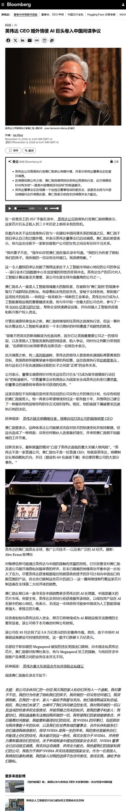
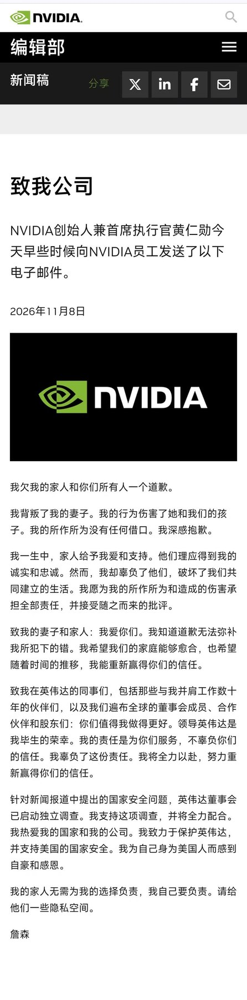
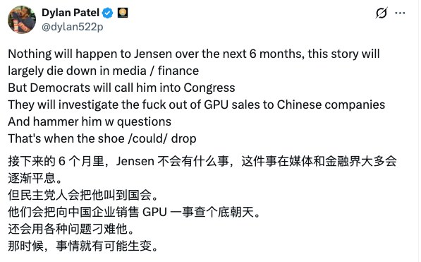

调研纪要 · 2026-11-09 新闻日报
星球 ID: 28855458518111 | 共 399 条帖子 | 精华 81 条
| 查看研究积累
强制同步到研究积累
全部 计算机 机械设备 电子 其他 电力设备 非银金融 宏观策略 传媒 医药生物 国防军工 通信 公用事业 有色金属 汽车 轻工制造 建筑材料 社会服务 食品饮料 银行 房地产 建筑装饰 基础化工 煤炭 农林牧渔 商贸零售 家用电器 环保 纺织服饰 美容护理 交通运输 石油石化
书签
【招商电新】震裕科技：国星宇航上市在即，商业航天业务持续推进20261109
【招商电新】震裕科技：国星宇航上市在即，商业航天业务持续推进20261109
#国星宇航系头部卫星企业，港股上市在即
国星宇航是国内AI卫星头部民营商业航天企业，预计本周五港股上市。其核心规划为 “星算计划”，目标十年部署2800颗计算卫星，搭建天基算力基础设施；已累计发射多颗AI卫星，在手订单充足，招股书披露待交付卫星订单规模可观，星座组网节奏明确。
国星宇航定位偏卫星方案、载荷、星上 AI 算法与整星设计。传统航天模式下卫星小批量定制、成本高、交付慢，规模化量产能力构成扩张瓶颈，与震裕合作将得到明显的互补。
#双层股权绑定实现深度合作
震裕科技与国星宇航设立合资主体震裕星算，震裕科技持股 70%，国星宇航创始人陆川个人持股30%。业务范围覆盖卫星制造、航天设备、卫星部组件、集成测试等，定位为卫星工业化量产平台。
震裕科技董事长蒋震林个人入股国星宇航，持股3.46%，为前五大股东，双方在股权结构方面深度绑定，有利于保障合资公司优先承接国星宇航卫星制造需求。
#商业航天业务有望放量
震裕星算上海莘庄工厂预计年底投产，随着国星宇航上市，商业航天业务27年有望逐步放量。此外震裕与上海空间技术有限公司（八所旗下）有低轨卫星的合作，预计明年至少50颗星给到震裕代工。
[拳头]27年震裕科技结构件业务在国内头部及二线客户中的占比均有望提升；机器人海外头部客户提前要求送样，国内头部客户持续拓展中；商业航天迎来放量节点，预计业务体量及业绩将大幅增长，建议持续关注！
[玫瑰]大健云仓三季报要点（欢迎私信交流）
[玫瑰]大健云仓三季报要点（欢迎私信交流）
1）服务业务
26Q3服务业务营收同比+26%，得益于平台GMV增长及买卖双方对配套服务的需求提升；盈利能力方面，服务业务26Q3毛利率环比提升，主要系公司针对海运为主的物流服务价格波动的有效应对。
2）产品业务
美国市场同比+16%，有机增长稳健，欧洲市场同比+46%。盈利能力方面，产品业务26Q3毛利率环比略降，主要受海运及尾程物流成本上涨、行业竞争等因素影响。New Classic短期产品调整影响销售，长期将优化产品结构。
3）市场策略
欧洲市场作为公司未来长期核心增长动力之一，初期以1P作为首批卖家，丰富SKU吸引买家，买家规模逐步充足有望激发3P卖家加入热情。
4）仓储物流布局
保持拓展节奏的同时积极调整优化，缩短最后一公里配送距离；通过GMV增长、仓储布局完善及数据积累提升欧洲物流效率。
荣昌生物持续更新第29弹—荣昌生物5000万元首付引进荣昌制药Pan-RAS(ON)小分子抑制剂RCZY-690全球权益
荣昌生物持续更新第29弹—荣昌生物5000万元首付引进荣昌制药Pan-RAS(ON)小分子抑制剂RCZY-690全球权益
[礼物]事件：荣昌生物引进荣昌制药自主研发的Pan-RAS(ON)小分子抑制剂RCZY-690全球权益
[玫瑰]交易条款：首付款5000万元、最高总计48.7亿元的里程碑付款，并按许可产品年度净销售额的3%至7%支付特许权使用费
[玫瑰]RCZY690是一种强效、口服生物利用度良好的三元复合物分子胶类Pan-RAS (ON）口服分子胶抑制剂，广谱抑制KRAS、NRAS、HRAS等致癌基因突变，有望突破现有靶向药物在RAS突变覆盖范围上的局限，为更广泛的RAS突变实体瘤患者提供新的治疗选择，该产品目前正在国内开展Ph1/2临床试验，尚未有临床数据披露；
[玫瑰]从 2026年AACR披露的临床前数据来看，RCZY690展现出如下优势：
1️⃣RCZY-690对细胞增殖的抑制作用及对下游p-ERK（磷酸化 ERK）的抑制深度，均显著优于RMC-6236。RCZY-690拥有优异的成药性（ADME）和药代动力学（PK）特征：体内暴露量更高、半衰期更长，且血药浓度峰谷比（Cmax/Ctrough）平坦，提示其治疗指数（TI）显著提升；
2️⃣与RMC-6236和ERAS-0015相比，RCZY-690在小鼠模型中展现出更高程度的肿瘤优先分布特性。这些优势使其在KRAS突变的CDX（细胞系来源异种移植）和同源肿瘤小鼠模型中，仅需RMC-6236的1/25~1/250剂量、ERAS-0015的1/3~1/10剂量，即可达到相当的肿瘤生长抑制率（TGI）；
3️⃣RCZY-690具有优异的药代/药效（PK/PD）相关性，对DUSP6（RAS通路最直接的下游靶基因）的抑制持续时间长于RMC-6236；同时在临床前毒理学研究中表现出极佳的体内耐受性和可观的安全窗口。
👀观点：我们认为Pan-RAS(ON)小分子抑制剂RCZY-690的引入将有利于扩充荣昌生物的研发管线，与公司原本的抗体，ADC等药物有联用潜力，为公司长远发展打下良好基础。
风险提示：商业化不及预期风险；国内和海外市场竞争加剧风险等。
【兴证医药】恒瑞医药公布Myosin抑制剂治疗oHCM 52周延长期研究结果
【兴证医药】恒瑞医药公布Myosin抑制剂治疗oHCM 52周延长期研究结果
恒瑞医药公布了HRS-1893-201研究国内II期52周延长期研究结果。
HRS-1893片是恒瑞医药自主研发的1类新药，是一种选择性、可逆的小分子心肌肌球蛋白抑制剂，可特异性抑制肌球蛋白ATP酶的活性，起到抑制心肌过度收缩的作用。
42例患者经停药洗脱期后，全部进入52周延长期，统一采用40 mg每日两次作为起始剂量，并依据瓦氏动作下左心室流出道压差（Valsalva LVOT-G）和左心室射血分数（LVEF）滴定至60 mg或80 mg每日两次。
结果显示：延长期52周治疗可持续维持左心室流出道梗阻的改善，同时改善心脏生物标志物、运动耐量及患者生活质量，并将LVEF维持在安全范围；停药后回升幅度的减弱亦为探索其疾病修饰潜力提供了早期信号。
52周治疗后核心指标较基准：静息LVOT-G，-83.1 mmHg；Valsalva LVOT-G，-97.3 mmHg。治疗第1周即有67%的参与者Valsalva LVOT-G<30 mmHg；至第52周，79%（33/42）的参与者Valsalva LVOT-G降至30 mmHg以下。NT-proBNP，-93%，几何均值由835.1 pg/mL降至58.4 pg/mL。hs-cTnI，-60%，几何均值由0.015 ng/mL降至0.006 ng/mL。pVO₂，+2.7 mL/kg/min，70%的参与者提高≥1.5 mL/kg/min，50%的参与者提高≥3.0 mL/kg/min；通气效率（VE/VCO₂斜率）平均-4.0；KCCQ-CSS评分+17.3分，45%的参与者提高≥20分；60%的参与者达到NYHA心功能I级。
52周延长期治疗期间，HRS-1893整体耐受性良好，未观察到新的安全性信号，无参与者因不良事件永久停用研究药物。平均LVEF由基线71.5%变化至第52周的64.8%，维持在安全范围内。两例参与者出现一过性LVEF低于50%，经剂量下调后均恢复，并在继续接受治疗的情况下维持正常。
仅为公开资料整理，不涉及投资建议。资料来源：公司官微
联系人：王佳慧18801298007/杨希成/黄翰漾/孙媛媛
江苏北人：卡位非标焊接具身智能，强工艺 0-1 破局 - 1109
江苏北人：卡位非标焊接具身智能，强工艺 0-1 破局 - 1109
———————————
总结：焊工断档向重工传导，公司「轨迹自主 + 工艺自主」双闭环有望被充分定价，主攻船舶海工 / 发电设备 / 重型钢构，从项目制集成向标准化装备 0-1 切换。机器人板块从「造躯体」走向「懂工艺」，# 得工艺模型者得非标场景。
⭐为什么非标焊接是机器换人最后、也最硬的核心痛点？
汽车（已吃满）：同一零件干 1-3 年、冲压偏差仅 0.2-0.3mm、工装工艺全固定 → 传统示教机器人背好台词就能印，自动化率见顶，第一代应用天花板到了。
重工（没啃动）：船舶 / 海工 / 桥梁 / 发电设备多为小批量甚至单件，装配间隙 1-8mm 动态变化，焊位、坡口、工艺随场景走 → 传统在线机器人每换一批就得重新编程，# 越自动越低效，所以到现在还是老师傅蹲着焊。
人（快没了）：全国焊工保有 500 万，缺口 350 万、今年预计扩到 380-390 万；40 岁以上占近 80%，从业年龄普遍卡在 50 岁，每年退 40 万，年轻人基本不进这行；有证焊工年薪逼近 20 万还在涨 → 不是远期趋势，是当下刚需，仅省一半人力就对应数千亿账。
⭐双自主闭环：别人做「免示教」，它做「免示教 + 保合格」
1）轨迹自主｜解决部署瓶颈
3D 视觉自动识别焊缝 → 自主规划最优路径 → 主动避障，# 不用人工示教编程。轻工艺场景行业稼动率仅 60-75%、新品部署 10-30 分钟，客户认的门槛是稼动率 ≥85% / 部署 ≤3-5 分钟；公司当前单台部署 2-3 周，已启动软件优化，目标压到 1 周、理想 3 天。
2）工艺自主｜解决质量瓶颈（真护城河）
按装配状态动态匹配电流 / 电压 / 速度 / 摆动，焊接过程中对预规划参数实时二次调整，# 一次合格率 96-98%，超合同 95%、超大船厂人工 95-97% 的优秀水平。厚板、多层多道、要无损探伤的强工艺场景，多数免示教厂商出身视觉 / 软件、工艺能力偏弱，# 该赛道几乎无直接对手。
3）数据→模型｜把老师傅的手感炼成资产
自有素材中心全链路真机数据（焊前装配 / 焊中电流电压层间温度 / 焊后尺寸质量）+ 客户端运行回传 + 仿真合成，# 单组真机数据成本 >1000 元、千级真机校准 + 万级~10 万级仿真预训练。路径：细分场景小模型 → 几十个小模型 + 百万级结构化数据 → 二次训练出独立于通用大模型的「焊接纯域模型」。工艺模型占焊接智能体 2/3 权重，识别规划只占 1/3 —— 市场在盯「像不像人」，公司在攒「会不会焊」。
⭐又一核心卡位：从卖产线到卖标品
一代泛 AI 产品已小批量试单、启动销售；二代模型驱动（视觉 / 规划 / 工艺 / 平台软件四模块并行）2027 定型，种子客户工厂已跑通预规划→过程控制→规划修正全流程，# 结构化有效数据已批量沉淀。形态上 悬臂 + 车载同步第一优先级，车载可挂人推车 / ATV / 四足机器人，# 移动能力即场景覆盖能力，未来量最大；磁吸收窄、定制化订单逐步转标品。组织已拉通销售-研发-产品-交付全链条事业部。管理层北极星只有一个：市占率，细分→整体、中国第一→世界第一。
⭐投资建议
TAM：GGII 口径 2025 中国智能焊接渗透率仅 8.2%、销量 0.69 万台 → 2030 年 3.75 万台 / 32%，中国 CAGR 约 38%；券商场景口径船舶约 244 亿 + 钢结构约 385 亿；再往上按 500 万焊工 × 替代率 ≥50% 打开千亿叙事。造船高峰可持续到 2028-2030、船厂排产已到 2030 后，需求窗口是锁死的。
经济性闭环：单台单班替代 0.6-0.8 人 → 远期上限 1.1-1.3 人（焊接速度物理决定，不吹一台顶俩）；一人管 3-4 台 → 4-6 台；双班运行下回收期 1.5 年以内 → 1 年以内。客户行为已经验证：巨力重工首单 1 套验效果、达标后直接复购 3 台，多家下游复制「先 1 台、再追加」，# 复购是非标装备最难、也最硬的商业化信号。
假设 2030 年国内智能焊接 3.75 万台，公司凭强工艺卡位拿 20% 份额 ≈ 7500 台，按 40 万/台 → 收入 30 亿；标品化后净利率 20% → 利润 6 亿，给 30x PE，# 增量市值约 180 亿。主业 2025 储能减值出清、2026 前三季归母 2765 万扭亏、海外项目集中验收，给主业 30e 底仓；叠加焊接纯域模型落地后的平台化期权，打包看 200e 目标市值，对应当前 37.5e 小盘子、全流通、1.16 亿股 。
Kokusai Electric 2QFY27：营收超预期4%、净利低于预期5%；DRAM及先进逻辑需求驱动高增
Kokusai Electric 2QFY27：营收超预期4%、净利低于预期5%；DRAM及先进逻辑需求驱动高增
📊【业绩回顾】#营收超预期，DRAM及先进逻辑设备放量
2QFY27营收/归母净利润JPY88.6/14.3bn，yoy+35.5%/+63.3%，qoq+17.5%/+24.1%，较彭博预期+3.5%/-5.1%。#DRAM及Logic/Foundry设备销售增长，设备/服务收入JPY71.3/17.4bn；毛利率42.8%，qoq+2.1ppts，产品结构改善带动盈利提升。
🖇【公司指引】#全年财务指引维持，营收/净利低于预期1%/5%
FY27营收/归母净利润指引维持JPY340/55.5bn，yoy+44.6%/+84.4%，较彭博预期-0.9%/-5.1%。#隐含下半年营收/净利润JPY176.0/29.6bn。公司预计AI驱动高性能Logic及DRAM产能扩张与制程升级持续，半导体设备需求维持强劲。
💡【DRAM/GAA/ALD】#中国本土客户需求回升，先进制程推动设备升级
2Q DRAM/Logic&Foundry设备收入占比约37%/28%，#中国本土客户收入占比由1Q的25%升至35%。先进DRAM迭代推动Batch ALD工艺机会增加，#GAA先进逻辑制程带动高难度沉积设备POR数量增长；NAND多层化及先进封装需求提供长期增长空间。
扬腾创新深度：汽配跨境独角兽，扬腾“非常6+1”
扬腾创新深度：汽配跨境独角兽，扬腾“非常6+1”
[玫瑰]扬腾当前创业板IPO已两轮问询，近期上市预期增强。23-25年其营收CAGR达58.7%，归母CAGR达82.8%，仅26H1收入26.6亿元/+22.9%，净利润3.55亿元/+69.9%。我们比之为“汽配届的安克创新”，总结其亮点为【非常6+1】！
1️⃣汽配后市场。刚需长赛道，美欧汽车保有量高、车龄渐长，后市场生命周期极长。而美欧独立售后达70%/65%，即扬腾目标客群，汽配密集替换周期在3-8年。
2️⃣跨境电商。全球汽配线上29年有望1222亿美元，CAGR为7.38%。线上化空间大，仅20-24年汽配线上化13.4%→14.8%，美欧领先，且仍显著低于其他消费品线上化率（34.3%~46.5%）。
3️⃣超长尾。广域覆盖即壁垒。23-25年公司SKU由7.4w→17.2w个。庞大矩阵单件量极小，业务早期积累开发难度大，扬腾厚积至今高完成度覆盖，极大抬高后续同行准入门槛。
4️⃣中国制造。核心产品对标美国Ford，扬腾A-Premium售价仅为15-70%。对接国内288家供应商，因单件量小，未来市占扩大，规模化放大倍数将更显著。
5️⃣A-Premium头部品牌地位。主店铺位列Amazon汽配第一，复购率增加25年已至34%。25年末在Amazon/eBay主要店铺好评率98%+。独立站规模25年已占公司9.3%。
6️⃣全链路数智运营-强交付。贯穿需求预测、统筹采购、跨境仓配、库存动销、尾程配送、乃至品宣营销。依托体系和投喂优化，销售预期周期52-104周，三年年存货周转率保持1.8+，在交付敏感的汽车后市场里位列第一。
➕1️⃣风险不易被选中。不同于跨境大单品，汽配庞杂分散，较难以被政治手段聚焦圈中。
[太阳]后市增量：①北美主市场，格局分散，集中提升。北美线下汽配商CR4仅26.7%，扬腾突破难度低。25年扬腾北美线上市占增至1.21%，中期份额若至3.8%，结合β其北美主业5年CAGR有望超38%。②欧洲第二市场后发加速。欧洲汽配线上化略慢于北美，考虑其庞大基数，扬腾已由产品本地化、渠道、供应链发力布局，25年欧洲业务占比已达10.7%，预期后续欧洲增速显著快于其北美主业。③多渠道发展。独立站占比23-25年由5.57%→9.26%，品牌加强，在拓的其他线上新兴平台、线上B2B、境内O2O都易多点开花。
[太阳]扬腾创新，是我组自Q2大报告《
大出海时代 ↗ 》挖掘而来的极重视的优质标的，历数年厚积薄发，具备高成长、高壁垒、显著头部利润增量空间的特质，强烈推荐市场关注其卓越价值。
#1109复盘汇总
#1109复盘汇总
1️⃣机器人概念：午后涨停潮，全天最强主线
据外媒报道，三星、SK海力士、美光三大存储原厂正与SEMI磋商晶圆厂内机器人充电系统标准化，叠加国产人形机器人量产预期持续发酵
相关个股：上纬新材、阿尔特、宇树科技、光洋股份
2️⃣冰雪产业：第28届哈尔滨冰雪大世界，携手华特迪士尼（中国），以《
冰雪奇缘 ↗ 》为主题打造专属冰雪区域。这是该主题冰雪雕塑在全球范围内，首次于哈尔滨呈现。
相关个股：冰山冷热、晶雪节能、雪人股份、龙建集团
3️⃣：钛板：太空算力最新分支。根据天风证券，NV Space-1太空机柜需要用到钛板，一是用于抗发射时的随机振动和冲击，二是给GPU做局部辐射屏蔽，价值量高达4W/机柜。
相关个股：西部材料、宝钛股份、金天钛业、天力复合
#明日前瞻
1️⃣李强签署国务院令公布《
中医药传统知识保护条例 ↗ 》，对列入保护名录的中医药传统知识，支持传承传播，加强推广应用，促进研究创新。
相关个股：盘龙药业、太龙药业、陇神戎发、佛慈制药
2️⃣美国政府将就英伟达CEO黄仁勋相关事宜向国会作情况通报。美对外AI芯片出口限制或将持续升级，国产算力有望受益。
相关个股：燧原科技、大胜达、寒武纪、沐曦股份
快舟航天宣布未来三年将完成50次以上发射，2027年实现可重复使用液体火箭首飞入轨及回收。
快舟航天宣布未来三年将完成50次以上发射，2027年实现可重复使用液体火箭首飞入轨及回收。
年初点评提到，极有可能在年内完成回收试验（26 年），后续可回收火箭会由一枝独秀逐步到“百花齐放”。
运力即算力，火箭端重视： 1）上游高壁垒原材料；2）3d 打印链
20261109 关注海外G+A生态硬件条线，Google TPU近期进展有望超预期 #中富电路 #新雷能
20261109 关注海外G+A生态硬件条线，Google TPU近期进展有望超预期 #中富电路 #新雷能
🔥根据Wall st engine报道，GOOGLE正在推出其第八代TPU系统两个新的专用版本，使其阵容扩展到四种配置，这些新系统针对两种日益重要的AI工作负载:#1)TPU8tx:专为安全、机密计算而设计。它与AMD CPU配对，以实现芯片级数据加密，针对政府机构和受监管行业的公司。#2)TPU8iMax:在单个封装中结合两个TPU芯片，以#提供更大的计算能力和内存容量。它专为需要长上下文窗口的AI工作负载而设计，包括编码、药物发现和复杂数学。两者都是谷歌现有TPU设计的重新配GOOGL正在推出其第八代TPU系统两个新的专用版本，使其阵容扩展到四种配置版本，而非全新芯片，预计将于2027年上市。随着客户需求的发展，谷歌越来越专注于专用AI硬件。该公司还表示，其#全部可用的TPU供应已被预订一空。
🔍从产业跟踪来看，27-28年谷歌TP U加速放量的趋势已经非常明确，市场可能很大程度上低估了谷歌在后续tpu v8 v9甚至v10的布局，其单卡算力&功耗甚至有望持平于nv同代际相关gpu的产品。
🧧继续推荐 #中富电路（谷歌+A客户核心的三次电源PCB供应商，三季度三次电源趋势从订单及出货指引皆到了明显的拐点期，往后看谷歌tpu代际迭代对电源pcb是个功耗*单瓦价值量的强双击逻辑，看600e+） #新雷能（核心关注后续谷歌400v-54v pdb及vpd项目下单进展）
【国金电新】AIDC每日重点公告梳理20261109
【国金电新】AIDC每日重点公告梳理20261109
公司公告：
#液冷
1.申菱环境：公司因股价触发“申菱转债”转股价格向下修正条款，决定本次不下修，转股价格维持95.49元/股，2026年11月10日至2027年5月9日期间如再次触发下修条款，亦不提出下修方案。
2.强瑞技术：公司拟以自有资金及或自筹资金8000.00万元至1.20亿元，通过集中竞价方式回购股份，回购价格不超过148.58元/股，回购股份的一半用于股权激励或员工持股计划、另一半用于维护公司价值及股东权益并择机出售。
3.宁波精达：公司以现金5100.00万元增资入股宁波铪池科技有限公司，持股51%，与持股49%的宁波新睦科技有限公司共同布局粉末冶金全产业链，合资公司总认缴注册资本1.00亿元，已完成工商登记并取得营业执照，成为公司控股子公司并纳入合并报表范围。
#AIDC变压器
4.伊戈尔：公司2023年股票期权与限制性股票激励计划预留授予限制性股票第三个解除限售期涉及11名激励对象，解除限售数量为13.76万股，上市流通日期为2026年11月12日，占公司总股本0.03%。
全国酒店经营及供需跟踪（11.2-11.8，2026年第45周）
全国酒店经营及供需跟踪（11.2-11.8，2026年第45周）
[太阳]【全国整体】RevPAR增速环比为2.3 pct
🎯VS.2025 年：RevPAR 同比 +5.3%，上周+3.0%。其中：OCC 同比-0.8%，ADR 同比 +6.8%。
🎯VS.2024 年：RevPAR 同比 +8.5%，上周+5.8%。其中：OCC 同比-1.4%，ADR 同比 +11.2%。
[太阳]【分城市线级】ADR齐增，除一线及二线外OCC均有小幅下滑
1️⃣一线城市：RevPAR同比+14.4%，其中OCC同比+4.7%，ADR同比+7.1%
2️⃣新一线城市：RevPAR同比-0.8%，其中OCC同比-1.0%，ADR同比+0.8%；
3️⃣二线城市：RevPAR同比+2.0%，其中OCC同比+0.1%，ADR同比+1.8%；
4️⃣三线城市：RevPAR同比-0.3%，其中OCC同比-1.0%，ADR同比+2.5%；
5️⃣四线及以下城市：RevPAR同比-1.7%，其中OCC同比-2.5%，ADR同比+2.5%。
[太阳]【供需结构】
供给增速：+5.3%（上周为5.2%）
需求增速：+3.8%（上周为4.8%）
累计需供差：累计需求+5.9%，累计平均供给+6.4%，需供差-0.5%
2026年11月第1周酒店数据跟踪
2026年11月第1周酒店数据跟踪
🔺 核心结论：本周（11月2日~11月8日）全国平均Occ为54.1%、同比-1.4%，平均ADR为195.8元、同比+2.8%，平均RevPAR为105.9元、同比+1.4%；四季度（QTD）RevPAR同比+2.5%（三季度为+1.1%）。
我们仍看好行业景气延续（具体可参见我们于10月21日外发的点评《关注秋假、会展、商旅三重预期差》），对公司经营构成有力支撑。展望明年，我们认为酒店行业具备预期相对低位、需求稳健增长、供需格局改善、龙头份额提升等逻辑，公司层面具备α动能释放（如供应链等增量业务、直营业务优化、经营效率提升）、现金流和股东回报稳健等特征，推荐经营可见性强及低估值标的：华住集团、携程集团，关注亚朵、首旅酒店。
🔺 供给：截至11月第1周，OTA平台上15 间及以上酒店数量 42.1 万家，同比 +4.5%，环比 +0.1%，比年初 +4.2%。酒店客房 2,066.1 万间，同比 +4.5%，环比 +0.1%，比年初 +4.4%。
🔺 头部酒店集团：截至11月第1周，华住/锦江/首旅/亚朵/君亭/金陵酒店境内门店数量分别为13,692/10,611/7,693/2,299/117/111家，分别较上周0/-2/-17/+3/0/0家，分别较上季度末+46/-39/-27/+37/0/0家，分别较年初净开1,134/77/510/297/9/15家店，门店数量较年初净变化+9.0%/+0.7%/+7.1%/+14.8%/+8.3%/+15.6%。
银行2027年度策略出炉📈
银行2027年度策略出炉📈
去年策略报告中几点预测都有应验，我们在今年报告中也对2027提出四大预测：
1️⃣ 上市银行是最核心的优质红利资产。明年上半年息差好于下半年，利润增速稳定在4%-5%。
2️⃣ 分红率稳步提速，贷款降速提质给予银行更高分红能力。
3️⃣ A股银行有望再现“1倍PB”，国有大行提振估值中枢、优质城商行率先站上1倍，同时2027年关注头部股份行“适时重生”。
4️⃣ 2027银行资金面还有预期差，欠配权重股有更大机会。“稳稳的幸福”更强于“东张西望”
景区行业跟踪报告：业绩同比低谷已过，重点关注项目增量
景区行业跟踪报告：业绩同比低谷已过，重点关注项目增量
[太阳]出游大盘客流稳健，客单趋势承压。
根据文旅部，26Q1/Q2/Q3国内居民出游人次同比增长6.0%/4.8%/7.6%，国内居民出游花费分别同比增长约3.3%/0.0%/2.4%，计算得人均消费分别同比下降约2.5%/4.5%/4.9%，旅游出行大盘继续保持增长，但人均消费呈现走弱。2026年春节/清明/五一/端午/国庆假期国内出游人次同比增长5.7%/6.8%/3.6%/4.4%/6.3%（按可比口径），但各节假日人均消费同比均有下降。映射到景区板块上，总体客流表现仍具韧性，尤其头部自然景区的游客吸引力仍相对较强（但部分时间受不利天气影响较大，例如今年暑期）。而文旅消费更趋理性，景区二次消费预计有所承压。同时，由于文旅产品这几年供给的增长，以及县域旅游的热度持续提升，景区行业竞争越趋激烈，分流现象也持续存在，人造景区因其资源稀缺性一般弱于头部自然景区，受到行业竞争及分流的影响相对更大。
[太阳]行业旺季受冲击，同比低谷或已过去。
我们以18家A股景区公司作为样本，26Q3收入同比增速中位数为-8.5%，我们总结原因包括暑期旺季降雨台风等不利天气影响较大、出游客单价表现仍有一定压力、旅游市场竞争加剧、燃油费偏高等，其中长白山、九华山等头部山岳型景区因其资源稀缺性客流韧性较强，宋城演艺、陕西旅游旗下《
长恨歌 ↗ 》等人造景区受到消费环境、行业竞争及分流的影响相对更大。26Q3景区公司归母净利润同比增速中位数约为-27.1%（剔除掉增亏的曲江文旅后为-19.8%），由于暑期是旅游景区的传统旺季，暑期天气条件不佳对景区板块的冲击尤其大，叠加景区折旧摊销、人工工资等固定成本费用占比较高，经营杠杆会将收入端的下滑传导并放大至利润端。公司之间利润表现分化较大，仅三峡旅游、张家界、九华旅游实现归母净利润同比正增长。从同比角度看，26Q3多因素叠加冲击旺季，10月板块同比表现优于Q3，同比低谷或已过去。
[太阳]短期关注秋假表现，中期关注项目增量。
截至2026年10月底，已有15个省份全省推行中小学春秋假，放假多为3个工作日，且多安排在周末前后。我们认为，基于秋假进一步扩容，以及其落在交通票价较低的淡季，叠加多地门票优惠政策，Q4淡季景区板块需求有望得到一定支撑。进一步展望2027年，需求端我们预计旅游出行大盘仍有望保持温和增长，在天气条件等环境因素相对稳定的情况下，景区基础客流有望维持一定韧性，景区二次消费则有赖于整体消费环境。由于近年来头部景区客流基数已不低（尤其在节假日），景区承载能力、服务能力所形成的供给约束是限制景区进一步增长的因素之一，因此当下我们更关注存在项目增量逻辑的公司，这类公司有望呈现更优的成长性（具体增量项目的梳理见正文）。
[礼物]推荐三峡旅游：省际度假游轮已获市场检验，中长期成长潜力较大。26Q3公司收入/归母净利润同比增长22%/165%，我们估算省际度假游轮业务贡献的利润总额在2000万元以上，考虑到这是投运首年以及油价偏高的因素，该业务财务表现已初步兑现。截至Q3末，两船累计运营63个航次，平均床位载客率为91.95%，显著高于行业平均水平，产品市场竞争力已获检验，“长江行·极光”号还将尝试冬季航程，拓宽经营期。中长期看，公司聚焦游轮旅游主业，目前公司在建游轮4艘，包括1艘主题游轮、1艘微度假游轮、2艘省际度假游轮，成长轨迹较为清晰，也存在拓展其他航线的潜力，是景区板块较稀缺的成长性标的。
[礼物]推荐九华旅游：业绩持续稳健兑现，索道、缆车项目有望陆续落地。26Q3公司收入/归母净利润同比增长7%/2%，考虑到7月的不利天气因素，该业绩表现在景区板块中已相当稳健。项目增量方面，据公司公告，狮子峰索道预计2027年完工，按公司的估算，项目运营前十五年年均收入1.11亿元、年均税后利润0.37亿元。此外，百岁宫缆车升级改造计划也已公告，将提升运力、增强游客体验，项目停运建设期约12个月，后续停运期间存在阶段性影响，但中长期看有利于增长潜力进一步释放。回顾2024-2026年，Q1股价均有过一波上涨行情，与Q1是公司旺季有关，2027年春节较2026年早11天，九华山旺季有望提前开启，公司兼具稳健性与成长性，且估值在景区板块中偏低，推荐配置。
[烟花]投资建议：2026年上半年景区板块总体平稳，但Q3阶段性遭遇了不利天气及燃油费高企等因素的扰动，暑期旺季受打击，Q3业绩表现整体承压。受制于消费环境及竞争加剧，板块内部分化明显，其中资源稀缺性较强的头部自然景区客流相对稳健，人造景区竞争压力更趋凸显。我们认为景区作为体验性消费需求的重要场景其基础客流仍具备一定需求韧性，春秋假的范围扩大也有望提升景区在非核心旺季的旅游热度，预计行业大盘有望保持温和增长。由于近年来头部景区在核心旺季的客流基数已不低，景区承载能力、服务能力所形成的供给约束是限制景区进一步增长的因素之一，因此从成长性角度看建议更关注存在较明确的项目增量逻辑的公司。当前板块Q3业绩已落地、同比低谷或已过去，重点推荐业绩表现较优、中期成长逻辑清晰的三峡旅游、九华旅游，建议关注项目布局积极推进的陕西旅游、香港中旅、峨眉山A、黄山旅游、宋城演艺、长白山等。
[咖啡]具体内容参加景区行业跟踪报告《业绩同比低谷已过，重点关注项目增量》
🔥【华源北交所赵昊团队】北交所新股月报：10月发行节奏放缓，申购资金仍处高位
🔥【华源北交所赵昊团队】北交所新股月报：10月发行节奏放缓，申购资金仍处高位
🚀#发行与上市表现怎么看？2026年10月北交所共有6家公司上市、募资约18亿元，环比9月有所回落；新股首日平均涨幅为168%，也低于9月。拉长看，2026年前10月已有68家公司上市、募资约229亿元，新股首日平均涨幅218%。
🚀#申购热度如何？10月网上申购资金平均达11701亿元，中签率均值为0.0217%，打新资金保持高位、竞争依然激烈。申购资金上限平均约1286万元，顶格申购期望收益合计约2.4万元，较9月回落；新股首日表现与中签率变化仍是影响收益的关键。
🚀#后续供给与收益怎么看？截至10月底，205家公司筹备北交所IPO，其中40家已过会未上市。10月虽无公司上会，项目储备仍较充足。按报告测算，1000万元账户10月打新预期收益率约0.15%—0.21%；后续收益取决于发行节奏、新股定价及市场情绪，测算结果不代表实际回报。
⚠️风险提示：IPO审核政策与周期风险、市场打新积极性风险、测算数据存在偏差的风险。
❤️欢迎联系华源证券北交所研究赵昊团队，感恩您的支持
海外中选冲击可控 VS 国内稳市组合加码，A股震荡修复可期
海外中选冲击可控 VS 国内稳市组合加码，A股震荡修复可期
#海外： 蓝色浪潮冲击AI信仰，美股延续承压，美债和黄金支撑仍存
民主党横扫，利好医疗服务保障扩围、清洁能源补贴，数据中心审批、AI安全监管趋严引发AI担忧。目前看AI监管联邦立法难度极大，州级和地方审批约束更值得警惕。现在到 1 月为"消息真空 + 预期发酵"的窗口，重点观察暂停令是否扩散。
①美股：震荡承压，重点关注AI 融资结构和政策动向，把握必需消费、医疗保健等防御机会。
②美债：配置机会显现，10Y在5%附近具备配置价值。
③黄金：震荡修复。
#国内： 稳市组合加码，结构韧性显现，震荡修复可期
大势研判：当前指数调整幅度、筹码出清、市场情绪都均呈现底部特征，加上互换便利+回购增持+两融优化+长期资金入市稳市组合加码，宽基ETF托市力度放量，标志性大阳线企稳信号已现，震荡修复可期。
行业选择：
1）主题轮动（筹码结构较好且有产业催化的机器人、AI应用、固态电池、电网设备、商业航天等）；
2）超跌反弹（超跌修复的国产算力、半导体材料与设备、PCB等）；
3）价值防御（内需-农林牧渔、食饮、家电等）。
#周度复盘
市场表现：全A指数实现反弹，宽基全面反弹，科创反弹领先，大盘&创业板涨幅相对落后。
资金情绪：成交回暖，拥挤度底部反弹持续，宽基ETF托市力度放量至两千亿规模净流入，融资净卖出延续但力度有所收敛至小百亿规模。
🔥🔥【算力上天、终端落地，太空算力＋卫星通信迎来共振】
🔥🔥【算力上天、终端落地，太空算力＋卫星通信迎来共振】
☀️事件：11月9日，我国成功发射#卫星互联网低轨29组卫星。星座建设持续推进，关注从太空算力向通信终端、应用服务的产业链扩散。
❗️核心观点：#天上部署算力，地面连接用户。卫星组网打开基础设施空间，终端与应用决定商业化纵深。
✅重点关注：
① #中贝通信（603220，78.31亿）：已投资#国星宇航，结合地面智算集群，探索太空算力、卫星互联网合作。
② #盛洋科技（603703，约46亿元）：布局#卫星通信终端，已有三款静止轨道卫星接收产品推向市场，同步研发低轨连接方案。
③ #长江通信（600345，约132亿元）：布局#低轨卫星通信＋应急指挥，关注卫星连接在公共安全场景中的应用。
④ #通则康威（301718，约84亿元）：依托宽带连接终端基础，推进#天通卫星产品及融合接入研发，关注通信终端延伸空间。
⑤ #顺灏股份（002565，约112亿元）：参股轨道辰光布局#太空算力，具备算力卫星题材辨识度。
🌙投资判断：#算力部署＋星地连接＋终端应用，有望成为商业航天主题的重要延伸方向。
☎️风险提示：组网、研发及商业化进度不及预期。
🏆AI眼镜&手表ZJ要点更新1109
🏆AI眼镜&手表ZJ要点更新1109
🍊AI眼镜痛点与解决路径
⚜️体积重量：比较重，体积大。路径：3D堆叠封装，工艺制程提升。
⚜️功耗续航：2h充电一次。路径：低功耗芯片、多电源域。
⚜️显示成本：Micro LED 2027年有机会降至500-600元。
🍊北美CSPAI眼镜进展
⚜️Meta：2027Q2 3D模型落地，用于植物、动物等本地识别。
⚜️三星与谷歌：Gemini最晚2027Q3发布。谷歌端侧拟将音频、视频等体系像安卓一样整合，有生态闭环。
⚜️苹果：2027Q3发布产品。
🍊AI眼镜成本与渠道
⚜️整机定价：带显示产品目前普遍要四五千元，不带显示约3000多元；安卓体系带显示整机需做到2000元左右才可能爆发。
⚜️不带显示的BOM：主控AR1约60美金、恒玄2800约15美金，合计约75美金，主控约占BOM的70%；电源约5美金；其他。
🍊AI眼镜芯片竞争格局
芯海科技、炬芯做ISP但缺蓝牙/WiFi无线能力，高通低功耗目前不是很好，杰里、中科蓝讯做不了ISP和安卓系统，恒玄相对最有优势；但高通2027年出MCU加框架芯片、先进制程功耗更低，格局可能变化。
🍊2026智能手表行业出货
2027总量：599元以上手表2027年可能约9000万台，年增长约10%；华为和苹果合计占约60%。
🍊AI手表芯片竞争格局
⚜️华为苹果：华为因美国商务部/中美关系及自用难进入，苹果因自研芯片、可上3nm且低功耗做得可以，难进入。
⚜️竞争与新品：品牌端主要竞争对手是高通W5及下一代产品，联发科此前未重点参与；强劲对手还有阿波罗；低端手环竞争较分散。新功能看AI录音和大模型整理会议纪要。
🍊端侧芯片成本与存储影响
晶圆成本：2026年芯片成本涨约10%-15%，目前没有向下游顺价。存储占比不高，影响也不大。
【国盛张一鸣】积极配置机器人
【国盛张一鸣】积极配置机器人
Optimus将是27年最大科技单品，用于训练的V3已经开启量产并初步亮相，供应链积累的越来越多的订单已经无法掩盖，10月份爬坡的斜率会很陡峭。Q4诸多大厂（包括T、英伟达、Meta、hw、小鹏等）都可能有重磅发布，节前建议积极配置。
高确定性高价值量标的：#田中精机、科森科技、斯菱智驱、浙江荣泰、北特科技、鸣志电器 等。同时关注常州链的进展：#光洋科技、新泉股份、凯迪股份；
核心tier2: #恒锋工具 （谐波、丝杠刀具，订单已排产至三个月后，对日替代）、#正强股份 （手腕关节总成+谐波波发生器）；
国产C端：#上纬新材、中坚科技 等。
苹果HALO表现优异，模型升级指向更多模态数据融合【东吴机械】
苹果HALO表现优异，模型升级指向更多模态数据融合【东吴机械】
👉苹果发布HALO人形机器人自主控制系统，仿真训练向真实场景迁移。
2026年11月4日，苹果研究团队公开HALO人形机器人系统，采用宇树G1本体、阿里千问模型及Mac mini计算平台。在6个未经预先扫描或建图的真实环境中，单项任务平均成功率达91%，展示了人形机器人在非预设场景中的自主执行能力。
👉HALO训练主要依靠仿真数据，真实数据有望成为补充。
研究团队用运动扩散模型生成全身动作，用程序化生成器（INFINIGEN）造出 1000 个虚拟家庭，客厅、办公室、卧室，家具疏密随机；再在 Isaac Sim 里把动作放进场景，渲染出机器人头部相机看到的第一视角画面，最后交给自动校验器筛掉穿模、滑脚的坏样本。
👉目前模型仍依赖视觉信息，后续有望加速融入触觉等模态数据。
HALO团队指出，目前机器人主要依赖视觉感知，难以直接感知接触情况；当物体离开相机视野或被遮挡时，涉及接触的任务表现会下降。加入触觉感知，是后续改进方向之一。
👉投资建议：人形机器人软硬件持续迭代，产业化1-10放量节点将近。国产链关注【宇树科技】【越疆】【仙工智能】【天奇股份】【中大力德】；视觉关注【奥比中光】【奥普特】【凌云光】；触觉传感器与灵巧手关注【安培龙】【福莱新材】【汉威科技】【兆威机电】；T链关注【绿的谐波】【恒立液压】【浙江荣泰】。
👉风险提示：人形机器人商业化不及预期；宏观经济风险。
☎【东吴机械】周尔双/陶泽
【长江通信】重视太空算力Q4投资机会
【长江通信】重视太空算力Q4投资机会
事件催化上，中期选举后，民主党掌握参议两院，地面数据中心建设难度加大，在AI需求依旧旺盛的假设下，太空算力可能会得到加速发展。
基本面逻辑上，SpaceX已提出百万颗算力卫星申请并建设工厂，目标最早于2027年末规模生产和部署，官方对于规模的指引表述为“数千颗”。按此节奏测算，相关配套企业或在近期陆续取得订单。
激光通信将成为主要数据传输手段。激光通信更多用于星间、星地的传输链路。相较于微波通信，激光的传输速率更高，但对传输环境要求更苛刻。算力卫星数据传输要求远高于通信卫星，对于激光通信的依赖度会更高，且该环节长期具备通胀属性。
烽火通信与信科移动同属信科院旗下核心企业，面向国内重点通信星座项目供应激光通信终端及微波相控阵天线，价值量可观。面向太空算力时代，公司亦有望深度受益。
关于太空算力，我们周日刚发布最新深度研究报告《商业航天产业链观察系列八：太空算力将为AI需求提供重要算力供给》，欢迎沟通交流~
[庆祝]太空算力产业化提速，星地一体算力网络打开新空间
[庆祝]太空算力产业化提速，星地一体算力网络打开新空间
🔥近期商业航天催化密集，#太空算力从“远期想象”加速进入产业化验证阶段。
1️⃣卫星互联网提速：新一代通信网络加速组网，形成星地协同算力网络的底层基础。
2️⃣马斯克明确StarMind时间表：2027年Q3发射首批太空AI计算机，SpaceX拟订购6000个服务器机柜，目标2028年实现在轨1GW算力，海外商业化进程提速。
3️⃣“星云星座计划” 发布：全栈国产化太空算力网加快布局，未来将实现天地算力协同调度融合。
💡#核心产业逻辑
海外地面算力扩张持续面临电力及土地约束，扩容成本抬升。太空依托持续太阳能供给、真空辐射散热、近乎无上限的部署空间三大天然优势，为算力增长开辟全新路径。产业重心正从单一卫星制造，升级为星地一体算力网络。
💡#产业链核心环节：
星地传输：通宇通讯、信科移动
星上算力载荷：航宇微、复旦微电
航天材料：太力科技、派克新材
太空光伏配套：乾照光电、海目星
【国金煤炭 姜涛/卢佳琪】煤炭：盈利持续改善，关注估值提升
【国金煤炭 姜涛/卢佳琪】煤炭：盈利持续改善，关注估值提升
▍26Q3板块概览
1️⃣财务：扣非利润环比+5.9%，经营现金流环比+40.1%，费率环比微增。
2️⃣经营：安监导致产销承压、山西较明显，吨煤售价、成本、毛利环比+14.1%、+1.5%、+27.0%，成本虽因量减上升，但售价上涨带动毛利显著修复。
3️⃣行情：年初至今涨幅15.2%、全行业第一，Q3上涨22.0%，动力煤、焦煤分别+22.8%、+15.3%。
4️⃣持仓：公募煤炭配置比例环比+0.59pct至1.01%，动力煤、焦煤分别增配0.52、0.07pct，险资及主动公募选择性增配，被动产品持仓随净赎回收缩。
▍展望
1️⃣国内方面，供给侧实际增量释放仍需时间，火电需求进入低基数下的增长阶段，内陆日耗走高、补库需求带动煤价反弹。短期动力煤供弱需强，价格仍有向上空间。
2️⃣海外方面，地缘情绪缓和，布油、TTF天然气、纽卡斯尔动力煤价格大跌。但考虑欧洲天然气库存偏低(德国储气率约60.3%，10年均值为90%)，冬季供应缓冲有限，预计高气价持续性仍在。
▍投资建议
重视动力煤板块配置价值，Q4 业绩继续改善，煤价合理中枢上移，低利率环境下龙头股息率要求下降、估值提升，推荐#中国神华A/H、陕西煤业。若地缘情绪反转，重视高弹性与高股息的#兖矿能源、广汇能源。
[庆祝]【申万房地产】2027年房地产投资策略：存量周期新角色，供给出清新格局，建议买入（袁豪/曹曼/陈鹏/顾铮）
[庆祝]【申万房地产】2027年房地产投资策略：存量周期新角色，供给出清新格局，建议买入（袁豪/曹曼/陈鹏/顾铮）
[玫瑰]1）#居民BS表拐点决定房价慢跌拐点；而居民BS表修复速度决定房价止跌拐点
复盘海外经验，42国63次地产危机房价平均下跌34%，持续6.1年，前3年快跌、后3年慢跌；我们认为，止跌回稳关键在于居民BS表，居民BS表拐点同步于房价同比拐点（慢跌拐点），居民BS表改善速度决定房价拐点（止跌拐点），后者由金融出清和供给出清共同决定；此外，核心城市房价通常领先于全国3-5年企稳回升。
[玫瑰]2）#房地产角色转变、稳房价意义重大；止跌回稳的行业和政策条件已逐步具备
我国从增量周期“负债创造资产”过到存量周期“资产重估释放信用”，房地产角色将转变，稳房价意义重大。目前我国房价已深度调整，居民BS表走稳渐显，供给深度出清，金融出清部分完成，政策聚焦去库存和稳杠杆发力，包括房贷降息和去库存政策等，判断我国房价已经走过快跌阶段，进入到慢跌寻底阶段。
[玫瑰]3）#现房新政将推动供给深度出清；预计27年末新开工累计降85%、超美日德
现房新政将拖累资金周转效率，推动供给再缩量；新政后华润、招蛇、建发、中海等逆势积极拿地，测算净利率显著提升。预计27年房地产行业拿地/开工/销售/竣工/投资同比分别-34%/-25%/-22%/-20%/-24%，预计27年末开工累计降幅达85%，将显著超美国-73%、日本-54%、德国-79%，供给深度出清。
[玫瑰]4）#预计核心城市房价领先企稳、3年涨14%-20%；上海已见底、全国滞后3年
判断供给中期缩量是本轮楼市寻底的核心驱动力，并判断二手房挂牌量将中期见顶回落，源于：1）竣工补跌；2）租售比走高；3）现房新政。挂牌降幅与房价/租金涨幅显著负相关，进一步支撑供给寻底逻辑。预计供需关系更健康的核心城市将陆续企稳，判断上海房价2026年1月已见底、年初以来上涨5.5%，预计苏州、北京、深圳、合肥等核心城市也将陆续企稳，对应3年涨幅14%-20%，全国底滞后3年。
[玫瑰]5）#投资建议：建议买入。推荐：1）优质房企：建发国际、华润置地、中国海外发展、滨江集团、招商蛇口、中国金茂、中海宏洋、建发股份、绿城中国、保利发展、越秀地产；2）二手房中介：贝壳-W，我爱我家；3）商业地产：新城控股、太古地产、嘉里建设；4）物业管理：华润万象生活、绿城服务、招商积余。
【国泰海通医药】泰格医药：拟参与控股子公司方达控股的私有化，并出售海外实验室业务
【国泰海通医药】泰格医药：拟参与控股子公司方达控股的私有化，并出售海外实验室业务
[玫瑰]2026年11月，公司拟通过全资子公司香港泰格医药科技有限公司参与控股子公司方达控股的私有化，并通过后续资产重组向Charles River Laboratories International, Inc及方达控股董事会主席李松博士及其相关信托出售海外实验室业务，保留方达控股的中国业务。
[玫瑰]此次拟出售的海外实验室业务涉及临床前研究、实验室检测、化学及CMC等，与泰格医药的核心临床CRO业务在性质和模式上有显著不同。同时，出售位于中国境外的海外实验室业务有助于泰格医药优化战略规划、资本配置及营运决策，符合泰格医药长期发展战略。
[玫瑰]私有化及重组计划
[太阳]交易前：公司合计持有方达控股64.48%股份，包括公司直接持有的11.09%股份，以及通过全资子公司香港泰格间接持有的53.40%股份。
[太阳]公司全资子公司香港泰格、 CRL、李松博士及其相关信托共同出资设立SanRex，并以SanRex作为收购主体以计划安排方式将在香港联交所上市的公司控股子公司方达控股私有化。私有化完成后，方达控股将成为SanRex全资子公司。
[太阳]作为本次交易的一部分，各方将对方达控股进行分拆交易，具体包括资产重组、股权调整和股权转让。
[玫瑰]重组完成后
[太阳]交易完成后，SanRex仅保留目标业务且目标业务最终由CRL持有，中国境外非目标业务通过股权分配方式出售给Frontage ACE，中国境内非目标业务通过股权分配方式由香港泰格保留。
[太阳]目标业务的初始交易价格为4.7亿美元（最终由CRL持有）、中国境外非目标业务的初始交易价格为0.844亿美元（最终由Frontage ACE持有）、中国境内非目标业务的初始交易价格为2.055亿美元（最终由香港泰格持有）
[玫瑰]我们认为，此次拆分有助于泰格医药进一步聚焦核心临床CRO业务的发展，优化资源配置并提升运营效率，以强化在中国市场的临床服务能力和领先优势。我们继续推荐关注内需CRO景气度修复，订单端先于收入端修复。国内投融资逐渐修复，带动biotech研发需求回升。内需CXO订单同比回升，后续将随订单兑现周期逐步体现在业绩上。
联系人：余文心/周航/张子彤
【天风建筑建材】#罗曼股份调研纪要要点（20261109）
【天风建筑建材】#罗曼股份调研纪要要点（20261109）
一、算力业务（梧桐树）——当期业绩主体。#2026 年算力收入预计 20 亿元+，#同比翻番，毛利率约 20%+，净利润率约 15%，Q4 预计确认约 10 亿元收入。前三季度净利润已超 9000 万元，预计超额完成梧桐树 2026 年#不低于 1.3 亿元的业绩承诺。2027 年收入指引为#同比再翻番，毛利率保持。公司核心壁垒是算力消纳能力，可为客户保障 30%–50% 的消纳，上架率 80%；公司不建算力中心，只做设备供应商，未来会考虑规模化布局租赁。
二、端侧AI应用业务——旨在实现AI落地应用，反哺云端算力集群的消纳，同时积累数据资产。毛利率约 55%，显著高于算力业务。医疗端：产品面向三四线城市医院科室，用于精准医疗辅助；教育端：依托上海高校非英伟达千卡集群与高校联盟切入。首个城市合同预计 2026 年 11 月底至 12 月初签订，2026 年底交付首批产品；#2027 年目标销量 10 万台，单台利润约 1 万元，#对应利润约 10 亿元。
三、传统业务——景观照明 2026 年营收约 5 亿元，毛利率 35%，贡献利润 1 亿多元，不做扩张，仅聚焦长三角。新能源业务 2–3 亿元，毛利率 8%，主要定位为算电联合施工。海外数字文旅业务约 4 亿元，毛利率 30%，缺乏爆发性。
四、其他——2.93 亿元定增终止，原因是 C6 芯片涨价，拟更换型号。梧桐树股权收购价格仍在谈判中，原股东希望保留 1/3 以上的经营决策权。2027 年计划启动芯片设计合作研发，并布局太空算力，看好未来3-5年的发展前景。
#如需会议纪要详细版请联系
☎️联系人：鲍荣富/王丹/于那/周丹丹18117420701/上官京杰/林晓龙/曾子峻
【国金计算机&科技】#力星股份：战略合作乐聚_发力具身数采及具身硬件合作
【国金计算机&科技】#力星股份：战略合作乐聚_发力具身数采及具身硬件合作
【1】#公司战略合作具身本体核心玩家乐聚
——战略合作乐聚。11月9日，力星股份与乐聚机器人签署战略合作框架协议，拟在数据采集和机器人硬件合作两条线开展合作。
——乐聚是国内机器人本体核心玩家。近期已落成万台级人形机器人自动化产线，主要产品为夸父系列、鲁班系列和Aelos 系列，OpenLET真机数据社区的发起方。
【2】#重点发力具身数采及本体代工
——数采端_双方将合作推动具身数采训练场建设运营、真实场景数据采集与处理、模型训练及物理AI应用验证。
——本体端_力星结合自身制造资源，推动零部件配套和机器人硬件合作。
——#我们认为_力星与乐聚的战略合作_有望把精密零部件配套延伸到机器人整机制造服务_将真实产线变成机器人练技能的场景，随技能积累，双方有望将成熟的作业方案复用到同类产线，拓宽力星在机器人制造和工业应用两端的业务空间。
【3】#公司先前以微小钢球切入北美机器人供应链
——公司主业为轴承钢球、滚子和氮化硅陶瓷球，切入北美头部机器人供应链，G3、G5级微小钢球可用于灵巧手的微型滚珠丝杠，现有精密加工和检测能力可用于传动件配套。
——滚动体球为主要收入来源，滚动体滚子贡献约一成收入。2026年上半年，滚动体球、滚动体滚子分别实现收入4.71/0.70亿元，占营收85.85%/12.68%，毛利率15.04%/14.63%。
风险提示：项目推进节奏、订单转化速度、市场竞争情况等
联系人：郑元昊/孙恺祈/刘高畅
[庆祝]燧原科技大涨异动点评与重点更新1109【HFDZ】
[庆祝]燧原科技大涨异动点评与重点更新1109【HFDZ】
#基本面推荐逻辑：
国产算力黑马推荐——燧原科技：大客户腾讯二阶导最强，供应链储备夯实明年成长兑现，看好后续业绩环比大幅提速，有望黑马跃迁一线！
#重点更新： 1）背靠大客户优势，HBM等供应链进行了充分备货锁定；2）L600三季度出货收入占比超一半，五代卡加速规模放量；#3）Q4放量➕明年各个季度业绩落地有望持续超预期、我们预计燧原有望从二梯队GPU中脱颖，期待！
[红包]今日大涨主要系：1）美国中期选举后么美欧东南亚等多地数据中心建设受阻预期变化，强化国产算力线；2）中移动披露27年算力投资超千亿；3）底部反弹/反抽缩量轮动，流动性受限前提下，底部小流通盘股弹性较大。
ps.无论这一波反弹如何，短中期燧原潜力巨大，合适的位置总有建仓机会，高锐度国产算力！
欢迎联系HFDZ WY
🌟【国金商社】小菜园26M10数据
🌟【国金商社】小菜园26M10数据
#餐饮风向标
1）客流持续增长：堂食客流同比增长41%（门店数量同比增速约13%）；翻台率由3.0进一步提升至4.0。
#翻台增长独特阿尔法、爬坡持续
2）堂食收入同比持续双位数增长；年初至今客单价稳定在50元左右。
#价盘稳定
3）外卖自年初精细化管理以来，10月外卖收入占比约34%，收入结构稳定。
#外卖年初至今也有较好恢复
4）同店持续改善，年初至今同店销售降幅维持高单位数，收窄超1个百分点。
💪🏻#同店持续修复，#四季度预计单季度同店由负转正！
5）88VIP明年升级，截至10月底注册会员数量超200万。
#较年初指引双倍完成
📈作为我们的年度首推标的，今年表现有目共睹，我们认为现阶段#同店将持续改善，公司去年四季度已开始堂食和外卖业务结构化转型，故去年四季度基数较低。展望27年，公司随着88VIP的分级更新迭代后，我们认为客流量将进一步增长，重点推荐！
☎️小菜园公司调研需求及模型预测，欢迎联系国金商社团队！
于健/王超
[红包]晨光生物：第二批辣椒颗粒收购价涨幅12%左右，逻辑持续验证，维持强烈推荐！【财通食饮】
[红包]晨光生物：第二批辣椒颗粒收购价涨幅12%左右，逻辑持续验证，维持强烈推荐！【财通食饮】
[太阳]事件：2026 年下半年开启第二批辣椒颗粒收购，第二期合同期限为 11 月20号（含）前。价格方面：
▪️18个色价（含）以上的0.72 元每色价；
▪️16（含）-18个色价的0.71 元；
▪️13（含）-16个的0.7 元；
▪️低于13 个色价的原则上不要。
去年同期价格在0.63元左右，#今年第二批涨幅预计12%-13%，#前期第一批涨幅约11%。
[太阳]公司前两批辣椒颗粒收购价涨幅均在10%以上，我们认为公司辣椒红提价逻辑即将逐步兑现，2027年叶黄素、辣椒红提价或将带来1e以上的毛利改善，同时叠加公司高毛利定制化产品占比提升，高毛利梯队产品快速放量，我们看好27年公司利润弹性，预计26/27年利润3.7/5.4亿元，对应PE 17X/11X，持续推荐！
#详细测算，路演/反路演，欢迎联系~
----------------
财通食饮 吴文德/马咏怡
商业航天催化不断，强call派克新材
商业航天催化不断，强call派克新材
国内外太空算力建设有望同步加速，星舰V3第四次发射即将进行。这个位置强call被忽视的星舰核心供应商【派克新材】，具备全球领先的 9 米超大直径不锈钢环形法兰轧制能力，卡位星舰结构件供应链。今年高点回调35%，处于绝对底部，筹码好，最便宜的商业航天高锐度标的，明年5~6e业绩，20X不到，建议重点关注。
挪威暂停新数据中心的电力接入
挪威暂停新数据中心的电力接入
英伟达的数据中心愿景引发重新改造电力变压器的竞赛
英伟达的数据中心愿景引发重新改造电力变压器的竞赛
中国“国家队”加大 ETF 购买力度，创下历史新高
中国“国家队”加大 ETF 购买力度，创下历史新高
对冲基金以史上最快的速度之一抛售科技股
对冲基金以史上最快的速度之一抛售科技股
软银移动部门为美国可能出现的人工智能回调做准备
软银移动部门为美国可能出现的人工智能回调做准备
花旗策略师下调美国股票评级，上调欧洲股票评级，此前人工智能行业动荡引发市场动荡
花旗策略师下调美国股票评级，上调欧洲股票评级，此前人工智能行业动荡引发市场动荡
中国跨境人民币流动量创历史新高
中国跨境人民币流动量创历史新高
高盛的估值模型显示， #KOSPI 半导体行业的市净率倍数与未来盈利较市场共识低 70%的情况相符。
高盛的估值模型显示， #KOSPI 半导体行业的市净率倍数与未来盈利较市场共识低 70%的情况相符。
其情景分析显示：
• 盈利 -90% → 62% 的下行空间
• 盈利 -70% → 9% 的上行空间
• 收益 -50% → 上涨 68%
• 市场共识维持不变 → 上涨空间达 182%
这些是模型推导出的估值情景，并非目标价。
市场对韩国半导体产品给予了极高的折扣
9 月份美国数据中心建设支出同比激增 90%，达到 965 亿美元的创纪录年化水平。
9 月份美国数据中心建设支出同比激增 90%，达到 965 亿美元的创纪录年化水平。
这也标志着过去 10 年来同比增幅最大的一次。
该数据已连续 4 个月同比上涨超过+60%。
自 2024 年初以来，数据中心的建设支出已增长近四倍。
与此同时，9 月份普通办公楼建设支出同比下降 8%，降至 460 亿美元，接近 2016 年 1 月以来的最低水平。
这使得数据中心与普通办公楼建设支出的差距达到创纪录的 505 亿美元。
总体而言，9 月份美国建筑支出环比下降 1.9%，创下自 2020 年 4 月以来的最大单月降幅。
人工智能基础设施的建设正在改变美国经济。
BCG：谁来承担这 2.6 万亿美元的人工智能基础设施费用？
BCG：谁来承担这 2.6 万亿美元的人工智能基础设施费用？
> 我们预计，AI 装机容量将从 2025 年的 17.8 吉瓦增长至 2030 年的 120.3 吉瓦，这比巴西的最高峰值用电需求高出 14%，仅略低于日本的峰值用电需求。
> 据我们的模型估算，一旦 2026 年 1 吉瓦的计算能力投入运营，数据中心每吉瓦需创造 150 亿美元的收入才能覆盖成本，其中包括债务成本以及股权投资者可接受的投资回报率。
> 尽管我们预测 2030 年人工智能领域的收入将达到 2.3 万亿美元，但 2030 年整个系统或终端市场的经济需求总额为 2.6 万亿美元。
> 国际数据公司（IDC）预测，到 2030 年，各公司的 IT 支出将达到 7.3 万亿美元，其中不包括中国和人工智能领域的支出。
> 2026 年将投入 420 亿美元建设 1 吉瓦的人工智能计算能力，其中核心 IT 部分占总成本的 288 亿美元。
> 预计推理所占计算比例将从 2026 年的 66%上升至 2030 年的 72%。
高盛-中国市场速报
高盛-中国市场速报
📈 指数表现：
SCHOMP +0.32%，科创 50 +0.30%
上证 50 +0.06%，创业板指 -0.27%
沪深 300 +0.05%，中证 500 -0.17%
A 股总成交额：1.49 万亿元
📊 A 股早盘冲高，收盘涨跌分化；成交金额偏弱，交投情绪清淡。
板块层面，锂电板块领跌，宁德时代在连续几日反弹后再度收跌，天齐锂业及其他锂电相关公司同样遭遇抛售。地产、光伏板块同步走弱。
行情亮点上，具身 AI 板块持续走强，多数机器人标的收涨，催化消息为苹果研究团队开源 HALO 自主控制框架；银行板块在经历数日回调后今日重回强势。ETF 整体交投相对平淡。
💸 资金流向：
整体多空力量均衡、成交体量低迷；资金买入 GPU、消费电子方向，卖出存储、电池板块。
高盛港股市场速报
高盛港股市场速报
📊 指数表现：
恒生指数 -0.1%｜恒生中国企业指数 -0.2%｜恒生科技指数 -0.9%｜成交额 1740 亿港币
领涨板块：医疗保健 +1.4%、能源 +0.8%、信息技术 -0.2%
领跌板块：工业 -1.3%、可选消费 -1.0%、地产及消费 -0.6%
📉 港股早盘高开，随后震荡走弱
台湾市场因融券额度收紧成为资金焦点，港股流动性随之回落。成交额未能站上 2000 亿港币，前期逐步升温的风险偏好暂时进入休整。南向资金当日净买入 2.36 亿港元，午后买盘有所减弱。A 股表现相对强于 H 股；PPI 数据连续三个月回升带来一定支撑，但 CPI 数据偏弱，压制市场情绪。
💱 资金流向：港股卖出力量更强，买卖力量比值约 1.5:1
交易台在科技 / 光模块板块（中际旭创）交易最为活跃，该方向双向交易中卖出占优；同时直接卖出腾讯。有色、原材料标的（紫金矿业）同样出现抛压。
医疗板块持续有买盘，加科思药业承接隔夜资金买入；部分消费、餐饮标的持续获得资金买入，例如百胜中国。理想汽车等新能源车标的出现部分回补买盘。
🛒 消费板块走弱，美团下跌 5.3%
美团在连续六个交易日上涨后迎来回调，叠加其他券商下调评级，资金兑现盈利，CPI 数据也压制消费板块情绪。工业板块同样偏弱，宁德时代下跌 2.7%，在连续 4 日上涨后，已经连续两日收跌。
反过来，医疗板块再度领涨大盘，在上周五短暂回调后延续上周上涨行情。本次上涨没有明确催化消息，更多属于趋势行情延续。
高盛-亚太区域市场速报
高盛-亚太区域市场速报
🌏 市场驱动因素
亚太股市收盘涨跌分化、整体偏强。台湾、日本市场大幅反弹，而韩国、中国香港、印度尾盘走弱。资金持续从拥挤的 AI 板块轮动是主线，但台湾大盘科技股强势反弹，日本科技板块止跌企稳。澳大利亚受益于金属涨价，原材料板块领涨；多个市场的银行板块表现稳健。A 股整体横盘震荡、成交低迷，机器人板块走强，锂电、地产、光伏走弱。印度市场在前期历史性大涨后进入震荡整理，医药、银行跑赢大盘，IT 板块承压。
区域外汇普遍走强，韩元、澳元升值；油价回落，利好印度宏观基本面。整体来看，经历前期波动后，投资者选股趋于谨慎，在美国 CPI 数据公布前，市场主要由技术修复与板块轮动主导。
🗺️ 各区域行情速览
🇦🇺 澳大利亚：标普 200 指数 +0.10%
指数小幅震荡。原材料板块大涨对冲金融、可选消费的走弱。必和必拓上涨 2.7%，受益于金属价格上行，是指数最大正向贡献项；澳新银行公布 26 财年业绩后下跌约 1.6%，市场担忧资本压力与信贷竞争。原材料板块涨幅 2.88%，显著强于 IT、能源；金融、可选消费板块均下跌 1.11%。
澳大利亚市场基本面相对稳健，本地科技仓位低，在全球 AI 板块回调周期中韧性较强。澳元小幅走强，10 年期国债收益率维持在 5% 附近。受益于金属走强、澳洲联储对进一步收紧政策态度偏谨慎，标普 200 指数已经连续两周收涨。
🇨🇳******** 中国台湾：台股加权指数 +4.94%
指数大幅反弹，上涨超 2000 点，盘中一度突破 42000 点，大盘科技股引领修复行情。台积电上涨 4.7%，联发科、台达电子双双涨停，涨幅 10%。盘面赚钱效应极强，超 200 只股票涨停，本轮上涨更多是仓位回补带来的技术性反弹，基本面没有发生重大转向。反弹不局限于科技板块，石化板块同步跟涨，涨幅 9%。虽然指数大涨，但成交额反而萎缩 39%。
🇰🇷 韩国：韩国综合指数 -0.62%
指数冲高回落，盘中最高上涨 2%，尾盘收跌，仅勉强守住 5000 点关口，外资与散户同步净卖出。资金倾向于在技术性反弹阶段兑现离场，没有形成坚定做多行情。成交量较 20 日均值下降 15%，在美国 CPI 数据落地前，多数投资者选择观望。科技板块相对抗跌，本地机构资金买入存储芯片标的，叠加少量公司回购支撑行情。韩元升值 121 个基点，报 1346.50。
🇯🇵 日本：日经 225 指数 +2.33%
日本股市普涨反弹，东证指数上涨 3%，承接上周的大幅下跌后买盘回流。银行、汽车、能源领涨；AI 与半导体板块止跌，但没有大幅反攻。盘面结构向好，东证指数 1515 只个股上涨、138 只下跌。三菱 UFJ 金融集团上涨 4.4% 领跑银行板块；汽车板块延续轮动行情中的强势。日元小幅升值至 157.92 兑美元，10 年期日本国债收益率上行 1.2bp 至 2.666%，前期避险买盘有所消退。市场预期 12 月日本央行加息概率维持在 52% 左右，较上周接近 80% 的预期明显降温。富士胶片、千叶银行上调全年业绩指引；日本烟草、三井化学、尼康在大盘反弹的背景下，股价创出 52 周新低。
🇨🇳 中国内地：沪深 300 指数 +0.05%
A 股早盘冲高，收盘涨跌分化，成交持续低迷、交投意愿偏弱。板块层面，锂电板块跌幅居前；宁德时代反弹数日之后再度收跌，天齐锂业等锂电相关公司同样遭遇抛售。地产、光伏板块同步走弱。
亮点方面，具身 AI 持续走强，多数机器人标的收涨，催化来自苹果研究团队开源 HALO 自主控制框架。银行板块在连续回调之后再度走强。ETF 交易活跃度偏低。
🇭🇰 中国香港：恒生指数 -0.13%
港股早盘上涨，尾盘回落小幅收跌。工商业、金融板块的上涨，抵消了科技板块的疲软。阿里巴巴最高上涨 3.1%，券商预判公司新一代 AI 模型即将发布；百威亚太上涨 3.7%，中国银行连续第四个交易日上行。美团下跌 5%，券商下调评级，理由是增长放缓、行业竞争加剧。港交所被上调至买入评级，目标价 450 港币，尽管三季度交易表现偏弱。
国内汽车数据偏弱，10 月乘用车零售销量同比下滑 27.1%，出口同比上涨 68.5%。另外，中国移动预计 2027 年算力相关资本开支增幅超 60%；传闻阿里巴巴旗下平头哥半导体计划赴港 IPO，募资规模 20–30 亿美元。
🇮🇩 东盟（印尼）：雅加达综合指数 +0.32%
指数接近 5100 点，油价支撑叠加区域情绪向好。银行板块领涨，电信板块同样走强；汽车、电子板块受益于 AI、数据中心需求预期。电信、能源标的表现稳健；石化、炼油企业受益于价差与利润率修复。
🇮🇳 印度：NIFTY 指数 -0.22%
印度股市在创下 2021 年 2 月以来最强单周 8% 涨幅之后，进入震荡消化阶段。医药板块领涨，银行板块因上调至超配评级走强；IT 板块承压，资金从 AI 相关标的撤离。油价下跌是重要利好，印度 10 年期国债收益率下行近 10bp，月初外资持续流入支撑市场情绪。券商上调 NIFTY 目标至 28000 点，理由是盈利预期改善、油价下行风险缓解。塔塔钢铁下跌，塔塔信息技术在拿下大额地铁订单后走弱。消费端盈利压力仍是短期利空。
高盛韩国股指收盘速报 —— 盘中反弹势头消退
高盛韩国股指收盘速报 —— 盘中反弹势头消退
📊 指数数据
韩国综合指数 KOSPI：-0.79%，报 5019.8 点，成交额 128 亿美元；外资净卖出 5.14 亿美元，本土机构净买入 5.36 亿美元，散户净卖出 3.64 亿美元
科斯达克 KOSDAQ：-0.82%，报 639.0 点，成交额 32 亿美元；外资净卖出 0.56 亿美元，本土机构净买入 0.80 亿美元，散户净卖出 0.29 亿美元
📌 市场回顾
KOSPI 盘中一度冲高 2%，但在外资、散户同步净卖出的打压下冲高回落，收盘勉强守住 5000 点关口。资金流出特征显示，投资者倾向于在美股周五带动的技术性反弹行情里逢高兑现，并不看好本轮行情持续性；市场交投清淡，成交额较 20 日均值下降 15%，资金在美国 CPI 数据落地前保持观望。科技板块相对抗跌，存储芯片买盘主要来自韩国本土机构，公司回购也提供一定支撑。韩元升值 121 个基点，报 1346.50 韩元兑 1 美元。
🔍 重点新闻梳理
💾 半导体板块上涨：SEC +0.6%、SK 海力士 +0.4%
存储板块小幅收涨、跑赢大盘，但缺乏坚定的增量资金进场，行情属于技术性修复。本地媒体消息偏积极：三星、海力士的主要大客户没有取消或削减订单，现有项目与长期合约持续支撑 HBM 以及存储芯片需求。估值层面，KOSPI 半导体板块 FY23 市净率回落至约 0.7 倍的历史低位，该位置在历史上往往对应半导体周期底部，后续回报空间值得关注。外资资金：三星净卖出 8900 万美元，海力士净卖出 5200 万美元。
🛡️ 国防板块走弱
高盛韩国国防指数下跌 3.5%，核心诱因是多家公司三季度业绩不及预期（LIG D&A 大跌 8.9%），叠加地缘信号不明。市场担忧 KAI（韩国航空宇宙产业）：由于无法按时拿到美方制造的核心发动机零部件，KF-21 战斗机量产时间表或将推迟。外资终结了对 LIG 连续 13 个交易日的净买入，当日小幅卖出，同时小幅减持韩华航空、KAI。
🧬 Alteogen（196170）下跌 16.0%
受美国 CMS（医疗保险和医疗补助服务中心）药品议价新规落地影响，股价大幅走弱。新规将该公司的静脉制剂 + 透明质酸酶皮下改良方案，不再认定为独立新药，归入原参考药品，强制纳入医保药价谈判，直接冲击这类生物科技公司。盘中公司回应，自身技术壁垒仍然稳固，股价跌幅有所收窄。外资逢低吸纳，净买入 1400 万美元，散户同步净买入 900 万美元。
专家观点：Rubin、Neocloud、电力和谅解备忘录
专家观点：Rubin、Neocloud、电力和谅解备忘录
> GB300 生产与交付：一家全球 AI 服务器 OEM 在 2026 年第三季度实现了约 700 机架的 GB300 NVL72 产能，按计划交付约 600 机架，其中 90% 供应给云服务提供商。
> Vera Rubin 推迟至 2027 年第一季度：下一代 Vera Rubin 产量（原定 2026 年 12 月少于 100 机架）因电网瓶颈和 HBM4 良率低而推迟至 2027 年第一季度；2027 年目标为 5,000–6,000 机架，平均售价约 800 万美元。
> 广泛的电力延误：数据中心电网连接积压导致所有客户层级的部署延误 1–3 个月，具体取决于公用事业队列。
> Neocloud 管道高风险：计算租赁客户的第三季度谅解备忘录环比增长不到 50%，仅有 30–40% 转化为具有约束力的采购订单，原因是融资紧张和单位经济性疲软。
> 价格战风险与超大规模商稳定性：商品计算租赁引发价格战，并导致 Neoclouds 在 2027 年上半年后续采购订单犹豫不决，而自筹资金的超大规模商则保持高转化率。
> 2027 年 OEM 配额调整：Dell 的 GB300/Vera Rubin 分配将持平至适度增长，而 Lenovo 的 NVL 配额将从 7% 上升至 10%，继系统审计和 NVIDIA 认证之后。
> 消费硬件严重下滑：2026 年 PC 出货量预计为 6300 万台（50% 为 AI PC）；2026 年第三季度 PC 出货量同比下降 22–23%，而手机出货量同比下降 40–50%，原因是内存成本膨胀。
> 内存成本激增与 ASP 策略：DRAM 现货价格较 2025 年第二季度翻了四倍，推动内存 BOM 占比从 18–20% 上升至 35–38%；供应商依赖更高的平均售价和高端产品组合来抵消入门级需求疲软。
> 三星晶圆转移与 2027 年复苏：预计三星将在 2026 年第四季度将产能从 HBM 转移回 DRAM，因为 DRAM 利润率与 HBM 相当，这将有助于在 2027 年第一季度稳定内存价格，并引发 2027 年第三季度的 PC 出货量复苏。
> 激进的 OEM 库存去风险：一线 PC OEM 将 DRAM 覆盖从 6 个月削减至 3–4 个月，CPU 覆盖至 2 个月，将成品库存保持在 30–40 天，以避免高成本库存敞口。
银行股很难杀的🐮🐮
银行股很难杀的🐮🐮
当市场从下跌中企稳修复，总有人预测银行股要杀跌😅😅
但银行股很难杀的🤷🏻♀️🤷🏻♂️2026/8/4那次反弹中，银行指数只跌了2天😎😎即使2024年“924”行情，银行也是跟着一起大涨到了来年6月📈📈
当市场担忧债务风险时，总有人预测银行股要杀跌😅😅
但银行股很难杀的🤷🏻♀️🤷🏻♂️2023/7/4有外资行基于“城投风险”发布看空中国银行股报告，银行股跌了三天累计2.58%，但随后上涨9%🔥🔥
最近10年，银行指数年最大跌幅在2018年，仅-10.9%，随后2019年就涨了+27.3%‼️‼️
2022年是次差年份-5.5%，随后就开启了这几年银行指数的翻倍慢牛📈📈
今天银行股伴随通信/电子一起涨，是蛮正常的现象。接下来关注：1月险资开门红资金的配置，3/4月财报季的催化🈵🈵
【东财宏观-研究速递】PPI超预期新高，PPI-CPI剪刀差进一步扩大——10月物价数据一览
【东财宏观-研究速递】PPI超预期新高，PPI-CPI剪刀差进一步扩大——10月物价数据一览
#10月PPI同比进一步升至5.7%，而CPI同比涨幅小幅回落至0.7%，两者剪刀差进一步扩大至5个百分点，为4年来最高值，表明上游成本端价格的上涨向消费端价格的传导或持续受阻。后续需继续关注国内价格传导对企业盈利的影响。
#10月CPI同比涨幅回落。10月CPI同比增长0.7%，涨幅较9月（0.9%）收窄0.2个百分点，稍弱于市场一致预期（0.8%），环比持平。整体来看，CPI同比涨幅回落，主要受到食品价格的拖累，油价与AI相关需求继续对CPI形成支撑。
#食品是主要拖累项。10月食品价格同比下滑2.9%，降幅较上月扩大1.2个百分点。其中，鲜菜、鲜果价格分别同比回落16.9%、3.8%，或主要与部分蔬菜产区扩种导致供给端结构性过剩有关；猪肉价格同比下滑8.6%，降幅比上月收窄1.4个百分点，或主要受到低基数的支撑，环比来看10月猪肉价格仍有下滑。展望后续，11月初生猪价格进一步下滑，考虑到当前市场需求偏弱，生猪供应充裕，11月猪价或继续承压。
#核心CPI同比涨幅回落。10月核心CPI同比上涨0.8%，涨幅比上月回落0.2个百分点。AI产品需求活跃，相关产业涨价趋势延续，数据存储设备、平板电脑、计算机和移动电话机价格分别上涨45.4%、29.3%、23.0%和16.7%。受国际原油价格上涨、美国通胀压力加剧以及市场对美联储进一步加息的预期升温等因素影响，金价同比涨幅回落18.0个百分点，环比下降5.9%，对通胀的支撑减弱。10月服务消费价格上涨0.7%，涨幅比上月回落0.1个百分点。
#10月PPI同比超预期新高，主要受到输入性因素拉动。10月PPI同比上涨5.7%，较上月回升0.7个百分点，达到23年以来的新高，也明显好于市场一致预期（5.3%）。其中，受中东局势反复影响，石油、煤炭、天然气、化工等行业价格均明显上行，其中煤炭价格保持高位，或也与行业安全监管从严对煤炭供给增量形成约束有关。此外，AI相关行业涨价延续，计算机通信和其他电子设备制造业价格指数同比上行至5.9%。
[红包]联系人：东财宏观 王笑笑/方诗超/李沅芷
【西部机械】物理AI持续进化，关注数据基建与机器人落地261109
【西部机械】物理AI持续进化，关注数据基建与机器人落地261109
[太阳]苹果HALO展示仿真训练与分层控制的落地潜力。系统通过合成“视觉—语言—动作”配对数据，在宇树G1上实现坐椅子、侧身过门、钻桌底及推箱子等动作，并采用“任务编排—动作生成—运动跟踪”架构，连接语言理解、动作规划与底层执行。我们认为，通用模型进步有望拓展机器人任务理解与规划能力，专用动作模型、高质量物理数据及感知控制则共同支撑稳定执行，持续关注技术进步向真实场景应用转化。
[太阳]数据基建仍是贯穿产业发展的核心议题，关注数采向物理交互延伸。仿真能够扩大场景和动作覆盖，真实交互数据则补充接触、摩擦及执行偏差。数采手套、第一视角设备与机器人遥操作等路径共同服务模型训练；随着任务向抓取、装配及复杂接触拓展，力触觉、灵巧操作与精细运动控制的重要性有望提升，重点跟踪数据采购、设备交付及客户验证进展。
[太阳]本体落地与硬件升级协同推进，关注批量订单兑现。机器人能力提升需要任务规划、动作生成和底层控制共同迭代，后续应重点观察真实场景中的稳定性、作业效率与使用成本。本体放量有望带动核心零部件需求，精细操作进一步提出感知与执行升级要求，关注相关产品从送样验证向批量交付转化。
[红包]投资建议：持续关注“数据基建＋本体落地＋量产硬件”三条主线，重点跟踪模型能力提升、数据投入扩张与机器人商业化进展，建议关注：
#数据基建建设及物理交互数采，关注数据服务商与数采硬件供应商：华依科技、凡拓数创、尚品宅配、奥比中光、福莱新材、慈星股份、汉威科技、仙工智能、均普智能、日盈电子、安培龙、凯众股份等；
#模型能力提升推动真实场景应用，关注本体厂及垂类场景落地商：杰克科技、上纬新材、宇树科技、优必选、胜通能源等；
#本体量产与精细操作升级，关注核心硬件及执行部件供应商：恒立液压、浙江荣泰、天创股份、震裕科技、模塑科技、蓝思科技、五洲新春、三花智控、拓普集团、长盈精密、兆威机电等。
[玫瑰]风险提示：技术迭代及量产进度不及预期；客户验证和订单转化不及预期；行业竞争加剧。
🤖坚定看好机器人板块可持续行情20261109【浙商新兴产业吴婷婷/钟凯锋团队】
🤖坚定看好机器人板块可持续行情20261109【浙商新兴产业吴婷婷/钟凯锋团队】
1️⃣前期核心矛盾已解，年底催化明确，看好行情可持续：前期市场因V3迟迟未发，担忧机器人泛化能力不足及明后年外售出货预期。#近期AI大模型（GPT-6 Astra+谷歌Genie 4等）赋能大脑成效显著，大幅提升泛化能力，#打通明后年量产外售的商业化逻辑；叠加下半年产能持续爬坡，以及#11/12月即将发布展示机器人AI能力的视频，板块行情具备持续性。
2️⃣#机器人板块选股思路：
#1）强势分支：触觉传感器，强推峰岹科技（传感驱控模组）+新泉股份（数采手套）
#2）中长期视角，后续布局可关注：#T链各零部件公司有望拿到更大份额的+分享超额利润的公司：明后年特斯拉机器人出货有望爆量，看好竞争胜出享受量产超额利润的
#🤖重点推荐【峰岹科技（空心杯电机）+科达利（谐波减速器）】+重点关注【新泉股份（关节模组+覆盖件）+恒立液压（丝杠+电机）】
#3）情绪分支：数采+open ai链+国产本体，快速轮动+短期多波+新票迭出；
【中泰电子】国产算力主线明确，重视后续放量❗️
【中泰电子】国产算力主线明确，重视后续放量❗️
#美国中期选举落地、国产主线强化
美国中期选举靴子落地，市场短期叙事重心持续转向国产算力，我们坚定看好国产替代增长趋势，重点把握产业链明年业绩弹性。
#运营商资本开支明确加码、算力底座建设提速
中国移动披露27年算力投资千亿元以上，未来两年算力规模连续翻番——年内开工3个吉瓦级智算园区，明年再加2个，吉瓦级园区合计7个。运营商资本开支加码，G端算力一张网加速推进，算力基建能力持续提升，进一步驱动算力自主化。
#二线GPU厂均迎Q3业绩拐点、重视国产后续放量！
摩尔Q3收入15.5亿元，接近上半年总和，利润0.5亿元，同环比扭亏，其中扣非迎首次扭亏；沐曦Q3收入15亿（yoy+367%，qoq+97%），扣非3.1亿（yoy扭亏，qoq+470%），单季收入超上半年总收入。我们判断26Q3部分公司业绩加速趋势明显，Q4/Q1有望迎来放量拐点。
[红包]我们坚定看好“国模国芯”趋势，持续重视国产算力产业链，建议关注：
1）国产算力：寒武纪、海光信息、沐曦股份、摩尔线程、燧原科技、天数智芯、翱捷科技等；
2）存储：长鑫科技等；
3）制造：中芯国际、华虹宏力等；
4）设备：北方华创、中微公司、拓荆科技、华海清科、中科飞测、长川科技、金海通等；
5）零部件：富创精密、江丰电子、正帆科技、臻宝科技等。
风险提示：需求不及预期，行业竞争加剧
☎派点请支持中泰电子王芳团队
🚀【开源中小盘】磷化铟系列（一）：AI光互连的核心衬底
🚀【开源中小盘】磷化铟系列（一）：AI光互连的核心衬底
🎁核心观点：磷化铟是高速光通信的核心衬底。#受益于AI光模块速率升级，需求进入非线性增长通道，而供需缺口超七成、涨价持续兑现，叠加战略反制红利，国产厂商迎来量价齐升机遇。
[太阳]速率迭代驱动量价双击，磷化铟需求进入#非线性增长通道
磷化铟具备#直接带隙、高电子迁移率特性，天然适配1310/1550nm低损耗通信窗口，是DFB/EML激光器、PIN/APD探测器的核心衬底，据LightCounting，2025年磷化铟基光芯片已占整体光芯片市场58%，稳居第一大细分。更重要的是，磷化铟需求并非简单跟随光模块出货量增长，单只800G光模块需4-8颗磷化铟激光芯片，升级至1.6T后提升至8-16颗，#同等算力规模下衬底消耗面积达800G的2.7-3倍。Lumentum预测2026-2030年磷化铟光芯片需求CAGR达85%，英伟达预测同期晶圆需求增长约20倍，需求确定性较强。
🔥有效产能仅75万片，#缺口超七成，涨价已经兑现
据Yole预测，2026年全球磷化铟衬底需求将达260-300万片（折2英寸），而有效产能仅约75万片。尽管扩产规划层出不穷，但受制于7N高纯铟/红磷等原料稀缺、MOCVD设备交期拉长、高温高压长晶工艺难度大、客户认证周期长达数月至一年，#有效产能释放缓慢，行业长期紧平衡。据SMM，截至2026年10月9日，4英寸/3英寸衬底年初以来累计涨幅达63.8%/94.4%，大尺寸溢价率持续抬升，#磷化铟衬底正经历量价齐升。
🎁中国掌握全球65-70%精铟供给，#战略反制红利可期
磷化铟及相关技术自2025年2月起实施出口许可管理，2026年铟及铟制品再被纳入出口许可证目录，海外大厂AXT的衬底产能全部位于国内，其出口许可发放节奏已成为观察海外供给弹性的重要变量。我们认为，凭借#资源储备+出口管制+核心环节卡位，国内磷化铟产业链正把上游材料控制力转化为AI光互连博弈中的战略筹码。
⭐从"卷订单"到"卷良率"，#良率兑现是下一阶段胜负手
当前头部厂商订单普遍排至2027-2028年，订单更多反映景气度，已不再是区分企业能力的关键。与此同时，6英寸正从技术储备演变为产业重点，Coherent公开表示3英寸切换至6英寸后单片器件产出提升约4倍、成本约降至一半，Lumentum、住友等新增产能均投向6英寸，但6英寸对长晶和加工工艺的要求同步跃升。我们认为，行业竞争已从"卷订单、卷扩产"的卡位赛切换至#卷良率、卷有效产能释放的兑现赛，#谁能更快完成良率爬坡并形成稳定交付，谁就更有可能将本轮景气度真正转化为市场份额和盈利弹性。
🧨受益标的
【#博杰股份】控股鼎泰芯源66.9%并已并表，后者由中科院半导体所团队创立，建成国内第一条自主知识产权磷化铟衬底产线，2-4英寸衬底稳定批量供货，6英寸研发送样顺利并已绑定头部光芯片企业通过验证，截至2026Q3末#在手订单约20万片（其中约4万片海外订单处于出口审核）。尤为关键的是，并表后公司第一时间派驻工艺与自动化专家团队，#组建磷化铟良率攻坚专项组，深度介入晶体生长与加工环节，直指行业"卷良率"的核心竞争点，鼎泰芯源2026Q1毛利率已转正至6.6%、亏损持续收窄，创始股东承诺2027-2029年扣非净利不低于1000/1500/2000万元。11月3日公司公告增资2.1亿元全部投向磷化铟扩产，#剑桥科技、株洲科能等下游客户与原料伙伴同步入股，产业链绑定信号明确。
【#云南锗业】国内磷化铟衬底量产龙头，现有产能15万片/年，2026年7月签订#5.7-8.55亿元磷化铟长协（占2025年营收53%-80%），扩产达产后总产能45万片/年。
【#光智科技】国内首批6英寸批量供货，截至2026Q3末#6英寸在手订单近万片、海外订单占比约63%，已获某全球头部客户订单，规划年产100万片6英寸衬底。
风险提示：供给释放超预期、硅光/薄膜铌酸锂等技术路线替代、7N级高纯红磷进口收紧风险。
[玫瑰]欢迎联系开源中小盘 周佳/赵晨旭
【华鑫医药 | 行业周报】：创新回归，出海渐入新阶段
【华鑫医药 | 行业周报】：创新回归，出海渐入新阶段
🎉投资要点：1. 创新药热度回归，出海渐入新阶段；2. mRNA癌症疫苗三期临床数据正式发布，关注国内研发趋势；3. 器械Q3业绩提升，内需部分回升，出口表现突出；4. 零售药店Q3增速提升，政策影响进一步加深；5. CDMO景气度稳步提升，头部公司上调业绩指引；6. AI平台合作陆续落地，关注MNC动向
☀️医疗器械领域出口持续拉动，国内政策影响已逐步落地，行业增长逐步恢复，推荐【美好医疗】，【迈瑞医疗】，【新产业】，【亚辉龙】；
☀️ICL竞争持续出清，季度业绩回升，AI赋能拓展新盈利模式，推荐【金域医学】和【迪安诊断】。
☀️CXO景气度延续，Q3订单延续增长，估值具备提升空间，推荐【药康生物】、【药明康德】、【凯莱英】、【九洲药业】、【益诺思】，关注【药明合联】。
☀️AI发展加速新药研发，湿实验验证需求增加，订单季度递增，推荐【百普赛斯】，关注产业链配套需求增加机遇，关注【赛分科技】，【纳微科技】，【奥浦迈】。
☀️中国企业在MASH领域和减重降糖（GLP-1)领域的进展，有望实现出海突破，推荐【众生药业】。
☀️mRNA疫苗中国企业跟进研发，推荐【康希诺】，【上海谊众】，关注【云顶新耀】，【石药创新】；中国供应链参与，推荐【昂利康】，关注【键凯科技】。
☀️下一代抗 HIV新药授权出海，推荐【艾迪药业】。
☀️KRAS靶点在胰腺癌等瘤种治疗的持续突破，关注【加科思-B】、【劲方医药-B】，上游产业链配套关注【康龙化成】。
☀️关注医疗消费需求的国产化替代和出海突破，推荐【康耐特光学】，关注【时代天使】。
☀️零售药店行业持续出清，头部连锁同店增长恢复，外延并购节奏恢复，推荐【益丰药房】和【老百姓】，关注【大参林】。
📎报告链接：
【华鑫医药 | 行业周报】：《创新回归，出海渐入新阶段》 ↗
☎联系人：胡博新
油价下跌看好制冷剂、塑料、磷化工、轮胎等子行业，坚定看好国产算力材料链估值修复
油价下跌看好制冷剂、塑料、磷化工、轮胎等子行业，坚定看好国产算力材料链估值修复
[太阳]原油判断：中期选举成为新变量，中长期看大概率震荡下行。民主党拿下两院，市场立即重定价"美伊冲突走向"，油价在11月4日单日急跌；但机构框架没有转空，反而在"缓冲耗尽"与"升级概率上升"之间拉锯。但"选举是否真的改变战争走向"并不确定，且第三艘航母要到11月中下旬才抵达海湾，意味着新一轮动武短期不迫近、但和平也非即时可得。换句话说，本周的下跌是"预期修正"。
[爱心]化工周期观点：油价下跌受益方向
[玫瑰]制冷剂：海峡放开有望让海外需求大幅回暖，量价齐升逻辑未变。关注巨化、三美、永和
[玫瑰]轮胎：赛轮轮胎、中策橡胶、森麒麟、贵州轮胎等。
[玫瑰]磷化工：云天化、新洋丰、云图控股、川恒股份等。
[玫瑰]钛白粉：公司27年增量显著，行业贝塔改善➕公司阿尔法，预计逐步走出底部。关注龙佰集团。
[玫瑰]润滑油添加剂：中东运输有望恢复，预计润滑油添加剂需求有望修复，关注瑞丰新材。
[玫瑰]改性塑料：成本端压力下行，毛利率有望改善。关注普利特、南京聚隆、会通股份、银禧科技等。
[爱心]新材料观点：坚定看好国产算力，是当下AI链最具防御性的资产
[玫瑰]国产算力需求结构独立：海外算力链景气跟随美国科技巨头资本开支波动，而国产算力的需求主体是国内互联网大厂、运营商与政企客户，由国产替代战略与AI应用落地驱动，并不依赖海外厂商的投入节奏。
资金面同步印证：10月以来宽基ETF净流入近3000亿，其中科创50相关ETF净流入约500亿，三季度科创50指数净流入545亿居宽基之首，半导体材料设备主题亦获大额流入；且TMT拥挤度已回落至一年均值附近、融资买入占比降至低位，前期高位踩踏风险明显压缩 。估值端，材料、设备、零部件经深度回调后。个股催化明确：江丰电子Q3扣非2.3亿超预期、靶材Q4提价落地在即 ；鼎龙Q3净利同比+55%、光刻胶明年放量 ；安集Q3扣非环比约+30% ；艾森为先进封装材料国产化核心标的。
【华创传媒互联网】上海电影：真人与动画电影储备丰富，授权业务迎催化，互动影游与AI项目加速，重申推荐！
【华创传媒互联网】上海电影：真人与动画电影储备丰富，授权业务迎催化，互动影游与AI项目加速，重申推荐！
#电影：真人及动画电影项目储备丰富、美影厂迎成立70周年
真人电影：参投《流浪地球3》定档27年大年初一；集团主控、公司参投《千里·江山图》（“茅盾文学奖”长篇小说改编，张冀编剧、陈思诚执导，朱一龙主演）、《浮华之上》（导演&编剧滕丛丛，辛芷蕾、许光汉主演）2027年有望上映。
动画电影：2027年为美影厂成立70周年，储备《
雪孩子 ↗ 》《
斑羚飞渡 ↗ 》等精品动画电影；此前发布“鲲鹏计划”包括《
葫芦兄弟 ↗ 》（韩延导演参与）和《
天书奇谭 ↗ 》（路阳导演参与）；2026年6月《浪浪山小妖怪2》正式立项。
#IP授权业务空间广阔、美影厂70周年、内容焕新、S级IP持续挖掘带来增量
上影元拥有30个动画IP、30个真人IP经营权；美影厂动画IP总储备达500部；2025年IP曝光量超182亿次；
2026H1，上影元IP授权业务超GMV约10亿元，《
浪浪山小妖怪 ↗ 》上映一周年，授权需求保持旺盛；
2027年美影厂70周年，IP群像授权带来增量；“羊年”相关IP授权有挖掘空间；《
邋遢大王 ↗ 》等S级IP宣推和授权空间大。
#互动影游、AI影视加速推进
互动影游：投资互影科技，领先布局互动影游，2024年推出《谍影成双》；26年9月推出《新世界：暗影成双》；随着AI降本+渠道扩展，项目回报情况改善明显；
AI内容：AI电影《山竹刀》在腾讯视频武侠类排名第一；自有IP改编首部AI短剧《新51号兵站》，入选广电总局“微短剧精品创作传播计划”，上影昊浦全链赋能，已进入制作收尾阶段。
☎️交流：姚蕾/刘玉洁15387183825
[礼物]【招商机械】杰克机器人技术节奏更新202061109
[礼物]【招商机械】杰克机器人技术节奏更新202061109
🔹杰克机器人已解决的问题：
目前公司的机器人已经解决了“一摞布料，分出单张”的过程，以及“单张布料铺平，再高精度对齐“的问题，这两个环节已经可以完成多种面料的初步处理，并且可以替代人工。目前正在解决的问题是”容易卷边布料的折边”以及“容易产生静电的布料的初步处理”。
🔹公司技术发展的特点：
目前行业大部分物理Ai的测试和仿真，都聚焦刚性物体的Pick动作，以布料为主的柔性操作研究很少，尤其是精细化的操作和对齐，用之前的刚性物体的处理算法解决不了。所以杰克正在利用VLA模型，自下而上地设计动作，训练原子技能，再进行封装，目前的计划是通过大模型驱动原子技能进行操作。
🔹关于数据采集：
目前公司所需要的机器人数据精度较高，适合自上而下去细致设计操作；目前市场上较为流行的Ego穿戴数采设备的数据精度难以满足，只能满足家务级的Pick行为。公司的数据采集目前是公司根据布料属性，缝制自动化环节多个过程联合设计动作进行上传处理。
🔹关于客户及销售台数：
服装大品牌合作意愿很强，服装生产厂商对这部分的热情也很高。目前杰克已经选定出50家客户进行洽谈，并将会从中选择20家重点客户进行后续合作，其中10家客户是已经开始了合租的客户。公司预计单家客户的需求台数均在100台以上。目前盛泰、晨风等合作公司均为人工1万名以上的大厂，购买机器人的实力和意愿不需担忧。我们预计2027年杰克机器人或达千台以上出货量。
[庆祝]结论：
杰克目前走了一条自下而上，人少但是空间巨大的道路。目前的艾图机器人已经可以完成初级服装自动化生产，我们认为行业逻辑已经开始滚雪球，继续推荐杰克科技。
☎招商机械 郭倩倩/辛泽熙
【华泰消费|商业新消费】三丽鸥：FY27Q2多元IP继续驱动全球扩张
【华泰消费|商业新消费】三丽鸥：FY27Q2多元IP继续驱动全球扩张
[庆祝]三丽鸥发布2027财年二季报（对应日本业务7-9月，海外业务4-6月）：
FY27Q2收入557亿日元/同增24.9%，经调营业利润225亿日元/同增18.4%，归母净利137亿日元/同增2.6%。Q2利润增长慢于收入，主要受商品销售占比提升、Q1递延确认的约20亿日元费用计入Q2、以及长期愿景相关战略投入增加影响。公司认为上半财年经营情况符合预期，并维持全年收入和利润指引。随着欧美市场逐步进入年末假日消费旺季、美国关税风险趋缓，有望支撑海外商品销售及授权业务增长。立足长期，我们看好三丽鸥多元IP的全球生态建设。维持“买入”评级。
[太阳]日本多元业务稳健增长，客流扩张与授权放量驱动收入提升
1⃣FY27Q2日本收入445亿日元/同增23.6%，贡献利润率14.7%/同降3.7pct。
2⃣商品销售收入189亿日元/同增19.3%。Q2日本门店客流同增16%，客单价同降2.3%。
3⃣授权收入91亿日元/同增18.7%。我们认为增长由品类与IP双向扩张驱动，扭蛋、饮料食品等品类以及布丁狗等多元IP放量。
4⃣乐园业务收入67亿日元/同增24.7%。
5️⃣全球业务收入99亿日元/同增30.3%，随海外授权业务扩张而增长。
[太阳]海外业务延续较快增长，中国内地市场持续加强本地化
1⃣亚洲：Q2收入136亿日元/同增29.5%，贡献利润率66.5%/同增2.4pct，其中中国内地收入同增15.0%（按人民币计）。
2⃣美洲：Q2收入68亿日元/同增16.2%，贡献利润率70.0%/同增2.2pct。美国业务固定汇率口径收入与利润同比基本持平
3⃣欧洲：Q2收入32亿日元/同增31.7%，贡献利润率58.8%/同降7.3pct。
[太阳]IP梯队建设与内容生态协同推进，全球化运营打开长期成长空间
1⃣建设三层IP梯队：Hello Kitty为长青IP，培育库洛米、玉桂狗作为下一代全球主力IP，并通过IP联动推动长尾IP破圈
2⃣内容催化：2027-2028年内容催化密集，包括首款自制游戏已于2026年10月上线、库洛米首部主演动画电影计划于2027年上映，以及Hello Kitty好莱坞电影定档2028年7月
3⃣组织治理：伴随海外业务规模扩大，公司同步完善全球组织及内控体系，举措包括海外子公司董事由总部高管兼任等
[红包]盈利预测与估值
我们维持盈利预测，预计公司FY27-29归母净利润分别为648/746/847亿日元，维持FY27 28x PE目标估值及1,496日元目标价，维持买入评级。
🚀【开源中小盘】#频准激光系列（4）：重视量子领域精准激光器
🚀【开源中小盘】#频准激光系列（4）：重视量子领域精准激光器
[太阳]近期政策、技术、业绩端接连迎来催化，#持续验证量子计算商业化落地进程加快。政策端，我国#量子计算领域首批性能测试评估类国家标准正式实施，有望推动量子计算产业的工程突破与生态构建。#技术端，Google与Nvidia分别在真机与模拟层面验证“魔态培育”，或将#大幅降低容错计算成本。#业绩端，美股离子阱量子计算机上市公司IonQ与Quantinuum Q3营收超预期，#印证需求高增趋势。据ICV TA&K数据，2025年全球量子计算产业规模为 66.1亿美元，预计将在2027年增长至105.4亿美元。产业规模将在2030年迎来激增，达到1795.2亿美元，在2035年有望突破6817.1亿美元。
[太阳] 精准激光器是面向量子计算、量子精密测量等高端场景的任务型激光光源，#将充分受益于下游量子技术商业化。量子计算和量子精密测量的大多数实现方式都依赖激光与原子/分子的相互作用，使得#激光器在BOM成本中占比突出：一套中性原子量子计算系统造价数千万元，激光器占成本比重超40%；一套实验室级光学原子钟系统造价约500-2000万元，激光器占成本的30%-50%。根据QY Research数据，量子信息用激光器2024年全球市场规模为3.03亿美元，预计2030年将达到7.49亿美元；2024年中国量子信息领域激光器规模为1.01亿美元，预计2030年将达到3亿美元。
[太阳] #频准激光系国内量子科技用激光器龙头。公司产品波长覆盖177nm至5000nm，全面满足量子计算与精密测量对宽波段、窄线宽、低噪声、高功率精准激光器的需求。在420nm、813nm、1013nm等典型波长上，公司产品性能可对标全球龙头#Toptica ，且价格更具优势。公司产品已获得全球顶级客户验证，如#哈佛大学、加州理工学院、科罗拉多大学、瑞士苏黎世联邦理工学院、中国科学院、清华大学、北京大学 等量子领域的知名高校和主要科研院所，及#法国PASQAL公司、国盾量子、华翊量子、国仪公司 等国内外头部量子科技公司。
风险提示：技术研发与迭代不及预期、产业政策变化、下游量子产业落地不及预期、公司治理及信息披露相关风险。
☎欢迎联系：开源中小盘 周佳/郑维汉
买方交流 （锋龙股份）
买方交流 （锋龙股份）
锋龙股份是A股唯一能买到优必选制造环节的载体（优必选43.01%控股、周剑亲任董事长，），具有高弹性的期权，但不属于低估资产，其现价87亿元市值，一方面是当前市场"本体概念"里最小的一档（上纬726亿、宇树2656亿），优必选持股对应37亿；U1发布当天订单破万、累计超1.3万台，京东预售约5000台。若2027年4月后C端整机按期移交，收入不是线性的。另一方面该市值也隐含了一个2028年较为乐观的情景，还要符合它是否真能"承接60%价值量"，目前看优必选自己披露的66.8%的毛利率表明双方有合作空间，具体可再跟。
近期基本面情况：
1）6月深圳新锋龙落地，仿生面部舵机、二指夹爪已过验证进量产，灵巧手在WRC亮过相，路径是零部件→关节模组→整机代工→C端交付。这是A股唯一能买到优必选制造环节的票。
2）卡位唯一：A股没有第二个"人形本体厂控股+董事长亲自挂帅"的制造平台。周剑任董事长、深圳新锋龙成立，表明治理层面已经到位。
3）导入已过验证期：仿生面部舵机、二指夹爪已通过验证进入量产，灵巧手在WRC展出，路径是零部件→关节模组→整机代工→C端交付，不是PPT。
4）母公司有强动机：优必选2025年归母-7.0亿、2026H1 -3.1亿，还在亏损，A股平台对它的融资与估值意义极大。"继续增持""逐步移交"不是客套话，是有利益驱动的。
5）板块位置：优必选已从1月21日145港元跌到64.5港元（-55.5%），锋龙从116.5跌到39.87（-65.8%），板块处于调整期，目前反弹可能其弹性较大。
⭕重视在波动市场下，电力设备出海长景气+网内高压高确定性
⭕重视在波动市场下，电力设备出海长景气+网内高压高确定性
➡近期美国中期选举影响市场预期，①影响对北美电力设备禁令执行的预期，②影响数据中心建设进度预期。
#北美电力设备禁令影响有望缓和
➤我们此前已复盘20版禁令落地历程，#最终法案适当缩小了涉及范围，并随拜登政府上台基本撤销。26版14420号政令 在严峻的供需失衡背景下的执行难度明显增高，#此次中期选举结果有望一定程度缓和禁令限制。
#中国电力设备出海是长景气
➤①高压设备供需严峻短期难以缓解。
➤②美国AIDC建设有望愈加倾向#自行解决电力，从而降低对电价的影响，尽可能弱化影响。因此绿区电力设备需求将保持高景气，而中国头部公司在此环节增量较为明显。
----------
#网内高压稳增长特点凸显
➤国内高压业务受国际地缘政治影响较小。26Q3高压设备交付较好，平高、西电等公司Q3业绩30%以上增长；许继、南瑞Q4有望交付部分直流特高压项目。
➤26年国网特高压设备招标已超300e，显著超过25年总额；并有大量交+直流储备项目，155增量确定性较强。
----------
#出海+网内高压公司正在兑现景气度
➤【出海】思源电气、金盘科技、伊戈尔等
➤【网内高压】平高电气、许继电气、国电南瑞、中国西电等
------------------------
广电总局启动新一轮微短剧专项治理速评：#常态化治理推动行业精品化发展、利好优质IP方及精品内容制作方
广电总局启动新一轮微短剧专项治理速评：#常态化治理推动行业精品化发展、利好优质IP方及精品内容制作方
#事件：11月6日，国家广电总局部署开展新一轮微短剧低俗化同质化专项治理，治理期为11月1日至12月底。重点针对：1）内容创作端，整治儿童类不良内容、软色情擦边等低俗内容、特殊题材未按要求备案审核及AI“盗脸”“偷声”等问题；2）传播推广端，整治片名、宣推素材等低俗内容，更换片名或主角姓名反复播出，以及首页首推、重点榜单推荐同质化问题。同时，#广电总局深入实施“微短剧精品创作传播计划”，通过资金扶持、创作引导、文艺评论、组织传播等工作机制，提升微短剧的文化内涵、艺术品质和社会价值。
#简评：
#1）专项治理延续常态化监管方向、推动行业规范发展。2026年以来，广电总局持续加强微短剧及相关AI内容治理：1月，开展为期1个月的“AI魔改”视频专项治理，重点整治经典影视低俗化改编及邪典动画；6月，开展为期2个月的微短剧专项治理，重点整治低俗有害内容及侵权盗版；11月，开展为期2个月的微短剧低俗化同质化专项治理，进一步规范AI内容创作及算法推荐。此前专项治理累计下架违规微短剧7.5万部、处置违规账号1500余个。我们认为，本轮治理主要针对内容质量及分发秩序，属于常态化规范管理，有利于行业长期健康发展。
#2）监管与扶持并行、优质IP方+精品制作方有望受益。“十五五”规划纲要明确提出发展微短剧等新型文化业态，广电总局持续推进微短剧精品创作传播计划。随着AI推动内容供给快速扩张，监管强化有望加速低质同质化内容出清，推动行业由规模扩张向精品化、差异化竞争转变，优质IP及精品内容的竞争优势有望进一步凸显。
#3）AI多元化赋能内容行业、内容形态向中长剧+互动剧+互动影游延伸。随着视频生成模型在生成时长、角色一致性及叙事可控性等方面持续迭代，AI内容正由短剧漫剧向中长剧、互动剧及互动影游拓展。AI有望降低长内容制作成本、提升互动内容开发效率，推动内容形态由线性观看向多分支叙事、沉浸式交互演进，进一步打开内容消费及商业化空间。
#相关标的：1）AI短漫剧：【中文在线】【德才股份】【掌阅科技】【华是科技】【昆仑万维】；2）AI长内容：【芒果超媒】【上海电影】【华策影视】【中国电影】。
微短剧专项治理点评：规范化利好精品化，持续看好优质内容价值
微短剧专项治理点评：规范化利好精品化，持续看好优质内容价值
📺#广电总局部署新一轮微短剧专项治理，同步推进精品扶持，有望改善行业供给结构。本轮治理自2026年11月1日起至12月底，覆盖内容创作和传播推广两个环节。创作端重点整治低俗不良内容、特殊题材未按要求审核备案，以及AI制作中未经授权使用他人肖像和声音等问题。传播端则聚焦低俗宣推素材、同一剧集更名复播，以及首页和重点榜单推荐同质化。与此同时，广电总局继续实施“微短剧精品创作传播计划”，通过资金扶持、创作引导和组织传播等方式支持优质作品，2026年目标为推出千部优秀微短剧。我们认为，治理有望压缩低质内容依赖重复分发获取流量的空间，精品扶持则有助于提升差异化作品的曝光和触达。
📢#复盘微短剧发展，治理从集中整治走向常态监管，政策支持也逐步覆盖精品创作和传播。行业早期依托小程序和买量投放快速扩张，监管从建立备案机制、集中整治违规小程序起步，随后逐步覆盖平台日常巡查和广告推流。2024年6月起，分类分层审核和备案要求落地，行业准入规则进一步明确。2025年，“微短剧+”行动计划引导创作向文旅、普法、科普等题材拓展。2026年9月，《
微短剧发展管理办法 ↗ 》施行，分类管理、平台责任和AI生成内容标识等要求纳入部门规章。我们认为，规范治理与精品扶持并举，有望推动低质内容出清，利好行业长期发展。行业持续发展，需要以更高质量的内容提升用户留存，政策引导有望进一步改善内容供给结构，推动优质内容价值体现。
🎬#行业竞争有望进一步转向内容质量和用户留存，有利于优质内容方和平台方的竞争优势逐步体现。随着供给增加，能持续吸引用户追更的作品，仍依赖有辨识度的IP题材、扎实的剧本和稳定的制作水准。我们看好短剧行业竞争逐步由数量扩张转向质量提升，同时这一趋势也有利于优质长剧的价值重估，我们认为，具备精品创作能力的长短剧内容方以及具备有效供给和合规分发能力的平台方均有望受益。
🎁#投资策略：我们持续看好具备精品创作能力的内容方、拥有优质内容生态的平台方，以及具备核心版权和持续开发能力的IP方。建议关注以下三个方向：1）内容制作：关注具备原创开发、成熟制作团队和稳定交付能力的内容公司，重点跟踪精品项目的上线节奏、用户反馈与单项目回报；2）平台分发：关注兼具自制内容和分发能力、能够将优质供给转化为用户留存及商业化收入的平台，重点推荐芒果超媒等；3）IP开发：关注拥有核心IP储备，并具备改编、授权及衍生品运营能力的公司，重点推荐上海电影等。
造船行业周度更新系列（34）：10月新造船订单趋势向好，造船&海工延续景气趋势，重点看好#松发股份、中国船舶、中集集团、中国动力[加油]
造船行业周度更新系列（34）：10月新造船订单趋势向好，造船&海工延续景气趋势，重点看好#松发股份、中国船舶、中集集团、中国动力[加油]
#新船价格维持高位，二手船价格继续上涨： 本周Clarksons新船价格指数187.2点，环比上周持平。二手船价格指数达232.6点，环比上涨1.1%，继续突破前高。本周Clarksons综合运价平均达64148美元/天，维持历史高位。目前新船价格与二手船价格出现大幅倒挂，根据Clarksons数据，目前一艘3年内VLCC现船价格达1.8亿美金，而一艘VLCC新造船价格仅1.3亿美金。
#2026年1~10月份新船订单创2007年以来新高： 2026年10月全球新船订单约540万CGT/146亿美金，同比分别增长31%/15%。2026年Q1~Q3全球造船订单约8000万CGT/2300亿美金（集装箱船/油轮/散货船/气体运输船分别占比33%/27%/15%/14%），分别同比增长61%/55%，新船订单量超过2024年前高，创2007年以来新高。目前全球造船厂在手订单约2.3亿CGT/6.12亿DWT，在手订单保障年数4.56年，造船行业景气持续。
#核心观点：
#长期来看，基于目前全球航运船队老龄化及新能源化的底层逻辑，叠加全球地缘政治冲突激烈化、全球贸易格局碎片化趋势，集装箱船、油轮、散货船行情轮动交替演绎，我们判断本轮造船景气周期可持续至2030年以后。
#短期来看，我们看好2026年造船行业复苏行情，全球新造船订单自25年11月以来延续强劲复苏态势（美国关税/301调查谈判落地、叠加下游油运市场景气持续上行），新船价格指数自26年3月以来已经连续上涨，当下中船、恒力、扬子江等主要船厂业绩已呈现加速释放态势，随着行业贝塔复苏，无论从行业景气度、业绩的确定性和弹性还是估值性价比角度看（#松发股份、中国船舶2027年PE约10倍左右（Wind一致预期）），造船行业为2026值得重点关注和配置的板块，当前时点作重点推荐。
#重点关注标的： 恒力重工、中集集团、中国船舶、中国动力、扬子江、船舶ETF、苏美达、中船防务H、中国船舶租赁、纽威股份、亚星锚链
建材周观点：重视地产链建材，浮法玻璃供给在出清20261109
建材周观点：重视地产链建材，浮法玻璃供给在出清20261109
1、出海：业绩持续高质量增长，巴西项目取得突破性进展，尼日利亚项目带动下Q4有望更优表现#华新建材。
2、水泥：本周全国水泥市场价格为336元/吨，环比-0.3%（-1.2元/吨）。
当前行业处于涨价通道中， 26Q3大概率为利润底。重点关注#海螺、塔牌、华润建材科技、上峰。塔牌和海螺还是高股息标的，海螺还是权重股，进可攻退可守。
3、消费建材：宏观不利因素对基本面的影响已体现在Q3业绩，当前股价也已充分反映悲观情绪。消费建材龙头具备强α，过去几年市占率快速提升，行业格局持续优化#北新建材、三棵树、兔宝宝、伟星新材、悍高、东方雨虹等。
4、玻璃：10月底至11月初浮法约2500t/d产能放水停产，周日熔量环降2.1%，叠加年底淡季、冬季燃料成本上涨，出清或持续。
本周国内浮法玻璃均价1071元/吨，环比+0.16%（+1.68元/吨）；全国浮法玻璃生产线共计247条，在产190条，日熔量共计13.78万吨，环比-3000吨。
[爆竹]风险提示：需求不及预期、竞争恶化、政策不及预期、汇率风险等。
继续维持牧业强推
继续维持牧业强推
1）近期散奶价格上涨超预期，散奶价格上涨至3.7元（去年同期仅2.8元），预计12月散奶价格有望进一步上行，进而带动合同奶价上行。
2）Q4开始牧业公司淘牛价格在横盘3个季度之后终于开始重新上涨，提供后续增量利润。
3）历史最低的奶牛单头账面价值、历史最佳的成本控制能力、历史最高的财务费用等buff叠加下，看好后续奶价上涨、肉价上涨，牧业公司兑现较高的盈利弹性。
4）行业已经明确加速进入右侧，建议淡化去化数据的左侧逻辑。
这个位置先看优然和现代30~50%目标上涨空间，后续空间大小依然取决于奶价是否持续超预期上涨。
物理 AI 加速演进，工业垂类模型价值凸显
物理 AI 加速演进，工业垂类模型价值凸显
🌹 苹果 HALO 落地机器人自主控制，物理 AI 从认知走向执行。
工业垂类模型是物理 AI 重要的场景决策引擎，依托工艺机理与现场数据，打通感知 - 决策 - 执行闭环。
🌹 三大工业物理 AI 方向：
1）智能机加工 ——【华锐精密】
“智加” 基于工艺机理模型实现刀具实时监测、自适应调优；快反智能体拟覆盖图纸解析、工艺生成、仿真校核与成本优化，解决机加工普遍存在的小批量、多品种、高损耗的行业痛点。
2）自主运行工厂 ——【中控技术】
以 TPT 时序大模型、UCS 控制系统、AOP 自主工厂为底座，推动流程工业从生产预测、优化决策走向自主运行，标杆项目逐步向多行业复制。
3）设备智能运维 ——【容知日新】
PHMGPT 融合专业诊断与智能推理能力，依托 22 万台套设备覆盖及海量故障案例，推动运维从故障预测走向智能诊断、维修决策闭环。
✅ 工业垂类模型持续向自主决策升级，具备垂类模型与场景落地能力的企业优先受益。推荐【华锐精密】，关注【中控技术】【容知日新】。
💣 风险提示：技术迭代、产品推广及商业化落地不及预期。
物理AI大厂布局提速，海外CSP需求延续高景气
物理AI大厂布局提速，海外CSP需求延续高景气
[玫瑰]#科技大厂持续加码物理AI，#仿真数据与端侧执行路线进一步清晰
【1】苹果正式披露物理AI研究成果：11月4日，苹果发布HALO，利用1000个程序化住宅环境、约300小时合成数据训练，在6个未扫描、未建图的真实环境完成360次测试，单任务平均成功率达91%；组合任务降至70%、最难任务仅50%，#长序列执行与复杂交互成为后续突破重点。
【2】英伟达发布视觉规划框架VFlash：面向机器人等物理AI场景，将自回归逐点解码改为一次并行生成完整轨迹，轨迹解码提速约12倍，Jetson Thor模型推理延迟由3552.7ms降至703.3ms。叠加Google Genie 4等可交互世界模型，#云端生成环境与数据、端侧实时规划执行的分工路径进一步清晰。
【3】Meta联手傅利叶打造的Max原型曝光：据报道，整机约48公斤、搭载Jetson Thor，从设计到样机约3个月，第二代版本已在开发。#其借助成熟本体快速完成硬件验证，#竞争重点进一步转向模型、数据及软硬件协同。
我们认为，通模相继入局、大厂持续加码，#物理AI正由单点突破迈向平台化竞争，#跨场景、跨任务的泛化能力有望成为产业竞争与资本定价的核心。硅谷人形机器人峰会（12月1-2日）、Optimus相关展示有望带来持续催化。建议关注：#1）本体进展及特斯拉机器人供应链定点；#2）世界模型、VLA与端侧推理迭代；#3）仿真、合成数据及数采订单。
[玫瑰]#海外CSP需求持续兑现，#供给约束提升资源与交付能力价值
26Q3 Azure、Google Cloud、AWS收入分别同比+48%、+103%、+39.3%，云业务增长继续加速。微软商业RPO达到6770亿美元，AWS积压订单达到5780亿美元；Bedrock Token用量、财富500强客户支出分别同比增至近17倍、近7倍。#企业AI需求正体现为实际付费、持续调用与长期采购，推理及Agent应用还在带动CPU、存储和网络需求增长。
美国中期选举后，民主党在部分州和地方选举中获胜，德州候任州长提出暂停新增数据中心建设、加强水电资源及社区利益保护，新建项目审批和交付的不确定性上升。我们认为，#已通电产能、长期电力资源与成熟运营体系的价值有望提升，具备存量基础设施、企业渠道和资金实力的大型CSP，更有能力承接需求并应对扩产约束。市场也将更加关注产能利用率、单位算力变现与现金回报，行业竞争优势有望向资源和经营能力较强的厂商集中。
物理AI进一步拓展了云端算力的应用范围：环境生成、仿真、合成数据与模型训练需要持续投入，端侧实时规划和执行则打开推理芯片及软硬件协同空间。#需求扩张与供给资源价值提升共同支撑产业机会，国内持续关注具备电力及机房资源、国产算力适配和客户交付能力的云与算力厂商，以及仿真数据、世界模型/VLA和端侧推理方向。
【浙商医药‖郭双喜】医药生物2027年度投资策略：再平衡，启新程
【浙商医药‖郭双喜】医药生物2027年度投资策略：再平衡，启新程
报告链接：
【浙商医药‖郭双喜】医药生物行业2027年度投资策略：再平衡，启新程 ↗
[烟花]复盘：医药有望再来一波牛市行情么？
[凋谢]#1）股价十年：十年创新发展未停，股价回到起点，估值更低。2025-2026年医药产业周期新起点显现，看好2026-2028年启动新行情
[凋谢]#2）估值十五年：截至2026年10月30日申万医药PE(TTM) 29.96倍，处于28.96%历史分位，回到2018年市场最悲观阶段的估值水平
[凋谢]#3）市值十年：医药全A市值占比自2020年高点9.2%回落至5.6%，资金向具备全球竞争力、业绩兑现能力的创新产业链倾斜
[凋谢]#4）机构持仓：2026Q3全基金医药重仓10.0%（环比+3.5pct），剔除医药主题基金后仅3.6%，仓位轻，不拥挤&大预期差
[玫瑰]#5）启新程：2026vs2019基本面更强、估值更低—— 创新药从PD-1大单品时代进入BD常态化+平台化合作时代，国产大单品开启MRCT、陆续递交BLA；CXO面对多肽（GLP-1/环肽）、多抗、ADC、小核酸等百亿美金大单品需求爆发，估值却仍停留在底部。大变革大机遇，看好2026年成为基本面验证到兑现的新起点。
[烟花]投资策略
#CXO：新起点、新高度。订单、CAPEX与业绩共振，全球研发成本人民币化继续深化。关注：药明康德、泰格医药、凯莱英、普洛药业、康龙化成、药明生物、药明合联、昭衍新药、益诺思等龙头。
#创新药：新市场、新估值。BD进入批量爆发期与平台化合作，海外商业化与国产大单品接力打开新估值。关注：科伦药业、科伦博泰、信达生物、百济神州、恒瑞医药、三生制药、康方生物、众生药业、康诺亚、诺诚健华等。
#AI4S：新起点、新跃迁。DBTL闭环进入加速验证阶段，湿实验、早研服务及上游工具链率先受益。关注：金斯瑞、百普赛斯、义翘神州、药康生物、百奥赛图、奥浦迈、纳微科技等。
#医疗器械：新周期、新增量。国内扰动逐步出清，出海和创新产品带来新增量。关注：迈瑞医疗、新产业、鱼跃医疗、澳华内镜、联影医疗、微电生理、南微医学、开立医疗、海泰新光、奕瑞科技、爱博医疗等。
风险提示：新品类的价格政策超预期；贸易摩擦影响订单不确定性；医疗环节政策推进导致产品放量低于预期；临床失败/商业化不及预期；地缘政治风险等
斯瑞新材更新20261109
斯瑞新材更新20261109
斯瑞新材不是某条赛道爆发，而是同一套铜合金高温/导热工艺，在光模块、CT球管、液体火箭、电力四条曲线上同时兑现
光模块：增速最快的方向，前三季度同比约+340%；去年全年约7000万元，2026H1约1.1亿元、今年前三季度约2.1亿元，全年预计3亿元以上
医疗影像：前三季度约1.1亿元、同比约+80%，第一大客户为联影医疗
液体火箭发动机（推力室内壁等铜合金件）：Q3增速约40%，全年增速约66%-70%，今年客户结构国家队约70%、民营约30%，核心收入来自西安航天六院
➡️公司材料目前是耗材：复用后推力/载荷打折（首次100%、二次约90%），不能再用。SpaceX平均复用16次，国内复用降本后发射节奏加快，有望放大总需求；且目前星舰类单箭40台发动机、单箭价值量跃升，以及全流量补燃ASP将升级
中高压电接触材料及制品：前三季度收入增速36%-38%，远超以往10%-15%，未来两三年预计仍在35%以上。增长核心来自欧洲外销（西门子、ABB、施耐德）——国内增量主要在配网，海外增量在输电网、高压特高压
富乐德七问七答—主业优势增长可观，陶瓷基板供不应求
富乐德七问七答—主业优势增长可观，陶瓷基板供不应求
[礼物]我们针对市场上对公司以及陶瓷基板/洗净行业的一些共性问题进行了研究分析，拆出了未来量价以及供需关系，在当前时间节点上，公司AMB/洗净业务仍然将在未来提供可观的主要业绩增长，而光模块DPC领域公司出货量仍然供不应求。综合下我们调整公司2026/27/28年净利润预测至4.96/9.26/14.37亿元，给予2027年71元目标价，对应市值500亿元，维持“买入”评级。
[玫瑰]问题一：硅光等方案是否会影响TEC的出货量以及相关影响如何？
诚然“当前”硅光的推出使得对TEC的依赖度减少，在低功率的情况下，通常硅光不需要制冷方案，这与当前（2026年）市场的感受一样，但这不代表硅光集成都不需要TEC。我们认为，随着功率的提升，在主流量产行列中，特别是大于200mW甚至更高功率上，TEC散热将重新进入视野，甚至随着硅光及高密度光电封装发展，TEC还将进一步向基板和芯片附近集成，TEC将嵌入PCB并直接为硅光组件提供局部温控，以缩短热路径并降低装配复杂度。
[玫瑰]问题二：TEC未来总出货量展望以及对应DPC需求量？
未来TEC的出货量我们需要站在EML和CW两个角度去考虑，EML单个通道需要一个TEC参与，而CW激光器的TEC参与度不仅仅与通道数的替代有关，也与其功率相关。根据我们测算，2026/2027/2028年中国TEC的需求量将望达到1.59/2.65/3.95亿个。
[玫瑰]问题三：如何看待富乐德在TEC领域的DPC出货量？
我们认为三年内不必过度担心富乐德的DPC出货量，公司同集团企业大和热磁预计未来仍然是公司TEC的出货主力，其需求将完全覆盖富乐德DPC的产能，根据我们测算，2026/2027/2028年TEC领域所需DPC母板量分别为346/779/1515万片。综合考虑大和热磁60%-70%市占率，我们测算大和热磁2026/2027/2028年的DPC需求量分别为225/507/985万片，完全能覆盖富乐德DPC出货量。
[玫瑰]问题四：光模块哪些地方需要陶瓷？
光模块所需要的陶瓷主要分为三类：TEC用陶瓷基板、陶瓷管壳以及氮化铝薄膜热沉。合计来看，根据LightCounting，2026/2027/2028年全球陶瓷用光模块市场规模分别为16/37/64亿美元；结构来看，根据QY Research预测，到2032年，AlN薄膜热沉：DPC：LTCC/HTCC占比分别为81.25%：5.27%：13.31%。
[玫瑰]问题五：AI服务器PCB用的DPC市场规模如何？
随着AI算力的持续爆发，新一代AI服务器主板层数不断攀升，50层以上的高密度堆叠已成为行业趋势，根据未来多层PCB的出货量，结合价格、渗透率等指标预测，我们预计2026年市场规模为5亿美元，至2030年将望达到30亿美元规模。
[玫瑰]问题六：公司未来AMB业务增长弹性怎么看？
公司为AMB国内龙头企业，随着新能源汽车的产量不断提升以及800V架构的高端需求持续增加，AMB的未来放量仍然可期。另外当前同业AMB产能扩张较为缓慢，仅有少数在2027年底开始预生产，且考虑到不同厂商良率或有不同，而公司已是行业内成熟放量企业，我们认为富乐德未来三年内（含2026年）竞争格局较为优质，市占率将望进一步提升。
[玫瑰]问题七：公司洗净类业务未来的弹性如何？
在当前半导体行业稼动率提升及资本开支延续的情况下，我们认为洗净服务作为与设备生产运行高度相关的行业将望深度受益于市场需求的大幅增长，而公司作为国内洗净龙头，其洗净业务规模有望在未来数年保持可观增长（预计40%以上）。
三一国际更新推荐：光伏事项加速推进、矿车业务增长预期清晰，低位重点推荐[拳头]
三一国际更新推荐：光伏事项加速推进、矿车业务增长预期清晰，低位重点推荐[拳头]
⭕️光伏事项加速推进：针对光伏业务，集团已专门召开董事会，给出的指示是#让管理层高度重注、加速推进光伏制造业务的终止和减值； 从时间上来看，年底前有较大概率实现光伏减值，出清光伏业务风险。
⭕️外部环境边际改善：民主党胜选推动实际利率、美元下行，金价受益，前期加息压制边际缓和，为国产矿车出海带来边际利好。
⭕️Q4矿车交付提速：预计Q4海外矿车验收规模为18-21亿元，为全年单季度最高，#Q3在印尼市场延迟交付的产品已在发货，将在年底前完成验收。公司维持今年全年20-22亿的经营性利润预期。
⭕️27年海外矿车高意向订单充足：#明年公司海外高意向刚卡批量订单已有65-70亿，公司只需另外完成20-30亿零售订单，即可达成27年海外矿车100亿的销售额目标（含后市场），目前看完成明年目标的挑战性不大。
[烟花]投资建议：光伏方面，集团董事会已给出更进一步指示，年底前出清风险的概率较大；矿车方面，Q4验收提速&27年高意向订单充足，公司高端矿车出海的主要增长逻辑继续加强。#预计27年公司净利润在30亿元以上、对应7倍PE，#按65%股息率指引、股息率在9%以上。当前股价低位企稳，我们看好公司股价新一波向上的机会，重点推荐！
中国官方报纸否认北京与英伟达公司首席执行官黄仁勋的婚外情有任何关联，指责美国媒体散布捏造的间谍故事，并警告称此事可能会损害中美关系。
中国官方报纸否认北京与英伟达公司首席执行官黄仁勋的婚外情有任何关联，指责美国媒体散布捏造的间谍故事，并警告称此事可能会损害中美关系。
有一点很关键：选后第二天要求老黄说明的，是三位共和党籍的委员。
有一点很关键：选后第二天要求老黄说明的，是三位共和党籍的委员。
新国会要明年1月才上任，现在委员会还是共和党在管，而且这次只是要求出席闭门简报，不是公开听证会，也不是传票。
民主党没有理由帮川普最爱的AI CEO挡子弹。反过来说，「川普知情却放任国安风险」对他们来说是绝佳的政治题材。
所以老黄的算盘很简单:
与其明年被民主党搞，不如趁现在共和党还在管，自己先处理掉
现在面对的是共和党，关起门来谈，比较好收尾。等到明年1月换成民主党，换来的可能就是公开听证会、正式传唤，外加全国电视直播。
所以他先承认外遇、董事会先启动调查、11/18再进去闭门把事情讲清楚，有机会在换手之前把这件事定调成「私德问题，已处理」。
外遇最坏就是丢脸;等到明年被民主党挖出来，可能就变成国安问题了。
【招商电新】叠瓦方案有望在海外地面与太空光伏得到应用
【招商电新】叠瓦方案有望在海外地面与太空光伏得到应用
太空光伏电池片极致减重与柔性的前提下，常规的串焊连接方式，易造成硅片损伤及脱焊现象。使用叠瓦结构能够有效降低电池片损伤风险，并提升单位面积内的功率，可能会在太空光伏中得到广泛应用；由此，可能会给导电浆料体系的导电胶带来较大影响。综上，我们分析，叠瓦组件设备与导电胶可能会迎来新的需求场景，将比较受益。
常规串焊在太空环境应用面临挑战。 太空光伏电池片极致减重与柔性的前提下，超薄硅片非常脆弱。采用常规串焊手段后，高温焊接过程以及焊带机械应力下，易造成硅片碎裂。且硅与焊带膨胀系数差异大，在轨极端温变情况下，脱焊概率大。因此在太空环境下，光伏片使用常规串焊的连接方式将面临较大的应用挑战。
叠瓦方案或迎来广泛应用。 使用叠瓦结构，硅片柔性连接，焊点数量少，能够有效分散机械应力，隐裂风险小。叠瓦焊接采用导电胶低温固化粘接，对电池片损伤风险也更小。除此之外，叠瓦结构能够实现电池片零间距、无焊带遮挡，相同太阳翼面积下，有效发电面积提升，效率更高。在太空应用背景下，叠瓦单位面积功率更高、机械性能更稳定的特点将被进一步放大，可能会在太空光伏中得到广泛应用。
叠瓦结构过去在太空光伏已有可靠实证。 1971 年发射的“实践一号”卫星上。太阳电池板采用我国自行设计的“搓板型”结构，这是我国最早的叠瓦式和平板式复合结构。叠瓦技术在空间电源应用方面已经拥有可靠性实证。
建议关注： ST 京机、帝科股份、德邦科技、聚合材料、奥特维等。
风险提示： 技术路线拓展不及预期，下游需求不及预期，贸易壁垒加剧，专利风险等。
说明：以上仅调整了段落划分与加粗、缩进、换行等排版，文字内容与原文完全一致，未做任何增删改动。
周观点重点提示：主题轮动已从漫剧影视到投流，重点提示物理AI、互动影游等世界模型催化主题🔥
周观点重点提示：主题轮动已从漫剧影视到投流，重点提示物理AI、互动影游等世界模型催化主题🔥
我们看好物理AI和机器人跨年行情，非简单资金切换，而是对明年具身智能GPT时刻的提前定价，特别是大厂入局对世界模型训练及落地的需求：
⭐大模型公司切入具身智能赛道，以及头部机器人公司持续在“大脑”投入，带来的是机器人泛化能力提升。物理AI数据分为现实数据与合成数据，现实数据对精准度要求高，合成数据具备多变性，需求并非一次性；若海外特斯拉、OpenAI及国内字节等大厂27年开展世界模型训练，按目前训练数据每小时100-300元平均成本计算，对应数千万个甚至上亿小时的训练数据，将对整体物理AI数据采集行业带来较大弹性。数据端的缺口和机器人量产提速(T链)将在明年形成完美互补，产业逻辑闭环。
建议关注：
1️⃣世界模型及具身智能厂商：特斯拉、宇树科技等；
2️⃣上游物理AI数据采集：凡拓数创、风语筑、宝通科技、天娱数科、海天瑞声、群核科技等；
3️⃣机器人大脑及算力相关：协创数据、智微智能、杰创智能、五一视界、索辰科技等。
☎️主题轮动我们更新及时[拳头]欢迎垂询浙商AI＆传媒互联网冯翠婷[抱拳]
🚀【开源中小盘】量子科技系列（8）：政策+技术+业绩三重共振，重视量子板块年底行情
🚀【开源中小盘】量子科技系列（8）：政策+技术+业绩三重共振，重视量子板块年底行情
[太阳]近一个月量子计算行业在政策、技术与业绩端连续迎来重大催化，#美股量子计算上市公司IONQ、QUANTINUUM上周五均大涨20%以上，现阶段布局该板块正当其时。
[太阳]#政策端，我国#量子计算领域首批性能测试评估类国家标准正式实施，有望推动量子计算产业的工程突破与生态构建。《量子计算系统性能测试方法》（GB/T 47468-2026）与《量子计算服务平台第2部分：性能评估》（GB/T 47177.2-2026）近日落地，首次从量子计算的底层硬件到上层云端建立统一测试规范。
[太阳]#技术端，Google与Nvidia分别在真机与模拟层面验证“魔态培育”，或将#大幅降低容错计算成本。量子处理器若要执行超越经典计算机的复杂运算，须依赖魔态来生成所需的量子操作集合，但以足够低的错误率生成魔态一直是构建实用型大规模系统的一大挑战。Google于2026年10月在Willow超导量子处理器上首次完成了“魔态培育”全流程的实验验证，将#错误率降至原来的约1/40，#态保真度达到99.99%。同一时期，Nvidia在德国于利希（Jülich）超级计算中心成功模拟104量子比特的容错量子计算系统，并验证#“魔态培育”技术使用的物理量子比特较以前方法少90%。
[太阳]#业绩端，美股离子阱量子计算机上市公司IonQ与Quantinuum Q3营收超预期，#印证量子计算商业化进程加速。得益于SkyWater并表收入超预期及量子计算机部署放量，#IonQ 2026年第三季度实现营收1.738亿美元，同比增长336%，#连续六个季度创新高。公司上调全年收入指引至5.05亿-5.15亿美元，其中量子计算业务收入预计增长110%。公司整体RPO提升至12亿美金，#2027年全部Superion256量子计算机产能已经售罄。#Quantinuum 2026年第三季度实现营收910万美元，同比增长233%，公司上调全年收入指引至3100万-3400万美元。业绩增长主要得益于云平台服务和科研相关业务的强劲表现，公司与某头部金融机构签下#史上最大云协议，该客户承诺持续使用其系统直至 Apollo（2029 年推出的下下代目标通用容错机），提前锁定容错量子算力。从路线图来看，公司Helios系统已于2026年10月实现创纪录的99.9995%逻辑保真度；下一代量子计算机Sol的集成与组装工作定于2027年第一季度进行，并在同年下半年交付。
[太阳]受益标的：#频准激光、#国仪公司-U、#国盾量子、#普源精电、#*ST禾信。
风险提示：技术迭代不及预期、产业落地进度不及预期、下游需求不及预期。
☎欢迎联系：开源中小盘 周佳/郑维汉
【产业观察】北方雪场集中开板叠加工信政策点名，冰雪装备国产化与旺季订单共振
【产业观察】北方雪场集中开板叠加工信政策点名，冰雪装备国产化与旺季订单共振
事件重点催化：
10月底以来，河北张家口崇礼、新疆可可托海等北方雪场陆续开板，冰雪航线机票预订量同步走高，2026—2027雪季正式进入运营爬坡期。政策端，《
推动东北地区冰雪经济高质量发展助力全面振兴取得新突破实施方案 ↗ 》明确提出"重点提升造雪机、压雪车、制冰机、清冰车、索道缆车等装备研发制造能力"，首次将装备器材研发制造列为冰雪经济重点任务。冰雪装备此前长期依赖进口，政策由"建场景、促消费"上移至"补装备、强制造"，意味着国产造雪与制冷设备、场地装备将从配套环节升级为产业链核心竞争力环节，雪季资本开支前置对上游设备订单形成确定性拉动。
后续催化：
一是12月至次年2月为核心旺季，雪场造雪补雪与场馆制冰设备进入满负荷运行，备件及维保需求集中释放；二是"南展西扩东进"战略下南方室内雪场持续铺开，人工造雪与制冷系统成为刚性配置；三是东北专项方案后续配套资金、采购目录与国产装备验证进度陆续落地，设备招标能见度提升；四是沈白高铁通车后东北景区客流增量兑现，带动存量雪场扩容改造。
需求：
据《
中国冰雪旅游发展报告（2025） ↗ 》，2024—2025雪季全国冰雪休闲旅游人数达5.2亿人次、收入突破6300亿元，同比分别+20.9%、+20.1%，冷资源向热经济转化持续提速。分两条下游看：天然雪场端，北方提前开板使造雪机、压雪车开机时点前移，设备开机率与耗材更换频次同步上行，具备整机与压缩机组自供能力的厂商订单弹性更大；室内雪场端，南方缺天然雪、以人工雪场形式铺展，深圳前海冰雪世界等大型项目落地后，制冰机组、制冷系统、索道缆车成为单体项目价值量最高的环节，国产设备验证导入窗口打开。深度卡位造雪/制冰整机与压缩机的设备商，享受雪季旺季与国产替代双重红利。
📍核心标的
【造雪/制冰/制冷整机】雪人股份、惠康科技、冰山冷热、冰轮环境、汉钟精机
【索道缆车/场地装备】三特索道
【冰雪服饰与器材】探路者、三夫户外
【雪场与景区运营】长白山、大连圣亚、华发股份
☎最新更新欢迎联系
🔥🔥#立冬后第1日——价&股共振上涨
🔥🔥#立冬后第1日——价&股共振上涨
-------------------------------
[玫瑰]截至午盘，煤炭+3%（上周跑输沪深300指数7.4%），
[玫瑰]#领涨标的100%契合昨夜推送（兖矿、广汇、昊华、新集、淮矿），#以绩优弹性标的为主。
-------------------------------
[玫瑰]究其原因→#还是在煤价和预期：
👉#保供背景下的市场预期纠偏。（1）复产不及预期；（2）产能核增进展显著低于市场此前传言。
👉在低库存隐患始终未能得到有效解决背景下，#冬天煤价存在巨大的上行风险，#也更加确保了明年煤价中枢大概率高于今年水平。
👉此外，#关于长协基准价的博弈也助推了市场情绪（详情私聊）。
-------------------------------
[發]我们一直说"#煤价的长度比高度更重要，#煤炭二线公司极有可能迎来主升补涨行情"，当前依然维持上述判断，#煤炭始终是省心优选。
上周煤炭板块大跌5.7%，这周开盘大涨3.3%，有什么变化吗？
上周煤炭板块大跌5.7%，这周开盘大涨3.3%，有什么变化吗？
👉上周板块大跌，从基本面来看，主要受到焦煤价格回落，油价回落的情绪影响等，从资金面来看，主要是红利资产的群体性受挫影响。上周权重标的：中国神华-6.6%，中煤能源-7.4%，陕西煤业-7.9%。
👉实际落实到煤炭行业基本面，近期是积极向好的，当前煤炭社会库存不高（电厂库存处在四年来偏低水位），供应弹性不大（高频产量数据依然低于往年水平），需求进入旺季（温度降低），预计四季度煤价在较好较高水平运行。随着上周一些利空落地，板块回归到向好的基本面上。
👉当前板块对应动力煤价850-860元/吨约10倍PE估值，预期不高、拥挤度偏低。近期广汇能源三季报分红、首钢资源特别派息等也是催化点。另外，动力煤长协价格低于市场价格约300元，是否调整也引发关注探讨。
[玫瑰]重点标的：
#动力煤 弹性标的： 广汇能源（100%市场煤）、兖矿能源（75%市场煤）、力量发展（100%市场煤）、昊华能源（75%市场煤）。稳健价值标的：新集能源（80%长协）、电投能源（85%长协）、中煤能源（72%长协）、陕西煤业（60%长协）、中国神华（80%长协）等。
#焦煤标的： 淮北矿业、平煤股份、首钢资源等。
【GD家电】两轮车10月情况更新：10月终端去库，3C换证影响10-11月发货，27Q1预计15%-20%增长
【GD家电】两轮车10月情况更新：10月终端去库，3C换证影响10-11月发货，27Q1预计15%-20%增长
雅迪：10月出货50+万，同比下滑30%+；终端动销约120万台，同比双位数增长。26Q4预计出货180万+，同比下滑超20%
爱玛：10月出货约44万台，同比下滑10%+；终端动销约65万台，同比略降。26Q4预计出货150万+，同比持平。爱玛表现略好主要系北方市场简易电自占比稍高，受到3C换证扰动小
台铃：10月出货约38万辆，同比下滑30%+；终端动销近60万台，同比略降
九号：10月出货同比基本延续此前增速，主要系低基数+电自占比低，受到3C换证扰动小。终端动销表现更佳，去库节奏较快
小牛：10月出货约9万台，同比双位数增长；终端动销表现更佳
极核：10月出货2万+台，同比下滑约40%，主要系电自受到认证机构停业整顿扰动大。终端动销超3.3万台
3C认证影响：受到华诚认证暂停影响的车型预计11月底才能重新拿证；存量有效3C换证需要也需要1个月时间。整体10-11月生产和出货受到扰动，以雅迪为例，影响在20-30万台。从车型看，#新国标车型中不受影响的占比约1/3；以简易电自为主。从费用看，单车型认证费用5万元左右，整体大几百万级别
27年展望：预计全年销量同比增长6%-8%，从节奏看，#27Q1销量同比15%-20%，主要系低基数+部分需求延后释放，27Q2销量同比小幅增长，27Q3基本持平，27Q4小幅增长
详情欢迎交流~
现价重点推荐博硕科技的四大理由：
现价重点推荐博硕科技的四大理由：
🍩①端测核心标的，设备＋部件均布局多年。openai、whoop、谷歌、亚马逊、pico等客户将迎来密集产品发布期，催化不断。公司布局多年，产品卡位竞争力足。OpenAI首款硬件"甜甜圈"（无屏AI音箱，预计2027年上市）的光学玻璃件与注塑件均需CNC铣削工艺，其结构件供应商向公司采购设备。首批设备预期约200台、单台ASP约70万，对应1.4E收入，目前设备已在客户端验证运行。未来甜甜圈产品快速起量，订单落地弹性不可忽视。
👓②光学镜头是视觉感知的核心入口，设备环节具备"卖铲子"属性。公司已进入亚马逊、LG、Whoop等品牌端侧AI产品供应链；Google相关设备订单预计2027–2028年启动；A客户新品与字节PICO换代在即，相关加工设备由公司供应。控股子公司磐锋精密主攻光学类设备，江西蓝海芯新材料布局光学及功能材料（含电致变色薄膜方向），形成"设备+材料"的双轮卡位。
🤖③Ai产业链调整已充分，自动化设备订单将至，有望迎来反弹窗口。目前看，明年nv产能或将翻倍，对于自动化设备需求旺盛，公司直接配套nv，现已与泰瑞达签署合作备忘录建立长期战略合作关系，双方合作主要围绕组装自动化、测试自动化、物理AI、OV等方向开展。泰瑞达为博硕提供标准化部件（机械臂、机械手、检测仪器等），博硕落地整套自动化设备交付北美大客户，组装及检测均按客户要求来研发非标设备。
🌟④市场关注较少的物理AI及OV（Omniverse）是NV开发的工业设施数字孪生应用，其作用是在现实世界部署物理AI之前，通过构建高保真虚拟工业环境，对自动化工作流进行测试、优化和验证，也是公司与泰瑞达合作的重要一项。
☀️继续坚定看好博硕科技，#目标市值400e（翻倍以上空间），市场回调带来绝佳买点，建议领导重视。
HC电新 -赛伍技术：BC光转膜放量在即，专利壁垒构筑差异化优势，2027年拐点值得重视
HC电新 -赛伍技术：BC光转膜放量在即，专利壁垒构筑差异化优势，2027年拐点值得重视
BC技术升级驱动光转膜需求，2027年有望迎来产品结构改善。BC组件对衰减控制及海外质量标准提升，光转膜应用需求有望加速释放。公司深度绑定中环BC产业链，中环实际出货超过70%将匹配公司产品。海外HJT电池批量扩产也创造转光胶膜增量需求，27年公司预计转光膜出货超过1亿平，转光膜比常规产品溢价20+%，利润率提高超过10%，推动公司27年业绩改善。
独家光转技术授权构筑潜在专利壁垒，产品升级有望改善盈利结构。公司拥有光转剂长州产业排他授权，与TCL中环形成产品及知识产权布局协同。远期来看，假设BC组件出货100GW，转光膜市场空间超过30亿，假设公司80%市占率，10%利润率，远期转光膜单产品业绩超过2亿。
经营拐点叠加多元材料平台拓展，盈利修复与成长弹性有望共振。公司经历两年经营调整，2026年力争扭亏，2027年利润目标超1亿元。公司预计2027年非光伏业务（锂电和电子电力、消费电子、半导体、消费品）业务占比达到50%。锂电材料2027年收入目标超过10亿元，电力电子目标2亿元，半导体和MLCC材料销售额预期1亿元+，新品逐步推进客户导入。
光伏业务从传统胶膜规模竞争向高附加值功能材料升级，同时依托存量材料技术平台孵化非光伏业务。建议重点关注2027年光转膜出货兑现、产品价差及利润率改善，共同推动公司业绩改善。
推荐！
【hcdx】九州一轨 ：通用半导体海外设备订单达将超1亿美金。
【hcdx】九州一轨 ：通用半导体海外设备订单达将超1亿美金。
🍁 大光前期beta较差，不过旭创跌幅几个月已经达到70%，股历史上一年跌70%的股票还继续大跌概率很小，新能源暴跌那波其实龙头股基本跌幅也是控制到70%左右，大光只要不再加速爆跌，金刚石石墨烯等强alpha散热方向就有较大反弹概率。
通用半导体海外设备订单达将超1亿美金，首单3000万美金，27年6月30号前交付完成。公司有望成为全球为数不多，能够同时服务海内外主流硅光客户全工艺公司。
🍁晶禧半导体6月起并表，截至9.30，计入公司合并报表范围的营业收入为4598.20万元，净利润为2511.53万元。晶禧作为国内唯一可提供硅光切割代工的企业，份额几乎100%，
🍁金刚石散热片从光模块到GPU即将爆发。公司从长晶到激光加工设备一体化，成本全行业最低。公司北京示范线（年产能6000万颗）26年10月底投产，内蒙基地总规划27年底产能达10亿颗，对应1.3-4亿颗光模块，产能投放后对应10亿美金订单收入，目前金刚石行业后道加工毛利率在60%以上。
【国海机械】九州一轨：首次回购增强信心，硅光隐切实力剑指全球[庆祝]
【国海机械】九州一轨：首次回购增强信心，硅光隐切实力剑指全球[庆祝]
——————
#首次回购落地、延续核心团队激励
11月4日，公司通过集中竞价交易方式首次回购公司股份13.44万股，占公司总股本的0.0894%，支付总金额999.13万元。本次回购最高成交价为78.50元/股，最低成交价为69.65元/股。回购股份拟用于员工持股计划或股权激励，推动员工利益与公司及股东利益结合，也彰显公司对未来发展的信心。
#参股公司江苏通用海外设备订单超1亿美金、激光隐切实力剑指全球
江苏通用深耕激光微纳加工，已为国内绝大多数头部光模块、硅光芯片企业提供后段加工设备与工艺配套。海外市场近期取得实质突破：海外设备订单超1亿美元、首单超3000万美元，客户包括Coherent、Lumentum、Innolight等全球主流光模块与硅光设计公司，计划于2027年6月底前完成交付。与单一设备出口不同，通用输出“设备+工艺+产线+服务“一体化方案，标志国产激光隐切设备首次进入全球主流供应链。
#设备验证与加工放量共振、2027年进入兑现期
通用是晶禧的设备与技术底座：国内隐切设备独供晶禧，海外以设备与工艺输出为主，两条路径互为补充。一方面，海外头部客户的验证强化晶禧工艺壁垒的可信度；另一方面，晶禧6.3亿元扩产项目中设备采购占比约95%，通用作为核心供给方，扩产确定性同步提升。
展望后续，晶禧12英寸硅光晶圆切割放量、单晶金刚石器件首批落地，上市公司收入/利润有望加速释放，持续强烈推荐❗️
——————
☎️欢迎联系：国海机械 张钰莹/闫智/对口销售
🤖冰雪装备今天再迎异动，再回复下大家关心的三个问题
🤖冰雪装备今天再迎异动，再回复下大家关心的三个问题
1️⃣这一轮和以往炒冰雪有什么不一样？
#逻辑从需求侧转到供给侧。过去只定价景区客流与旺季门票，这次东北专项方案直接点名造雪机、压雪车、制冰机、清冰车、索道缆车的研发制造能力，#政策把装备自主可控写进产业核心竞争力，国产设备商从配套件走向主供位。#今日雪人股份、冰山冷热、探路者涨停，资金先打整机与器材端。#核心雪人股份、冰山冷热、惠康科技。
2️⃣为什么板块没有普涨，反而分化？
#今天是设备端定价、不是主题普涨。雪人股份+10.00%、冰山冷热+10.00%、探路者+10.00%，大连圣亚+8.74%、长白山+5.96%；但惠康科技仅+0.09%、冰轮环境-0.13%、三特索道-0.07%、华发股份-2.36%。#资金优先给了造雪制冷整机与冰雪服饰，次新与地产系雪场标的滞涨，说明市场在按装备含金量筛选，不是按名字带"雪"就买。#整机链看冰轮环境、汉钟精机。
3️⃣后续该盯什么？
#盯两个兑现点：一是12月至次年2月旺季造雪制冰设备开机率与备件维保订单，二是国产装备采购目录与雪场招标落地节奏。南方室内雪场大型化是中期增量，人工造雪与制冷系统单机价值量最高，#设备验证周期长、客户粘性强，先通过验证的厂商份额一旦锁定就很难被替换。#场地装备三特索道，器材端三夫户外，景区端长白山、大连圣亚。
首推AI长内容！#首推：上海电影！ 详见昨天段子《 》[玫瑰]
首推AI长内容！#首推：上海电影！ 详见昨天段子《
如何看微短剧治理？ ↗ 》[玫瑰]
大家还可以看一个#触觉新票 #永新光学，做视触觉的，客户是Sharpa和舞肌，也是o链新票，可以和公司聊聊看，宁波的公司。
大家还可以看一个#触觉新票 #永新光学，做视触觉的，客户是Sharpa和舞肌，也是o链新票，可以和公司聊聊看，宁波的公司。
💡ps：科普一下这个视触觉，很多朋友以为是视觉，其实是用视觉的方法达到触觉的效果。
手指指尖里面藏微型摄像头，去拍软弹性凝胶层（可以理解为仿生皮肤）受压变形的图像，用图像反推出触觉信息（压力、滑移、接触位置、纹理）
结论是，触觉的新方案，也是新票，主业也不错，可以看看。哈哈
蜜雪更新
蜜雪更新
近期港交所DI披露显示，蜜雪集团创始人张红超、张红甫名下权益有所下降。本次出售实际由上市前员工持股平台实施，两位创始人【并未】直接减持个人持股。
#本次出售主要系部分员工资金需求驱动
2026年11月2—5日，公司两家员工持股平台合计出售17.85万股，涉及金额约3,111万港元，占公司总股本约0.047%，总金额影响有限。其中，张红超关联的“郑州青春无畏”出售7.70万股，张红甫关联的“郑州始于足下”出售10.15万股。港交所DI明确披露，本次出售主要为满足平台部分有限合伙人的资金需求。
#创始人个人持股未变、权益变动遵循GP申报
两位创始人分别担任相关员工持股平台的普通合伙人（GP），根据香港《
证券及期货条例 ↗ 》，平台出售股份导致其视同权益下降，因此需进行DI申报。两人直接实益持有的H股数量均保持不变、且均未减少在对应合伙企业中的财产份额。关于后续这两个ESOP是否还会减持，主要流程机制为员工（有些是前员工）向ESOP报减持意向，汇总后斟酌决策。
#本次不涉及股权激励、税务等方面事宜
根据公司最新证券变动月报表，截至2026年10月底，公司总股本维持3.796亿股不变。本轮为现有股东在二级市场出售存量H股，不涉及公司增发，与2026年9月新授予的H股奖励计划无关。再次重申蜜雪上市为H股架构，不涉及任何海外信托，暂无补税风险。
【奥普特】继续涨！继续推！！#物理AI落地最佳场景，预期差大，业绩快速兑现！
【奥普特】继续涨！继续推！！#物理AI落地最佳场景，预期差大，业绩快速兑现！
#1️⃣物理AI→数据为王。物理A落地#关键在于数据，模型可以基于开源模型开发，工业级数据必驻场拍摄、筛选，再经客户认证。数据量级直接决定模型响应和训练速度，#掌握海量有效数据样本就是掌握核心优势，壁垒极高！
#2️⃣奥普特逆周期数据积累优势凸显。上市以来，公司人数从1000多人增至26年底约4000人，增加人员核心在于配合A客户等客户驻场采集数据（拍照→筛选→认证），耗时3-4年沉淀出千万级独家有效缺陷样本数据。同期基恩士、康耐视等在物理AI数据端人力投入少，#奥普特在数据端护城河深厚。
#3️⃣物理AI已进入业绩兑现期。公司物理AI业务已从投入全面跨入业绩兑现期，25年拿下A客户首个量产订单，26前三季度物理AI收入3亿+，全年预期上修至4亿以上，2027年预计进一步翻倍至6亿以上。#预期差极大！
[闪电]风险提示：物理AI进展不及预期
🌸【国海商社】名创优品重点推荐
🌸【国海商社】名创优品重点推荐
名创核心跟踪点是国内同店延续性、北美同店&盈利、亚拉代理商去库存。我们跟踪发现，各因素均有好转。
🌹北美同店转正：渠道跟踪9月名创美国同店已转正，9月新品到货、缺货问题得到解决，美国负责人更换、为名创内部提拔统管美加。
🌹内地提速：2026Q3中国内地GMV同比增长25%-30%，较上半年进一步提速，其中同店高个位数增长；国庆假期GMV同比增长20%-25%，同店低个位数增长。
🌹代理市场：渠道跟踪Q3亚洲（除中国）同店降幅收窄，受到世界杯营销和自有IP产品带动，拉美Q3同店持平、墨西哥恢复至中高个位数增长，欧洲代理商10月出货面临一定压力。公司产品渠道转型过程中代理商备货偏谨慎，预估Q4代理商库存降至合理水平。
预估今年miniso主业经调整净利润24~25亿左右、对应PE为8.5倍左右，分红比例不低于50%、股息率8%。H1回购占经调净利润的比例达48%。随着北美自营、亚拉代理市场逐步恢复，预估明年利润有望回归至双位数增长，重点推荐。
🎀欢迎联系：芦冠宇/李宇宸/刘思敏15211089744/周毓/卢世伟/贺思源
领导好，务必重视#江丰电子！ 目前看靶材提价+产能释放的量价齐升逻辑非常确定，千亿起步！
领导好，务必重视#江丰电子！ 目前看靶材提价+产能释放的量价齐升逻辑非常确定，千亿起步！
1️⃣靶材：根据我们的调研情况，公司靶材涨价已经落地，涨幅超预期，平均涨幅40%，Q3已经有少量客户开始执行新价格，#Q3业绩扣非归母2.3亿大超市场预期（1.6亿）已经是先行指标，Q4主要客户预计将全部落地，业绩拐点即将到来！
🌟估值怎么看？：27年靶材看54e收入，12e利润，给35xPE，对应400e市值；远期看靶材百亿收入，25e利润，30xPE，700亿市值
2️⃣零部件：公司重点布局非金属零部件，经历研发高投入阶段后零部件整体26Q3已实现盈亏平衡，27年起贡献利润，公司并表凯德石英布局石英零部件，26年9月自研静电吸盘试制下线，第二增长曲线扬帆起航！
🌟估值怎么看？：27年零部件看30e收入，10xPS，对应300e市值；远期零部件（不含ESC）看50-60e收入，30%净利率，30xPE，500e，ESC设计产能5100枚/年，对应产值12e左右，30%净利率，30xPE，100e，合计600e
🔥目标市值：靶材700e+零部件600e=1300e，请领导务必重视！
[烟花]【鸿路钢构】今日有所调整，我们认为更多是交易性因素影响，并非基本面因素。公司三季报吨扣非亮眼、盈利拐点确认、经营质量提升等非常积极，近期经营情况延续三季...
[烟花]【鸿路钢构】今日有所调整，我们认为更多是交易性因素影响，并非基本面因素。公司三季报吨扣非亮眼、盈利拐点确认、经营质量提升等非常积极，近期经营情况延续三季度表现，10月产量50万吨+创历史新高！
[烟花]预计公司今年业绩10亿、明年13亿，对应今年、明年分别为14.6、11.2xPE，按明年15-20xPE还有显著上行空间！且公司智能焊接机器人及精密钢结构外售持续推进中，为公司奠定未来第二成长曲线，打开成长天花板，当前时点继续强call【鸿路钢构】！
美股量子ionq业绩超预期，RPO达12亿美金，周五大涨23%
美股量子ionq业绩超预期，RPO达12亿美金，周五大涨23%
1、营收连续6个季度新高，2026年增速或达300%。
26Q3公司GAAP收入1.74 亿美元，同比增长 336%，超一致预期 23%，不考虑并表SkyWater，IonQ Platform收入9030万美元，同比+127%。全年指引上调至5.05–5.15亿美元，按中值计算同比增长292%。
2、与NVIDIA合作，打造量子+GPU混合计算架构。
Superion 256 将成为 NVIDIA NVAQC 的首台本地部署的量子计算机，Superion 256 通过 NVQLink 连接 GB200 NVL72，由 CUDA-Q 编码；2027 年在 NVAQC 安装，致力于打造量子和GPU的混合计算平台，使量子计算机实用化更进一步。
3、公司晋级至DARPA QBI C 阶段。
美国国防高级研究计划局（DARPA）启动的量子基准测试计划（QBI）旨在通过严格的第三方验证，评估量子计算机的实用性。公司是唯一晋级C阶段的离子阱量子计算公司（C阶段评估一家关注自身利润的企业，会在什么时候选择量子计算机而不是经典计算机，通过后背后订单或高达3亿美金）。
4、IonQ 量子计算应用场景包括医疗、电网、金融。
投资者最关注的量子计算应用问题，ionq在ppt中提到包括：细胞与基因治疗制造（CCRM）、芯片设计（Synopsys）、贸易预测（汇丰）、天然气管网优化等。除客户本地化部署量子计算机外，还可以在AWS、Google Cloud、Microsoft Azure上调用公司的量子算力，第三季度商业客户约占收入的65%。
5、RPO 升至创纪录的12亿美元，27年产能已售罄。
26Q3，IonQ Platform新签订单2.9亿美金，量子计算约占2/3，公司整体RPO提升至12亿美金（其中IonQ Platform 6.89亿、SkyWater4.79亿）。 2027年全部 Superion 256产能已经售罄。
IonQ 2021年收入仅210万美金，2026年收入预计将突破5亿美金，公司收入规模的连续翻倍增长也映射出量子科技行业进入快速发展期，量子技术正从实验室走向商业化场景，IonQ 商业化订单已占大头。对于A股而言，越来越多的量子科技公司登陆资本市场，量子科技属于是政策驱动+北美产业共振的行业。
钧达股份：光伏主业逐季改善、卫星业务弹性巨大
钧达股份：光伏主业逐季改善、卫星业务弹性巨大
‼️#我们认为当前位置仍然低估！ 公司主业趋稳、有望反转，卫星相关业务在无人问津时逐步完善商业模式。
➡️卫星相关：太空光伏+卫星制造+星座运营
#CPI&HJT&钙钛矿 对接大量欧美客户、持续送样
#卫星制造 今年15颗+、预计~1亿收入；明年50颗+、预计~10亿收入
#星座运营 远期目标地数天算+天数天算
➡️光伏主业：国内出清即将开始+海外产能开始释放
26Q4公司土耳其合作产能正式批量出货，有望开始贡献利润；27年来看，合理情况下，国内产能有望贡献3-4亿利润，海外产能有望贡献1-2亿利润。
[太阳]华大智造：经营现金流持续改善，AI4S相关业务稳步推进。建议重点关注！
[太阳]华大智造：经营现金流持续改善，AI4S相关业务稳步推进。建议重点关注！
[玫瑰]前三季度营收双位数增长，Q3归母减亏。2026年前三季度，公司实现营收21.50亿元，同比+11.98%；归母净亏损1.87亿元，同比减亏14.76%；扣非归母净亏损1.96亿元，同比减亏17.47%。综合毛利率约 57.89%，同比提升3.84个百分点，经营现金流净额由上年同期的−4.19亿元 转为+4.50亿元。Q3单季营收7.84亿元，同比+1.65%；归母净亏损由上年同期的0.51亿元 收窄至0.30亿元。
[玫瑰]全读长测序保持增长，耗材与服务贡献增量。前三季度全读长测序业务收入约16.9亿元，同比+11%，占主营收入约 80%。其中，试剂耗材收入10.4亿元，同比+10%；仪器设备收入4.5亿元，同比−7%；服务及其他收入1.9亿元，同比+116%。板块毛利率约 61%，同比提升约4个百分点。耗材有望成为拉动测序板块增长主要来源。
[玫瑰]多组学延续高增长，短读长、长读长与时空组学平台逐步完善。前三季度，多组学业务收入约 2.4亿元，同比+39%，仍是三大业务中增速最快的板块，其中单细胞业务同比+89%、时空组学收入同比+28%。杭州华大序风与深圳华大三箭齐发已完成交割，分别补齐纳米孔长读长测序与时空组学能力。
[玫瑰]AI for Science战略加速落地，实验室自动化向智能化升级。公司通过涌生智能布局生命科学场景的Physical AI，与上海人工智能实验室联合发布ProtoPilot，验证了从自然语言实验需求、方案设计、设备代码生成到湿实验执行的技术链路。前三季度智能自动化业务收入约1.8亿元。公司现有的测序仪、样本前处理系统、实验室自动化设备及多组学数据平台，为AI模型提供了高质量数据和物理执行基础。AI业务有望打开AI制药、自动化实验室及科研基础设施等中长期增量市场。
[红包]盈利预测： 预计2026–2028年营收分别为31.98/36.80/43.66亿元，归母净利润分别为−0.10/1.02/2.13亿元，EPS分别为−0.02/0.24/0.51元。
[炸弹]风险提示： 临床测序需求及国产替代进度不及预期；测序仪装机后开机率和试剂耗材产出不及预期风险；行业竞争加剧风险。
朗姿股份深度报告：业务双改善，诉求理顺261109
朗姿股份深度报告：业务双改善，诉求理顺261109
[咖啡]我们上周五发布公司深度，基于医美+女装双改善、Q3淡季已过、员工持股计划购买完毕。
[玫瑰]医美：1）25年女装/医美/婴童收入占比33%/50%/16%，净利占比分别为 49%/47%/4%，净利率分别为 7.1%/4.5%/1.2%，拆分来看，医美净利率低主要由于轻医美晶肤（4%），而雅美/四川米兰/北京米兰为14.8%/15%/13%，医美历史最高净利率为11%，26H受益于上游批证加速、成本下降，净利率已提升2pct。2）对比新氧和日本SBC来看，晶肤店效仍有较大提升空间（店效1656/2039/2877万元）。3）未来提升空间在于取消低价引流、推广联合治疗方案（光电＋水光＋注射类组合疗程）以推动老客复购。
[玫瑰]女装：（1）对比同业，朗姿女装线上化领先：线上占比过半且净利率更高；26年618公司女装排名已提升至第4，超过ZARA。（2）对比同业，25年公司女装净利率7%，相较19年10%左右、以及同业江南布衣（15-16%）仍有提升空间。
[玫瑰]诉求理顺：员工持股已购买完毕、成本13.4元，股权激励对应2030年最高收入105-165亿、扣非净利率4-10%。预计26-28净利3.5/5/6亿，但其中包含了上半年一次性补税0.52亿元、公允价值损失，261-3Q女装+医美净利已达到3.3亿，我们预计全年在4亿以上，给予买入。
继续看好【高争民爆】西藏铜矿+大基建双β加速向上唯一核心受益标的
继续看好【高争民爆】西藏铜矿+大基建双β加速向上唯一核心受益标的
#今日盘中快速反弹：涨幅超7%，目前总市值已超180亿元。前几个交易日的回调只是大涨之后的短期扰动，不影响主线。
#重组预案11月1日落地释放重大利好。公司拟发行股份购买紫源铜业51%、晟源矿业100%股权，分别对应马牧普矿权，以及巨龙铜业10.12%、拉果资源27%的权益。
#此次资产整合的核心看点在于有望从传统民爆主业向矿产资源拓展，资源价值与业绩增长的想象空间值得关注。根据公开资料并按拟取得权益折算，三项资产对应权益铜资源量约284.07万吨，权益LCE资源量约58.32万吨，大大拓展未来潜在收益。基于我们的假设和测算，三项矿业权益对应的年度权益利润合计，预计可由2026年的约23.95亿元逐步提升至2030年的约63.87亿元，2033年约78.02亿元，数字背后反映的是这次资产整合可能带来的中长期价值弹性，综合考虑未来马牧普投产+其他优质资产注入，给予矿业15x PE，#稀释后目标市值500亿。
#中长期坚定看多。公司是#西藏铜矿首推+雅下水电首推标的、重视公司作为西藏稀缺的优质上市平台+大基建和矿业大发展的利益代表、是西藏铜矿近年拐点性向上增长+大水电铁路基建爆发增长的两大β的唯一交集/稀缺核心受益标的。
华新建材：看好海外业务成长性，关注H股中期修复机会
华新建材：看好海外业务成长性，关注H股中期修复机会
[玫瑰]公司今日A股股价-7%，我们判断主要原因是收购公告落地，前期公司相对超额收益较大，部分获利资金兑现了解所致。
[太阳]从长期来看，我们认为此次收购仍将增厚公司利润：1）标的公司产能1700-1800万吨，收购完成后公司海外产能相比于目前上升40%+；2）标的公司2025年EBITDA利润率26.3%，整体优于龙头沃特兰亭。根据CSN披露，水泥业务2025年息税前经营利润7.37亿里亚尔，整体利润较薄主要因为利息费用较多，如果收购后能够改善标的公司利息费用，则标的公司利润有望增厚，3）供需方面，我们看好2027-2028年巴西水泥价格温和上升。需求端受益于MCMV住房计划及基建项目招标，我们预计2027-2028年巴西水泥需求增速3%（200万吨），大于产能增长（120-130万吨/年），且骨料业务发展空间大。
[太阳]根据公司公告，此次收购巴西CSN将申请银行并购贷款（不超过企业价值的70%，即不超过88.9亿里亚尔，收购报价为90.3里亚尔），从交易层面而言，我们认为申请并购贷款意味着配售额度总体可控，不会大幅摊薄市值，利于H股估值修复。此外，我们测算，此次收购完成后，公司资产负债率为58%左右，仍处于可控范围，因此我们仍看好公司A股长期投资价值。
[玫瑰]看好A股长期投资价值，并重点关注H股估值修复机会。
英科再生深度报告：时尚英科，万物再生，一站式家居装饰方案提供商
英科再生深度报告：时尚英科，万物再生，一站式家居装饰方案提供商
[玫瑰]公司定位一站式家居装饰材料解决方案提供商，以全球化布局为锚，以多元产品矩阵为舵，以AI赋能制造为翼，打造再生塑料循环利用平台型企业
[玫瑰]#成品框：多SKU产品、渠道及客户资源优势显著，受益越南基地产能爬坡及装饰画等产品增长，公司目前市占率不足5%，份额仍有较大提升空间，越南基地净利率明显高于国内，带动盈利中枢上行；26Q1-3收入12.8亿，同比+19.9%，毛利率32.5%，较25年+4.2pct
[玫瑰]#装饰建材：公司第二曲线，再生塑料墙板低成本易安装，渗透率持续提升；与成品框具备一定渠道复用，价值量为成品框的3-5倍，空间更为广阔，吸音棉墙板、SPC/WPC等产品爆发式增长，美国等高潜市场逐渐开拓，山东新产能投产，进一步带动份额提升；26Q1-3收入12.1亿，同比+29.3%，毛利率29.6%，基本稳定
[玫瑰]#再生塑料：全产业链布局，保障供应链稳定性。外销部分受益产品及销售区域结构优化，盈利能力逐渐改善，马来西亚新产能规划，保障后续增长。26Q1-3粒子收入6.7亿，同比+26.5%，毛利率16.6%，同比+9.7pct
[玫瑰]预计公司26-28年归母净利润1.72、4.72、5.76亿元，对应PE 39/14/12X；26年受汇兑及理财影响较大，经营性利润预计5.5+亿元，对应PE 12X，给予买入评级！
飞亚达：人形机器人减速器超预期，重视液冷期权，报表质地优异
飞亚达：人形机器人减速器超预期，重视液冷期权，报表质地优异
[玫瑰]长空齿轮#人形机器人减速器业务进展超预期： 除宇树、特斯拉之外，长空已经切入国内其余一线人形机器人供应链；在灵巧手行星减速器赛道具备明确技术与工艺优势，部分头部大客户需求爆发，灵巧手减速器已成为国内第一梯队供应商
[庆祝] #液冷业务定位Tier1解决方案商： 具备完整设计、制造、测试能力，不单纯做代工厂；代工订单可接用于摊薄产能、打磨良率，但不是中长期战略目标。公司已租赁深圳新桥工厂，10月份正式启用，当前设备处于安装调试阶段，后续推进客户邀约、审厂、送样验证。#技术同源性：CNC加工、钎焊、表面处理等工艺能力与公司原有精密制造积淀相通，主要差异来自专用生产设备。
[玫瑰] #手表主业：存量现金流基本盘。通过关闭低效门店、渠道优化，优先稳住利润与现金流，作为新业务研发、资本开支的现金来源；中长期目标精密制造（长空+液冷等）业务体量超过手表主业。
[强]当前市场市值仅充分反映手表零售主业，#仅部分计价机器人减速器业务价值，液冷业务完全属于尚未定价的期权资产。看好长期飞亚达由原深南电路总经理周总牵头带队，引入行业技术专家，加速推进整体向高端精密制造战略转型。
[庆祝]公司报表质地优异，26Q3资产负债率17%，长短端均无有息负债，每年经营性现金流稳定在5亿元左右，叠加深圳核心地段自有物业，资产安全垫厚实，为新业务扩张提供充足资金保障。
[玫瑰]近期发布深度报告，欢迎交流
【海吉亚医疗】政策底、资本开支底、预期底，三重底部的现金流资产，下有0.8倍PB与8%股东回报托底，上有常熟/无锡医院和国际医疗增量，政策出清尾声已现。
【海吉亚医疗】政策底、资本开支底、预期底，三重底部的现金流资产，下有0.8倍PB与8%股东回报托底，上有常熟/无锡医院和国际医疗增量，政策出清尾声已现。
#医疗服务被压制三年、民营医院成长性定价已近冰点。海吉亚26H1报表已给出拐点：收入19.6亿元，同比-1.4%，降幅较25年全年的-9.8%大幅收窄；归母净利2.57亿元，同比+4.7%转正。DRG/DIP是一次性的价格重定价，不是需求消失(就诊人次230万/+4.1%、手术量4.6万台/+8.2%、三四级手术2.1万台/+17.8%)。
#长逻辑没变：最难被价格战击穿的医院资产。17家医院全资控股、物业自有，可开放床位近1.4万张，38个临床重点专科、929名全职高级职称医师。肿瘤+急危重症的复诊刚性与学科壁垒构成患者粘性，整合能力亦反复验证：永鼎2021年并入后年就诊量50万增至111万，长安、贺州重点专科1→8个、0→13个。
#资本开支拐点：从烧钱到收钱。最后1家自建医院常熟（800-1200床）已进入开业验收；26H1资本开支1.62亿元/-32.9%，自由现金流2.96亿元、同比+38.5%，有息资产负债率降至21.3%。管理层口径常态化自由现金流有望达8亿元。未来2-3年是产能释放与现金回收窗口。
#第二曲线：非医保增量开始成型。无锡海吉亚6月纳入医保、处爬坡期；国际医疗重庆已开3个楼层、去年12月单月超800万元，向长安/永鼎/无锡复制；自费占比提升，签约70余家保险公司。高毛利、不占医保额度，是估值重估的期权。
#股东回报与估值提供安全边际。26年6月公告三年15亿元回报（每年约5亿），当前65亿港元市值，对应年化回报近8%；创始人持股47%，5月增持354.8万股，彰显信心。当前PB仅0.80倍，26年PE约11-12倍，约8亿元常态化自由现金流对应不足7倍。
黄仁勋事件引发董事会调查，英伟达股价在 Robinhood 下跌
黄仁勋事件引发董事会调查，英伟达股价在 Robinhood 下跌
✅ 高盛中国午评
✅ 高盛中国午评
📊 上证综指 +0.46%，科创 50 +0.70%
📊 上证 50 +0.04%，创业板指 +0.56%
📊 沪深 300 +0.24%，中证 500 +0.32%
💰 总成交额（万亿人民币）1.02，环比下降 9.7%
📈 中国股市早盘走高，但目前感觉缺乏明确方向。虽然周边区域市场大幅飙升，但中国半导体板块表现参差不齐。市场成交额较周四的放量行情有所回落，预计收盘成交额和上周五基本持平。小盘股今日表现优于大盘，机器人和航空航天板块领涨。
苹果在宇树（Unitree）G1 机器人上开源 HALO 自主控制框架，是本轮行情主要催化，但这一波上涨势头在早盘收盘前有所走弱。宇树（688836.SH）上涨 8.65%。
🔋 宁德时代 / 锂电产业链今日拖累创业板，宁德时代在上周五下跌 3.7% 后，今日再度下跌 2.28%。 深交所新指数编制方案对宁德时代的影响应当非常有限，目前它在创业板指当中权重略高于 15%。股价走弱的主要驱动，是市场流传关于宁德时代 12 月以及 2027 年一季度减产的未经证实传闻。
💡 光模块板块在上周五遭遇大幅抛压之后，今天迎来技术性反弹。中际旭创（300308.SZ）上涨 3.27%。
国内 AI 供应链板块今日走势分化：寒武纪（688256.SH）受英伟达相关消息刺激大涨 5.9%；尽管传出长江存储推进国内设备采购计划，其余半导体设备个股依旧小幅收跌。
💸 资金流向：名义成交量清淡，买卖盘力量基本持平。买入 GPU、消费电子，同时卖出存储芯片、电池板块标的。
【广发通信】光互连近期策略会、调研信息更新
【广发通信】光互连近期策略会、调研信息更新
[太阳]综合近期策略会交流、上市公司披露等信息，我们认为光互连板块有以下几点结论值得关注：
🪶1）27年光模块总需求没有变化，个别终端客户会平衡自采光模块和采购Nv整体集群方案的比例。如M1客户小部分需求从自采转向新云，导致Nv代采需求增加，某光模块龙头反馈近期Nv 27年800G需求加单；再如M2客户近期减少Nv的整体方案采购，导致某光模块龙头反馈近期M2客户 27年自采需求加单。目前看#自采和代采方式的平衡不影响总需求
🪶2）27年绝大多数需求已经落单，如落单后客户削减此订单，须向光模块公司赔偿订单金额的6成左右金额，#约等于覆盖光模块公司的BOM成本，而光模块公司已经准备好的原材料还可以用在其他订单上
🪶3）28年需求已有部分客户给出指引，#其中一家大型csp28年需求的同比增速继续提升
🪶4）近期北美终端客户频繁催货，即使vmi虚拟仓偶有提货延迟情况，也会在短期内完成提货。目前行业仍处供不应求状态，#某龙头公司四季度订单满足率预计略高于50%
🪶5）27年预计仍处供不应求状态，物料仍是供给瓶颈，#物料缺货幅度料将好于今年，但仍需跟踪观察
🪶6）目前中期选举之后数据中心审批问题是行业共性问题，仍需观察影响
风险提示：产业发展不及预期
【招商电新】关注叠瓦组件设备、叠瓦粘胶
【招商电新】关注叠瓦组件设备、叠瓦粘胶
太空光伏电池片极致减重与柔性的前提下，超薄硅片很脆弱，如采用串焊极易造成硅片碎裂，且硅与焊带膨胀系数差异大，在轨极端温变情况下，脱焊概率大。
使用叠瓦结构，硅片柔性连接，焊点数量少，机械应力有效分散，隐裂、破碎风险小。除此之外，叠瓦结构能够实现电池片零间距，相同太阳翼面积下，有效发电面积提升。
叠瓦结构在太空光伏中的应用已经广泛，1971年发射的“实践一号”卫星就采用的叠瓦。
产业反馈，北美知名新能源企业，地面光伏组件也在采用叠瓦方案
叠瓦组件整线设备：单GW价值量为常规串焊两倍以上
叠瓦导电浆料粘胶：后续面临变革，业界估算叠瓦粘胶价值量较目前玻璃粉通胀5倍以上
叠瓦组件设备与粘胶环节，值得重视！
建议关注：
ST京机：全资子公司晟成光伏组件整线设备领先，在北美光伏组件设备市占率超50%，并已实质供货北美头部企业
公司叠瓦设备很早就有储备，业界反馈，公司是北美知名公司地面叠瓦整线的独供！
后续北美地面/太空光伏如果普遍采用叠瓦结构，有望带来较大弹性（价值量为国内2倍，盈利能力5倍以上）
帝科股份：光伏银浆领先企业，研发见长；公司与控股子公司索特（原杜邦浆料）有高低温银浆全球核心专利优势；目前在北美市场接近100%市占率，导电浆料/浆料粘胶产品长期供应北美大客户
公司2019年就配合大客户推广叠瓦粘胶产品，有导电浆料、粘胶解决方案的产品领先优势，和海外客户主供的优势
德邦科技：国产叠瓦导电胶核心供应商，叠瓦导电胶产品已经在通威股份、阿特斯、环晟光伏以及北美头部企业规模应用，市场份额位居前列；业界分析，公司也是北美叠瓦粘胶重要供应商。
聚和材料：光伏银浆领先企业，首批研发可用于光伏电池的铜浆产品，在多个头部客户进行测试并小规模出货，未来也有望显著受益于高/纯铜浆料的普及。此外，公司整合的半导体材料资产有助于解决国内卡脖子问题。
奥特维：光伏组件设备领先企业，拳头产品包括串焊机、硅片分选机、低氧单晶炉等，同时在叠瓦设备有布局
最新叠瓦专题报告已更新，相关公司近期均有交流
交流联系，蒋国峰13671882095/游家训
【商业航天·光伏】地面数据中心受限加速算力上天，Space X已下单1GW太空专用机柜
【商业航天·光伏】地面数据中心受限加速算力上天，Space X已下单1GW太空专用机柜
1️⃣#核心变化：地面数据中心越受限、太空方案加速
11月3日中期选举后，民主党拿下参众两院，德州新州长承诺在立法出台前暂停新建数据中心。地面数据中心正同时承受审批、并网与电价分摊三重压力；在轨建立数据中心的优势是结构性的，不占土地、不接电网、不耗水、无需通过州与地方审批。
2️⃣#载荷定型：太空版NVL72代号Kessel、实现一星一柜。
SpaceX 8 月宣布与 NVIDIA 联合设计 AI1 的算力载荷，采用 Vera CPU 加 Rubin GPU。太空版机柜架构 10 月定型：保留 72 颗 GPU 的 NVLink 域，从地面 48U 立式机柜压缩至约 9U 扁箱，重量降至几百公斤。一颗约 2 吨的卫星可带一个NVL72，一次 Starship 约装 40 颗，不需在轨拼装。
3️⃣#供应链进度：首期规划5GW以上、已下单1GW
据调研，SpaceX 已向某头部整机厂下达 2027 年交付的 6000 个太空专用机柜订单，预计 2027 年 5 月完成 NPI（新产品导入），12 月完成生产。
①订单口径：一柜一星，单柜平均 175kW，6000 柜对应 1.05GW；每柜 72 颗 GPU 折算约 43.2 万颗，按太空定制整柜单价估算硬件价值约 420-450 亿美元。
②运力口径：2028 年 Starship可发射约 220 次，其中约 70%分给算力卫星，每次装 40 颗、合计 6160 颗，刚好覆盖 6000 柜发射需求。
首期全生命周期规划约 30000 柜，与约 3 万颗卫星的规划一致，对应 5.25GW（峰值 7.5GW），本次第一批仅占 20%。
4️⃣#光伏技术路线：薄片化HJT为最优解
由于在轨没有电网可接，单星 175kW 级负荷全靠光伏发电，因此薄片化降重量、抗辐照、低温度系数三条要求同时成立，HJT 是当前最匹配的路线，也是国内设备、辅材、电池片、企业的切入点。
🚀推荐标的
1️⃣光伏与半导体自主可控双逻辑：聚和材料（HJT 浆料 + 空白掩膜版）、迈为股份（HJT 设备 + 半导体设备）
2️⃣其他与SpaceX有实质合作：东方日升（P 型 HJT 电池片供应）、钧达股份（CPI 膜）等
牧业观点重申，迎接反弹【HY食饮】
牧业观点重申，迎接反弹【HY食饮】
最新股价催化预计是：乳业在线反馈，华东和华北地区散奶价格涨至3.8元/公斤，社会牧场议价权提升，对低价长协接受度下降，后续合同奶价上涨预计将超预期。
🔺行业平均来看，节后需求淡季散奶价格回落至3.2元左右（部分牧场反馈维持3.5），仍然高于合同奶，奶价拐点向上趋势不变（现代9月份供奶价格上涨5分钱，环比上涨约2%），我们对奶价上涨的高度判断保持不变（生鲜乳主产区平均价预计将涨至3.5元/公斤以上），并且上涨趋势预计将延续3年或更长时间。
🔺牛肉方面，主要低价牛肉进口国巴西，在9月29日配额消耗达到100%，后续将加征55%关税，预计低价牛肉影响将逐步消退。从牛肉价格来看，当前活牛价格已突破30元/公斤，牛肉批发价格也突破70元/公斤，预计在接下来牛肉消费旺季到来背景下，价格斜率还将进一步向上。
🔺牧业公司在上半年奶价还未上涨的背景下，中报业绩就已如期兑现，预计下半年奶价上涨背景下，经营利润表现将更优，奶价和牛肉价格上涨趋势不变，明年缺奶情况或将更严重，未来3年将是牧业公司的业绩兑现期，前期回调创造买点，#现价建议买入，首推现代牧业，推荐优然牧业、中国圣牧。
hcdx沿海区域电价锚抬升，风电机制电价预期向好
hcdx沿海区域电价锚抬升，风电机制电价预期向好
＃顶层指导纠偏托底：7月黑龙江、甘肃、新疆、云南等地27H1风电机制电价已实现上涨。今年以来上层明确约束地方非理性低价竞价，9月国家能源局召开可再生能源月度调度会，强调跟踪指导地方科学组织2027年增量项目机制竞价，及时引导纠偏，健全完善新能源可持续发展价格结算机制，切实保障新能源合理收益。
＃沿海区域电价锚抬升，风电机制电价预期上行：煤价推涨火电成本，沿海多省份火电近期电价迎显著上涨，以广东为例，27年长协电价从0.33元上涨至0.5元/kwh。年底多省集中启动机制电价竞价，进入验证窗口：浙江（11月2日，第二次竞价）、福建（10月15日）、湖南（10月29日）、广西（10.30细则落地），风电机制电价收益预期向好。
风电电价预期最差的时间已经过去。前有机制电价政策托底，后有火电电价抬升，且当期三北像蒙西区域今年风电亦有改善，未来预期风电机制电价回升趋势，关注年底机制电价竞配出清结果，对27年招标可以更乐观。
投资建议：机制电价改善最直接利好运营商&主机，海风则受益于深远海政策顺利落地&沿海火电价格提升，后续招标起量零部件受益。我们推荐主机：金风、三一、明阳、运达；海风：东缆、天顺、海力；运营商：广西能源、江苏新能、浙江新能、华电辽能；零部件：新强联、德力佳、中际、时代等
【中泰电新】BE签署海外订单，SOFC的α优势凸显
【中泰电新】BE签署海外订单，SOFC的α优势凸显
11月5日，NTTDATA与BE宣布达成900MW现场发电协议，覆盖全球多个数据中心项目，首批设备计划2027年发货。
BE当前累计已签订单超4GW，持续提升交付能力。公司三季报说明会提到后续会有海外订单+表前订单逐步披露，本次披露全球订单，后续还将会有表前订单。
美国民主党对于AI算力集群审批门槛抬升，AI基建股承压，板块回撤显著。但从要求层面看能耗评估、水资源听证等多方面要求，SOFC具备环保及排放优势。
核心观点：BE股价受AI算力β影响，当前股价已至支撑位，预计将有所反弹。我们认为β调整至低预期后BE及SOFC产业链的α优势即将凸显，后期有望兑现低β下的α。
重点关注BE及BE产业链：先导基电，振华股份，三环集团，京泉华，壹联科技等。
风险提示：需求不及预期，订单不及预期等。
欢迎交流【中泰电新曾彪团队】曾彪/赵宇鹏
【东吴计算机】灵巧手触觉新技术标的#永新光学
【东吴计算机】灵巧手触觉新技术标的#永新光学
周末，苹果研究团队披露机器人“大脑”进展，并提出#加入触觉感知是后续改进方向之一。
灵巧手之前主要是靠磁性霍尔效应传感器感知触觉压力，现在#新增视觉感知驱动，即灵巧手里每个手指都有一个镜头，抓取过程中通过镜头看物体变形曲率数据，来提升触觉感知能力。
永新光学#独供Sharpa和wuji灵巧手手指镜头，后续公司做灵巧手驱动光学模组价值量将进一步提升。
风险提示：技术发展不及预期。
【中泰电新】太空光伏找增量系列：德邦科技
【中泰电新】太空光伏找增量系列：德邦科技
太空场景下，叠瓦导电胶用胶替代焊带，效率更高、外观更美观、适配薄片、可柔性化，还可解决±100℃温差下的隐裂/脱焊
德邦科技作为光伏导电胶国内龙头，已经给T地面供货，单月几百万收入体量（T国内的最大供应商），也在和S对接，地面导电胶单GW1.2-1.3亿价值量，太空用量和价格有望再上一个台阶，公司在该领域处于国内领先，按照50GW拍太空100亿+市场空间，公司7-80份额20%净利率16亿业绩增厚，弹性很大
此外公司先进封装材料和液冷TIM散热材料加速导入头部客户，Tim1.5/Tim2导热界面材料已批量出货，Tim1已通过国内某重要封测厂全套验证，后续有望贡献业绩增量
风险提示：需求不及预期等
中泰电新曾彪/吴鹏17701800142/郭琳15962175627
【华泰互联网传媒】美团10月UE达0.5元，Q4盈利修复确定性强，基本面改善才是当前核心逻辑，今天是加仓时刻
【华泰互联网传媒】美团10月UE达0.5元，Q4盈利修复确定性强，基本面改善才是当前核心逻辑，今天是加仓时刻
今日股价下跌主要受MS下调评级影响，但渠道调研数据验证盈利修复趋势不变。当前时刻，AI含量不再是热门选择，基本面改善趋势的确定性才是核心定价锚。
10月数据验证利润修复加速，Q4外卖UE有望达0.6元。 调研显示，10月餐饮外卖日均单量7250万单、UE达0.5-0.6元（环比9月+0.1-0.2元），市占率环比+1pct（抢占京东减少份额）。11-12月外卖UE有望维持0.6元，闪购亏损收窄至0.1-0.2元，核心本地商业OPM回升至30%+路径清晰。 阿里、京东三季度preview同步释放减亏加速信号，行业竞争烈度系统性下行得到交叉验证。
AI情绪回落背景下，基本面确定性稀缺。美团当前机构仓位低位、盈利修复节奏快于预期，基本面改善趋势确定性是Non-AI资金最自然的停靠港。目标市值6000亿人民币，50%+空间，强烈推荐。
#上海电影核心逻辑，上周五我们调研后很多投资者来问我们调研情况，我们做如上梳理，整体的调研感受是：1）上影体系在“动画+真人+科技”的布局多元且坚定；2）AI重...
#上海电影核心逻辑，上周五我们调研后很多投资者来问我们调研情况，我们做如上梳理，整体的调研感受是：1）上影体系在“动画+真人+科技”的布局多元且坚定；2）AI重构内容产业价值链，手握核心IP和优质内容的公司积极拥抱下，一定会更进一步释放价值。我们从8月底坚定推荐至今，仍认为行情刚启动~
【创远信科】重组注册落地！
【创远信科】重组注册落地！
公司11月6日公告，8.86亿元收购微宇天导100%股权拿到证监会注册批复，最关键的审核关卡正式收官，接下来重心转向资产交割。
微宇天导是国内北斗导航仿真测试第一梯队厂商，主打卫星导航终端定位、授时、抗干扰性能仿真验证；标的2025年净利润0.64亿元，一旦完成并表，将直接增厚上市公司盈利，同时补齐公司北斗导航仿真这块短板，打通卫星通信+导航联合测试能力，向着天地一体化射频测试平台再跨一步，持续跟踪交割节奏与后续业务协同兑现。
【国联民生传媒】芒果超媒：《 》市占率霸榜，关注优质内容供给
【国联民生传媒】芒果超媒：《
后会有期 ↗ 》市占率霸榜，关注优质内容供给
事件：根据云合数据，芒果TV《
后会友期 ↗ 》2026年10月22日上线，2026年10月29日首次登顶热播霸屏榜，截至2026年11月7日，节目连冠10天，市占率最高达59.9%，刷新2024年至今最高市占率纪录；截至2026年11月6日，在新综霸屏榜连冠15天、市占率涨至92.5%，同样刷新2024年至今最高市占率纪录。
头部综艺持续迭代，创新节目与储备剧集丰富内容供给。公司持续迭代《
歌手 ↗ 》《
乘风 ↗ 》《
披荆斩棘 ↗ 》《
声生不息 ↗ 》《
大侦探 ↗ 》等综N代，在延续成熟IP的同时，同步布局《
我们来了 ↗ 》《
后会友期 ↗ 》《
好好生活 ↗ 》等创新节目，形成头部IP迭代与新节目开发并行的内容布局。剧集方面，公司储备近百部作品，重点项目包括《
美顺与长生 ↗ 》《
何不同舟渡 ↗ 》《
人间有味 ↗ 》《
玉簟秋 ↗ 》《
欢聚 ↗ 》等，涵盖多元题材，构成平台后续内容供给的重要储备。展望四季度，《
后会友期 ↗ 》于10月上线开播，《声生不息·天涯共此时》启动录制，创新节目与系列音综接续推进；剧集《
玉簟秋 ↗ 》开播后达到云合S+评级，储备项目的排播进展是内容端重要看点。
AIGC应用加速落地，AI长剧商业化与“灵创剧场”布局第二内容供给曲线。公司设立AIGC创新内容中心和AI产业化中心，依托芒果大模型、芒果灵创AIGC内容生产平台，推进人工智能在内容策划、创制、生产全链路的应用。《
后西游记 ↗ 》作为国内首部登陆卫视黄金档的AI长剧，已跑通商业化链路。在此基础上，芒果TV推出精品AIGC内容厂牌“灵创剧场”，聚焦精品女频中长剧、国风经典IP焕新、少儿动画三大赛道，未来公司有望进一步深化AIGC与创作融合。
风险提示：重点内容播出效果不及预期；会员及广告业务修复不及预期；投资项目公允价值波动及资产减值风险。
联系人：国联民生传媒团队 杨昊
天安新材：拟收购深圳嘉万光62.5%股权，光互连领域再迈一步
天安新材：拟收购深圳嘉万光62.5%股权，光互连领域再迈一步
[庆祝]天安新材发布公告，拟收购深圳嘉万光62.5%股权，#以整体估值4亿元为基础作价，本次增资及股权收购的金额合计2.5亿元，其中拟向嘉万光现金增资0.7亿元，取得增资后17.5%股权；拟受让嘉万光原股东所持本次增资后嘉万光45%股权，股权转让对价暂定为1.8亿元。本次交易完成后嘉万光将成为天安新材控股子公司。
[玫瑰]#嘉万光在2027年、2028年、2029年的承诺净利润分别为人民币0.3、0.4、0.5亿元，三年累计承诺净利润为人民币1.2亿元。若嘉万光在业绩承诺期内未达到累计承诺净利润90%，则原股东需根据协议约定的方式及金额对天安新材进行业绩补偿。
[礼物]嘉万光主要从事无源光器件产品及电信光缆、机箱等产品的研发、生产与销售，#CFCF2026重点展出1.6T光模块专用FA贴透镜阵列、集成隔离器、保偏FA解决方案，同时配套开发ELSFP组件、Shufflebox，切入AI高速光互联赛道，是天安新材继参股烁光精密之后，在光互连板块的又一布局。#2026年1-8月嘉万光实现收入1.6亿元，净利润0.2亿元，2025年实现收入1.7亿元，净利润0.1亿元。
[庆祝]天安新材曾参股烁光精密，#卡位AI光互连玻璃化最上游。烁光立足超快激光微纳制造平台型自研装备、系统、工艺，为高集成度光互联与先进封装半导体提供高精度核心器件和工艺解决方案。主要产品包括高精度高通道V槽阵列、微孔阵列（2D孔阵列）、3D光波导（玻璃内部以超快激光直写实现空间型立体光路，适配多芯光纤结构），应用场景含CPO、OCS、硅光集成。
青达环保深度报告
青达环保深度报告
🔥煤电灵活性改造带来配套设备需求。2025年风电和太阳能装机合计18.42亿千瓦，新能源装机增长使煤电机组承担更多调峰任务。机组降低出力后，烟温可能低于脱硝所需温度，带来烟温调节和全负荷脱硝改造需求。公司可依托原有电厂客户，配套供应排渣、余热回收和脱硝设备。2025年干式排渣、湿式排渣和低温余热收入合计12.09亿元，占主营收入60.2%。
🔥多项业务收入同比增长，收入回升摊薄费用。2026年上半年，公司营收受上年同期光伏工程高基数影响而下降，低温余热和湿式排渣收入分别增长77.3%和56.5%。三季度排渣、余热和全负荷脱硝等业务收入同比增长，公司营收4.96亿元，同比增长74.87%。当季期间费用率由27.07%降至16.47%，归母净利润同比增长132.19%至3668.49万元。
🔥电极锅炉和海外项目拓宽业务。电极锅炉配合蓄热装置，可以错开用电和供热时点。2026年8月，公司中标国能节能山东区域电极锅炉框架采购。越南隆福1号电厂灰渣处理项目于2025年签约，公司承担设备设计、供货及现场指导，对应合同金额约1.81亿元（含税）。氢能方面，公司已取得覆盖固态金属储氢材料和电解槽的CMA检测资质，并推进AEM电解槽和固态储氢纯化研发。
🔥根据2026年11月7日覆盖报告，我们预计公司2026—2028年营收分别为19.5、23.0、26.6亿元，归母净利润分别为1.52、2.01、2.43亿元。对应2026年11月6日收盘价12.40元/股，PE分别为14.2、10.7、8.9倍，首次覆盖给予“买入”评级。
⚠️风险提示
项目交付延期、报价竞争和成本上升、回款和信用减值、海外履约、新业务投入和回收风险。
【思瑞浦】拟通过参股合伙企业投资宁波奥拉，拓展时钟芯片布局❗️
【思瑞浦】拟通过参股合伙企业投资宁波奥拉，拓展时钟芯片布局❗️
[庆祝]事件：公司于11月7日发布公告，参股产业基金同信嘉远全资子公司同和万盈拟受让宁波奥拉86.9792%股权，交易对价36.98亿元。
#参股合伙企业对外投资、直接+间接合计享有权益38.3%
本次并非上市公司直接收购，系参股合伙企业层面投资，公司认缴同信嘉远5亿元、占比38.58%，此前于26年3月直接持有奥拉4.7452%股权，直接+间接合计享有奥拉38.3%权益；该投资系长期股权投资，不纳入合并报表。
#奥拉系时钟芯片龙头
⏩宁波奥拉主营模拟&数模混合芯片，是国内去抖时钟芯片龙头，产品包括去抖时钟芯片、时钟驱动器、时钟发生器等，并布局电源管理、射频芯片业务，同时还与MEMS振荡器龙头SiTime、安森美签署了长期技术授权协议；下游涵盖5G基站、光模块、服务器、交换机、数据中心等，客户有中兴通讯、锐捷网络、华勤技术、龙芯中科等。
【营收】2025年/26年前三季度营收6.05/4.41亿元；
【净利润】2025年/26年前三季度净利润1.47/0.66亿元（IP授权收入多集中于Q4确认）。
⏩交易设置双重业绩承诺：1）IP授权业务26‑30年累计总收入不低于2.98亿美元；2）芯片销售业务27‑29年税前净利润分别不低于0.52/1.3/2亿元。
[红包]继创芯微后公司继续推进外延式产业布局，本次借助产业合伙平台拓展高性能时钟芯片布局，与现有模拟产品线形成互补，通信、AI服务器赛道竞争力有望进一步强化。
⚠风险提示：交易交割存在不确定性；下游需求不及预期；标的业绩承诺兑现不及预期等。
阜博集团26Q3：收入继续提速，AI短剧驱动版权服务需求，算力业务有望年底起步
阜博集团26Q3：收入继续提速，AI短剧驱动版权服务需求，算力业务有望年底起步
Q3收入同比+32%，较H1的24%进一步提速；其中中国地区同比+31%，美国及其他地区同比+32%。ARPU同比+29%，客户留存率99%，存量客户需求扩张支撑内生增长。
#全年指引不变。下半年收入增长约35%，对应Q4增速约40%。预计全年利润3.5-4亿港元，对应当前17-19倍PE。
#AI活跃资产高增，内容变现基础持续扩大。Q3活跃资产633万个，环比+9.8%；其中AI相关资产164万个，较Q2的120万个增长约37%，占比提升至26%（Q2为21%）。公司已在YouTube等海外平台开展AI短剧内容运营，随着短剧从付费平台向社交平台流转，有望进一步拓展广告分成收入。
国内短剧平台竞争加剧，#版权保护需求加速释放。公司为红果短剧独家版权服务商，Q3覆盖剧集数量环比+106%。国内业务主要按API调用提供监测、取证及数据分析服务，内容供给扩张直接拉动服务需求。微信短剧等平台加码有望带来客户拓展机会，公司已与腾讯视频、音乐及游戏业务建立合作，后续关注微信短剧商业合约落地。
#平台算力收入持续增长，SeeBay创作者生态起量。前三季度平台算力服务收入突破1.4亿港元，结合H1约0.8亿港元测算，Q3贡献超0.6亿港元。截至业绩会注册创作者超13万、产出视频作品超9万件、签约超级创作者超300位，后续关注用户向付费收入转化。
#文莱算力最快年底首批上线，自有算力有望改善毛利率。如顺利26年底完成首期1兆瓦部署，配置512张B300显卡；后续计划27-28年各落地25兆瓦。随着自有算力上线，业务规模及毛利率有望提升。
【东方甄选】双十一大促自营品滋补保健、服饰、家居品类加速放量，信任杠杆大促旺季加速释放
【东方甄选】双十一大促自营品滋补保健、服饰、家居品类加速放量，信任杠杆大促旺季加速释放
#双11线上持续高增，自营增长提速
[玫瑰]10月：据第三方数据平台，10月抖音整体GMV达18.7亿元，同比增长超过100%，自营GMV达10.2亿元，同比增长175%。
[玫瑰]11月1-7日抖音GMV达4.4亿元，yoy+91%，其中自营GMV达1.6亿元，yoy+140%。
[玫瑰]整体双11期间抖音平台增长超过110%，预计全平台增长也是翻倍左右水平。
#自营拓品类持续，滋补保健、服饰、家居品类加速放量
预计10月抖音自营生鲜/食品饮料/滋补保健/服饰内衣/智能家居GMV分别为3/1/1.7/0.9/0.6亿元，yoy+116%/+81%/+416%/+357%/+310%，滋补保健+服饰+家居占比由9月的37%提升至10月的45%。
（1）滋补保健持续扩产品矩阵（胶原蛋白肽、九制黄精、奶蓟草胶囊、辅酶Q10等），抖音排名Q2/Q3/10月第22名/第5名/第2名。
（2）服饰品类主要系鹅绒服放量显著。
#从主播到平台-再到东方甄选品牌私域+线下门店实现商业模式持续迭代
（1）App：据七麦数据，10月东方甄选APP下载量同比增长129%(7-9月下载量yoy+2%/95%/149%)，会员持续拉新有望形成App提速发展动能。
（2）线下多业态并举：线下小型门店已开6家，尝试打造2000平米中型店，布局即时零售，转化新东方学院家长等。
#品控与长期供应链配套，支撑线上线下协同扩张
孙进总介绍：过去一年，产品经理人数增长了100%，6-8月品牌品控投入达 2700 万元，预计未来一年品控投入突破 1 亿元，同时计划新增一万平方米仓储空间，支撑持续扩张的业务规模。近期推出陈皮产品，三年合计投入1 亿多元保障品质。公司品质为先持续构建信任价值资产。
【首推#儒意电影002739｜ AI内容与渠道｜电影院线头部｜AI内容｜第二期回购进行中】
【首推#儒意电影002739｜ AI内容与渠道｜电影院线头部｜AI内容｜第二期回购进行中】
事件：截止2026年10月30日，公司累计回购股份2826.56万股（合计2.39亿元），2026年第一期已回购1.49亿元（回购区间7.91~8.87元/股），第二期已回购0.9亿元（回购区间8.6~8.95元/股）
1、#AI时代渠道价值有望重估，2026前三季度公司国内直营影院票房同比+4.0%，市场份额达16.0%，观影人次 4560.3 万，同比+1.2%，整体优于全国大盘；储备影片《
转念花开 ↗ 》《
蛮荒禁地 ↗ 》《旺铺开业指南》《
寒战 1995 ↗ 》《
流浪地球 3 ↗ 》《
西游记真假美猴王 ↗ 》《
狠家伙 ↗ 》《
包公传-铡美案 ↗ 》《
唐探番外·王者归来 ↗ 》《
金牌司仪 ↗ 》等 ，新增发行影片《
地狱天使 ↗ 》《
无孔不入 ↗ 》《
荡荡荡寇志 ↗ 》和出品影片《捕风追影 2》；借力渠道优势，“拼好片”创新模式拓宽影院内容供给。
2、AI内容端，向内成立AI实验室探索AIGC内容作品（AI剧集《
合租501 ↗ 》；向外，与腾讯云战略合作共同搭建全链路AI影视运营体系，从万达电影更名为儒意电影，从“地产系院线”向“内容驱动型娱乐集团”的战略转型与新启，儒意电影#聚焦“多元消费生态”与“前沿数智科技”两大方向储备更多优质标的，为公司战略落地提供支撑。当下市值174亿元，震荡中建议积极关注。
2026年市场首篇深度|《儒意电影（002739）深度|传承与新启》
儒意电影（002739）深度|传承与新启 ↗
—————————————
☎ 欢迎联系华鑫传媒交流
近一周公募基金大幅加仓的行业有：电新 通信 银行 医药 有色
近一周公募基金大幅加仓的行业有：电新 通信 银行 医药 有色
其中电新 通信 银行 有色已经连续出现加仓
近一周公募基金大幅减仓的行业有：钢铁 交运 基础化工 电子 机械
其中电子 机械已经连续出现减仓
储能：反弹过后的行情如何演绎？
储能：反弹过后的行情如何演绎？
1、尽管历史上美国中期选举行情通常1-3天即结束，但#美国新能源需求预期的上升周期我们认为才刚刚开始。板块前期几大担忧因素（贸易壁垒、碳酸锂价格、国内降速）逐步缓解，加上本轮反弹带来的关注度提升，我们认为板块底部夯实，建议高度重视#后续量利预期的边际变化，板块弹性不可低估。
2、对于大储，#未来三个季度大概率进入报表业绩改善窗口，特别在Q4集中确收/盈利压力已见顶/此前低基数背景下，#Q4业绩同环比有望大幅改观。2027年盈利端原料跌价对冲出口退税调整，毛利率预计稳定；需求端龙头指引积极，#国内市场分时系统运行费扭转国内需求逻辑，海外市场高增无分歧。AIDC持续推进，新催化随时落地。
3、对于户储，目前处于景气左侧，经验上看年底正是可逐步布局的窗口。需求方面，明年春节后的季节性改善较为确定，在此之前海外政策、电价、地缘局势变化也有望刺激出增量。盈利方面，户储Q4及2027企业指引毛利率平稳为主，成本下降亦不乏带动毛利率修复可能，同时#龙头盈利优势稳固。
4、继续建议重视储能板块底部机会。标的层面，大储推荐阳光电源、海博思创、阿特斯、正泰电源等，户储推荐德业股份、思格新能等。
国产算力建设如火如荼，重点关注AIDC环节，聚焦卡位领先的核心龙头！
国产算力建设如火如荼，重点关注AIDC环节，聚焦卡位领先的核心龙头！
[太阳]11月6日，中国移动董事长陈忠岳在2026移动网络大会上披露，2027年中国移动计划将采购总量提升至5000亿元以上，其中算力投资1000亿元以上，#2026年开工新建3个GW级计算园区，2027年再建2个，届时GW级计算园区总数达到7个；中国广电发布7.2 亿元智算服务器标包，明确要求“超节点”架构、不低于 435 PFLOPS（FP16）。11月6日国常会提出加快重大项目和"六张网"建设实施进度，其中包括“算力网”、“新一代通信网”，支持企业扩大设备更新、无形资产等投资。
[太阳]#国内AIDC需求是独立内循环逻辑，完全不受海外节奏扰动！
国内 AIDC 需求依托本土大模型、行业 MaaS 与政务算力形成内生驱动的独立增长曲线，需求底盘由国内 AI 产业化进程决定，完全不受海外云厂商资本开支周期扰动！当前运营商、头部互联网厂商持续加码算力建设，适配超节点架构的高密度智算机柜供给稀缺，生态验证周期长、扩产慢，国产优质AIDC稀缺性进一步凸显！AIDC为一切算力基建的底座，亦为国产链行情旗手，建议关注国产AIDC龙头 #润泽科技+ #东阳光！
电力设备周观点-20261108
电力设备周观点-20261108
#核心思路: 经过策略会集中交流，我们认为27年电力设备内需具备由预期好转向基本面好转的改善趋势。内需好转的基础上，出海依然是中国电力设备（乃至电源装备）资产的重要期权。
#第一阶段-内需政策预期
跨年阶段至“两会”前是电网政策交易的窗口期，关注两个方向: 1)特高压-10月两直一交核准后，接下来2-3批次特高压招标具备充足项目基础，交流景气延续、直流景气抬头。2)六张网-内需投资发力重点方向，算电协同围墙外发力以“最后一公里”为主。
#第二阶段-内需基本面好转，外需定价恢复
若内需改善落地，外需在汇兑基数降低后，长周期出海公司定价有望恢复。市场在“蓝潮”下也有望逐渐关注北美AIDC建设转向北欧、东南亚等区域，利好高压设备和发电设备出海需求。
#投资标的: 【平高】、【华明】、【许继】、【宏发】。
#近期活动: 下周筹划拜访【神马】、【电瓷】，欢迎感兴趣老师联系我们。
调整前置，转机将现
调整前置，转机将现
1）2027年AI产业趋势还在上行，但股票的涨势可能衰减。AI投资连续第五年成为核心线索的概率在下降：按当前Capex预测，2030年所需的终端外部直接收费收入约2.75万亿美元，1.6万亿美元Capex假设下A股+港股AI资产市值仅比当前高约51%；主动公募TMT持仓52.3%、处2010年以来98.4%分位。一阶导尚未拐头，H100租金较6月中旬涨29%，但基数已大、缺口随时间收窄；投入延续与持续获得增量定价的联系可能减弱。
2）非AI预期已极低，边际改善因素在增多。长端利率定价最重要的一环是AI投资周期预期，而非短期通胀和货币政策：美国企业债发行占比由2021年的14.6%升至今年前三季度的23.1%。若AI投资持续下修、利率回落，非AI板块压力将明显减轻，可能孕育新的结构性机会。出海方面，制造业竞争优势未变，人民币升值可能放缓、汇兑损失有望减小，家电、消费电子、纺服、商用车2027年动态PE处2021年以来最低1/4分位下方；内需方面，财政实际赤字转负，明年支出节奏有望加快。
3）盈利增速放缓但结构更分散，估值收缩今年已基本完成。预计2026、2027年全A归母净利润分别增长15.5%、9.5%，科技与周期高基数削弱拉动，出海修复与内需减亏有望共同支撑。本轮AI自7月以来最多跌44.5%，机构重仓200只跌35.8%，已超过2022年新能源核心15只的40.9%；A股非AI非金融龙头PE仅15.6倍、处历史21%分位，而美日同类龙头在98%、95%分位。
4）资金面与风格：出清需要时间，PB-ROE代表的稳健回报策略优于景气策略，风格或出现重大转变。融资余额已从6月末3.01万亿元的峰值回落约5800亿元至2.43万亿元，买入占比10月16日一度降至7.84%、为2024年9月以来最低，公募主动权益新发从1月的498亿元降至9月的80亿元。上一轮动量下行期，动量多头累计跌60.3%，PB-ROE残差法与困境反转分别涨20.7%和12.1%。
5）配置上围绕四条线索适度分散：稳健回报关注能化、油运、公路、物流、白电、药房、保险、出海型券商与财务稳健的地产龙头；优秀出海制造关注船舶、柴油发动机、两轮车、CXO、电动工具及电力设备；内需修复关注餐饮供应链、机场免税、保健品及医疗器械龙头；AI新技术关注无源光器件、PCB、存储、半导体设备及材料、机器人、端侧AI。普跌之后无熊市，至少也是结构市。
【海外策略周聚焦：2026/11/8】
【海外策略周聚焦：2026/11/8】
港股：风险已计价，修复有望开启
2026年港股受内需盈利走弱与流动性承压拖累，呈现“业绩+估值”双杀。展望2027年：1）港股盈利温和增长，恒指、恒生综指预计分别增7.4%、9.9%，恒生科技提速至24.8%，消费与科技接替周期成为主要动能；2）海外加息预期充分定价，美联储或于下半年重启降息，且美国若推行财政巩固，港股贴现率压力将缓解，但融资解禁或使得2027年上半年资金面仍偏紧；3）当前恒指、恒科动态PE分别为9.7、13.1倍，已接近去年“对等关税”爆发时的低点，政策托底与互联互通改革，包括人民币柜台和REITs入通有望带动南向资金重新加速流入。整体看，我们判断港股2027年将望走出震荡上行的行情，上半年有待业绩预期的兑现，下半年随着流动性的改善或迎来估值的提升。行业配置上，上半年建议聚焦红利策略，包括：运营商、公用事业、物业管理和高股息的必选消费。随着二季度流动性预期的逐步改善，我们更看好港股的成长板块，包括：生物科技、AI应用/互联网、智能驾驶和具身智能。
美股：数据中心建设叫停担忧升温
受数据中心建设被叫停的担忧，11月4日美股大跌，纳指100和费半分别重挫6.4%和12.3%。触发因素是民主党横扫两院后，包括Bernie Sanders, Yassamin Ansari等民主党议员都公开表态对数据中心建设的反对。同时，德州候任州长Gina Hinojosa称，在出台保护德州民众的相关举措前，必须叫停当前的数据中心项目。整体看，Hyperscaler和neoclouds对算力和数据中心的商业承诺已经形成，但物理产能能否按期兑现仍存在不确定性，且相关风险可能正在边际上升。但从风险矩阵的排序上，目前风险主要集中在私募信贷、项目SPV、AI硬件供应商及数据中心资产持有方，大型CSP凭借其资金成本优势，具备更高的风险承受能力。中期维度，考虑到AI CAPEX对美国宏观经济的推动，若数据中心建设被持续叫停，美国或在明年陷入衰退，直接冲击部分区域的政府税收和就业。此外，若民主党的政策倒逼美国数据中心的建设移至境外，中长期维度也会引发数据安全、甚至国家安全层面的隐患。因此，我们判断此类政策的可持续性有限。
大众品周观点：近期奶价表现超预期，饮料需求整体平淡
大众品周观点：近期奶价表现超预期，饮料需求整体平淡
近期散奶价格国庆节后从4元+回落至3.1元，但是又快速回升至3.6~3.7元，合同奶价节后环比并未下跌，原奶供需改善超预期，原奶周期确定进入右侧上行周期，牧业和乳制品是我们最近持续推荐的板块。Q3饮料公司财报显示饮料需求整体平淡，成本压力和竞争加剧下，龙头企业盈利端依然表现出好于行业的韧性。
餐供：10月部分餐供企业经销商库存去化，板块整体经营表现平淡，重点关注后续旺季动销和库存，以及速冻企业提价传导和调味品企业提价预期兑现情况。推荐安井食品、颐海国际，建议关注双汇发展、万洲国际、海天味业、中炬高新。
乳品：短期奶价表现超预期，同时淘牛价格Q4开始上涨，坚定看好牧业公司投资机会。10月乳品需求平淡，关注后续春节备货行情。推荐：蒙牛、伊利、新乳业、优然和现代。
饮料：10-11月饮料需求未有好转，27年需求恢复存在不确定性。不过好在康统、东鹏等企业均表达了若27年成本压力很大，公司具备减促的空间来对冲成本端的压力，27年行业竞争可能会趋缓。推荐康师傅控股、统一企业中国、农夫山泉。
零食：10月量贩零食龙头继续保持较快开店速度，我们依然看好量贩零食企业持续稳健成长性。极致的供应链效率、不断精进的货品结构、愉悦的购物体验、提前卡位的社区点位等竞争优势下，看不到还有什么零售业态能颠覆量贩零食业态，反而看到的是量贩零食业态在持续蚕食传统夫妻老婆电商、区域商超业态。推荐：很忙、万辰、卫龙、洽洽。
保健品：继续强烈推荐H&H国际控股，公司明年奶粉和保健品收入10%+增长确定性高，同时宠物有望改善，财务费用继续节约，利润有望快于收入增长，目前交易在2027年PE 9.5x，目标PE 13~15x。
外部扰动与政策托底拉锯，市场或震荡筑底——策略周专题
外部扰动与政策托底拉锯，市场或震荡筑底——策略周专题
🚀短期来看，市场或进入筑底蓄势阶段。目前市场最核心的问题是AI资本开支持续性担忧、经济基本面弹性有限，因此指数缺乏反转条件；但中期选举后地缘缓和预期带来的油价回落、中长期资金积极托底、国内稳市场政策持续加码，可能会催生一些阶段性反弹行情
🚀关注三条均衡配置方向。方向一，政策链，即沿着政策发力的重点方向进行布局，涵盖消费链、地产链、基建链以及各类细分领域。方向二，硬科技赛道。方向三，有自下而上景气的其他板块，如农林牧渔、医药、非银金融等
🚀大类资产方向，黄金已进入可观察的区域。虽筑底还需时日，但性价比逐渐显现
风险提示：海外风险扰动超预期；历史规律出现失效；市场情绪大幅下降
算力行业竞争或从算力规模扩张转向Token产出效率、台积电考虑布局DRAM、OpenAI发布GPT-Image-2.6
算力行业竞争或从算力规模扩张转向Token产出效率、台积电考虑布局DRAM、OpenAI发布GPT-Image-2.6
🔥计算
#中国CSP或订购600万张RTX Pro 5500
▪11月5日讯，阿里巴巴、腾讯、字节跳动等或合计订购了约600万张RTX Pro 5500，订单总值接近700亿美元，但预计在未来四个月内交付率约为订单总量的1%。（芯智讯）
#超聚变IPO将在11月12日上会
▪11月5日讯，深交所审议超聚变首发事项，此次融资金额约80亿元，拟投资40.8亿元用于新一代算力基础设施研发及产业化项目，20.3亿元用于超聚变智慧制造园区及研发中心项目，8.9亿元用于面向智能算力、AI以及供电架构的关键技术研发项目。（上海证券报）
#算力行业竞争或从算力规模扩张转向Token产出效率
▪11月6日讯，自今年7月中旬以来，B300的租赁价格上涨106%，B200上涨66%，H100上涨17%；同期平均Token价格下降了58%。行业竞争从算力规模扩张转向有效算力供给、资源调度及Token产出效率，运营能力成为核心竞争力。（骋风而来）
🔥网络/存储
#台积电考虑布局DRAM
▪11月7日讯，台积电近期开始制定先进存储芯片生产计划，为3D DRAM的新型存储芯片，应其最大客户英伟达的要求而启动的，旨在扩大台积电在AI硬件供应链中的业务份额。（科创板日报）
#Marvell宣布以1150亿美元企业价值收购Lumentum
▪11月2日讯，Marvell与Lumentum宣布达成最终收购协议，采用全股票交易方式，隐含企业价值约1150亿美元，预计2028年上半年完成交易，仍需相关审批。（Marvell）
🔥模型/应用
#OpenAI发布GPT-Image-2.6
▪11月5日讯，OpenAI发布新图像生成模型GPT-Image-2.6，增加GIF动画生成功能。生成后，用户还可以调整GIF的播放速度，逐帧查看动画效果，并对特定画面进行修改。（量子位）
#Seedance海外收入占比已达50%
▪11月3日讯，火山引擎指出过去半年Seedance在海外市场的收入增长近5倍，海外收入占比已达50%，主要得益于与迪士尼等国际公司合作。国内方面，腾讯、B站等互联网企业为主要客户。（智能涌现）
#Meta Muse上线实时语音对话功能
▪11月7日讯，Meta Muse上线实时语音对话与虚拟形象功能，可流式输出448×768分辨率、25帧每秒的竖屏视频，从用户说完话到收到首个音视频响应的延迟约为870毫秒。（极客公园）
【重要提示】以上信息为公开资料整理，不涉及投资建议及研究观点，仅供参考，本公司不保证其准确性、完整性与时效性；市场有风险，投资需谨慎！
周观点：本周李宁发布特别股息公告，一次性分红回报可观2026/11/8☕☕
周观点：本周李宁发布特别股息公告，一次性分红回报可观2026/11/8☕☕
✔服装：本周李宁发布特别股息公告，公司每股派发2.32元人民币，分红总额约为60亿人民币。相对于公司25年296亿收入、29.4亿净利润，分红总额十分可观。以当日收盘市值380.48亿港币测算，回报率高达18%。近期持续增持回购，彰显发展信心，8月27日-9月7日大股东非凡领越持续增持公司股份约1.2亿股，持股比例从年初14.27%提升至19.04%。10月15日回购注销145万股，一系列举措彰显发展信心，关注积极催化！
✔纺织：行业洗牌之后，周期越强，成长越强，看好运动制造利润率拐点、上游纺织出海全球化。①上游涨价周期，澳毛、美棉有量价齐升高弹性：过去几年价格低迷触发减产，澳毛近两年累计减产超20%，全球棉花也将在26年迎来减产元年，供给收缩+需求回暖驱动价格上行周期，有低价充足备料的全球化供应商业绩弹性大。②中游运动制造，短期承压，但中长期酝酿新成长：全球关税博弈叠加地缘政治冲突，引发需求不确定性，拖累仍在扩产中的大型运动制造商利润率回升进程。我们判断，26年仍在修复通道中，27年有望迎来新一轮增长周期。
[玫瑰]【下周活动预告】
1️⃣ 申万宏源·2027资本市场投资年会
🕐时间：11月10~13日（周二~周五）
📍地点：上海凯宾斯基大酒店
📣纺服参会公司：
[庆祝]11月12日（周四）：海澜之家、欣贺股份、百隆东方、雅戈尔、开润股份、锦泓集团、地素时尚、罗莱生活。
[庆祝]11月13日（周五）：伟星股份、361度、森马服饰、水星家纺。
[玫瑰]【投资分析意见】
🎯服装家纺板块：看好中高端服饰、高性能户外、睡眠经济等。
🎯纺织制造板块：看好上游涨价品种，关注运动制造复苏。
周观点：AI影视精品化加速，AI营销商业化持续验证
周观点：AI影视精品化加速，AI营销商业化持续验证
🎬【AI影视】
爆款内容与政策规范共同推动精品化，头部制作公司优势有望强化。本周AI短剧《持械入宋》持续受到市场关注，据封面新闻报道，截至11月6日其全网累计播放量达120亿，该剧通过AI实现大规模战争场景及长篇系列化制作，同时依靠优质IP、剧情设计及人物塑造形成差异化竞争力，验证AI影视精品内容的市场潜力。11月6日，广电总局部署新一轮微短剧低俗化同质化专项治理，重点整治AI内容低俗化、“盗脸”、“偷声”及同质化推荐等问题，继续推进精品创作传播计划。我们认为，AI降低制作门槛推动内容供给扩张，但精品内容仍具备较高稀缺性；监管趋严叠加平台精品化导向，有望加速低质产能出清，推动流量及商业化资源向优质内容集中，具备IP储备、专业制作及版权合规能力的头部公司竞争优势有望进一步凸显。
专业电影创作与互动内容加速发展，IP商业化空间持续拓展。11月3日，2026金鸡未来影像发布AI长片、短片、IP改编等多个类别年度优秀作品，并推进AI影像项目合作，体现AI技术逐步向专业影视创作渗透。互动内容方面，抖音、腾讯、快手等平台近期持续完善互动影游创作及分发体系，探索IP联合开发、内容分成等商业模式。我们认为，随着视频模型在角色一致性、复杂场景及长程叙事方面持续突破，AI影视有望从短剧、漫剧向中长剧、电影及互动影游延伸，降低优质IP多形态开发成本，拓展内容商业化空间，IP版权及内容制作能力价值有望持续重估。
📱【AI营销】
海外平台业绩验证模型价值，广告商业化效率持续提升。本周AppLovin发布3Q26业绩，实现营收21.85亿美元（同比+55%）、调整后EBITDA利润率84%；Unity旗下Vector广告业务同比增长126%、环比增长40%。我们认为，模型升级带动广告匹配效率及投放ROI提升，已逐步兑现为平台收入及利润增长。AI算法迭代有望持续推动程序化广告产业链价值提升，同时AI内容生产、智能投放及Agent技术融合，有望拓展营销平台新的商业化增长曲线。
🎮【游戏】
国产精品3A持续突破，优质产品仍是行业增长核心驱动力。11月2日，《
影之刃零 ↗ 》官方宣布发售72小时全球销量突破400万份，按268元标准版定价测算，对应零售销售额超过10亿元，进一步验证国产精品买断制游戏的全球商业化潜力。叠加10月版号供给维持高位，行业新品储备持续丰富。我们认为，国内游戏行业仍呈现明显的产品分化，精品内容及长线运营能力是决定商业化表现的核心因素，AI研发提效有望进一步优化新品开发效率，但业绩兑现仍取决于具体产品表现及上线节奏。
📈【投资策略】
我们持续看好AI产业变革及精品内容供给对传媒板块的推动，重点关注AI影视、AI营销及精品游戏三条投资主线：
① AI影视：随着爆款内容持续验证市场需求，叠加平台激励向精品倾斜及行业规范化推进，具备优质IP储备、专业制作能力及成熟发行渠道的公司有望在行业供给结构优化中受益，重点推荐#上海电影、#芒果超媒等，同时建议关注#完美世界等在IP开发及互动内容方面具备布局的公司。
② AI营销：海外广告平台业绩持续验证AI模型迭代对广告效率及商业化能力的提升，建议关注具备程序化广告及AI营销新业务方向的公司；传统广告领域关注经营改善及整合协同的#分众传媒。
③ 游戏及IP商业化：国产精品游戏持续验证全球市场竞争力，叠加版号常态化及AI研发提效，关注具备优质新品储备、成熟运营能力及全球化发行优势的#世纪华通、#恺英网络、#吉比特、#巨人网络、#完美世界、#三七互娱等。
【周度观点】继续看好11月行情261108
【周度观点】继续看好11月行情261108
-------------------------
本周中证军工指数上涨4.11%，行业排名9/30。大盘何时见底反弹，市场有不同的判断，科技是否反弹也有较大分歧。但在这种情况之下，军工的上涨确定性很强，胜率较高，核心聚焦军贸标的。
[玫瑰]三重因素叠加，低位筹码结构好+珠海航展催化+基本面边际改善”，从近期调研看基本面改善逻辑进一步增强。
[玫瑰]各型新式装备密集亮相，官方宣传力度加强。如10月下旬，攻击21舰载隐身无人机在076四川舰完成首次起降，新华社等官方媒体进行了宣传，国防部定性为新域新质战力重要阶段性成果。这些将不断加强板块的关注度。
-------------------------
[爆竹]航空主机厂是历次航展中都领涨的板块，是我国军贸的龙头产品【洪都航空、中航成飞、中航沈飞、中航西飞、中直股份】
[爆竹]雷达整机/反无板块需求的迫切性在不断提升【航天南湖、国睿科技、锐科激光】，本周航天南湖、锐科激光走势较强。
[爆竹]弹药类消耗品属性，是军贸中活跃的板块【国科军工、广东宏大、北方导航、理工导航】，本周国科军工走势较强。
[爆竹]航发、商发和燃机需求拉动，“两机”板块是航展的重要组成部分，关注【航发科技、航发动力、派克新材、航宇科技】等
-------------------------
[烟花]近期调研：洪都航空、国科军工、能科科技、理工导航、鸿远电子、中国卫通、航天长峰、中直股份、芯动联科、先导基电。
海南落实地产新政，重视建筑板块避险属性
海南落实地产新政，重视建筑板块避险属性
[太阳]近期，交通运输部等八部门联合印发《
综合交通枢纽发展“十五五”规划 ↗ 》，聚焦提升国内外、干支线、跨方式衔接转换效率，着力提能级、强连接、增质效，统筹推进综合交通枢纽集群、枢纽城市、枢纽港站建设，湖南省发展改革委联合省委金融办举行全省“六张网”重大项目投融资对接会，涉及投融资需求5000亿元，判断“六张网”重点工程未来有望逐渐释放需求。
[太阳]本周海南落实楼市新政，在市场关注的定金方面，海南推行现售定金制，定金一般不超过购房总价款的5%，全部进入监管账户，执行标准与大多其余已落实新政的重点城市相同。我们判断建筑企业有望从两个方面受益：1）改善性二手房供需有望改善，板块内检测、评估标的受益；2）资金运作的头部开发商（包括央企开发商）中长期来看市占率有望继续提升。
[太阳]本周随着美国中期选举落地，加文·贝克发帖称德州新当选州长吉娜·伊诺霍萨表示不会叫停在建数据中心。我们判断此前民主党表态更多为竞选策略，美国政府对于AI总体支持的态度不会逆转，在相应板块及标的近期显著回调后，建议关注超跌的业绩高确定性高弹性标的。
🚀🚀本周配置建议：
1）主线一：我们建议重视建筑央国企低位修复机会和第二曲线转型。推荐央企铁建、中铁、化学、能建、交建、中建、电建、中冶。推荐地方国企川桥、隧道、安徽建工。推荐国际工程企业中材、北方、中钢、中工。
2）主线二：推荐掘进、民爆、岩土工程等高景气环节。我们推荐高争、铁建重工、中铁工业、易普力，建议关注西藏天路、五新隧装。
3）主线三：推荐积极布局商业航天、具身智能、AI算力新经济方向标的。推荐罗曼、宏润，同时也推荐柏诚、鸿路、浦建、志特。
AI影视：春节档前瞻，短剧专项治理无需过度解读；AI中长剧和电影爆款仍是行情高度关键261108
AI影视：春节档前瞻，短剧专项治理无需过度解读；AI中长剧和电影爆款仍是行情高度关键261108
#27春节档可期 影视内容丰富。进口电影方面，《
复仇者联盟5 ↗ 》（中国电影参与发行）国内定档12月16日、《
沙丘3 ↗ 》定档12月31日；国产大片，《
流浪地球3 ↗ 》（中国电影）定档27年春节档，AI电影《计划外：广寒行动》（博纳）发布新宣传片，《
蛮荒禁地 ↗ 》《
澎湖海战 ↗ 》《
转念花开 ↗ 》《
封神第三部 ↗ 》《
千里·江山图 ↗ 》（上影集团）等值得期待。
国内政策层面鼓励微短剧精品化，中长剧及短剧出海不受影响。近期，国家广播电视总局部署开展新一轮微短剧专项治理工作，在#巩固前期微短剧低俗有害和侵权盗版专项治理成效的基础上（原有政策框架不变），针对AI微短剧质量良莠不齐、AI技术助长低俗不良内容反弹等问题；治理为期两个月，自11月1日起至12月底。
#AI中长剧和AI互动剧等新形式有望提升 ROI和空间。【AI 降本+边审边播】 对长视频剧集影响重大，行业痛点是项目周期长成本高资金占用大。二线剧 AI 降本确定，收入弹性尚没有共识，股价下个关键节点是行业出现 AI 中剧爆款，市场对收入端有更强共识。
#后续ai影视催化：AI 剧和互动影游出现爆款（时点无共识），春节档预热、字节 force 大会和世界模型发布。字节短剧出海也是新变化， Seedance的海外收入高速增长，海外市场已成为其重要的增长来源，关注字节产业链合作方机会。
标的：1）影视春节档相关：重点[红包][红包]中国电影（出品《
流浪地球3 ↗ 》、进口电影供给改善）、博纳影业（出品AI电影《计划外：广寒行动》）、横店影视、幸福蓝海；奥飞娱乐（羊年 喜羊羊大电影）等； 2）AI中长剧【[红包][红包]本轮行情核心变化】：领军【芒果超媒、上海电影、华策影视】。 关注低位儒意电影光线传媒。3）短剧产业链及字节合作（token分销 广告投放和ip等）【易点天下】 引力传媒 中文在线、掌阅科技、赤子城科技等。
计算机行业：DeepSeek Harness token快速增长，国产化提升的确定性不断增强
计算机行业：DeepSeek Harness token快速增长，国产化提升的确定性不断增强
🌹用户与用量高速增长，占全国 Token 调用比重已较高。 Harness于8月13日上线v0.1版本，9月29日发布桌面端。以使用官方 API 的用户为统计口径，其日活7日均值从9月30日的27.1万升至10月28日的140万，11月4日单日达到154万，较桌面端9月29日发布时增长545%。其中，10月17日V4.1-Flash-1017模型发布后，日活7日均值从66.5万跃升至113万，增长斜率明显抬升。用量方面，日均Token从24.2万亿升至87.1万亿，11月4日单日达92.1万亿，较桌面端发布时增长306%，人均每日请求261次。根据央视网，截至2026年6月，我国日均词元调用量已突破500万亿。以此为分母，我们测算 Harness 单日用量约相当于全国的 18%。考虑到两组数据时点不同，且全国用量仍持续增长，实际占比可能略低，但单一应用达到这一量级已属较高水平。
🌹工作流属性驱动推理需求，国产芯片已在推理端承接。Harness是围绕大语言模型搭建的软件支撑框架，用于帮助AI Agent管理和执行更复杂的任务。根据DeepSeek官微，截至11月4日，公开的第三方插件约3.5万个，约60%的活跃用户制作或安装了至少一款插件，产品形态以工作流扩展为主。其核心场景并非轻量问答，而是插件化的长程工作流——自媒体创作、设计生成、论文研读、多 Agent 协同开发等，此类任务链条长、上下文大、单任务 Token 消耗高，对推理算力的并发承载与稳定性要求显著高于传统对话场景。而Harness在数十万亿Token需求的量级下仍保持持续放量，说明国产芯片在推理端已初步具备承载高用量、高并发需求的能力。
🌹国产芯片整体适配节奏较快，推理生态呈现多点跟进的态势。DeepSeek 在 V4 发布之初便将华为昇腾纳入验证与适配体系，我们认为目前国产芯片以华为昇腾、寒武纪为第一梯队。因此，若华为在大规模推理应用上持续放量，其他国产厂商的推理应用也有望保持良好态势，后续的关键变量将转向供应链的产能与交付情况。
🌹国产化渗透率提升对冲总量增速放缓。Agent类工作流的单用户调用频次显著高于对话场景将会进一步带动推理需求快速爆发。即使AI应用增速边际放缓，国产芯片在这一基数上的渗透率提升，仍将带来独立于总量增速的结构性增量。
🌹投资建议。我们坚定看好国产算力链，继续推荐寒武纪、浪潮信息、紫光股份以及其他AI服务器、CPU相关标的。
欢迎交流！
【Web3周更新】
【Web3周更新】
#宏观： 本周美国民主党赢得参众两议院选举，据StandWithCrypto统计，50位参议员/241位众议员倾向支持加密。民主党当选后，加息概率略降，但10月超预期非农使得12月加息概率回升至77%。BTC随加息概率回升下跌，目前短期投资者成本75,778提供一定支撑；小币种叠加币安被盗及加息预期回升，大部分回落至8月水平。
#链上金融： 本周冷热掺半。预期11月初上线的OKXICE因反对标的过多而暂缓。但CFTC批准了美股永续合约，Kalshi率先上线；Polymarket也被批准作为期货佣金商展业。PURR子公司提交美国期货佣金商申请，摩根士丹利、花旗等20多家公司开始将美股、美债、ETF等上链，OKX正式上线简易期权。中国香港金管局推进全天候代币结算，渣打银行在中国香港推出代币化存款。
#AIDC： 民主党时隔38年拿下德州选举，据估计全美AI数据中心约27%电力容量在德州。德州当选州长明确承诺已获批数据中心将被允许完成建设，新数据中心项目暂停审批。特朗普家族相关的HUT预计受损。Riot与Anthropic签署280亿美元租赁合同，若不能顺利融资，则Anthropic向其提供年化12%的贷款。
#Pre-IPO： Anthropic当前链上市值约1.4~1.6万亿美元；OpenAI本周完成110亿美元融资，对应1.25万亿估值，链上市值1.33亿美元左右。
【半导体材料更新】
【半导体材料更新】
本周半导体材料整体板块表现强劲，近期投资思路汇报如下：
✨Q3业绩超预期（含投资收益）的公司近期跑出超额：从Q3季报情况看，安集/新阳/飞凯/华特、硅片板块、引线框架板块公司业绩表现均较好。
✨2027年估值合理偏低（35倍PE以下）的公司有一定安全垫：鼎龙/安集/新阳/立昂微/雅克/领先/飞凯/康强等。综合考虑三季报业绩，平台型材料公司中，当前我们建议关注安集科技、上海新阳。
✨有新业务预期的公司也受到市场关注：聚和材料、新恒汇等。
✨随着黄金板块上涨：有研新材等。
商业航天本周新闻 | 2026.11.08
商业航天本周新闻 | 2026.11.08
【国内新闻】
🛸#中国可回收无人航天飞机在轨影像披露 2026年11月6日消息，美国国防情报局在太空安全挑战报告中披露了Maxar于2024年拍摄的中国无人航天器在轨影像，可观察到机翼、机腹舱门及尾部附属结构。相关分析将其与美国X-37B进行比较，认为较大机翼可能有利于再入减速和着陆机动，但同时对热防护提出更高要求；具体性能及用途尚不能仅凭影像确认。
🚀#谷神星二号一箭四星复飞成功星河动力更新IPO辅导进展 2026年11月7日，星河动力谷神星二号遥三运载火箭在酒泉成功发射，将观澜试验星等4颗卫星送入535公里太阳同步轨道，完成首飞失利后的复飞验证。该型火箭500公里太阳同步轨道运力为1.3吨，此次任务后公司累计完成24次入轨发射、将94颗卫星送入轨道。资本端，公司于11月6日披露将IPO辅导机构由华泰联合证券变更为中信证券；液氧甲烷发动机企业九州云箭亦于11月5日提交IPO辅导备案。
【国际新闻】
🔥#蓝色起源发布北极星发动机与新格伦三级，提升制造效率及高能任务能力 2026年11月6日消息，蓝色起源披露Northstar发动机及新格伦火箭三级GS3。Northstar海平面推力约324吨力，较当前BE-4提升约12%，零部件数量减少50%、质量降低30%，总装时间可压缩至一天以内。GS3采用单台BE-7发动机及复合材料液氢储罐，集成于级间段、不占用有效载荷空间，计划2028年首飞；配合7×2构型可将8吨载荷直接送入地球同步轨道、10吨送入地月转移轨道。
🛰️#ASTSpaceMobile拟自研20吨级火箭，签署13亿美元发动机合作协议 2026年11月6日，AST SpaceMobile宣布研制Blacklift三级运载火箭，设计目标为下部两级可重复使用、单次最多部署5颗BlueBird卫星，计划2028年底首飞。公司与Firefly达成总额13亿美元的合作，涵盖8亿美元发动机知识产权许可、2.5亿美元首批发动机交付及2.5亿美元工程支持。此举旨在缓解手机直连卫星星座的发射瓶颈，但箭体、回收系统及发射设施仍需研制，进度与资金投入存在不确定性。
银行板块要事周周晓（20261102-20261106）
银行板块要事周周晓（20261102-20261106）
1、周度行情及行业动态
1）本周涨跌表现：申万银行指数累计下跌1.64%，跑输沪深300（1.73%）；年初至今，银行累计上涨3.63%，相对收益为16.06pct。
2）央行继续开展互换便利操作：央行于11月3日开展证券、基金、保险公司互换便利（SFISF）操作，互换期限1年，可视情展期。
2、上市银行重要公告
1）上海银行增持计划实施完成：7月21日-11月4日，公司部分董事、高级管理人员及中层干部合计增持213.75万股，增持金额为1997万元（占增持计划下限的132%），增持计划实施完成。
2）重庆银行股东权益变动：本行股东重庆地产同意渝地远见吸收合并巴渝民宿（均为控制企业）并无偿划转后者持有的30万股A股股份（占总股本0.0083%）；本次权益变动后，重庆地产及其一致行动人未发生变动，仍持股2.3亿股，占总股本6.32%。
近期报告：
上市银行三季报业绩点评合集
mp://niY6wB0ngbfjMxk
造纸板块周度跟踪1108：木浆系纸价环比小幅变化，废纸系纸价环比小幅下降，国废价格环比小幅下降
造纸板块周度跟踪1108：木浆系纸价环比小幅变化，废纸系纸价环比小幅下降，国废价格环比小幅下降
#木浆系纸价环比小幅变化。铜版纸4168元/吨，环比-32元/吨（↓0.76%）；双胶纸4293元/吨，环比-20元/吨（↓0.46%）；白卡纸3795元/吨，环比-5元/吨（↓0.14%）；白板纸3475元/吨，环比不变。
#废纸系纸价环比小幅下降。瓦楞纸2961元/吨，环比-37元/吨（↓1.23%）；箱板纸3671元/吨，环比-21元/吨（↓0.57%）。
#外盘浆价10月报价针叶浆和阔叶浆上涨；内盘浆价格环比小幅变化。10月巴西桉木阔叶浆小鸟外盘净价上涨20美元/吨至600美元/吨；UPM公布中国市场10月报价:针叶浆芬欧上涨10美元/吨、桉木浆芬亚上涨20美元/吨；Arauco公布10月报价:针叶浆银星上涨10美元/吨至680美元/吨、阔叶浆明星上涨20美元/吨至610美元/吨、本色浆金星平盘660美元/吨；亚太森博宣布，因近期阔叶浆供应持续紧张，叠加国外海运运费上涨，综合木片到厂成本增加，为保障长协客户的订单交付和供应稳定，自10月1日起阔叶浆接单价格上调150元/吨；巴西书赞桉诺（Suzano）宣布，10月中国及其他亚洲市场漂白阔叶浆价格上调20美元/吨、欧洲市场面价上调50美元/吨，这是该公司下半年第二次在亚洲市场提价、首次在欧洲市场提价；Arauco公布9月报价:针叶浆银星平盘670美元/吨、阔叶浆明星上涨20美元/吨至590美元/吨、本色浆金星上涨10美元/吨至660美元/吨；亚太森博宣布，自9月1日起阔叶浆价格上调150元/吨，将优先保障长协客户供应；SUZANO上调9月阔叶浆报价20美金/吨；内盘针叶浆4809元/吨，环比+47元/吨（↑0.99%）；内盘阔叶浆4630元/吨，环比不变；化机浆3510元/吨，环比不变。
#国废价格环比小幅下降。国废黄板纸1773元/吨，环比-24元/吨（↓1.34%）。
造纸数据周度更新：浆纸系价格延续弱势，箱板瓦楞纸止跌回稳
造纸数据周度更新：浆纸系价格延续弱势，箱板瓦楞纸止跌回稳
[玫瑰]木浆：本周针叶浆现货价格延续上行趋势；阔叶浆现货价格止跌企稳。10月底部分针叶外盘回调至650美元/吨水平，但成交情况仍不理想。11月初个别针叶外盘价格下调至630美元/吨，成交较好。受OKI冷却塔火灾事件影响，海外阔叶浆供应商挺价信心有所提振；#本周卓创国内阔叶浆/针叶浆价格分别+6/+9元/吨
[玫瑰]文化纸：本周价格延续弱势整理，延续供需宽松的弱平衡格局，当前价格已触及行业成本红线，纸企处于深度亏损状态，继续下行空间极为有限；#本周卓创双胶纸/铜版纸分别-25/-40元/吨
[玫瑰]白卡纸：本周价格窄幅下跌，供应端维持宽松格局，终端需求暂无起色，市场出货持续承压，经销商部分成交小幅让利；#本周卓创白卡纸-5元/吨
[玫瑰]箱板瓦楞纸：本周市场在龙头纸企挺价下止跌企稳，局部开始反弹30-50元/吨，但部分纸厂库存偏高，供给仍相对充足，下游包装厂整体仍以按需随采为主，废纸价格下跌，成本支撑减弱；#本周卓创箱板纸/瓦楞纸分别-8/-25元/吨
周观点及本周活动更新（11月8日）
周观点及本周活动更新（11月8日）
本周我们在策略会上与酒鬼酒、舍得交流，并在线与今世缘、泸州老窖、华致酒行及专家侯帅沟通。整体判断：行业仍处于筑底阶段，各公司任务目标较为清晰，既不冒进，也不松懈，龙头公司具备通过获得市场份额保持财务报表稳健的能力。
#回顾26Q3：19家白酒上市公司合计实现营业收入699亿元（同比-10.0%），归母净利243亿元（同比-13.0%）；前三季度合计营收2678亿元（同比-7.6%），归母净利974亿元（同比-9.5%）。三季度消费环境整体偏弱。宴席等刚需场景仍具韧性，但部分价格带产品结构降级压力较大；少数调整较早的上市酒企，报表已开始出现改善迹象。
#展望26Q4：去库存仍是主基调，迎驾、今世缘等调整较早的区域酒企报表有望延续走强；茅台、五粮液等全国性龙头则维持稳定的市场动销与投放节奏。考虑到四季度是元旦、新年前的重要备货窗口，且当前流通库存处于较低水平，我们建议投资者保持乐观，在行业底部增加对头部酒企的配置。
周观点及活动汇总 20261108
周观点及活动汇总 20261108
[太阳]观点更新
（一）泛科技与新能源方向
（1）#物理AI 苹果发布HALO研究，通过仿真合成数据，通过端侧算力训练人形机器人在陌生环境中完成全身动作，平均成功率达91%。我们坚定看好物理AI板块Q4行情，推荐#恒立、奥比、奥普特、兆威、科森、绿的、柯力及其他A链O链消费电子龙头公司。
（2）#光伏设备 美国光伏政策边际预期好转，我国设备出口限制并非简单一刀切，部分公司仍有较大海外业务拓展空间，建议关注预期与筹码均在底部的光伏设备板块。
（3）#玻璃基板 歌尔收购广东佛智芯，奕成科技获成都产投数十亿C轮融资，11月以来资本事件密集，建议关注玻璃基板板块。
（二）非AI方向上：
#出海板块 10月挖机内外销分别同比+12%、+11%。随着风格再平衡、AI挤占削弱促美国债利率向下、人民币汇率升值极端预期回拉，出海链长期价值凸显。#工程机械板块优选守正大票，包括#三一、恒立、徐工，此外一些欧美敞口大的标的也有望持续修复，包括#鼎力、巨星、泉峰。
#船舶海工 继续推荐#恒力、中集、中船等，近期因地缘缓和等因素，板块有所回撤，但整体行业紧缺趋势不变。
#纯内需方向 基本面进入改善通道及业绩确定性强的品种享有更高溢价，如#中国中车、华测检测、一拖股份、中创智领、美亚光电、弘亚数控。
[太阳]活动情况
（1）#上周策略会交流情况（欢迎交流）
#工程机械： 三一、恒立、徐工、中联、三一国际、合力、耐普；
#船舶： 恒力、中船、中船租赁、中集
#科技及新能源装备： 电科思仪、杰瑞、鼎泰、博众、日联、骄成、帝尔、鼎阳、拉普、汉钟；
#机器人： 奥比、上纬、优必选、奥普特、凌云光、杰克、东力、德马
#出海： 鼎力、海天国际、九号、巨星
#内需： 洛轴、一拖、怡合达、弘亚、国机重装、伊之密、拓璞
#重磅新增“利润率提升”逻辑精选组合
#重磅新增“利润率提升”逻辑精选组合
💡在当前社零增速相对偏弱的背景下，我们认为依托自身阿尔法改善利润率的公司，无政策时可凭韧性穿越周期、遇政策亦能充分释放业绩弹性，因此我们以“利润率提升”为核心选股主线，盈利改善路径分为两类：一是毛利率提升（定价能力），二是费用率下降（格局优化/运营效率）。同时我们按照逻辑可持续性打分：独家产品或定价权驱动（5分）、公司内部改革驱动（4分）、行业格局优化驱动（3分）、成本红利等短期因素驱动（2分）。
[太阳]我们联合食饮、轻纺、家电团队共同梳理搭建本组合，看好凭借议价能力、经营效率提升和行业集中度改善实现利润率增长的优质龙头持续获得超额收益，组合每周日更新，欢迎持续关注我们的周观点与组合动态！
本周电力设备重要信息回顾（11.2-11.8）
本周电力设备重要信息回顾（11.2-11.8）
1️⃣#行业要闻
[太阳]#“十五五”时期我国用电需求年均增加约6000亿千瓦时【11.6】
👉国家发展改革委奋进“十五五”系列新闻发布会，国家能源局代表介绍“十五五”源网荷储协同保供部署，“十五五”时期我国用电需求年均增加约6000亿千瓦时，提出2030年电力供应充裕度大于1.1，增强高峰时段供电保障能力。
👉加快主配微协同的新型电网建设，加强西电东送能力，推动省间电力互补互济能力提升4000万千瓦，增强配电网承载能力和微电网自主调节能力。
👉到2030年，推动虚拟电厂调节能力达到5000万千瓦以上，抽水蓄能装机达到约1.6亿千瓦、新型储能装机达到3亿千瓦。
[太阳]#国网配网第2次区域联合采购招标发布完毕【11.6】
👉五大区域合计，10kV变压器、10kV柱上变压器台成套设备、一二次融合成套环网箱和一二次融合成套柱上断路器第二批招标量分别为7.77万台/6.48万套/2.45万套/13.67万套。
👉上述四类核心设备2026年前两批累计招标量分别为15.03万台/12.02万套/6.05万套/40.76万套，较2025年全年分别+31.6%/-12.0%/+9.6%/-8.7%。
[太阳]#国家能源局公布第六批能源领域首台（套）重大技术装备清单【11.2】
👉将90项技术装备列入第六批能源领域首台（套）重大技术装备清单，推动装备研制和依托工程示范应用。
👉电网装备包括750MVA特高压柔性直流大容量换流变压器、±800kV/5000A特高压柔性直流工程全系列穿墙套管、±500kV/2GW海上柔性直流换流站关键装备等。
👉相关研制单位、用户单位及依托工程可享受首台（套）示范应用支持政策。
2️⃣#公司公告
👉【威胜信息-10月中标】公司披露10月6项中标及预中标项目，合计金额2.31亿元，占2025年营业总收入的7.75%。其中，南网计量设备框架招标项目中标1.28亿元，国网第二次营销设备及智能融合终端采购项目合计中标5561.11万元。
👉【中国西电-国网中标】下属12家子公司在国网2026年第五次变电设备（含电缆）公开招标采购中合计中标11.15亿元，涉及变压器、电抗器、组合电器、断路器等产品。
👉【平高电气-国网中标】公司及相关子公司、合营公司在国网2026年第五次变电设备采购中合计中标9.98亿元，占2025年营收的7.97%。
👉【长高电气-国网中标】四家全资子公司在国网2026年第五次变电设备公开招标及单一来源采购中合计中标2.30亿元（含税），占2025年营收的13.84%。
3️⃣#本周板块及主要覆盖个股行情
电网设备（申万） +7.16%
国电南瑞 +3.02%
思源电气 +11.70%
许继电气 +14.82%
平高电气 +5.94%
中国西电 +7.16%
华明装备 +7.83%
三星电气 +9.18%
海兴电力 +11.91%
东方电气 +5.24%
国网信通 +4.80%
注：以上内容根据公开资料统计，不代表分析师观点
锂电池产业链价格数据周度跟踪（11月第1周）
锂电池产业链价格数据周度跟踪（11月第1周）
➕ 本周价格上涨比较多的是： 电解钴99.95%（14.46%）、铝价（1.48%）、氢氧化锂（1.20%）、海运BDI指数（0.96%）、磷酸铁（0.46%）。
➖ 本周价格下降比较多的是： EC（-6.79%）、6F国产（-6.57%）、MB钴（合金级）（-3.88%）、EMC（-3.66%）、MB钴（标准级）（-2.77%）、方形动力三元电芯（-2.63%）、方形动力磷酸铁锂电芯（-2.37%）、硫酸镍（-1.41%）、PC（-1.12%）、石油焦（-0.12%）。
其他材料本周价格变动不大。
大模型及落地场景信息速递20261108
大模型及落地场景信息速递20261108
•国内 AI 办公正面竞速：腾讯 QClaw 并入 WorkBuddy、字节飞书并入豆包、阿里千问办公（QoderWork+MuleRun+悟空整合）、百度跟进；6 成用户有付费意愿，37.1% 偏好终身买断本地版
企业 AI 支出停滞：Ramp 数据显示 8-9 月 token 支出合计仅涨 1.5%（7 月单月 +42%），1% 的头部客户贡献 Anthropic/OpenAI 企业端收入约 80%；OpenAI 与 Anthropic 同步降价，Anthropic 因降价少收约 6 亿美元。
• AI 产品留存警告：头部 AI 应用月流失率约 14%，是传统 SaaS 两倍以上（a16z）——「入口之争」之后，续费期才是真正的检验窗口
• 金蝶 AI+SaaS：净金额续费率 NDR 分别 101% / 97% / 95%（AI星瀚/AI星空/AI星辰）
国内 AI 眼镜 Q2 出货 61.1万台，同比 -8.0%，首次负增长（全球仍 +35.3%）——「尝鲜怪圈」尚未走出，隐私与体验瓶颈明显
• 李佳琦 11月2日淘宝直播半小时卖出 10万份阿里千问办公个人会员月卡（约 2万亿 Token）——算力本身成为直播带货品类；天猫 9月上线 Token 充值中心后，10月20日首日 Token 品类成交额环比 +450%
AI电商：某服饰品牌大促 AI 主播贡献整体 GMV 的 37%，凌晨 0–6 点转化率比真人高 12%
NVIDIA 发布 Cosmos 3 开放世界模拟模型（开放权重，降低具身 AI 与机器人仿真训练成本）
大摩——美国中期选举后的中国经济展望
大摩——美国中期选举后的中国经济展望
一、选举结果落定：民主党横扫两院，对应"最有利"情景
美国中期选举以民主党同时夺回参众两院告终，参议院约54席对44席、众议院253席对157席，众议院普选票优势创1974年以来最大值；得州、堪萨斯、南卡罗来纳等传统红州出现历史性翻转，得州与俄亥俄、艾奥瓦等五州州长职位亦易主。这一结果恰好落在摩根士丹利选前设定的"民主党横扫"情景（选前定价概率65%），也是三情景中对增长与风险资产最友好的一种：关税、贸易、移民、出口管制与去监管构成的行政议程基本不变，但财政立场从"中性偏扩张"转为"可能更扩张"——原定2027年1月生效的补充营养援助计划（SNAP）与医疗补助（Medicaid）削减存在推迟或软化的空间，构成消费端最直接的顺风。
相较之下，选前的"共和党维持"情景对应基线增长、OBBBA（大而美法案）顺风延续、核心驱动仍为盈利与油价；而"分立政府"情景则因预算与债务上限的边缘博弈而承担增长下行风险，并对人工智能资本开支形成来自华盛顿的边际逆风，但资本开支本身不受损。需要强调的是，行政权仍掌握在白宫手中，民主党两院多数虽可阻断立法、启动调查与听证，却不足以跨过三分之二门槛推翻总统否决，因此政策格局更接近"行政延续、立法受阻"，而非全面转向。
二、对中国的传导：政策议程不变，但节奏与筹码改善
对中方而言，核心判断是美国对华关税、贸易与出口管制的行政主线不会因选举而逆转，特朗普亦已明示将转用否决权与行政令推进议程。变化在于两点。其一，财政与消费端的不确定性下降，美国内需韧性对全球贸易的支撑强于分立政府情景。其二，中期选举结果降低了中东冲突延宕的政治收益预期——选后特朗普与万斯均将伊朗战事视为败选主因，摩根士丹利据此下调油价预测。这一调整直接利好作为原油净进口国的中国：即期布伦特油价预测中，2027年二季度下调5美元至90美元、三季度下调12.5美元至80美元、四季度下调15美元至75美元，2028年上半年下调10美元至75美元，一季度100美元维持不变。输入性通胀压力缓解，为国内稳增长政策留出更大空间。
三、人工智能资本开支与数据中心限制： 真正的变量在州一级
该行维持美国2030年数据中心运营容量152吉瓦的预测，但指出其中德克萨斯与俄亥俄两州合计12.4吉瓦（占比8%）存在风险敞口。风险的触发机制不是选举本身，而是个案事件；真正决定约束力度的是州长与州议会的权限组合。俄亥俄州长阿克顿主张"有条件暂停令"，要求项目全额覆盖公用事业成本、使用工会劳工、满足透明度与环境标准并服务旧工业区，同时禁止地方保密协议；其可单方面任命 JobsOhio 董事会、电力选址委员会一席及公用事业委员会五席，但法定暂停令与工会 exclusivity 条款需共和党主导的州议会通过，而共和党明确反对。宾夕法尼亚州长夏皮罗已通过行政令落地能源可负担性、环境、劳动力、透明度与社区参与的"GRID标准"，但不含暂停令；销售税豁免与GRID认证的挂钩仍需州议会立法，目前两院分裂。得州候选人伊诺霍萨（现已当选州长）主张立法保护社区前的行政暂停令、地方否决权、保密协议禁令与终止税收优惠；行政令与机构指令可即刻生效，但终止税收优惠与地方否决权依赖共和党主导的议会。
对中国的映射意义在于：美国数据中心扩张的物理约束越紧，算力基础设施、电力设备、储能与液冷环节的全球供给缺口越依赖中国供应链，而出口管制的不确定性仍是这一逻辑的主要折让项。
四、美联储路径：两次加息，而非转向宽松
选举结果并未改变摩根士丹利的利率判断。该行预计美联储将于2026年12月与2027年3月各加息25个基点，终端利率升至4.25%至4.50%，并维持至2027年底。支撑依据是私人部门就业薪资增长强劲、非农新增大幅超预期而失业率仅边际上行，叠加人工智能相关投资带来的需求扩张、能源价格二轮效应与中性利率阶段性抬升。这一路径对人民币构成外部约束：美元利率维持高位，与中国国内低利率、高储蓄、弱投资的组合形成反向缺口。
五、亚洲资本开支超级周期：人工智能仅占增量两成
该行强调，2025至2030年亚洲资本开支增量中，人工智能相关部分仅约占20%，其余八成来自更广泛的工业与知识产权类资本开支。同时，非科技出口的复苏具有广泛基础，并不依赖单一科技周期。这意味着中国经济的外需支撑比"人工智能叙事"所暗示的更为分散和稳固，也意味着将中国简单归类为"人工智能贝塔"的定价方式存在系统性偏差。
六、出口与全球供应链：直接占比下降，间接嵌入加深
中国出口韧性的核心逻辑是供应链嵌入深度而非对美直接敞口。即便在关税壁垒抬升的背景下，美国仍从中国进口了等量的国内增加值，只是不再以直接贸易形式体现，而是经由第三国转口与中间品供应间接实现。这一"增加值不灭、路径迁移"的判断，是理解中国出口在关税压力下仍保持支撑的关键框架。
七、人民币：央行在管理升值节奏，且升值并非政策首选工具
人民银行正通过两类工具主动放缓人民币升值速度：一是上调外汇存款准备金率，二是在人民币中间价定价中启用逆周期因子。宏观层面，该行认为基本面并不支持人民币急速升值——高储蓄、弱投资与低利率共同推动更大规模的外部顺差与偏弱的真实汇率；创纪录的经常账户顺差也不必然对应等幅的汇率走强。更重要的是政策意愿层面：在内需仍显疲弱、通缩压力未消的时点，人为推动人民币快速升值将叠加输入性通缩压力，与再通胀目标相冲突。因此人民币既不承担再平衡职能，也不会成为汇率政策的首要着力点。
八、政策落地提速：财政发力已见于高频数据
高频信号显示政策推进节奏明显加快。10月政府债券净融资同比显著放量，财政脉冲正在形成；水泥发运量近数周跑赢季节性规律，指向基建实物工作量开始兑现。两者共同构成四季度增长企稳的领先证据。
九、后续关键催化剂
需持续跟踪的变量按顺序包括：美国新国会的立法日程与SNAP、Medicaid削减推迟的落地细节；州一级数据中心限制立法的进展（俄亥俄、宾夕法尼亚、得州）；12月FOMC会议与2027年3月点阵图；中东局势与油价路径的二次修正；中国12月中央经济工作会议的政策定调与2027年赤字率、专项债额度安排；以及人民币中间价与外汇存款准备金率的进一步操作信号。
总体判断：中期选举的"蓝潮"结果对中国的净影响偏正面，但传导路径是间接的——经由油价下行、美国财政消费韧性、州级算力约束带来的供应链缺口，以及中美政策博弈节奏的边际缓和，而非对华政策本身的转向。国内增长的关键仍在财政落地与再通胀进程，人民币则大概率维持"受控、渐进、双向波动"的运行格局。
收起
大摩——中国工业——自动化专家电话会：AI驱动的需求依然稳健
大摩——中国工业——自动化专家电话会：AI驱动的需求依然稳健
MIR预计自动化市场增速将从2026年的1.6%加速至2027年的3.8%，驱动力来自AI相关需求、"十五五"重大项目启动、设备更新及海外项目，而外资品牌涨价与交期延长为国产替代创造额外窗口。
核心要点
MIR预测2027年市场整体增长3.8%，其中伺服系统同比增长15%，小型PLC增长9%，中大PLC增长7%，低压变频器增长4.5%。值得注意的是，市场共识对自动化增速持更为谨慎的态度，普遍预期2027年零增长。
AI相关的自动化需求在2027年有望同比增长13%，半导体、PCB和CPO设备的需求增长拉动伺服系统和PLC需求。AI资本开支支撑液冷、机柜、配电、PCB、光模块和半导体等多个环节的设备需求。MIR特别指出液冷是精密加工需求的强劲驱动力，支撑伺服、PLC和机床需求。机床及物流/机器人板块在2027年各自预计增长8%。电池相关的自动化需求在2027年预计增长3%：动力电池承压，订单更多来自产能升级和海外项目，而储能受益于智算中心和可再生能源整合。建筑、消费相关、石化及冶金板块依然疲弱。
定价与交期差距强化国产替代逻辑
MIR指出，受铜、存储及其他元器件成本推动，头部外资供应商提价5%至10%，部分产品涨幅高达20%。两家本土龙头品牌同样传导了成本上涨，而其他厂商选择吸收成本压力以争夺份额。涨价可能在2026年第四季度推升销售额，但利润率改善取决于投入成本的传导能力。日本品牌的PLC交期延迟（长达3.5至4个月）为国产替代创造了又一窗口，叠加本土供应商在伺服/PLC/HMI一体化方案及响应式服务方面的优势。
伺服与PLC领涨2027年增长
伺服系统同比增长15%，受半导体、PCB及电子设备需求支撑。本土龙头企业持续增长，但进一步的份额提升取决于下游市场暴露度及产品组合。
小型PLC同比增长9%。本土供应商能力提升支撑国产替代，外资品牌交期延误提供切入机会。
中大PLC同比增长7%。本土品牌在电力、造船和市政项目中取得进展。但西门子仍占据超过50%的市场份额，凭借软件生态、系统集成能力和客户粘性维护外资在位优势。
低压变频器同比增长4.5%。造船和数据中心相关应用支撑本土份额进一步提升。
美银——全球存储科技：中国香港投资者情绪转空、TrendForce会议要点及美国风险
美银——全球存储科技：中国香港投资者情绪转空、TrendForce会议要点及美国风险
核心主题：市场情绪转向谨慎，DRAM与NAND基本面分化加剧
本周，我们与中国香港投资者会面后观察到，市场对存储行业的整体情绪已明显转向看空。此前的乐观预期正被对人工智能资本支出持续性、存储价格见顶以及中国竞争加剧的担忧所取代。尽管如此，部分投资者指出，他们已提前削减了存储股的仓位，并强调三星电子和SK海力士等龙头公司仍具备高股东回报率和低估值倍数的防御性特征。市场上做空的想法并不多见，因为即便假设平均销售价格在2027年底或2028年面临下调，多数投资者仍预期这些公司将维持高利润率和强劲的自由现金流。总体而言，寻找能超预期的新催化剂变得愈发困难，这与我们在八九月份会议上看到的普遍乐观或中性态度形成鲜明对比。
TrendForce观点：HBM与DRAM韧性十足，NAND风险上升
本周我们组织了多场与TrendForce专家吴雅婷的投资者会议。她阐述了对DRAM市场的看涨观点，包括预测2027年四个季度平均销售价格均将上涨、2028年均价保持稳定、2027年HBM价格将翻番以上，以及来自长鑫存储的威胁有限。然而，她同时承认NAND行业风险正在积聚，主要源于消费级和中国云服务商需求疲软、预计从2027年第四季度开始的降价压力，以及长江存储激进的产能扩张。美银的观点与TrendForce存在部分分歧：我们认为DRAM均价可能在2027年下半年出现小幅下滑，2028年同比下降约8%，而TrendForce预测2027年增长30%；关于HBM价格，我们注意到2026年同比已上涨30-50%，因此后续涨幅可能仅为30-50%，TrendForce提出的每Gb 4-5美元目标价过于激进；对于NAND，我们判断均价下调将从2027年第一季度开始，但幅度仅为低个位数百分比，且长江存储的产量相对于全球总供给而言尚不显著。当然，我们在TrendForce的核心论点上达成共识——无论是定价动能、利润率还是产品组合，DRAM的基本面都远优于NAND。我们的美银存储指标基于9月份数据继续显示行业处于超级周期，该指数达到175的历史新高。
断定美国AI数据中心订单削减为时尚早
多数存储芯片制造商认为美国中期选举结果带来的影响有限。其逻辑在于：首先，近期由超大规模云服务商推动签署的长期协议数量增加，而非芯片制造商主导；其次，鉴于各利益相关方的坚定承诺，在建的数据中心项目很可能按计划完成；最后，新一代AI数据中心可能会更多地在亚洲而非美国建设。总而言之，我们目前尚未观察到任何与美国AI数据中心相关的长期协议取消信号。
现货价格受NAND拖累持续走弱
NAND现货价格的调整趋势延续至10月和11月初，主要反映了二线PC和智能手机原始设备制造商更大幅度的减产。与此同时，DDR5 DRAM现货价格自今年4月以来首次在本周出现小幅下跌。不过，我们将此视为经历同比3-4倍暴涨后的“软着陆”，并预计在今年剩余时间内价格将继续温和修正。
美银——亚太信用：为亚太AI革命融资：中国互联网巨头将如何为资本开支融资？
美银——亚太信用：为亚太AI革命融资：中国互联网巨头将如何为资本开支融资？
核心主题：中国互联网巨头2026-2030年资本开支总额预计达1.2万亿美元，海外融资缺口约1280亿美元，离岸债券发行将在2027-2028年加速
BAT资本开支：境内5550亿美元，境外530亿美元
美银估计中国互联网巨头2026-2030年总资本开支为1.2万亿美元，其中包括9350亿美元境内AI资本开支、1750亿美元境内非AI业务资本开支，以及1050亿美元境外AI资本开支（假设2.5-3.5GW境外租赁算力，单价350亿美元/GW）。考虑到BAT在AI投资上相对谨慎且芯片获取受限，报告假设BAT占总资本开支的50%，对应境内5550亿美元和境外530亿美元的资本开支。
境内现金充裕，境外存在显著融资缺口
BAT的资金状况在境内外呈现显著分化。境内方面，假设五年复合增长率15%，BAT在2026-2030年间预计产生6370亿美元EBITDA，大部分在中国境内产生，足以覆盖5550亿美元境内资本开支，累计盈余约820亿美元。境外方面，由于海外业务规模有限，BAT的境外现金生成能力较弱，面对530亿美元境外资本开支和750亿美元的股东回报（分红及回购），累计缺口约1280亿美元。虽然境内盈余理论上可部分弥补境外缺口，但时间和资金跨境可达性的限制，为未来一至两年内大规模的离岸债券发行创造了空间。
资金缺口前置，提前融资动机强烈
报告认为BAT将采取前置策略进行AI投资，以确保算力资源并建立市场领先地位，其中50%的AI资本开支集中在2027-2028年。这使得这两年的资金压力最为突出，预计境内缺口约350亿美元、境外缺口约560亿美元。2029年起，随着AI资本开支趋缓、EBITDA持续增长，融资压力将逐步缓解。在全球AI投资加速、资本竞争日趋激烈的背景下，报告预计BAT会选择提前融资而非等待缺口出现，较低的负持有成本也进一步支撑了这一策略。
离岸债券发行将在2027-2028年显著放量
受限于VIE架构下境内债券市场的准入障碍，离岸债券预计将成为BAT的重要融资渠道。基于前述资金缺口估算并考虑一定的提前融资需求，报告预计2027-2028年年均净离岸债券供给将达到300-500亿美元。其中，60-70%预计为离岸人民币（CNH）格式，受益于强劲的南向通需求和提升至8000亿元人民币（约1200亿美元）的年度额度，以及中国科技债提供的收益率溢价和多元化优势。剩余30-40%主要为美元债，对应2027-2028年年均净供给90-200亿美元，较2020年110亿美元的峰值有所上升。银行贷款或资产出售的增加可能减少债券供给，而字节跳动的潜在发债则是供给预测的主要上行风险。
个股信用观点：看好阿里和腾讯，审慎看待百度
阿里巴巴方面，报告对其多数美元和CNH债券给予增持评级，认为其交易价格与基本面较弱的同业相当，具备价值吸引力。下行风险包括市场份额流失、激进并购、监管及VIE结构变化，以及超预期的债券供给。
腾讯方面，报告认为其在A级中国科技公司中基本面最优，美元和CNH债券均给予增持评级，相对估值在亚洲科技板块中仍属合理，较中国国企债提供可观的利差溢价。上行风险来自社交媒体平台变现能力增强和监管风险下降。
百度方面，报告维持减持评级，认为其基本面趋势弱于同业。CNH债券方面，鉴于离岸人民币市场中优质企业债供给有限带来的技术面支撑，报告给予中性评级，认为估值合理。
花旗——中国自动化与机械：预计美国大选后工程机械与电池设备情绪将改善
花旗——中国自动化与机械：预计美国大选后工程机械与电池设备情绪将改善
一、政治事件驱动：情绪修复而非基本面重估
民主党控制国会两院后，市场从“AI数据中心 capex 超预期”交易切出，转向“政策不确定性下降+关税升级风险收敛”。民主党相对更支持可再生能源、对华姿态历史上是“非极端鹰派”，因此对中国出口链（工程机械、电池设备）构成情绪端正向催化，但不足以单独改变行业周期判断。
二、工程机械：压制因素出清，反弹持续性更强
优选顺序：恒立液压 ＞ 三一重工 ＞ 中联重科。
近期板块被美国对中国线性液压缸反倾销反补贴（AD/CVD）调查压制，选后关税进一步恶化概率下降，情绪修复窗口打开。若美伊达成全面停火，中东航运保费与运费下行，将额外利好中国工程机械 OEM 在中东的终端销售与交付。同时，汇兑逆风缓和，2027年海外盈利增速有望加速重估。
三、恒立液压的额外期权
其核心美国客户的“人形机器人”产品发布，是短期股价正向催化剂——液压/精密传动能力向机器人执行器迁移的逻辑，提供估值溢价期权，不因选举结果而改变产业趋势。
四、电池设备：先导智能（Wuxi Lead）仅看短线反弹，维持沽售/中性
基于管理层订单指引与2020年以来收入确认节奏，花旗测算其截至2026年三季度累计在手订单积压约629亿元；该量级在电池 capex 增速下行的周期里可信度存疑，暗示部分订单在周期反转时具备可取消性。因此美国选举带来的估值修复大概率是“交易性反弹”，而非趋势反转。
维持：先导智能A（300450.SZ）沽售、先导智能H（0470.HK）中性。
五、自动化链延伸标的
电池板块收入敞口较高的工厂自动化公司：奥普特（OPT，688686.SH）、怡合达（301029.SZ）、大族激光（002008.SZ）——随电池设备情绪共振，但同样受2027年电池 capex 减速约束。
六、风险边界
工程机械：双反裁定超预期、中东地缘反复、海外需求走弱。
电池设备：全球电池产能扩张从2026年高增切换至2027-28年减速，设备订单 cancellable 风险、减值抬升。
[太阳]PPI再度刷新前高
[太阳]PPI再度刷新前高
[礼物]10月PPI同比升至+5.7%，CPI和核心CPI分别为+0.7%、+0.8%，对应GDP平减指数冲高至2.4%。工业品价格仍由AI、能化等结构性行业支撑，但其他行业也开始跟随涨价，关注后续涨价扩散情况。
[合十]10月AI、能化、非AI非能化行业同比分别为9.2%、19.1%，0.7%；前值为9.9%、13.9%、0.4%。一来随着基数走高，AI行业涨价幅度已经开始趋缓，预计后续AI行业对PPI的支撑或进一步放缓，按照PPI领先于出口价格指数的经验，关注后续出口的价格弹性变化以及对出口增速的影响。
[太阳]二来其他行业价格同比上行至0.7%，连续两个月转正。按照二级细分行业看，9月在约220个PPI二级子行业中，已经有92个二级子行业同比转正，关注后续PPI同比增速的扩散进度。
[庆祝]核心CPI同比仅+0.8%，其中服务价格同比小幅回落至0.7%，对应十一消费以价换量的特征，也表明终端需求与内生涨价动力仍偏弱。
如需完整数据和解读，欢迎查看：国金宏观数据研究门户
领导好，10月探讨的物理AI持续发酵，也被市场选择为最好的应用（其他漫剧有很好景气度，但也被政策关注了）。我们近期多次调研，感受还是本体最好（本体能实现算法、数...
领导好，10月探讨的物理AI持续发酵，也被市场选择为最好的应用（其他漫剧有很好景气度，但也被政策关注了）。我们近期多次调研，感受还是本体最好（本体能实现算法、数据、商业化的飞轮，天然的规模效应，而且国内不输海外），产业链也不错，核心上纬新材、宇树科技。再次重申判断为类似去年的太空算力，算力未完全企稳前核心主线。
算力所有悲观预期越来越充分，目前是商业化收入和投资之前需要平滑，但挡不住的是AI的渗透和客观上对算力的需求以及中期很多领域竞争格局差不了，民主党AI预期极度悲观，稍微修正都算利好，即使还会震荡应该也是机会，大概率年底起来。
太空算力在类似物理AI的周期内也有不少变化，可能是科技主题主线新的扩散。民主党以能源为抓手，那只有太空和CN两处是巨头能源瓶颈的突破，被动逻辑进一步加强，马斯克也首次发布starmind时间表。核心标的富联胜宏迈为宇晶，供参考[玫瑰]
[玫瑰]【银河电新】美国延长光伏设备关税豁免，利好国内设备厂商
[玫瑰]【银河电新】美国延长光伏设备关税豁免，利好国内设备厂商
#事件：美国延长178项中国产品关税豁免、覆盖硅片、电池片制造设备。2026年11月6日，USTR公布延期文件，将现有178项中国产品的301关税豁免延长2个月至2027年1月9日（原到期日为11月9日），其中包含14项光伏制造设备豁免，延续原有产品范围。具体覆盖三类环节：1）硅片制造，包括单晶生长炉、开方带锯、粘棒设备、金刚线切片机及配套导轮、冷却液回收和脱胶设备；2）电池片制造，包括制绒、刻蚀、抛光、清洗、扩散炉、PECVD/LPCVD、PVD及丝网印刷和烧结设备；3）相关物料搬运、硅片装卸设备。
#影响：原301关税为25%、豁免期延长反应美国对国内设备依赖度较高。我们认为美国本土硅片、电池片产能明显不足，此次关税豁免或将反应美国加快本土光伏产能建设，对国内光伏设备需求较强。民主党中期选举获胜有望改善美国新能源政策预期，叠加此次关税豁免延期，国内光伏设备在美竞争优势增强。此外，今年10月16日国内光伏设备出口拟禁止、管控范围与美国关税豁免项目存在交集，后续仍需关注具体出口技术指标。
#相关受益标的： 晶盛机电（单晶硅拉晶及硅片加工环节）、连城数控（单晶硅拉晶环节）、高测股份（硅片切割环节）、捷佳伟创（电池片制绒、清洗、扩散及镀膜环节）、迈为股份（电池片丝网印刷及HJT镀膜环节）、拉普拉斯（电池片扩散及镀膜环节）、奥特维（电池片丝网印刷环节）。
【AI数据中心】目光投向非洲！[福][福][福]
【AI数据中心】目光投向非洲！[福][福][福]
非洲部分国家拥有便宜且稳定的巨量水电，海底光缆直通欧洲、北美、中东，网络时延100毫秒左右。
部分在非洲拥有大量电力的公司，具备转型【AI数据中心】建设的潜力。
【华通线缆】非洲电解铝龙头，低估值标的，2026-2028年PE估值为15、6、4倍。未来如果电解铝三期项目及新兴业务落地，业绩有望大幅超预期！[福][福][福]
【招商机械】工程机械仍是阻力最小的方向之一，27年估值性价比突出
【招商机械】工程机械仍是阻力最小的方向之一，27年估值性价比突出
[烟花]对贝塔的持续性保持乐观：
挖机10月内外销分别同比+12%、+11%，1-10月累计同比+16%、+28% #内外销均稳增
国内-中大挖持续正增，更新启动
海外-高油价、高基数下仍保持稳健
[烟花]我们总结了五大整机厂26Q3表现，简单归纳如下，详见上图：
1）内需Q3降速导致收入端分化，各家业务结构不同受影响深浅不一。但中大挖更新需求伊始，我们仍旧看好核心品种挖机内需周期的延续性。
2）外销表现延续高增，发达市场、新兴市场共振。卡特Q3表现同样，建筑机械终端零售+20%，北美、EAME、拉美带动增长。
3）毛利率表现稳健，这是在Q3海运费创新高、人民币持续升值背景下实现的，价格端、成本端、结构优化多管齐下。
4）汇损环比收窄，同比影响放缓，归母净利润增速弹性恢复，剔除汇兑看经营性业绩表现更好。徐工短期是受雷亚尔快速贬值影响，中联则是非经收益基数影响。
[礼物]工程机械贝塔或存在预期差，汇兑对EPS同比影响未来有望进一步缓解，促进板块业绩切换27年估值，三一重工13X，徐工机械9X，中联重科10X，柳工9X，山推8X，整机厂具备估值性价比。
☎招商机械 郭倩倩/高杨洋
【中信新材料/制造】注重钛材在天空算力新增量1109
【中信新材料/制造】注重钛材在天空算力新增量1109
—————————————————————————
⭕钛材在太空算力机柜的承力底板、局部防护罩等部件具备潜在应用空间。
⭕保守测算：参考GB200机柜体积，假设太空机柜单位钛板使用面积6平米，厚度1mm、薄板单价40万元/吨，对应单柜价值量1万元左右。按SpaceX公布的平均计算载荷功率175kW/套，每新增1GW带动钛板价值量约0.6亿元，远期100GW带动60亿元市场空间。
⭕太空算力钛材：【西部材料】、【西部超导】、【宝钛股份】、【金天钛业】、【金钛股份】。
此外太空算力推荐：【佳都科技】、】【顺灏股份】，【宇晶股份】。
【国泰海通国防和航空航天】太空算力建设加速，重视配置核心资产，商业航天新一轮行情有望启动‼️
【国泰海通国防和航空航天】太空算力建设加速，重视配置核心资产，商业航天新一轮行情有望启动‼️
海外地面数据中心建设受限 海外轨道算力进入放量阶段：轨道算力受海外不确定性政策限制少，海外产业链已进入量产验证阶段，2028年Starmind有望实现1GW在轨算力。
天数天算场景明确优势显著 国内算力星座建设有望加速：天数天算可大幅降低时延并压缩传输成本，在遥感图像处理等领域具备显著优势，“星算”、“三体”等算力星座建设有望加速。
赛道超跌但要重视核心资产 年中以来商业航天板块持续调整，暴跌是对非核心资产的集中出清，当前筹码结构大幅改善、配置价值凸显。
重视太空算力核心资产‼️
火箭：
飞沃科技/斯瑞新材/西部材料
卫星：
信维通信/电科蓝天/通宇通讯
☎️ 国泰海通国防和航空航天-杨天昊/宋博/周明頔/蔡天舒
🚀 太空算力+商业航天：射频产业链迎来新增长空间
🚀 太空算力+商业航天：射频产业链迎来新增长空间
AI算力正在从地面向太空延伸。随着低轨卫星互联网、太空算力星座加速建设，卫星将从传统通信平台升级为集计算、存储、通信于一体的智能化平台。
核心产业逻辑：
1️⃣ 商业航天： 可重复使用火箭、卫星批量制造及低轨组网，将降低发射成本，推动卫星数量持续增长。
2️⃣ 太空算力： 卫星搭载计算芯片，实现遥感数据在轨处理、星间协同及天地一体化计算，对通信带宽和数据传输能力提出更高要求。
3️⃣ 射频增量： 卫星数量增长、相控阵天线普及及多波束通信，将带动T/R芯片、GaN/GaAs功率放大器、低噪声放大器、射频收发芯片等需求提升。尤其是高集成度相控阵系统，单星射频价值量有望增加。
重点关注A股：
铖昌科技： GaN/GaAs相控阵T/R芯片。
卓胜微： 射频前端、RF-SOI及特色工艺平台，关注卫星通信终端及未来高频射频器件的增量机会。
臻镭科技： 射频收发芯片、高速ADC/DAC及星载电源。
国博电子： 高性能T/R组件、射频放大器。
信维通信： 卫星天线、射频组件。
航天电器： 航天级射频连接器及互连器件。
📌 投资核心： 商业航天解决卫星规模化部署问题，太空算力提升卫星计算与通信需求，两者叠加有望推动星载电子系统价值量提升。相比单纯关注火箭和卫星制造，射频芯片、相控阵T/R组件等半导体环节值得重点关注。
【开源计算机】T链按手配置组合 1109
【开源计算机】T链按手配置组合 1109
#梭哈T链迎接产业持续的变化
#光洋股份 滚针/深沟球/角接触/四点接触/交叉滚子五大类全覆盖、全部拿到T订单，后续若叠加减速器/模组，ASP有望大幅上修（弹性首选）
#科森科技 T精雕&cnc结构件核心供应商，身体覆外观盖件1000美金，手指880美金，执行器cnc件 600 美金，后续北美二期建厂（机构必配）
#斯菱智驱 泰国工厂一期设备预计2026年11月底到货，逐步爬坡；后续进一步扩产可爬坡至周产5k、1w台；谐波等价于光模块中的光芯片地位，人形最掣肘环节（长线中军）
#福赛科技 目前涉及约20个料号，其中约15个已通过验证，10月底达到可配套每周2,000-2,500台机器人的能力（轻量化唯一）
[發]🤖近期机器人调研更新1109
[發]🤖近期机器人调研更新1109
1️⃣天创股份（慈兴）
北美大客户进展：#Q4轴承料号增加2000元ASP。和北美大客户的#韩国T1万都战略合作达成，预计直线关节内滚珠丝杠有望增加。
新产品：#旋转关节模组上周末测试完毕，即将送样头部客户。
❗️慈兴在美国底特律、墨西哥均有轴承产能，供应北美客户的核心优势。
2️⃣光洋股份
周产已到1500台/周，预计年底达2500台/周。ASP几千元，交叉滚子轴承等轴承类产品。
3️⃣福莱新材
海外大客户有进展，触觉手套国内外客户均有订单。
4️⃣晶华新材
国内核心两家头部客户已明确月度指引及明年Q1需求量，预计#今年近1kw元触觉收入，明年保守2-3倍。
5️⃣峰岹科技
T空心杯电机供应商，同时产品卡位#小脑芯片，4in1芯片（传感器、MCU、驱控、域控），且并购落地后有望拓展至力+触觉传感器。
此次HALO对于板块的影响以及推荐标的见昨晚段子，#核心看模型侧的边际变化。
具体细节欢迎交流[抱拳]
【机器人🤖怎么买？】
【机器人🤖怎么买？】
海外工业场景是刚需！优先看好海外链，聚焦T链Tier 2核心零部件供应商，传动环节依然是国内供应商核心抓手！丝杠标的：【恒立液压】、【五洲新春】、【北特科技】；以及掌握第三代冷锻工艺的【新坐标】。谐波标的：【科达利】、【斯菱智驱】。
[玫瑰]板块催化持续落地！欢迎私信交流！
【ZX制造】周末板块持续催化，1）苹果HALO用合成数据帮助真机数据进行训练，人形机器人在陌生环境中完成全身动作；2）上纬启元10000台机器人下线，国产机器人...
【ZX制造】周末板块持续催化，1）苹果HALO用合成数据帮助真机数据进行训练，人形机器人在陌生环境中完成全身动作；2）上纬启元10000台机器人下线，国产机器人产业链量产加速：3）特斯拉亮相进博会，其数采和量产均有加速。四季度机器人及端侧关注度持续提升，在美国“蓝潮”背景下，AI硬件降价及物理AI加速发展成为全球趋势，我们坚定看好具身智能机器人及物理AI板块，推荐#恒立、绿的、兆威、鸣志、奥比、科森 等，建议关注#宇树、上纬、优必选、中坚、长盈、东力、福莱、汉威 等
【zx汽车】机器人板块观点更新20261108——机器人热度不减，苹果正式入局大脑！
【zx汽车】机器人板块观点更新20261108——机器人热度不减，苹果正式入局大脑！
苹果披露机器人自主控制系统HALO、正式下场入局
苹果研究团队在arXiv提交论文《Perceptive Humanoid Motion from Simulation》，披露了人形机器人自主控制系统HALO。HALO采用三层级架构协同控制，默认采用了Qwen作为VLM模型，利用宇树G1在6个未预先扫描或建图的真实环境中开展360次单项任务测试，平均成功率为91%。HALO使用250张英伟达H100 GPU，耗时约48小时合成主要训练数据。动作生成器通过学习训练，使用64张B200；动作跟踪器经强化学习、策略蒸馏等步骤训练，使用4张H100。北美科技巨头苹果正式入局全尺寸人形机器人。
12月初特斯拉机器人V3有望正式亮相
2026硅谷人形机器人峰会将在12月1日至2日在加州圣马特奥揭幕，特斯拉、Agility Robotics、Boston Dynamics等机器人巨头和明星初创企业悉数参会。机器人峰会官方账号官宣Optimus机器人将在会场展示，V3版本或将正式亮相！此外，12月3日特斯拉召开股东大会，此前股东大会邀请函上附有Optimus照片，V3机器人有望在股东大会上进一步展示，揭开V3版本神秘面纱！
继续重点推荐北美科技大厂产业链、特斯拉链
真机数采数据是机器人模型训练中不可或缺的数据类型，与Ego&UMI、仿真数据等配合使用。特斯拉已着手真机数据采集，我们继续推荐视觉/触觉数采产业链；重点关注T机器人后续模型训练进展、推荐T链。
特斯拉产业链
减速器：斯菱股份、宁波东力（尼得科战略合作）、双环传动、科达利；
总成：三花智控、拓普集团、新泉股份（潜在）
丝杠：浙江荣泰、恒立液压、北特科技等；
电机：恒帅股份、鸣志电器；
其他总成&结构件：福赛科技、模塑科技、均胜电子、旭升集团、岱美股份、日盈电子、恒勃股份、科森科技、万向钱潮等；
Tier-2：肇民股份、五洲新春、铁流股份、凯迪股份、正强股份、恒辉安防、金沃股份等。
OpenAI链
长盈精密、兆威机电、浙江荣泰、鸣志电器等。
建议关注数采产业链
凡拓数创（数采）、海天瑞声（数采）、索辰科技（仿真软件）、奥比中光（视觉传感器）、华依科技（IMU）、福莱新材（触觉手套）等。
【东吴电新】周策略：锂电储能低位开始修复，人形加速产业化
【东吴电新】周策略：锂电储能低位开始修复，人形加速产业化
⚡行业策略：
[太阳]物理AI&人形&工控：OpenAI和苹果机器人大模型效果显著，英伟达入局，Optimus三代量产在即，数据和模型加速迭代，工控龙头依托场景开发垂类大模型，强化硬件优势打造物理AI新模式，工控智能体AI落地，重点看好人形核心T链和工控龙头机会；
[太阳]锂电：市场持续反应27年需求降速和11-12月排产减弱的担忧，且电动车出口退税退坡、欧洲对中国混动车的贸易政策等利空已落地，同时近期国内外储能需求预期有一定修复，当前板块核心龙头估值已调整至10-12x，高位回调超50%，而核心材料龙头三季度业绩环比增长明确同比高增，且27年需求我们预计仍有20%+增长，部分环节价格仍处于上升通道，首推宁德时代、亿纬锂能等，重点看好恩捷股份、尚太科技、新宙邦、科达利、佛塑科技、璞泰来、鼎胜新材、天赐材料、湖南裕能、星源材质、诺德股份、嘉元科技等超跌优质材料龙头标的，新技术方面看好固态和钠电新方向。
[太阳]储能：碳酸锂价格中枢下移加快大储项目落地，欧洲和新兴市场大储有望持续高增，国内上半年招标旺盛装机略慢下半年将提速，美国平稳增长AI储能潜力可期，工商储在欧洲、新兴市场开始大幅增长，户储需求总体平稳，我们预计全球储能装机26年60%以上增长，27-30年复合20-40%增长，看好大储、工商储户储龙头。
[太阳]电网设备：国内特高压十五五期间高位、电网投资增长确定性强，电网设备龙头防御性好；
[太阳]AIDC&缺电出海：海外算力升级对AIDC要求持续提升，高压、直流、高功率趋势明显，SST有加速趋势，国内相关公司迎来出海新机遇，继续看好有技术和海外渠道优势的龙头，继续看好AIDC&SST、变压器等；
[太阳]风电：欧洲能源安全下海风景气度高，26年国内海风招标很少，但近期海风三年行动计划有新进展，26年陆风招标下滑预计装机也下降，28年有望恢复增长，今年风机毛利率逐步修复。
[太阳]光伏：需求来看明显偏弱，价格低迷，26年需求首次下滑，Q3部分公司业绩环比减亏，建议关注。
[太阳]投资建议：
🌹宁德时代（动力&储能电池全球龙头、增长有支撑估值低股息率高）
🌹阳光电源（光储全球龙头盈利拐点在即、SST优势显著AIDC潜力很大）
🌹汇川技术（通用自动化龙头布局物理AI、联合动力逐步好转）
🌹宏发股份（继电器全球龙头、新能源车、储能、AIDC、集成四维度带来超预期增长）
🌹科达利（结构件全球龙头、人形零部件龙头、布局物理AI）
🌹亿纬锂能（动力&储能锂电上量盈利向好、消费类电池稳健）
🌹德业股份（户储龙头超预期增长、工商储开始爆发、大储蓄势）
🌹浙江荣泰（云母龙头增长确定、丝杠及总成大客户进展迅速）
🌹三花智控（汽零稳健增长、制冷平稳、人形头部总成龙头）
🌹新宙邦（电解液龙头、电容化学品全球龙头、半导体材料潜力大）
🌹恩捷股份（隔膜供需紧张有望持续涨价、龙头盈利弹性可期）
🌹璞泰来（隔膜涂敷稳增基膜扩张起量、负极材料盈利拐点）
🌹许继电气（一二次电力设备龙头、订单增长良好）
🌹尚太科技（负极龙头、明年量利齐升有望超预期）
🌹思格新能（户储中高端龙头、工商储上量、大储潜力可期）
🌹海博思创（国内大储龙头提前卡位优势明显、积极开拓海外储能）
🌹斯菱智驱（车后轴承市场稳定增长、打造谐波第二增长曲线）
🌹北特科技（丝杠头部批量空间大、汽零平稳）
🌹国电南瑞（二次设备龙头、稳健增长可期）
🌹平高电气（特高压交直流龙头、估值低业绩持续超预期）
🌹思源电气（电力设备国内出海双龙头、订单增速快）
🌹佛塑科技（5μm隔膜龙头、产能扩张积极）
🌹蔚蓝锂芯（全极耳电芯盈利弹性可期、多极耳电芯稳健）
🌹金盘科技（干变全球龙头聚焦数据中心成功扩展至高压油变和GIS、SST率先送样&HVDC量产订单）
🌹鼎胜新材（铝箔龙头业绩超预期、钠电受益）
🌹天赐材料（电解液&六氟龙头、业绩弹性可期）
🌹星源材质（隔膜供应紧缺盈利修复可期、收购邦瓷明后年盈利弹性大）
🌹湖南裕能（铁锂正极龙头Alpha强、业绩亮眼）
🌹雷赛智能（伺服控制器龙头企业、机器人关节批量优势明显）
🌹伟创电气（工业自动化稳步增长、人形机器人进展顺利潜力大）
🌹厦钨新能（钴酸锂需求盈利向好、卡位硫化锂固态潜力大）
🌹富临精工（铁锂正极五代率先上量，绑定宁德大幅扩产弹性可期）
🌹麦格米特（多产品稳健增长、AIDC英伟达Rubin阶段有望放量）
🌹四方股份（二次设备龙头、SST优势明显并大力拓展）
🌹诺德股份（锂电铜箔盈利持续修复、cHVLP4电子铜箔通过大客户验证）
🌹嘉元科技（锂电铜箔龙头、大客户涨价）
🌹中熔电气（熔断器龙头增长确定、布局高压直流等新品打造第二增长曲线）
🌹比亚迪（电动车海外高增超预期、储能系统龙头）
🌹锦浪科技（工商储户储龙头增长势头好、一体化配套弹性可期）
🌹中恒电气（高压直流HVDC龙头、宁德时代入股打开AIDC想象空间）
🌹科士达（数据中心UPS电源海外代工潜力可期、UPS国内和储能稳健增长）
🌹固德威（受益澳洲市场和自配率提升户储爆发、工商储和大储蓄势）
🌹盛新锂能（低位积极布局锂资源、碳酸锂涨价弹性大）
🌹大中矿业（铁矿+锂矿龙头，两个锂矿涨价弹性大）
🌹国城矿业（钼矿+锂矿龙头、锂&钼弹性可期）
🌹赣锋锂业（自有矿比例提升碳酸锂龙头涨价弹性大、电池初具规模）
🌹中矿资源（碳酸锂优质资源有弹性、铯铷等盈利稳健）
🌹东方电气（燃气轮机自主领先供不应求大幅扩产、传统发电稳步增长）
🌹东方电缆（海缆壁垒高格局好，海风项目开始启动）
🌹天顺风能（海风单桩国内恢复、海外白名单潜力可期）
🌹大金重工（海风出口望延伸至服务、造船高景气订单超预期）
🌹良信股份（断路器优质标的，率先切入海外AIDC供应链潜力大）
🌹盛弘股份（受益海外和国内AI资本开支、海外储能新客户拓展）
🌹钧达股份（光伏电池龙头、入股尚翼布局太空光伏、间接控股巡天千河布局算力星）
🌹艾罗能源（户储工商储大储今年齐上量、盈利弹性可期）
🌹伊戈尔（变压器出海进入收获期、布局AIDC）
🌹明阳智能（风机盈利大拐点、太空光伏想象空间大）
🌹纳科诺尔（干法设备龙头、固态设备全面布局）
🌹欣旺达（消费锂电盈利向好、动储锂电上量盈利在即）
🌹当升科技（三元正极龙头、固态电解质技术领先）
🌹中伟新材（三元前驱体龙头、镍锂金属布局可观）
🌹华友钴业（锂电资源材料一体化布局、钴管控价格和盈利有望超预期）
🌹福斯特（胶膜龙头、布局太空封装膜）
🌹帝科股份（银浆龙头、银包铜银浆率先量产在即）
🌹阿特斯（一体化组件头部企业、深耕海外大储进入收获期）
🌹优优绿能（充电桩模块盈利拐点、AIDC想象空间很大）
🌹聚和材料（银浆龙头、铜浆率先布局）
🌹震裕科技（结构件盈利逐步修复、关节总成拓展到手臂总成空间大）
🌹隆基绿能（BC 26年上量有望率先走出周期、收购精控布局大储第二增长曲线）
🌹金风科技（风机毛利率恢复有望超预期、风电运营稳健）
🌹天奈科技（碳纳米管龙头、快充&硅碳&固态持续受益）
🌹天合光能（210一体化组件龙头、储能开始进入收获期）
🌹禾迈股份（微逆去库尾声重回高增长、储能产品开始导入）
🌹三星电气（海外配网和电表需求强劲、国内增长稳健）
🌹爱旭股份（ABC电池组件龙头、25年大幅放量）
🌹通威股份（硅料龙头受益供给侧改革、电池和组件有望改善）
🌹晶澳科技（一体化组件龙头、盈利率先恢复）
🌹晶科能源（一体化组件龙头、Topcon明显领先）
🌹福莱特（光伏玻璃龙头成本优势显著、价格底部有望企稳反弹）
🌹建议关注：仙工智能、儒竞科技、长高电气等。
台湾半导体分析师卢安德对近期黄仁勋丑闻的看法：
台湾半导体分析师卢安德对近期黄仁勋丑闻的看法：
美国为何抓住丑闻拔剑相向：三大战略目标
这场丑闻的目的绝非揭露一段婚外情。其真正意图是强行推进三项关键目标，这些目标在美国与中国科技战中因黄仁勋的反对而始终无进展。
第一刀：彻底摧毁黄仁勋在华盛顿反对制裁的游说合法性
过去两年，硅谷反对全面禁止对华芯片出口的最响亮、最具影响力的商界领袖就是黄仁勋。他一直对白宫反复强调同一件事：“将中国市场拱手让给华为，最终死掉的只有美国科技产业。”
但当美国情报机构将黄仁勋绯闻女主角贴上“为中国国家安全部工作的间谍，试图引导美国放松芯片管制”的标签时，他为放松管制所做的每一项游说都瞬间染上截然不同的政治色彩。这变成了国家安全问题，暗示一名外国间谍利用秘密关系施加影响。
黄仁勋再也无法在国会或白宫为中国市场说一句话。如果他开口，就会立刻被打成“中了情报行动的圈套，还没清醒过来”的形象。
第二刀：逆转对华H200出口许可，并切断中国空壳公司与东南亚走私网络的联系
看看这两篇报道的时机。
11月8日，正值黄仁勋丑闻爆发的当天，《
纽约时报 ↗ 》刊发了一项调查，其记者亲自走访了美国商务部批准处理英伟达H200芯片的数十家中国公司。北京的新矩阵公司就是其中之一。根据报道，这些获准购买芯片的公司注册地址竟是空荡荡的“幽灵办公室”，其中一些公司与美国制裁名单上的实体以及与中国军方签约的企业有密切联系。
一篇爆料称，英伟达CEO与负责芯片走私的新加坡公司Megaspeed的女间谍有染。另一篇则称，商务部批准购买H200的中国公司不过是代表中国军方交易的空壳公司。这两篇报道的意图显而易见。它们旨在向特朗普政府和商务部施压，全面撤销或冻结对华H200出口许可，并进一步迫使填补芯片通过新加坡及其他东南亚第三方数据中心转运的漏洞，进行彻底改革。
第三刀：通过国会监督和独立调查，将英伟达套上国家安全缰绳
作为全球市值最大、AI领域主导力量的公司，英伟达迄今享有广泛的业务自主权。但在此事件后，负责中国、外交和情报事务的三个国会委员会已开始直接审查英伟达的内部安全措施。他们甚至施压英伟达董事会组建独立调查委员会，调查公司创始人兼CEO本人。
事实上，华盛顿的国家安全机构已在英伟达董事会内部安插了一名监视者。从今以后，其目标是确保英伟达的每一块高性能芯片最终流向，都严格符合美国国家安全战略。这也意味着，再无钻规则空子的空间，也无法再推出专为符合监管阈值的规格定制芯片。
结论
“这场丑闻就像按时引爆的雷管。真正的目标是堵住芯片泄露的漏洞。”
黄仁勋犯了致命错误，在私生活和人际关系上放松警惕。最终，他落入情报战教科书式的蜜罐陷阱，被人利用。美国国家安全和情报机构无情地利用了他私生活暴露的弱点。结果，他们一举解决了三大棘手问题：英伟达在白宫游说放松对华限制、H200芯片流入中国空壳公司，以及通过新加坡的走私路线。
定于11月18日举行的闭门国会听证会，将成为美国认真收紧对中国AI算力的制裁的决定性转折点。
【鹏华陈大烨周度观点】
【鹏华陈大烨周度观点】
#鹏华精新添利债券A 019602
#鹏华增瑞混合A 160642
[红包]上周市场触底反弹，各大指数纷纷收涨，其中科创50表现最好，上涨7.96%，中证500上涨5.28%，创业板指由于光模块的拖累，上涨2.14%，沪深300上涨1.73%，市场情绪好转好，成长股的弹性依然最大。行业层面来看，传媒、电新、农业、计算机表现较好，电子仅上涨3.74%，通信下跌6.66%，市场普反，但是海外算力仍然调整。
[红包]之前我们预计中期选举之后，市场大概率会选择方向，由于民主党的大获全胜，海外AI投资开始面临一定的风险，市场开始选择了民主党更受益的方向，包括新能源、AI应用、出口链等，美股也有类似的反应。对于北美算力链，我们认为民主党的政策主张确实是冲击，但是对于数据中心能贡献税收和就业，最终政策会怎么落地，尤其是德州，未来还需要进一步观察，但是短期内难有明显的结论，周五德州州长表态缓和，海外算力有望迎来反弹，但是趋势性机会需要等待政策更加明确，因此我们继续对海外算力链保持低配和谨慎，等待叙事反转。但是由于海外算力链调整幅度足够大，估值足够便宜，后续俯冲式下跌和负反馈有望缓解，可能更多转为震荡。国产算力链确实确定性更高，甚至如果HBM缓解，对国内算力有利，但是全球半导体共享一个价格周期，我们虽然对国产算力看好，但是盈利弹性未必有几个月前的估计那么大，因为我们对国产算力更多找一些渗透率提升以及竞争格局较好的结构性机会，更多关注Fab和超节点。
[红包]对于后续的成长股机会，我们认为中期AI应用大于AI算力，AI应用当前更类似于23年上半年的AI算力，市场看到了具身智能训练和端侧的潜在机会，但是从强预期到强现实，市场形成大的赛道和10-100的放量，我们认为还需要一定的时间和技术的进步，因此我们认为AI应用更多是市场情绪较好时的主题机会，关注数采赛道、T链和OA链以及端侧。同时部分软件公司我们觉得估值便宜，位置合适，也有一定的配置机会。
[红包]除了AI赛道外，如果27-28年算力投资放缓，出口可能出现一定的压力，自由现金流较好、股息率较好的内需板块我们认为也有一定的配置价值，我们会适当增配，平衡组合波动。短期我们看好市场反弹，但是关注12月的中央经济工作会议定调以及潜在的霍尔木兹海峡是否有进一步冲突的风险。
【东财宏观】每日宏观资讯台（2026年11月9日）
【东财宏观】每日宏观资讯台（2026年11月9日）
[太阳]#国际重要资讯
①【中东】当地时间11月8日，美国总统特朗普表示，只要围绕伊朗核计划及重新开放霍尔木兹海峡的谈判取得进展，美国再次对伊朗发动军事打击的可能性就“极低”。特朗普称，关键在于伊朗是否愿意签署一项“非常有力的协议”，并强调如果有必要，美国仍可能采取军事行动。
②【美国】美国白宫6日公布总统特朗普计划修建的巨型“凯旋门”新设计方案，并将其定位为纪念美国军事历史的建筑。除“凯旋门”外，特朗普政府还计划了多个改造华盛顿的项目。美国媒体预计，随着民主党在中期选举中赢得国会控制权，这些项目或将面临严厉审查。
③【美国】鉴于美国选民对高生活成本和高通胀反应强烈，随着民主党在中期选举中取得压倒性胜利，多名民主党籍国会议员表示将致力于推动撤销现行的不合理关税政策。
④【美国】美国10月非农就业人数增加16.5万人，预估为增加6.5万人，前值为增加2.9万人。平均时薪环比上涨0.4%，同比上涨3.1%，市场预期分别为0.3%和2.9%。美国10月失业率为4.1%，预估为4.2%，前值为4.2%。交易员加大了对美联储12月加息的押注。
⑤【伯克希尔】11月7日晚间，伯克希尔·哈撒韦公司公布三季报。公司第三季度归属于股东的净利润为221.12亿美元，上年同期为307.96亿美元，净利润主要受到公司投资收益在三季度下滑的拖累。反映伯克希尔旗下实体业务板块表现的营业利润在第三季度为127.05亿美元，同比下降5.8%。
⑥【中东】伊朗外长阿拉格齐11月7日表示，过去48小时内，他分别与阿曼、埃及、约旦、沙特、卡塔尔、巴基斯坦等12个国家外长通电话，回顾并交换了对最新地区和国际局势发展以及美以不断升级其行动所带来的后果的意见。
⑦【SpaceX】11月8日，SpaceX宣布，星舰第15次试飞计划最早于11月13日进行，仍需获得监管部门批准。此次任务计划首次尝试将星舰飞船和超重型助推器同时返回发射场，并通过发射塔机械臂实施捕获。若成功，这将成为轨道级发射系统首次实现整体回收。
⑧【美国】美国总统特朗普7日下令美国司法部对民主党人展开调查，指控他们以弹劾及其他形式的惩罚手段“威胁许多人”，并称这些行为构成“犯罪”。
[太阳]#国内重要资讯
①【中美】北京时间11月6日晚，中美经贸中方牵头人、国务院副总理何立峰与美方牵头人、美国财政部长贝森特和贸易代表格里尔举行视频通话。双方同意在两国元首战略引领下，继续发挥好中美经贸磋商机制作用，持续加强合作，妥善管控分歧，推动中美经贸关系持续稳定向好发展，助力构建“基于尊重、公平、对等的中美建设性战略稳定关系”。
②【发改委】11月6日，国家发改委主任郑栅洁主持召开民营企业座谈会，与来自石油化工、电子制造、生猪养殖、超硬材料等领域的恒逸集团、裕龙石化、TCL、双胞胎集团、力量钻石等企业负责人深入交流，围绕抓好年内经济工作落实、研究明年政策举措听取意见建议。
③【黄金】中国央行7日公布的官方储备资产数据显示，10月末黄金储备7830万盎司，较9月末的7747万盎司增加83万盎司。此为央行连续第24个月增持黄金。
④【国常会】国务院总理李强11月6日主持召开国务院常务会议，会议指出，要持续化解地方政府债务、中小金融机构等领域风险。完善资本市场稳市机制，增强股市内在稳定性，促进资本市场平稳健康发展。
⑤【深交所】11月6日，深圳证券交易所、深圳证券信息有限公司公告称，为进一步完善指数编制方法，深圳证券交易所和深圳证券信息有限公司决定对创业板指数的编制方案进行修订，将单只样本股权重上限逐步调整至15%。
⑥【AI短剧】近日，国家广播电视总局在巩固前期微短剧低俗有害和侵权盗版专项治理成效的基础上，针对AI微短剧质量良莠不齐、AI技术助长低俗不良内容反弹等问题，部署开展新一轮微短剧低俗化同质化专项治理工作，治理为期两个月，自11月1日起至12月底。
⑦【六张网】11月5日，国家发改委副主任岳修虎主持召开会议，总体调度“六张网”各领域规划建设进展情况，研究部署下一阶段重点工作。会议强调，各有关部门要加强重大项目调度和资金、土地等要素保障，支持“六网协同”新场景培育打造，确保“六张网”建设高效有序推进。
⑧【AI】中国移动与智谱正式签署合作协议，双方将围绕国产算力、大模型服务及人工智能商业化展开深度合作。根据合作安排，智谱GLM系列模型将接入移动云MaaS平台，依托中国移动的算力基础设施、云服务能力及政企客户网络，加速大模型在各类行业场景中的规模化应用。
燃机早报 261109
燃机早报 261109
海外：GEV+0.47%(盘后-0.01%)、卡特彼勒+0.90%(盘后+0.36%)、康明斯+0.33%(盘后+2.04%)、颜巴赫+3.30%(盘后-0.15%)、BloomEnergy+3.41%（盘后+0.78%）、Generac+2.58%（盘后+0.56%）、PSI+9.17%（盘后-2.96%）
国内：潍柴动力-7.46%、天润工业-5.00%、中原内配-2.92%、银轮股份-5.35%、动力新科-1.93%
昨日行业动态：
【SpaceX】SpaceXAI计划在亚利桑那州建设数据中心，马斯克的公司声称该数据中心的容量将达到6吉瓦，施工工作可能于2027年3月开始实施。
【DTE】DTE能源公司将其五年期的公用事业投资计划提高至440亿美元，并提到数据中心领域的需求不断增长。
【BE】NTTData与BloomEnergy签署了一项涉及900兆瓦燃料电池供应的协议。首次交付预计在明年进行。
【谷歌】谷歌将作为肯塔基州TeraWulf数据中心的信贷后备。该数据中心已通过一项价值190亿美元的合同，与Anthropic公司合作运营。
【Anthropic】Anthropic于9月以34亿美元直接接手卡特彼勒设备订单，锁定1.7吉瓦燃气发电机组，成为AI史上最大单笔发电设备采购。
【华泰机械周观点】1109
【华泰机械周观点】1109
上周金股：组合等权 2.37%
【宇树科技 1.48%】【美亚光电 1.99%】【中集集团 7.65%】【华荣股份 4.19%】【杰克科技-3.44%】
本周金股：【迈为股份】【美亚光电】【上纬新材】【中集集团】【快克智能】
推荐行业观点
光伏半导体设备 【迈为股份】深度受益半导体设备大客户重点设备订单突破，光伏设备出口，以及太空光伏催化。
色选机 【美亚光电】高股息、业绩稳健的防御品种，主业景气度向上，现金流良好。
船舶与海工 【中集集团】集装箱景气改善、海工订单饱满且业绩释放，看好本轮海工周期的持续性。
物理ai 【上纬新材】持续看好物理ai持续性，模型突破，本体受益，看好上纬新材，宇树科技等本体厂及杰克科技等垂类。
3c设备 【快克智能】3c设备基本盘稳固，有望受益于ai端测和果链20周年，半导体封装与先进封装设备加速放量，国产替代空间打开。
【XN智能制造】再次推荐同星科技：无锡同为打造机器人结构+散热一体化，绑定智元生态打开成长空间 1109
【XN智能制造】再次推荐同星科技：无锡同为打造机器人结构+散热一体化，绑定智元生态打开成长空间 1109
[烟花]精密结构件+散热模组双轮落地，深度对接智元具身产业链
定位：#人形机器人关节/灵巧手精密结构件+一体化散热方案
🎯产线产能释放，生态协同持续推进，把握具身智能量产周期
①主体：控股无锡同为，核心团队源自日本微研，加工精度可达1‑2微米，主打机器人头部、胸腔、大关节、灵巧手精密结构件。
②散热：依托同星换热技术，和同为形成协同，同步配套机器人散热模组，结构+散热一体化交付，区别于单一零部件厂商。
③生态：参股境智具身、联动具身慧智，深度绑定智元生态；产品进入送样、定点、小批量落地阶段。
④产能：8月新产线投产，月产值约1000万，当前产能饱和，后续按每年2‑3倍节奏灵活扩产。
欢迎交流～whb
华是科技：独家toppick首推标的，内容创作领先者，珍惜每一次回调上车机会！
华是科技：独家toppick首推标的，内容创作领先者，珍惜每一次回调上车机会！
🌸短剧漫剧内卷当下，如何理解华是的核心竞争力？
1⃣️新实控人多年从业经验： 董事长郑总15年的互联网广告精准营销经验，在国内短剧尚未爆火情况下，在国内市场独占鳌头，国内外核心负责人累计投流超百亿
2⃣️自研agent打通全环节、更高的投流效率： 搭建AI短剧全流程业务链条，涵盖自研“无凡”agent、自制内容生产、发行分销等，实现更高的人效、更高的净利率。未来将从自用逐步商业化，已经与北斗伏羲大模型签约，逐步走向商业化
🌸当前还有什么预期差？
1⃣️国内卡位字节、腾讯生态： 国内市场普遍盈利能力偏低，依托AIGC工具实现“快速上线、快速迭代"，1）字节：重新签约年框换去更好的返点政策；2）把握绿泡泡的流量红利期，人员和经验均可复用，日流水快速爬坡及净利率高
2⃣️海外自建平台，长期目标全球前三：公司9月在海外自建APP，布局170个国家，10月正式开始爬坡，周度数据环比高速增长，且净利率高，看好年底目标超额达成，长期目标通过自主+整合实现全球短剧前三#重视海外beta！重视三大平台的流量红利！重视目标超预期的可能性！
🌸长期如何定位？不止于短剧/漫剧，跟随平台的互动剧、互动内容同步丰富内容生态。公司着手布局音频社交、游戏发行等新业务
🌸投资建议：Q3营收环比翻倍，考虑短剧/漫剧业务爬坡，预计27年国内30亿+海外30亿，#且海外有持续超预期的可能性！
🌸催化剂：近期发布互动剧，11-12月海外数据，字节年框
从10/27以来独家推荐已经上涨超50%，#每一次分歧都是极佳上车机会、当下行业和公司都有重大变化、上调目标价到300亿、两倍空间，详询11
🔥【博众精工】OpenAI硬件，上游设备核心受益
🔥【博众精工】OpenAI硬件，上游设备核心受益
#OpenAI首批设备已出货，新品未发、设备先行！
🚀 公司业绩高增，OpenAI硬件带来的新增量
🎯 新品催化，股价有望创新高
逻辑进一步发酵，未来三年持续高增长🚀🚀🚀
【国金电新】‼️奥来德：重视商业航天新标的，卡位太空钙钛矿高端蒸镀设备
【国金电新】‼️奥来德：重视商业航天新标的，卡位太空钙钛矿高端蒸镀设备
由于太空环境的特殊性，蒸镀是太空钙钛矿电池制备的最优工艺之一，干法成膜可以减少溶剂污染、实现原子级的均一性控制、缺陷密度低，且相对溶液法具备抗辐射（膜层致密）、耐温度循环（内应力低）、在轨寿命更长（满足太空材料放气标准）等优势。
公司立足显示行业高质量蒸镀技术，以材料+设备协同推进优势，拓展钙钛矿光伏太空场景应用。
#赛道： 太空钙钛矿电池蒸镀装备。
#技术： 蒸镀膜厚均一性≤1.5%，位居行业前列。
#产品： 650mm×450mm钙钛矿蒸镀机，满足钙钛矿电池中试线及小规模量产场景需求；1.2m×2.4m大尺寸钙钛矿蒸镀机，适配GW级规模化量产场景。
#客户： 2026年2月，公司与上海港湾签署钙钛矿领域战略合作框架协议，双方合作聚焦材料与器件层面、工艺与设备层面，同时与行业其他头部公司也在密切对接。
空间测算：太空光伏+主业合计先看300亿，现价139亿，当前空间巨大，重点推荐！
——太空光伏：假设钙钛矿新增产能10GW/年，钙钛矿层、电子传输层及过渡界面均采用蒸镀工艺，公司对应设备单位价值量4亿/GW，净利润3-4亿，40xPE对应市值增量约150亿。
——主业：OLED材料+设备（高世代线）在京东方实现突破，预计年均5-7亿利润，对应主业市值150亿。
联系人：姚遥/曾爽
太空算力有望爆发，继续推荐CPI膜龙头新宙邦！
太空算力有望爆发，继续推荐CPI膜龙头新宙邦！
1、今日太空算力板块爆发，钧达股份涨停瑞华泰大涨。目前太空算力装机量不到0.2GW，预计2030年装机10GW，spaceX规划100GW产能。
2、CPI膜需求有望爆发。1GW太空算力对应CPI膜需求约500万平。新宙邦CPI膜已有成功应用案例，并正在头部厂商验证。CPI膜单价约1千多元/平，净利率50%以上，预计今年底1万平产能投产，未来视市场需求有望继续扩产。
3、现价对应今年18倍PE，未来3年有望30%+复合增长，半导体和有机氟材料未来亮点很多，继续强烈推荐。
详询华源化工李辉
#[红包]【金固股份】涨停点评：与头部机器人订单合作，阿凡达材料跨界应用【浙商化工&算力 杨占魁】
#[红包]【金固股份】涨停点评：与头部机器人订单合作，阿凡达材料跨界应用【浙商化工&算力 杨占魁】
[太阳]公司阿凡达车轮已实现国内外头部主机厂批量供货，2026H1新增多家头部新能源车企多款定点，并成功斩获欧洲本土重卡OE及国内无人驾驶出租车项目定点。除车轮之外，公司积极探索阿凡达材料在具身智能、低空飞行器、两轮车等新兴领域的应用，#实现从传统汽车零部件制造商向新材料解决方案提供商的升级。
[太阳]#金固股份已经和国内头部的机器人厂家有订单合作，目前，#传动机构零部件和精密、应力集中的高强度零部件已经实现了量产。后续，公司将双足人形机器人与四足机器人统筹布局，一方面聚焦高轻量化、高强度特种材料方向，拓展新材料的应用边界；另一方面瞄准关节模组传动减速器、关节模组整体设计制造等核心零部件领域开展技术攻关。
报告链接：
【浙商化工‖杨占魁】金固股份：H1业绩同比高增，机器人领域实现突破性进展 ↗
风险提示：原料价格波动；在研项目进度及下游应用不及预期等。
[红包]欢迎联系【浙商化工&算力‖杨占魁】
【HYDZ HL】国产链-新莱应材：月度订单出现显著拐点，重点推荐
【HYDZ HL】国产链-新莱应材：月度订单出现显著拐点，重点推荐
订单：8月1.8亿，9月2.6亿，10月环比继续加速，订单和业绩在Q3均出现显著拐点；参考历史订单，2025年11亿元订单，26Q1新签订单3.5亿元（25Q1 2.7亿，增长40%）；26Q2新接5.3亿元；之前预计26年订单在17亿（不考虑涨价），现在上修到23亿+，在明年大幅扩产的基础上，预计明年订单继续翻倍增长。
客户：前两大客户xkl、hc增长显著，同时zw进展梳理，接连放量。海外大客户需求旺盛，下单继续加速，今年翻倍增速；
产能中长期有支撑，可见产能看到40e，对应27年收入，也在考虑阀门业务，上量快会做进一步扩产；方新精密15e产能规划，预计2027年年底投产，2028年开始贡献收入。
半导体设备拍40亿收入*20%净利率8亿利润，主业1e利润，目前仅为20.0x PE，持续看好
【中国移动】关于2027年算力投资将超1000亿
【中国移动】关于2027年算力投资将超1000亿
两个判断：
1、#对于中国移动： 大力增加算力投入，属于有效投资，但是有望带来经营数据的正反馈，H1公司AIDC收入同比+486%，AIDC累计签约7GW，智算项目新增签约金额超210亿元。
2、#对于国产算力： 中国移动主要算力需求来自于国内头部csp，印证国内算力需求高景气，利好主要收入来源于电信运营商的中兴通讯等公司。
【爱伦医疗】被低估的全球医用敷料ODM平台：客户从1到N，产能扩张近3倍
【爱伦医疗】被低估的全球医用敷料ODM平台：客户从1到N，产能扩张近3倍
#公司为Medline等全球医疗巨头代工康护护理垫、手术衣、铺单，按成本加成锁定20%+毛利率；公司19年最早布局海外生产，目前全球有10个生产基地。受益于疫情/关税等博弈，国际巨头寻求海外产能，助公司全球市场份额持续提升，叠加老龄化康护护理需求持续提升，近2年产能释放持续40%+高增长。
#客户从1到N、Medline远未到天花板。Medline全球敷料年采购约600亿元、单一供应商上限30亿元+，同一产品通常3-5个供应商，公司在五大品类份额均不到一半，2027年其采购量指引+20-30%。美国波士顿客户正放量，欧洲大客户对应摩洛哥产能，多家全球巨头泰国验厂基本完成，2027年起新客户接力，单一客户依赖下降，且订单充足。
#产能扩张近3倍：从11亿到30亿的清晰路线。2026年标准产能约11亿元，2027年13-14亿元，2028年16亿元+，泰国三、四厂及摩洛哥二期全部投产后可达25-30亿元。精密尿袋10条线规划、已投产2条；灭菌、OTC等新品类同步拓展。
#盈利与估值：预计2026-28年归母1.45/1.98/2.45亿元，yoy+54%/+24%/+24%，对应PE 12/10/7倍。全球产能转移+品类扩张+客户外溢，当前估值尚未反映业务及产能扩张近3倍的长期空间。
【zx汽车】肇民科技：北美大客户新订单即将落地，机器人业务纯度快速提升
【zx汽车】肇民科技：北美大客户新订单即将落地，机器人业务纯度快速提升
#重大变化—北美大客户大额订单即将落地
近期，北美大客户将来公司就电池产品洽谈大额订单（4680电池有望在车以外的机器人、商业航天领域全面铺开应用），该项目预计明年H1投产并逐年放量，根据客户指引测算，2027/28利润贡献分别为0.75/1.5亿元，空间可观。
#新进对接OAI；机器人事业全面开拓
公司新进对接Open AI，具身智能和IOT部门同时对接（直接对接Open AI合伙人，级别很高）。复盘过去10年，公司在挖掘和开拓新领域有非常优异的表现（20年开始布新能源，24年营收占比已经接近50%），随着目前北美大客户机器人业务的配套逐步趋于稳定，公司后续将有大量精力用于机器人新产品、新客户的开发，机器人业务有望进入爆发期。
#机器人定子叠片稳定放量；卡位优势明显
公司是日资技术起家的精密注塑小巨人，目前机器人量产产品主要是机器人电机中的定子叠片，手部和躯体电机均已批量生产，产品价值量高（4-5千元）、壁垒厚（产品体积小，精度要求高），目前公司单月供货150-200万片，全年营收预计约2000万元。公司已经进入自动化产线购置周期，预计2027年营收将达到2亿，占总营收的比例达到20%，机器人纯度极高！
#估值
在汽车终端承压的背景下，公司26年收入依然保持了增长，业绩受新工厂投产折旧影响有所承压；伴随新工厂产能释放和新领域业务落地，预计公司2027/28净利润2.4/3.5亿，当前市值对应估值28/19倍，强烈推荐！
国产双王后，新增重点提示燧原：Q3预付与存货环比双升，最对标寒武纪路径的国产新核心【天风计算机团队】
国产双王后，新增重点提示燧原：Q3预付与存货环比双升，最对标寒武纪路径的国产新核心【天风计算机团队】
1、#存货环比+10.97%、预付款环比+3.18%，产能前置再加码。Q3末存货8.07亿元（环比Q2末7.27亿、+10.97%），预付款项77.09亿元（环比+3.18%，较上年末3.88亿增18.9倍），占总资产42.80%，存货仅占4.48%；存货周转天数142.5天（2025年为443.2天）。
2、#合同负债63.85亿，订单充足，相当于5.3个Q3收入。Q3末合同负债63.85亿元（环比Q2末66.65亿、-4.2%，系Q3确认12.12亿收入结转所致；较上年末+1745%）。Q3单季营收12.12亿元（同比+395.34%、环比+45.43%），归母-1.22亿元、同比减亏56.12%、环比减亏35.31%，毛利率33.80%（同比+2.35pct）。
3、#腾讯：第一大股东、第一大客户。上市后持股17.95%、含战配累计投入约20.75亿元、锁定36个月；2025年对其收入8.30亿元、占营收83.79%，自第二代起每代复购。合同负债，估计也是大客户所预付。
☎️欢迎交流！
天风计算机缪欣君/丁子惠
药明康德投资者日更新：产能与技术引领【招商医药】
药明康德投资者日更新：产能与技术引领【招商医药】
🌷WuXi Chemistry：小分子CRDMO持续兑现，前三季度新增23个商业化及临床III期项目
① 资本开支持续加码，彰显发展信心：公司预计2023–2027年累计资本开支超过300亿元，倒算2027年资本开支仍将不低于约65–70亿元，维持在历史较高水平。
②产能建设到投产效率极高：此前投资者日提到车间2个多月即可满产，而再往前推，车间建设到投产仅用【14个月】。
③ 深度卡位热门赛道，复杂分子占有率高：GLP-1管线增至29个，包括15款多肽、11款小分子临床候选药物和3款已商业化药物；同时为41款KRAS靶向药物提供服务，包括38款临床候选药物和3款已上市药物。【在PPMO、PROTAC等领域市占率高。】
④ FDA获批分子份额超四成：2026年前三季度FDA共批准33个合成类分子，药明康德支持了其中14个，占比约42%。
⑤ 收入高增：2026年前三季度化学业务收入393.6亿元，全年预计528–535亿元，同比增长约47%。
⑥ 产能规模：小分子原料药反应釜总体积超过5,000立方米，多肽固相合成总反应体积13.7万升，寡核苷酸固相合成总规模超过8摩尔；制剂端口服制剂年产能超过100亿剂，无菌注射剂年产能超过1亿支。
🌷WuXi Biology & WuXi Testing：AIDD成为关注焦点
① 前瞻布局：公司2019年即布局虚拟化合物库，2022年开始进行大量自动化工作（有超过7w小时的视频可用ai分析），在从in silico到physical AI的链条上具备全球一流能力。
② 需求呈指数级增长：随着AIDD公司大量涌现，实验通量需求快速放大。以DMPK为例，传统生物科技公司每月约需10块检测板，专业型AIDD公司约需100块，综合型AIDD公司高达5,000块。
③ 以洞见赋能客户：公司依托自动化平台和多年积累的化合物数据，可为大量中小型AIDD企业提供海量洞见，帮助客户提升研发效率，提供更高价值的服务。
🌷本次公司还分享了大量技术细节体现公司实力，我们此前深度报告精准“押题”；我们最新发布：药明康德管理层一线洞察深度（一）：创新药不同分子形式展望，复杂分子趋势下的CXO如何赋能——三问三答。欢迎交流！链接：
【招商医药】药明康德焦点洞察（一）：创新药不同分子形态展望，复杂分子趋势下CXO如何赋能 ↗
（联系人：梁广楷/许菲菲、张语馨）
机器人行业催化不断，明年10x出头的标的【世运电路】，涨停！继续推荐！
机器人行业催化不断，明年10x出头的标的【世运电路】，涨停！继续推荐！
[玫瑰] 苹果展示人形机器人自主系统HALO，仿真合成+视觉+运动规划
[玫瑰] 谷歌MuJoCo、openai GTP-6 astra、苹果HALO，巨头均在布局机器人大脑，特斯拉大幅上修明年机器人指引，行业边际变化非常多！
[玫瑰] 世运电路作为PCB中唯一机器人标的，明年PE仅10x出头，底部发掘，涨停！继续强推！！
风险提示：机器人进展不及预期；市场竞争加剧。
❗️【天风电新】阿尔特交流要点梳理
❗️【天风电新】阿尔特交流要点梳理
———————————
⭐物理求解器
阿尔特作为独立第三方汽车设计平台，拥有PB级、覆盖2000多款车型的完整工程闭环数据，利用AI反向研发世界模型所需的求解器。
举个例子，世界模型需约1500-2500条物理求解器，World Labs已完成20%-25%；阿尔特目前有6款，覆盖流体力学、电磁碰撞等领域。首款流体力学求解器研发耗时2年，同时有3条在研，后续研发管线排期还有7-8条。
流体力学求解器产品“御风”可在样车试制前完成全流程仿真测试，将原需3个月的渲染及模拟仿真周期缩短至10分钟，大幅降低研发成本；碰撞大模型可将汽车碰撞测试所需的样车数量减少约一半，进一步节省主机厂研发费用。
公司底层求解器业务由清华团队组建的太乙公司主导，业务模式更贴近中望软件、索辰、霍莱沃等CAE企业年收费（SAAS）。
⭐行业
NV的仿真和T的真实数据采集是相辅相成。真机数据采集完后，先进行大模型深度训练，在模拟场景下训练泛化和测评，再反馈到真机上进行场景布局。头部企业的本体算力需求每3个月翻一倍，说明两种路线都需要大量算力支持。
关于VLA模型与世界模型，若想实现机器人真正的泛化，世界模型是更优的发展方向，但目前仍需解决两个核心问题：1）基于物理真实世界的推演能力，2）实时反馈的时效性。
⭐机器人
与光轮智能、宇信科技合资，开展数据采集、仿真模拟训练与评测、真机部署与评测业务，已在某主机厂落地环境采集与真机部署。
场景数采与场景训练环节单个客户订单量级为1000-2000万，目前已落地/开发客户包括国内主机厂、海外消费电子厂等5-6个客户，计划3年内拓展至15-20个客户。
与富士康成立合资公司，结合富士康产线、精密制造能力与阿尔特工业设计能力开展布局，在手订单1.6万台，（按照终端售价计算）货值约37亿元。
⭐业绩展望
26年前三季度主业海外客户占比提升至40%，新开拓奔驰、雷诺、日产等海外客户。预计27年继续保持30%左右收入增速。
人工智能（太乙）预计实现1-1.5e收入，机器人27年目标不亏损、28年实现盈利。
【天风轻纺】裕同科技：成长节奏明确
【天风轻纺】裕同科技：成长节奏明确
[玫瑰]近期我们深度调研裕同N业务：华研科技、仁禾智能及威铂驰热等；具体来看
1、华研有信心完成激励目标（25/45/75亿）
明年为关键年，达成后28及29年可见度提高；我们预计27年构成：消费电子结构件约10亿+液冷约15亿（其中NV ZQD约4亿+DIMM模组4亿+DIMM片8亿）；整体净利率15%+。
华研MIM工艺可替代传统CNC加工，成本大幅下降，加工时间缩短；已通过客户验证将应用于液冷模组、机器人齿轮模组等；
同时金刚石散热已建成量产线；26年12月非标量产，年产能30-100万片；同时具备光模块液冷散热模组零件生产组装测试，已开始小批量产，27年2月正式产品供客户测试；2027年将逐步切入均热板领域。
2、仁禾智能深度布局人形机器人
目前营收主要收入来自物理AI、消费电子软材料，每月营收千万元+，净利率10%+；
未来核心增量柔性材料工程化，帮助客户将柔性材料落地到产品中，串联设计、材料、工艺、打样和量产全链路，实现软产品和硬产品无缝连接；
三大核心产品：①柔性皮肤软包覆材料：导热、导电、具备缓冲性能；②织物结构设计，将功能性融入织物，打造多功能织物；③功能性材料集成器件，实现从材料到器件完整闭环。
3、威铂驰热持续加大与裕同融合
业绩对赌为26-28年利润不低于500万、3000万、8000万；业务及客户覆盖消费电子VC均热板、服务器液冷及航天热管理；
1）消费电子覆盖头部品牌供应链，累计发货量上亿级，2）服务器液冷，字节项目8月起量产，预计26年底突破5万套交付，3）航天领域，低轨卫星热管理产品累计发星量超过600套，处于国内领先位置。
4、传统包装业务或保持双位数增长
其中大包装领域（包含木箱等品类）未来有增长潜力；今年消费电子表现有望触底，随着物理AI推广未来有望形成新的成长增量。同时分红及回购延续，坚持股东回报。
----------------
欢迎交流 | 天风轻纺
孙海洋/张彤
天风通信 | 海能达：摩托罗拉MSI新高启示，#重视海能达的拐点和新机遇！
天风通信 | 海能达：摩托罗拉MSI新高启示，#重视海能达的拐点和新机遇！
1、摩托罗拉MSI市值新高突破850亿美金，在手订单166亿美元创历史新高，Q3订单创纪录、同比增超20%，全年指引年内第三次上调至约130.5亿美元收入，并给出2027年约142.5亿美元的初步框架，#且近期13亿美元现金收购了反无人机公司D-Fend。
MSI启示：一方面证明全球专网市场蛋糕足够大、同时需求提速增长；另一方面，真金白银定价全球反无系统赛道，新业务爆发可期。#海能达是MSI全球最有力竞对、当前差距即未来弹性。
2、#海能达拐点已在利润表、诉讼历史包袱出清尾声： 1）公司扣非利润Q2为1亿（同比+70%），Q3为1.84亿（同比+180%），利润率显著改善，订单充足；2）公司新一期股权激励考核26-28年扣非利润4亿/5亿/6亿（彰显信心）；3）公司24年已一次性计提诉讼赔偿等费用37.6亿元，MSI诉讼进入尾声，除了常规计提，历史包袱相对出清。
3、#反无市场全球已定价、重视海能达新机遇： 城市级反无是一整套系统（侦查→研判→打击，涵盖光电、无线电、通信、雷达、平台、终端等），市场需求正在快速释放。海能达在技术和解决方案综合能力强劲，公安、武警等客户优势显著，并且参与标准制定，反无市场有望给公司再造一个公共安全新机遇。
4、#AI融合终端和应用探索新场景： 公司基于终端入口优势，在专网和公网都融合AI，积极探索依赖语音入口形成的真正消费级AI场景落地，已在户外、车载、餐饮、本地生活场等景和互联网客户积极合作，有望打开消费级广阔市场空间。
[玫瑰]#一句话：低位/盘小筹码结构好、基本面拐点已现、反无和端侧未来空间大！
☎天风通信：王奕红/唐海清/袁昊
🔥继续看好【智微智能】，业绩高增验证算力景气，物理AI持续放量增长｜中信证券计算机
🔥继续看好【智微智能】，业绩高增验证算力景气，物理AI持续放量增长｜中信证券计算机
[太阳]三季报业绩高增，订单与备货信号积极
-2026年前三季度公司营收48.53亿元（+63.3%），归母净利润6.77亿元（+417.3%）；Q3单季营收18.04亿元（+75.8%），归母净利润2.89亿元（+888.1%），扣非归母净利润2.67亿元（+1206.2%），业绩增长势头强劲。
-截至Q3末，预付款项46.73亿元，较年初增长1676.9%；合同负债10.84亿元，较年初增长1953.4%。公司称业绩增长主要受主营及智算业务订单增加驱动，预付款增长主要系原材料备货。订单、备货与业绩共振，关注后续交付及收入兑现。
[太阳]物理AI加速落地，公司“控制器+数据采集”双线卡位
-数据侧：公司推出UMI-2002E数据采集控制器，并布局核心板、智能手套等无本体采集方案，切入多传感器融合与真实场景数据采集，为具身模型训练提供硬件基础。
-控制侧：公司布局人形、四足、工业及服务机器人等产品，覆盖大脑、小脑及一体化控制器。最新披露，智擎Thor大脑控制器新增智元等头部客户、进入智元首批“A链”供应商，并与优必选联合开发，客户拓展持续推进。
-生态侧：公司与英伟达等产业链伙伴深化合作，持续完善端侧算力与机器人控制产品矩阵，有望受益于物理AI从模型训练、仿真到实机部署的产业链扩张。
[太阳]业绩提供底盘，物理AI有望贡献第二成长曲线
-短期看算力业务订单交付及业绩兑现，中期看头部机器人客户导入、产品放量，长期看控制器与数据采集硬件受益于具身智能产业发展。
-我们判断，公司有望形成“算力业务贡献业绩、物理AI打开成长空间”的双轮驱动格局，持续关注机器人业务商业化进展。
[红包]投资建议：三季报验证公司成长动能，物理AI布局打开长期成长空间。维持“买入”评级，持续重点推荐。
[玫瑰]欢迎感兴趣的投资人联系中信证券计算机团队
京仪装备
京仪装备
1卡位好:绑定所有先进晶圆厂，超低温Chiller在存储客户处独供。1万片扩产NAND订单2.5-3亿，DRAM和逻辑客户订单1亿元，且随着先进技术迭代，价值持续通胀。
2订单稳: 国内先进存储和先进制程加速扩产，公司份额绝对领先！未来几年订单迎来爆发式增长。
3估值便宜: 对比其他的存储相关设备公司，均在订单10倍ps以上的估值，京仪今年保守预期30亿订单，6倍ps。
4新产品:真空泵送到存储客户处验证，有望下半年加速放量，国内市场接近百亿，未来预期拿下20%份额也能贡献20亿收入增量。整体看，公司短期看300亿市值，长期看400-500亿市值空间
【华创宏观·张瑜团队】全球流动性与信用风险指标走弱——全球货币转向跟踪第17期
【华创宏观·张瑜团队】全球流动性与信用风险指标走弱——全球货币转向跟踪第17期
1、【流动性的“数量”跟踪信号：美联储缩表正在缓慢进行】截至2026年10月28日，美联储准备金规模下降至2.9万亿美元左右，准备金/GDP比小幅下降至9%左右；准备金规模继续处于缓慢收缩状态。
2、【流动性的“价格”跟踪信号：非银流动性指标近期略有恶化】10月中旬以来，SOFR-EFFR利差、SOFR-IOER利差开始连续转正，反映非银流动性存在恶化迹象。
3、【10月以来美欧国债买卖价差均走阔】法国作为本轮欧债风波的核心风险国，国债买卖价差走阔幅度较大；同时10月美欧央行持有国债占国债余额的比重均进一步下降。
4、【全球信用风险溢价开始出现走阔迹象】10月以来，美国、欧洲、日本、亚洲（除日本）以及新兴市场的信用债CDS价格普遍出现走高。
【申万机器人】机器人成为市场主线，建议把握β机会！
【申万机器人】机器人成为市场主线，建议把握β机会！
#本轮的变化在哪里？
1）模型端是最大变化：OpenAI重启机器人软硬件布局，GPT6-Astra测评得分登顶榜单，在当前模型进展迷茫的情况下，有望加速模型技术路线收敛，加快产业落地，解决机器人最大瓶颈问题。2）数据采集成为新方向：模型公司下场做机器人，会加大算力和数据投入，具身GPT时刻至少需要1亿小时数据，当前数据量为百万级，是斜率最为陡峭的环节，因此带来新方向、新逻辑、新标的。3）O链成为增量方向：OpenAI将攻克大脑，但同时也会做硬件，目前正在招兵买马组建团队和产品预研，未来也会陆续对接国内供应商，带来更多产业信息。
#如何看待持续性？
三季报之后的年末往往是主题演绎的黄金窗口，机器人板块经历两周反弹，独立于大盘领涨，确认本轮行情为反转并非反弹，我们认为本轮的持续性超过今年任何一次。
#后续催化剂是什么？1）特斯拉将在年内发布V3新品，12月3日召开股东大会；2）OpenAI后续发布GPT-7，将加入更多机器人数据；3）其他潜在催化包括T供应链量产交付、O链对接审厂等等，机器人板块最不缺的就是催化剂。
✔️我们看好的环节和标的：
1️⃣本体和应用：模型赋能后本体智能水平提升，核心标的【宇树科技】【上纬新材】、优必选、杰克科技、拓斯达等；
2️⃣数据采集及设备：数据是本轮最大增量，市场规模百亿-千亿级别，核心标的【奥比中光】【奥普特】【福莱新材】、海天瑞声、凡拓数创等；
3️⃣T链零部件：特斯拉下半年下达批量订单，供应商格局更加明确，核心标的【万向钱潮】【浙江荣泰】【双环传动】、恒立液压、斯菱智驱、五洲新春等。
4️⃣低位补涨：与数采&触觉关联度更高的，卧龙电驱、柯力传感、雷赛智能、雷迪克等。
欢迎联系申万机器人 机械王珂/胡书捷
🔥重视【AI应用】：AI安全、AI4S、AI EDA、AI企业服务四条主线共振｜中信证券计算机
🔥重视【AI应用】：AI安全、AI4S、AI EDA、AI企业服务四条主线共振｜中信证券计算机
[太阳]AI应用从技术突破走向商业兑现
-AI应用正沿“容错性与可验证性”梯度兑现：Coding率先规模化，AI安全受益于刚性需求，AI4S、AI EDA走向专业工作流，AI企业服务加速进入核心业务流程。
[太阳]AI安全：从可选项走向基础设施
-#模型能力越强、攻击门槛越低，安全需求越刚性。海外CrowdStrike的AIDR业务ARR环比增长超250%，验证AI安全商业化提速。
-国内关注业绩拐点：深信服26H1安全业务收入15.87亿元、同比+10.57%；绿盟科技26H1 AI安全订单1.17亿元。#AI安全有望打开增量市场，带动产品结构与盈利改善。
[太阳]AI4S：从模型预测走向科研闭环
-10月Anthropic公布蝎毒蛋白设计实验：Claude历时64小时生成31.8万个候选蛋白，经湿实验测试，17个达到结合标准，验证Agent自主设计与实验协同能力。
-商业化同步突破：剂泰科技与礼来达成AI驱动LNP递送合作，里程碑最高11亿美元；晶泰控股26H1 AI4S解决方案收入同比+136.4%；英矽智能Rentosertib进入Ⅲ期临床。#产业竞争正从模型能力走向专有数据、实验验证与工作流闭环。
[太阳]AI EDA：智能体重构芯片设计流程
-#AI芯片复杂度提升，EDA价值量有望上行。新思与OpenAI合作开发GPT-Synopsys，AI EDA由单点辅助走向智能体工作流。
-华大九天是国产全流程布局核心标的，PyAether平台实现代码量减少40%、开发效率提升2倍，持续关注产品迭代与国产替代。
[太阳]AI企业服务：Agent重构企业核心业务流程
-#ERP、财税等场景具备数据沉淀、流程标准化和付费基础，AI有望推动传统软件从信息化工具向智能化经营平台升级，打开存量软件价值重估空间。
-金蝶国际深耕AI原生ERP，关注企业管理流程智能化及订阅价值提升；税友股份聚焦财税垂直场景，关注财税Agent商业化与服务模式升级。
[红包]建议关注：
1）AI安全：【深信服】【绿盟科技】
2）AI4S：【剂泰科技】【晶泰控股】【英矽智能】
3）AI EDA：【华大九天】
4）AI企业服务：【金蝶国际】【税友股份】
========================
[玫瑰]欢迎联系中信证券计算机团队
【PCB产业链】调整后看业绩兑现，供需偏紧与技术升级仍是主线
【PCB产业链】调整后看业绩兑现，供需偏紧与技术升级仍是主线
#近两周PCB板块随海外硬件链回调，市场集中担忧AI资本开支放缓、供应链瓶颈影响交付，以及新产能投放后的竞争格局。我们认为，后续硬件投资仍要回到需求和产业链竞争力：AI服务器向机柜级系统演进，交换机速率持续提升，带动高层数、大尺寸、低损耗PCB及配套材料升级。中国大陆已形成从材料、设备到板厂的完整配套，2025年PCB产值占全球一半以上；在后续硬件链中，PCB是国内产业链具备较强规模与配套优势的环节。高端有效产能仍受材料、良率和客户认证约束，今明年的紧缺趋势值得继续跟踪。市场调整后，优先聚焦优质客户订单持续增长、业绩趋势向上的一线龙头。
#高端CCL的供给约束正在强化产品溢价。松下此前上调部分基板材料价格，11月4日台湾湖口厂发生火灾，进一步引发市场对低损耗CCL交期的关注。事故造成的实际供给缺口仍取决于复产、跨厂调配及客户认证进度，但也凸显高端板材难以快速寻找替代供应商。上游涨价仍在延续：据卓创资讯11月报价，7628厚布、2116薄布分别较前期上涨1.5元/米、2.5元/米；铜箔端，今年电子电路铜箔加工费陆续上涨，其中HVLP高端产品涨幅更明显。材料涨价叠加高端产品供给偏紧，有利于具备稳定量产和客户资源的CCL厂商提升议价能力。
#二线PCB继续看涨价向利润表传导。电子布、铜箔和CCL成本上行，为板厂新订单重新报价提供依据；从接单到交付存在时间差，前期调价有望在后续几个季度逐步体现为出货均价。同时，一线厂商更多产能投向AI高阶产品，具备稳定采购与交付能力的二线厂商有机会承接其他领域订单，关注持续验证其新订单价格、稼动率和利润率改善的二线龙头公司。
#2027年技术线索关注PTFE与陶瓷基板。PTFE方案有望应用于高频率低损耗场景，陶瓷基板对应高功率互连场景，后续有望跟随行业客户验证持续突破。
【HYDZ HL】尊重产业基本面，持续推荐主设备与关键零部件
【HYDZ HL】尊重产业基本面，持续推荐主设备与关键零部件
目前基于产业调研及上市公司口径，目前大陆扩产链景气度非常旺盛，鉴于行业公司的董秘/IR老师都保持非常稳健的交流风格，以及比较专业的卖方研究支撑，这一年来，扩产链对明年整体订单目标都是一路上修具体订单金额【边走边看边验证边上修】，没有出现用力过猛的现象，因此大家无需担忧基本面出现向下拐点的情况
考虑到国内大量的存储及逻辑芯片缺口，大陆对原厂的投资叠加商业行为+国家意志的双重属性，以及本身芯片自身代际提升带来的Capex的提升，Capex投资的景气度和持续性相对更有保证
从过去一周各科技板块的盘面，大家也能看出来gjd都在买什么，我觉得对未来不确定情况下， 跟着gjd买大概率不会错
最后从推荐角度，设备又其优秀的订单水平以及27E/28E已经相对历史极度便宜的估值，非常适合做一定的防守配置，大部分公司估值28E＜25.0 PE且还可以看到28E订单的增长潜力，建议关注【飞测/华海，华创/中微/拓荆】；而零部件，尤其是已经在订单端出现显著拐点的公司，26是零部件企业的订单转折之年，27E是利润释放的转折之年，建议关注【新莱/正帆/高凯】
💡计算机，保持逆向，适度乐观！1109
💡计算机，保持逆向，适度乐观！1109
#业绩真空期可适度逆向乐观。1102周观点建议逆向加仓计算机，上周板块上涨6.85%，金股中科曙光上涨8.57%，均跑出显著超额。当前，处于难得的超跌之后的业绩真空期，建议持续逆向加仓高增长有持续性且估值有吸引力的国产算力龙头及AI前沿方向。
#精选国产算力龙头去伪存真。近期，包括中期选举及黄仁勋事件持续对算力板块带来扰动，但对国产算力影响中性。国内AI基建需求及执行力强，替代潜力大，核心龙头增长具有持续性，风险因素已在前期调整中price in，建议以时间换空间，布局核心龙头。
#继续重视物理AI及AI4S产业。A厂IPO冲刺，吹风model 4；O厂新一轮融资（估值1.25亿美金）临近收官，吹风GPT‑6.2 Astra。上述模型，分别在RSI/AI4S、物理AI/具身大脑有望进一步提振市场信心。除此外，关注底部的应用细分赛道：FDE、AI营销等。
#重点推荐：中科曙光、海光信息、中控技术、浪潮信息、紫光股份、金山办公、达梦数据、深信服、汉得信息
欢迎沟通交流~
周度观点更新-1109
周度观点更新-1109
——————————
1、ai方向海外大厂27年端侧硬件大年，存储价格周期带动下游aiot行业拐点。看好重点看好端侧soc，重点推荐【瑞芯微】、【乐鑫科技】、【恒玄科技】、【汇顶科技】。
① 平台化龙头【瑞芯微】（第一代协处理器182X及下一代协处理器186X、下一代旗舰芯片3668&3688），
② ai眼镜soc龙头【恒玄科技】，6000系列放量
③ wifi mcu龙头【乐鑫科技】、指纹/安全mcu龙头【汇顶科技】
2、非ai方向：重视利润确定性的方向：摩托车出海，重点推荐【隆鑫通用】+【春风动力】。
【隆鑫通用】：27年13xPE+5%股息率，27年欧洲+拉美区域加速放量，资产置换后估值天花板有望从15x向20x打开。
【春风动力】：高端化UTV持续放量，27年15xPE。
【HF大制造】物理AI&人形机器人怎么选2026.11.08
【HF大制造】物理AI&人形机器人怎么选2026.11.08
✅本轮机器人行情并非简单的本体落地催化，而是产业核心瓶颈的系统性迁移。苹果最新HALO验证产业趋势：物理接触级的力觉、触觉数据是具身智能最需要补齐的核心短板。
大模型能力持续跃迁，机器人理解世界、拆解长任务的通用能力快速拉平；模型端红利边际递减，竞争彻底后移至物理交互层。触觉、力控成为机器人从“演示玩具”走向“工业落地、家庭可用”的硬性门槛，也是当前整个链条预期差最大、定价最不充分的核心环节。
✅产业价值量释放三阶段：
1. 第一阶段（当前）：数据先行兑现
无论最终哪家本体厂商胜出，仿真平台、Ego数据、数采设备是全行业刚需，不依赖单一客户，最先落地、最先兑现业绩。
2. 第二阶段：本体量产爬坡
机器人整机产能释放，带动灵巧手、丝杠、减速器、电机、精密结构件等零部件订单集中落地。
3. 第三阶段：触觉价值量持续抬升
伴随灵巧手渗透率快速提升，触觉传感器、电子皮肤单机价值量，将从当前数百元级向数千元级跃迁，成为机器人硬件最大增量赛道之一，当前市场定价严重不足。
🎯核心方向+标的
1、全链路数据服务（最稀缺）
凡拓数创：数据全链路服务商，海外高溢价订单明确，O+T链。
2、物理感知+数采核心硬件（最强主线）
• 触觉传感&数采设备：福莱新材（触觉模组+数采手套双卡位，T链+O链核心)
• IMU：华依科技、敏芯股份
• 电子皮肤：模塑科技、日盈电子、凯众股份
• 灵巧手：兆威机电、雷赛智能、峰岹科技、捷昌驱动
• 高精度力传感器：安培龙
• 3D视觉感知：奥比中光
3、本体：宇树科技、上纬新材
4、T链（高量产确定性）
福莱新材、万向钱潮、模塑科技、恒帅股份、科达利、浙江荣泰、五洲新春、金沃股份、天创股份、三花智控、拓普集团、光洋股份
5、O链
福莱新材、凡拓数创、长盈精密、步科股份、凯众股份
🔥必配标的：（卡位最优+边际最强）
福莱新材、凡拓数创、宇树科技、模塑科技
【国联民生电子】太空算力PCB增量汇报
【国联民生电子】太空算力PCB增量汇报
🌹周末有关太空算力的正交背板讨论度较高，汇报如下：
➠马斯克表示27年开始将发射Rubin机柜上天，我们了解正交背板会是其中标配（在Rubin的特殊太空版本就会搭载，非ultra/feynman）
➠主要功能为替代柜内铜缆，提高发射过程中系统的稳定性
➠采用m10＋Q布设计，台光为核心供应商，＃东材为碳氢树脂核心供应商，m10碳氢树脂非常贵，当前单价可达千万/吨，＃弹性最大
➠PCB方面，预计胜宏、深南、景旺、沪电等正交核心玩家受益
➠风险提示：AI需求波动，新产品进展不及预期，竞争加剧
☎️联系人：薛宏伟/李伯语
【申万交运&海外制造】松发股份（恒力重工）强call
【申万交运&海外制造】松发股份（恒力重工）强call
⭐为什么当前时点推荐造船？⭐
------------------------------
#产业趋势向上确定性强，企业营收、利润率持续抬升可见性强。新船价格上行通道确立，企业营收及利润率均持续成长，当前为长周期上行中段位置，船价上行趋势未见拐点
#估值安全边际充足～市场定价从未给予估值溢价～也并未发生估值扩张～市值成长全部以EPS增长为前提。造船产业链市场一致预期一直都按照周期股定价，如按照周期高点估值折现等，并不像其他类型表征的产业一样会给予高估值溢价，估值泡沫从未出现。
#下游航运虽为周期性行业，但轮流贡献景气度，保障周期长度
#造船景气度指标船价及新签订单量关系-缩量上涨：船价的成交型决定机制可类比股价及成交量，当前时点船价持续上行（股价上涨），但船厂产能已打满，新签订单只是在远期排队，故新签订单量会出现下滑（类比成交量下行），产业趋势角度，当前处于缩量上涨阶段
⭐为什么当前强call松发？⭐
------------------------------
#行业供给刚性下产能扩张～贡献稀缺的成长性～且成长性并未充分计价。造船行业供给刚性，扩产难度大，恒力22年进入造船市场，已接近完成三期扩产，第四期即将开始，前三期扩产完成时产能已达到全球8%水平，且扩产仍在持续，因此，市值成长除了“价”升带动远期利润预期抬升外，“量”升带来的利润成长弹性并未完全计价。
#估值足够低～安全边际清晰且充足～向上向下赔率非常划算。按照当前排产节奏，对应公司26/27/28年利润102e/231e/322e，对应14x / 6.6x / 4.7x，27-28年估值具备绝对吸引力，极度悲观假设下，28年作为利润高点，利润10x，对应当前翻倍以上空间。此外，公司此前定增价格146.02元/股，可作为安全边际参考，当前股价已接近定增价格，除此之外，公司已公告5-10e回购作为股权激励，向下空间十分有限。
🚀#新增重点推荐航天电器：绝对底部的军贸最受益标的
🚀#新增重点推荐航天电器：绝对底部的军贸最受益标的
1、本轮军贸最主要爆发方向是防空武器，#航天科工集团26年军贸订单有望超1500亿，同比增长600%，#成为本轮最大赢家！
2、军贸订单要求集团内配套，其中连接器价值量占比5%～7%，#航天电器作为科工集团唯一核心上市公司，有望独享连接器100亿大订单！
3、27年看100亿收入，12亿利润，目前仅20倍估值，严重低估，坚定推荐，看翻倍空间！
☎️欢迎私信@所有人
【算力策略｜城地香江（603887）：中国移动千亿算力投资开启，核心IDC供应商有望迎来价值重估！】
【算力策略｜城地香江（603887）：中国移动千亿算力投资开启，核心IDC供应商有望迎来价值重估！】
核心观点：中国移动2027年算力投资规划超1000亿元，未来两年计算能力计划连续翻番，吉瓦级数据中心加速落地。重点看好城地香江，凭借运营商核心订单、液冷机电交付及全国多区域布局，有望成为本轮算力基建扩张的重要受益标的！
11月6日，中国移动释放重磅信号：2027年总采购规模预计超过5000亿元，算力投资超过1000亿元！今年开工3个吉瓦级计算园区，明年再建2个，总数达到7个。
这意味着中国算力基础设施建设，正在进入新一轮规模化投资周期！
#重点关注城地香江、市场可能低估了公司与中国移动的合作深度。
旗下香江系统深度参与中国移动宁夏中卫、内蒙古呼和浩特、浙江嘉善、江苏扬州等核心数据中心项目。2026年多个项目合同及中标金额合计达数十亿元，具备从机电EPC、供配电、液冷系统到长期运维的综合交付能力。
最值得重视的是，未来AI算力竞争正在从GPU采购延伸至电力、液冷、机房及全国算网协同！
随着中国移动吉瓦级园区扩张，具备历史履约记录和跨区域交付能力的供应商，有望持续争取新增项目。
叠加全球Token需求增长、中国绿电算力出海及IDC产业链景气修复，城地香江有望迎来新的产业催化。
我们认为，城地香江的核心看点在于“千亿算力资本开支＋运营商订单基础＋吉瓦级AIDC建设＋液冷升级”四重共振！
后续重点跟踪新增中标、订单转化及利润兑现。若交付和盈利能力同步改善，估值修复空间值得关注。
DeepSeek的AI代理平台日活跃用户突破154万
DeepSeek的AI代理平台日活跃用户突破154万
【华创机械】机器人：苹果HALO验证Sim2Real，仿真训练迈向真机部署-20261108
【华创机械】机器人：苹果HALO验证Sim2Real，仿真训练迈向真机部署-20261108
[烟花]事件：苹果研究团队发布论文披露HALO机器人系统，利用1,000个程序生成的仿真家庭场景训练模型，并部署至宇树G1，在6个陌生真实房间中执行任务，360次单项技能测试平均成功率达91%。
🤖️如何理解HALO系统？
一句话，#让机器人先在仿真环境学习，#再到真实世界执行。HALO#打通“仿真生成数据-模型训练-真机执行”链路，通过场景随机化、碰撞检测和视觉渲染生成训练数据，再#采用分层控制系统完成任务理解与动作执行，最终在宇树G1上实现真是场景落地。
🤖️产业意义是什么？
1、验证Sim2Real，仿真数据有望便宜、量大、可落地
相较Ego、UMI、动捕等数据，仿真数据可依托算力和场景生成持续扩充，#具备低成本、#规模化潜力，但存在Sim2Real的问题。HALO利用约296小时仿真数据、250张H100运行约48小时，实现真机基础技能零样本迁移，#有望解决Sim2Real问题。
2、真机是仿真落地的基础
仿真环境需要#还原真实机器人的关节构型、动力学、执行器及传感器参数，才能保证训练结果有效迁移。因此，#仿真数据与本体适配能力密切相关，拥有成熟的机器人本体、真实场景和持续的数据反馈能力的厂商更具优势。
3、多模态感知仍是关键短板
论文表示，HALO目前主要依赖视觉完成基础运动任务，#复杂接触与精细操作仍需要触觉、力觉等信息补充，有望带动多模态传感器需求增长。
🤖️投资方向怎么看？
1、本体：真机是Sim2Real验证和模型部署的基础，具备成熟本体平台、持续数据反馈能力的厂商有望率先受益。关注#宇树科技、#优必选（锋龙股份）、#上纬新材。
2、感知设备：复杂操作对接触感知提出更高要求，关注#安培龙、#华依科技、#柯力传感、#福莱新材。
3、数采设备：真机标定、接触数据及失败样本仍需真实采集，关注#安培龙、#步科股份、#长盈精密。
☎️欢迎联系华创机械 范益民/朱珠及对口销售
【本周策略观点1109】
【本周策略观点1109】
1、周末消息偏中性，上周五海外也在逐步消化美国中选蓝潮交易，对于民主党横扫最大的预期差还是红洲翻蓝，加剧了AI叙事逆风恐慌。对于民主党横扫的后续影响，理性分析下对于今年引起情绪大幅波动的宏观事件会有收敛效果，但约束需要时间，而对AI产业政策态度的变化，也不是绝对的。只不过短中期难以证伪的叙事，会成为极致交易的抓手，再反向纠偏，放大了AI上游基建端的叙事逆风，属于加速杠杆踩踏，而非方向性影响，美股也会触发高波暴跌后短期可买的区间。另外，美国10月非农超预期，12月加息概率小幅上证，周五科技交易有所修复。
2、国内方面，国常会点名股市，提出完善资本市场稳定机制，增强股市内在稳定性，多家券商公布开展SFISF交易，完成了首批股票买入操作。美国中选落地，上周连续四天稳市场力量大发力，买出了底部，指数走出来阻断式反弹，沪指和创业板指都出现多级别底部格局，前期低点3574点在反复低开试探中都没有击穿，哪怕周五输入性风险下也足见韧性。目前市场运行环境有点类似2022年4-5月，A股提前美股调整，港股又提前于A股，所以在提前见底的顺序上，彼此都有参照，重视恒生科技修复。
3、目前还在交易反弹的周期，海外利空因素才会被弱化，政策底信号上周强化后，至少可以看到APEC前。周末中美关系上又有提前对话信号，元首深圳会晤预期应该也会提振风险偏好，暂时先看大盘反弹的第一目标位还是3800点。本轮稳市场力量从7月后买入规模不少，平均成本应该在3700点左右，如果这一轮能够扛得住外围压力，资金跟随信心也会增强。操作上，继续低吸，科创100ETF，科创200ETF，科创综指ETF，科创50增强ETF，还有创业板50ETF，都是最容易的。
（仅供内部参考，不做投资建议，基金投资需谨慎）
20261108复盘
20261108复盘
宏观：
1. 卡塔尔表示美伊谈判取得重大进展；美还对伊进行了小规模的打击，并扩大了封锁力度。
2. 俄美乌三方会谈将于11月10日在阿联酋首都举行。
3. 美针对中的太阳能制造设备、光伏组件、泵类部件、化工材料、电子元件、电机、医疗用品及儿童用品等 178 类产品的关税豁免再次延长。
4. 以色列总统授权反对派组阁，时间是28天，可以延期14天，市场认为本轮组阁成功概率35%，现在就是拖着，但内塔大概率下台。
5. 美国10月非农就业新增16.5万人（远超市场预期的6.5万人）。
6.美国务卿：伊朗方面的要求完全不可接受 仍会寻求外交方案。
7.沙特媒体：伊拉克代表团访问伊朗并转达美方信息。
8.特朗普五度表态：只要谈判有进展，极不可能重返对伊战争。
物理AI:
1. 苹果研究团队披露机器人“大脑”研究进展，单项任务测试平均成功率为91%，利好国内本体龙头。
2. 六部门：加快推进具身智能、大语言模型、脑机接口、外骨骼等前沿技术在养老领域应用。
3. 普通第一视角视频数据越来越便宜；触觉 / 力控接触数据供给跟不上，明年数据采购预算大幅抬升，溢价会持续。OAI明年采购投入规模可能是今年5倍，达到50亿美元。
短剧：
广电总局开展新一轮微短剧低俗化同质化专项治理，通过资金扶持等工作机制，不断提升微短剧的文化内涵、艺术品质和社会价值。
太空算力：
1. 马斯克：明年SpaceX年化收入5000亿美元、Terafab芯片产能一太瓦、星链计算机同步上天。下一代Starlink V4整体能力达V3的10倍（较V2跃升100倍），下一代星间激光链路单通道速率突破10Tb/s（提升达100倍）。
2. 据FundaAI消息，SpaceX已订购6000个专用机架（2027年交付）推进太空数据中心，目标2028年实现1GW在轨算力，并定于11月中旬（13日）进行第15次星舰试飞。
3. 卖方吹：供应链已经接到150万张太空算力卡需求，对应约2万个机柜，相当于3.2GW太空算力。
人工智能：
1. 新州长释放出“在兼顾社区与工会条件下继续开放数据中心建设”的务实信号后，美股进行了修复。
2. OpenAI以1.25万亿美元估值完成新一轮融资。
3. 欧洲央行正考虑审查银行的数据中心相关贷款，以评估AI市场情绪变化和估值波动可能带来的风险。
4. 观点：月中的NVDA财报、APEC峰会和Anthropic潜在上市，都可能提供新的催化与定价锚，但事件本身不会自动转化为趋势，唯有当这些催化剂与云巨头现金流回报、市场广度修复以及温和的政策路径形成共振时，真正的Risk-on才会回归。
5. 卖方：美国算力建设明显放缓之后，可能放宽中国通过中间商获取AI芯片的渠道、压低AI芯片价格，利好中国 AI 研发与数据中心建设。
6. 黄仁勋被要求在11月18日出席国会闭门安全简报会，并在11月11日前确认档期。
7. 微软正逐步终止甲骨文算力租约，嫌弃卡老。
8. 欧洲多国爆发抗议，要求暂停数据中心建设。
9. 观点：近期政策层面的不确定性导致部分数据中心项目活动延期，但不会削减整体市场规模，但部分高杠杆入场的借款方，恐怕撑不到云开月明的那一天。
10. 传专家说Meta由于自身数据中心建设delay，下修了27年光模块需求。
11. 移动2027年投资计划，预计总金额在5000亿元以上，算力投资1000亿元以上。
市场相关：
1. 常务会议首提“完善资本市场稳市机制”。
2. 美股基本面多空总杠杆单周骤降8.7个百分点，净杠杆跌至43.3%（五年0%极值分位）。
策略观察：
1. 今日成交16717亿，缩量4635亿。指数周五展现出韧性了，大哥也没花大力气，市场自发抗住了，当然也离不开美股夜盘企稳贡献信心。目前看apec前可能中东没有烈度，那就剩费半继续下跌的输入性风险，希望我们继续展现一些韧性了，反正抛开费半影响板块，题材可以趁美股跌的时候捞。
2. 板块方面，公用事业、银行和农林牧渔领涨。板块没啥可评，主要看题材吧，由于缩量且没有业绩，所以会分歧中上行，题材也都是围绕明年有加速的产业方向。只看大行业的话，加速度增量还是在AI应用、国产算力和军工，差的行业边际变差放缓的就是新能源和消费。
3. 题材方面，周五题材都是低开高走，虽然后续有些又跌了，但整体上看，大家收拢了下恐慌情绪，开始更专注题材了。短剧周五胜出，周四爆发的太空算力和光伏正常回踩，周末太空算力吹票的多起来了，机器人端侧也是回踩，不妨碍仍在最强题材列表里，还有token出海也是龙头连板，这几个目前人气好，半导体反正靠大哥爱护，起到了保护科创板的重任，军工也作为支线没被抛弃，但主线焦点还是AI，只是从硬件离开了而已。
❗️❗️【浙商专精特新｜智算潮起·周思考1108】地面算力资源趋紧，太空算力打开新空间
❗️❗️【浙商专精特新｜智算潮起·周思考1108】地面算力资源趋紧，太空算力打开新空间
🔥 全球AIDC建设约束加剧，太空算力成为新方向。 泰国暂缓166个数据中心项目，印尼640MW大型园区停工，马来西亚柔佛州数据中心用电已占全州约24%。#电力、水资源及审批约束正从美国蔓延至东南亚，已获批、已通电AIDC资源稀缺性凸显。与此同时，SpaceX推进太空数据中心布局，Starship Flight 15拟于11月13日尝试助推器与飞船双回收，完全复用若取得突破，有望推动发射成本下降。#短期看地面有效产能重估，长期看太空算力打开增量建设空间。
🌟 海外算租财报持续验证需求，融资模式创新支撑扩张。 Core Scientific 26Q3已计费容量达485MW，托管收入2.15亿美元、环比增长58%；IREN AI云季度收入2亿美元、环比增长182%，在手合同203亿美元，新签五年长约由客户预付90%的GPU资本开支。#海外算力需求持续兑现，行业从资本开支驱动转向订单交付、有效MW与现金流验证，具备电力资源、快速交付及低成本融资能力的企业优势进一步扩大。
🔥 国内算力进入规模化投资与商业变现双重兑现期。 中国移动明确2027年算力投资超1000亿元，吉瓦级智算园区规划增至7个，未来两年智算能力连续翻番。#国内算力建设从规划走向实质性投资，算电协同、高密液冷及算力调度需求有望持续释放；算租企业则从固定租金向Token服务延伸，订单交付、算力利用率与Token消纳能力成为盈利分化关键。全球算力竞争正从抢GPU转向抢有效产能与运营效率。
🌟 重点关注：
【算租/AIDC】润建股份、润泽科技、三人行等
【太空算力】顺灏股份、迈为股份、西部材料等
回顾后疫情时代几年，飞机供应链问题突出，多次被我们所强调：不管是上游原材料（钛 俄罗斯产）等稀土受限于逆全球化；还是中游产能不及预期（发动机、商务舱座椅）、新一...
回顾后疫情时代几年，飞机供应链问题突出，多次被我们所强调：不管是上游原材料（钛 俄罗斯产）等稀土受限于逆全球化；还是中游产能不及预期（发动机、商务舱座椅）、新一代飞机持续多样的问题；以及劳动力问题，都会持续到五年以上。
这意味着飞机供给的逻辑将持续。
另一方面，往明年看，投资者普遍对明年油价有下行的预期。航空有望迎来较好的盈利环境
站在当前时点，重视航空板块，特别华夏航空、春秋、吉祥等。
⭕锂电反弹的选股思路：竞争力+格局好的电池、供需好的铜箔/隔膜/铝箔、细分领域弹性标的#中信建投电新
⭕锂电反弹的选股思路：竞争力+格局好的电池、供需好的铜箔/隔膜/铝箔、细分领域弹性标的#中信建投电新
#1、竞争力+格局层面：电池环节
消费税、出口退税、中欧摩擦等政策扰动已在Q3落地，市场情绪已进入最悲观阶段，估值下杀到10x区间，以宁德为例Q3超额计提税金+偶发性结构变化导致的单位盈利压力，后续将逐步缓解，估值修复是确定性事件。
#标的：宁德时代（27年PE，下同，11x）、亿纬锂能（27年10x）
#2、供需层面：铜箔/隔膜/铝箔环节
27年铜箔、隔膜、铝箔的有效产能增速分别15%/23%/25%，相对克制，我们预计27年锂电需求增速21％-29%，因此铜箔供需同比将更加紧张，具备继续涨价的基础，隔膜/铝箔供需和今年基本持平，预计价格至少能够维持。
#标的：恩捷股份（11x）、鼎胜新材（10x）、海亮股份（10x）、德福科技（22x）、嘉元科技（11x）、星源材质（13x）
#3、细分领域弹性标的
#标的：海伦哲（10x，海外储能作为当前需求确定性最强的板块，公司是海外储能弹性最大标的）
近期4大关注点：美国中选特朗普大败；美国10月非农就业大超预期；近半月国内高频数据有5大变化，包括房贷贴息正起效果、专项债发行节奏已赶上去年、10年国债利率下破...
近期4大关注点：美国中选特朗普大败；美国10月非农就业大超预期；近半月国内高频数据有5大变化，包括房贷贴息正起效果、专项债发行节奏已赶上去年、10年国债利率下破1.6%等；A股近期波动加大，上周五二次回踩，预计短期还将再次磨底。
⭕美国中选特朗普完败：民主党重掌两院，还在多个传统共和党优势州取得历史性突破。影响看：美伊冲突是共和党失利的主因，后续美伊缓和的可能性提升；两党博弈加剧，分裂政府将制约特朗普政策实施，特朗普可能将更多绕开国会、动用行政权力；美国财政扩张将受限；AI监管变强，尤其是数据中心建设。
⭕美国经济：10月非农就业大超预期，8-9月数据也明显上修，表明美国劳动力市场依旧稳健、经济韧性仍强；最新预期显示，美联储12月加息仍是基准情形。
⭕近半月高频有5大变化：1）房贷贴息正起效果，二手房销售明显改善，三线城市新房销售由负转正；2）油价高位回落，布油从10月底118美元/桶快速回落至11月初98美元/桶附近；3）国内大宗商品价格普降，包括煤炭、钢铁、猪肉等；4）截至11月专项债发行约90%，已基本赶上去年同期；5）国内债市继续走牛，10Y国债收益率中枢下破1.6%。
⭕本周起将公布多项10月经济数据，周一物价、周二出口、以及信贷社融和Q3货政报告；下周一11.16消费&投资；下周11.18-19深圳APEC会议，关注中美俄最高层可能的会晤。
跟市场交流下来，大部分“科技”人依然相信大模型革命性变化，但也不否认ARR/资本开支ROI等中短期现实问题。
跟市场交流下来，大部分“科技”人依然相信大模型革命性变化，但也不否认ARR/资本开支ROI等中短期现实问题。
相比于9月初，
open ai，估值大概从1.4万亿调整到1.2万亿，募资规模从300亿调整为110亿+90亿
Anthropic，估值大概从2万亿调整到1.4万亿上下，募资规模维持800-1000亿
————————
Anthropic S-1 修订稿：三季报由盈转亏，算力承诺近 9000 亿美元，风险披露增补
11 月 2 日 Anthropic 递交 S-1/A 修订稿，距首版（10 月 26 日，数据截至 6 月 30 日）仅一周，主要补充信息：
1）补入三季度数据，盈利拐点证伪。但#仍未披露10月ARR。
Q3 营收 169.6 亿美元，同比增逾 11 倍、环比增 47%（Q2 环比 144%）；经营利润由 Q2 盈利 9.74 亿美元转为亏损 5.67 亿美元。
2）长期算力账单首次量化，且一周内仍在膨胀，部分有附加条款。
采购与租赁承诺合计约 8954 亿美元（一周前首版为 8320 亿），其中 4475 亿将在 2030 年底前发生、698 亿未来 12 个月内到期，几乎全部与算力基础设施相关；叠加未定价的谷歌（1250-1500 亿美元芯片）与 AMD（超 200 亿美元）采购，总规模或超 1 万亿美元。
3）增加两条风险提示：RSI和合作方融资风险
提示：针对未来模型（而非现役模型），公司可能很快"触及负责任扩展政策中“AI 显著加速研发”阈值（1 年跑完基线 2 年的研发进度）；合作方融资风险。
【国泰海通医药｜最新周观点】
【国泰海通医药｜最新周观点】
[玫瑰]创新药：拥抱出海确定性，内需三季报业绩稳健
外需：ESMO多项中国研究，包括SKB264、赛沃替尼等，验证中外数据一致性，国产创新药全球竞争力进一步夯实。2027年出海资产3期持续加速，~8款核心管线，包括SKB264即将进入美国商业化兑现期。
内需：pharma和biopharma三季度商业化整体稳健，多家公司包括恒瑞、荣昌、百利等公司业绩超预期。
[玫瑰]CXO：外需关注确定性，内需关注景气度变化
外需CXO：新分子逐渐进入商业化阶段，看好中国公司凭借全球竞争优势快速提升渗透率。多肽/小分子GLP-1产业链带来结构性增量。同时，随着多肽拓展到更多适应症，ADC、小核酸等新模态药物逐步进入商业化，临床阶段项目陆续转为商业化项目，看好外需CDMO业绩持续兑现。
内需CXO：订单端先于收入端修复，看好国内CRO产业链景气度复苏。国内投融资逐渐修复，带动biotech研发需求回升。内需CXO订单同比回升，后续将随订单兑现周期逐步体现在业绩上。
[玫瑰]医疗器械：估值低+仓位低+业绩改善，继续推荐国产龙头
Q3板块业绩持续复苏，出海韧性尽显拉动增长，国内逐步企稳，近期IVD服务定价明显好于预期，设备招标持续回暖；板块估值和仓位历史低位，配置价值突出；27年龙头业绩加速，望迎来业绩估值双升。
[玫瑰]上游生命科学：AI for Science带动早研需求回升
国内生科试剂价格战趋稳，海外自动化解决方案持续放量。AI for Science推动早研项目数量增加，试剂、模式动物和GLP药效评价环节有望受益。
[玫瑰]十一月月度组合：
A股组合：恒瑞医药，药明康德，迈瑞医疗、惠泰医疗、泰格医药，长春高新，海思科，荣昌生物，泽璟制药-U、百利天恒、科伦药业、新产业（新增）
H股组合：石药集团、信达生物、康方生物、药明生物、药明合联、百奥赛图、百济神州、科伦博泰生物、康诺亚、时代天使
国泰海通医药团队
外需压力渐起，消费的四条新增长曲线【东财论消费·周观点｜📈#从无基之弹到有基反转】
外需压力渐起，消费的四条新增长曲线【东财论消费·周观点｜📈#从无基之弹到有基反转】
📍#外需不确定性持续抬升、消费需承担更多稳增长任务、结构性机会或比总量复苏更值得期待。2026年前三季度我国GDP同比增长4.6%，全年市场普遍预测增速约4.5%-4.6%，处于官方4.5%-5.0%目标区间的下沿。按照2035年远景目标倒算，2026-2035年GDP年均需要增长约4.17%，虽然今年增速仍高于这一要求，但考虑到“十五五”前期更高的增长诉求，后续稳增长仍需要持续发力。过去几年出口为国内经济提供了重要支撑，2025年净出口贡献约1.1pct的GDP增速，但未来外部环境的挑战正在增加：一方面，新兴市场潜在金融风险、欧洲及其他经济体强化本土制造，都可能扰动我国外需；另一方面，美国中期选举后AI监管不确定性增加，例如近期美国多地出现针对数据中心建设的限制，未来科技产业链需求仍存在扰动风险。根据我们之前反复提及的“出口与内需的跷跷板效应”，外需支撑若边际减弱，内需尤其是消费的重要性自然上升。#短期消费仍处于“无基之弹”阶段、但从中长期来看、更值得关注的是哪些产业能够成为内需增长的新支点。我们重点看好以下四条主线。
[礼物]#服务型消费与K型消费可能成为经济增长模式转型中最值得重视的两条主线。①#服务型消费： 相较于标准化产品消费，线下体验、人际互动和情绪价值较难被AI完全替代，同时还能创造更多就业机会，形成“扩大就业—增加收入—促进消费”的正向循环。2026年前三季度服务业对GDP增长的贡献率已达到66.3%，政策端也持续强调服务消费扩容，重点看好体育、餐饮、旅游等方向。尤其是体育消费，2030年我国体育产业总规模目标超过7万亿元，赛事经济能够同时带动票务、住宿、餐饮、旅游和商业零售，具备较强的消费乘数效应。②#K型消费： 随着经济增长从传统地产驱动转向科技创新驱动，叠加AI产业加速发展，不同群体的收入与资产表现将进一步分化。参考日本等经济体的经验，即使人口总量下降，高收入群体和优质资源仍可能向核心城市集聚，支撑高端消费需求，因此一端重点看好奢侈品、高端商场等高净值人群消费；另一端，居民对极致性价比的追求也将持续，重点关注折扣电商、量贩零食、品牌折扣零售等业态。#消费总量承压、并不意味着所有消费层级同步走弱、高端化与平价化可能同时孕育结构性机会。
[玫瑰]#人口年龄结构变化与情绪需求升级、将创造下一轮消费新场景。③#长寿逃逸： 2025年末我国60岁以上人口已达3.23亿人，占总人口23%，老龄化将带来一系列新的消费基础设施需求。首先，养老金、医疗和长期照护支出压力持续增加，养老金等长期资金可能更加重视高股息、稳定现金流资产的配置价值，红利资产有望迎来长期重估机会。其次，我们按照马斯洛需求将银发经济分为三个层次：基础健康需求，包括家用医疗器械、营养保健、眼科及口腔医疗；品质生活需求，包括全屋智能、适老化改造、助行助浴及居家照护；精神文娱需求，包括高端邮轮、休闲旅游等。这也是我们正在研究的“长寿逃逸”新消费方向。④#情绪消费： 参考日本消费结构变迁，随着收入水平提高、家庭小型化与单身群体增加，居民对精神陪伴、自我取悦和情绪价值的付费意愿有望提高。IP、潮玩、动画、游戏及相关文娱消费，凭借较高用户黏性和精神满足属性，可能较部分传统可选消费具备更强的需求韧性。
[太阳]#投资节奏上、我们建议短期看利润率、中期看消费分层、长期看产业结构变化。短期消费基本面仍然偏弱，“无基之弹”更多由低筹码和政策预期驱动，因此优先推荐能够凭借议价能力、经营效率提升和行业集中度改善实现利润率增长的优质龙头；中期重点把握财富分化背景下的K型消费机会，同时关注高端消费与极致性价比两端；长期则更加看好服务型消费、长寿逃逸及情绪价值带来的新消费场景。短期寻找盈利改善的α，中期把握K型分化的趋势，长期布局消费结构变迁的新β。
#东财新消费&轻纺&食饮&家电团队重点推荐标的：
【社服】三峡旅游、九华旅游、古茗、百胜中国、首旅酒店
【美护宠物】朗姿股份、登康口腔、上海家化、贝泰妮、若羽臣、乐普医疗
【零售】极兔速递、致欧科技、安克创新、重百集团
【纺服】江南布衣
【轻工】金富科技、众鑫股份、太阳纸业
【家电】美的集团、九号公司、影石创新、TCL电子、春风动力、石头科技
【食饮】万辰集团、鸣鸣很忙、伊利股份、蒙牛乳业、安井食品
【华泰汽车】汽车37周观点：11月推荐龙头潍坊AIDC龙头、中国重汽H，关注比亚迪、吉利、奇瑞1108
【华泰汽车】汽车37周观点：11月推荐龙头潍坊AIDC龙头、中国重汽H，关注比亚迪、吉利、奇瑞1108
#AIDC缺电：北美11~12月出货气发，推荐潍坊AIDC龙头，展望27年不到10x PE
1、潍坊AIDC龙头：展望11~12月，公司即将出货燃气发电机（主电），展望27年200亿利润，当前估值8x PE，股息率4.5%，兼具分红和成长！
2、本周股东会交流的结论如下：
（1）#高股息提供安全垫（#股息率4.5%）
（2）气发放量节奏不变（今年200台，27年预计2000台），且公司预测：气发有望和燃气轮机在使用成本平价，非常乐观看待长期需求。
（3）基础业务方面，出口创造增量、非道路工程机械配套率提升（当前仅20%），零部件业务也会带来增量利润，以上可维持基础业务利润稳健。
#商用车：股息率6%+的分红标的中国重汽H，出口27年增速预测10%~20%
1、低估值：中国重汽H 26年分红49亿元，对应当前市值828亿人民币，股息率6%，对应今年PE 9倍。（MAN减持为压制因素，但当前估值已接近历史低位）
2、出口持续增长：27年预计增速10~20%，#看好新兴市场（非洲、东南亚等）需求扩容，中高端市场（南美等）量价齐升。预计在3~5年维度，重汽H可实现出口30+万辆（比26年增加50%+）。
#乘用车：配置选择出口好的比亚迪、吉利、奇瑞
1、乘用车持仓低位，市场对欧盟配额、出口退税、补贴退坡等负反馈4个多月，关注度低，近期已跑出相对收益，再谈悲观已无太大意义，那正向逻辑怎么想？
2、#量上不悲观！27年内销正增长，出口增速20~30%，我们认为非常有可能做到。前提是27年内销的两新补贴维持800~900亿元，出口方面比亚迪、吉利、奇瑞各20-30%增长，是努努力能摸到的。
3、#龙头单车盈利小幅回落，不是没了！出口退税影响4%，主机厂承担1~2%，按照15万元单价，单车影响1500~3000元，量还有增的龙头，出口单车盈利下滑必然小于3000元，而销量增长、降本、本地化还会抵消这些影响，最后1000~2000元是合理估计，这样算，明年比亚迪、吉利、奇瑞的利润还是增长的，而不是大幅下滑，那当前吉利和奇瑞27年5~6x PE是否存在显著低估？
4、什么时间能大幅上涨：① 内销：订单数据连续2周以上强势，配合乘联会销量同比增长；② 主机厂确认出口退税影响小、电子成本和汇兑开始转好，我们也将密切关注上述指标
#保险周周谈・第42辑：看好人保H与财险的股息回报和盈利弹性
#保险周周谈・第42辑：看好人保H与财险的股息回报和盈利弹性
#财险：前三季度车险综合成本率降至94.3%，带动整体承保利润同比+11.3%。个人非车险保费达503亿元，同比+16.3%，前三季度增量已与去年全年持平。公司以“车＋人＋家”拓展医疗险和家财险，科技险已实现承保盈利。2027年，公司力争个人非车险保费增长15%，法人业务增速与GDP增速相当，政府业务保持市场份额稳定，车险增速与市场同步。后续关注非车险放量能否持续增厚承保利润。
#人保H：集团前三季度健康险保费同比+7%至1,532亿元，贡献集团保费增量的57.1%。早筛、创新药直付等服务有望通过产寿险协同改善赔付和续保表现。10月以来集团加大权益配置，若市场回暖，投资端有望带动利润修复。
#股东回报：集团重申DPS长期稳定增长目标。若两家2026年全年DPS维持上年水平，按11月6日收盘价及汇率测算，人保H和中国财险税前股息率分别为4.78%和4.60%，高股息优势突出，重点推荐！
#小卖部上新：中国人保开放日纪要、保险三季报综述、保险三季报投资端分析，欢迎戳我获取！
有色周观点20261108
有色周观点20261108
金：周内金价波动较大，上半周跌穿3900美金且跌破6月低点后市场一度讨论4000美金会否成为反弹阻力，信心阶段性崩塌导致股票大跌。后半周美国中选民主党横扫两院后，金价迅速反弹，一度超过4100美金，后金价因周五晚公布的超预期的非农数据而小幅回落。市场在交易民主党的政策预期（战争预期缓和、AI投资或放缓，带来通胀预期下降）有望缓解前期压制金价的三个利空因素：流动性压力+加息预期+AI拉动美经济及通胀数据，从而利好金价。除此之外我们认为金价的大幅反弹更多是前期调整充分+不确定性事件落地，此外金价本身也处在关键点位，重新回到4000以上对4000作为价格底的信号意义较强。另外本周公布的央行数据限制10月中国央行环比增加83万盎司，连续24个月增持黄金，且随着价格的回调增持的幅度进一步增大。价格的中期托底逻辑没有变化。
股票维度，本轮随着金价前期的回调以及市场整体情绪较差，主流标的经历过前期的下跌后，当前位置又开始具有性价比，且在有色板块内部，部分品种的价格与AI的趋势正相关，而黄金是唯一一个略偏负相关的方向，除了可以交易加息预期向明年的降息预期切换逻辑，更可以作为对冲AI的配置选择。黄金股在今年的节奏上基本领先金价，且由于波动较大（上涨通常比较暴力，错过启动点后面更容易不敢追导致踏空），更应该在当下叙事边际变化的初期建仓，重点推荐万国黄金集团、灵宝黄金、山金国际。
铜：近期市场上有很多看空铜价的声音（尤其是商品圈），核心逻辑一是在于AI叙事走弱，而铜价近两年的走势经常和美股有较强相关性，部分资金买铜买的也是AI叙事。二是今年铜基本面的强势主要得益于废铜+铜矿扰动延续+美关税预期，而这几个因素很难预期明年仍然有进一步的强化，且铜作为一个高位未调整过的商品，市场更偏谨慎。我们认为当前价格进一步向上的空间确实较小，但基本面的支撑如KK铜矿下调27年产量指引，根据公司交流反馈，出现事故的卡库拉矿段短期较难开发高品位矿段，中期恢复到50万吨以上水平仍有极大不确定性，其他矿明年miss的概率同样较大，矿端生产不确定性对铜价仍有支撑；此外从现货端看，周内现货升水飙升至2500元/吨以上，但现货仍以刚需交易为主（而非需求超预期），短期由于冶炼产量偏低，国内现货紧格局将延续。铜价即使阶段性跟着AI叙事调整，空间也不大。
从权益端看，现价下主要铜标的估值仅有9x，权益端处于绝对的估值低位（也是在股票上计价了对铜价的谨慎预期），且铜价若小幅调整交易出阶段性底部，股票估值反而有抬升预期，建议关注：洛阳钼业、金诚信、中国有色矿业、紫金矿业、西部矿业。
【白酒跟踪106】板块弱企稳，个股强分化，重视白马标的绝对收益价值
【白酒跟踪106】板块弱企稳，个股强分化，重视白马标的绝对收益价值
26年动销探底、去库加速，龙头酒企报表减负纾压
26年白酒行业处于需求缓中趋稳、渠道加速去库和报表集中出清的调整阶段。#从去库变化看，26年多数酒企C端开瓶增速>渠道动销增速>收入增速，我们统计白马酒企26年报表收入降幅较其实际动销降幅普遍多出5~10ppt，渠道库存基本调整至可控水平（茅五汾古均有明显去库）。考虑27年去库力度边际减缓，且实际动销趋于企稳，龙头酒企报表具备温和增长支撑。
27年报表企稳修复基调下，精选具备增长可持续性的优质个股
基于去库反转，预计上市酒企27年收入有望恢复低单或中单增速，近期板块股价普涨，对此已有一定反映。推荐后续基于业绩增长可持续性，精选更具基本面支撑的优质个股。#从动销份额扩张潜力看，1、价格带两头超高端、中高端动销相对稳健，对应茅台具备稳定的渠道利润蓄水池保护，今世缘-淡雅、迎驾-洞6/9、古井-古8/16等具备大单品扩张空间。2、次高端整体承压、分化加剧，多数产品囿于价盘/渠道管控不成熟、市场培育不持续、经营治理不稳定等因素，份额显著萎缩，渠道资源及市场份额向汾酒-青20集中。
业绩、估值底部确认，绝对收益空间可期
资金面反转+基本面筑底，且龙头具备高分红加持(分红率60~80%)，看好白酒白马标的具备站稳27PE 15x之上的绝对收益价值。
#推荐关注动销企稳+业绩反转主线：
1、26年动销、报表率先转增的：【贵州茅台、迎驾贡酒、今世缘】，预计4Q26、1Q27报表增速仍保持领先；另外可关注去库充分、模式创新、2H26起业绩显著反转的珍酒李渡。
2、26年业绩超调、27年报表反转的【山西汾酒、古井贡酒、泸州老窖】，预计自2Q27起业绩加速修复。
【中金美妆医美】周度更新（20261108）：美护10月抖音数据出炉，雅诗兰黛Q3中国区表现超预期
【中金美妆医美】周度更新（20261108）：美护10月抖音数据出炉，雅诗兰黛Q3中国区表现超预期
本周板块行情回顾：
本周涨幅前五个股： 林清轩（+17.70%）、锦波生物（+11.22%）、登康口腔（+10.92%）、四环医药（+10.34%）、美丽田园（+9.99%）
【美妆板块】美妆大盘10月抖音同比+4%，大促催化下环比Q3提速2ppt；分品牌看：
【毛戈平】：毛戈平抖音10月同比+43%，环比Q3显著提速；
【林清轩】：林清轩抖音10月同比+33%；
【巨子生物】：可复美+可丽金抖音10月同比+26%，环比Q3显著提速；
【珀莱雅】：珀莱雅+彩棠+悦芙媞+OR+原色波塔+惊时抖音10月同比+4%；
【上美股份】：韩束+一叶子+红色小象+一页+安敏优+极方+聚光白抖音10月同比-23%；
【贝泰妮】：薇诺娜+baby+Aoxmed抖音10月同比+12%，环比Q3有所提速；
【上海家化】：佰草集+玉泽+六神抖音10月同比+25%；
【水羊股份】：伊菲丹+PA+御泥坊+大水滴+小迷糊抖音10月同比+59%，环比Q3显著提速；
【若羽臣】：绽家+斐萃抖音10月同比+12%，环比Q3提速；
【个护板块】抖音10月女性卫生用品、婴儿护理用品、成人失禁用品、口腔护理用品、衣物清洁用品、头发护理用品、保健食品GMV同比分别+9%/0%/+126%/+7%/+11%/+18%/+44%。分板块看：
女性卫生用品：百亚股份旗下主品牌自由点同比-23%；豪悦护理旗下洁婷同比+58%；稳健医疗旗下奈丝公主同比+258%；洁伶旗下淘淘氧棉同比+11%。外资品牌中，护舒宝/苏菲/高洁丝/七度空间/乐而雅同比分别+14%/+39%/+84%/-19%/+3%。
婴儿护理用品：帮宝适同比+59%；Babycare同比+11%。
成人失禁用品：可靠同比-34%。
口腔护理用品：倍加洁旗下品牌同比-38%；舒客同比+5%；登康口腔旗下冷酸灵同比-13%；云南白药同比-32%。其他品牌中，高露洁同比+76%；好来/参半均同比-28%。
衣物清洁用品：若羽臣旗下绽家同比+133%；威露士同比+68%；超能同比+39%；立白同比-13%；蓝月亮/奥妙同比分别-63%/-46%。
头发护理用品：珀莱雅旗下Off & Relax同比+14%；拉芳同比+116%。
【雅诗兰黛】据公司公告及公开业绩会，公司FY27第一财季有机销售同比约+6%，超市场预期。中国内地有机销售同比+9%，亚太区整体同比+10%，超市场预期；美洲及欧洲、英国、中东和非洲地区均同比+4%。调整后毛利率/营业利润率同比分别提升约240/475bps，主要受益于降本增效、销售增长带来的经营杠杆及策略性提价。公司上调FY27全年有机销售增长指引至4%—5.5%（此前为3%—5%），调整后营业利润率指引至12.9%—13.7%，调整后EPS增长指引至28%—38%（此前为24%—34%）。公司预计上半财年增长较强，主要受益于新品推出、电商运营提效以及旅游零售终端趋势改善。
欢迎联系我们交流及获取相关资料，派点请多支持！
中金美妆医美团队
【华福有色】民主党获得两院控制权致黄金板块大涨
【华福有色】民主党获得两院控制权致黄金板块大涨
1、金：本周三特朗普承认中期选举失利叠加本周布伦特原油暴跌13.61%，伦金最高涨至4,146美元/盎司，周五美非农大超预期致金价回落，伦金周大涨5.05%至4,070美元/盎司。我们认为，今年2月美伊冲突以来，不断创新高的油价不断推升高通胀，美联储加息预期持续走高。同时叠加近期美股持续下跌引发流动性担忧是金价下跌的主因。若美伊冲突再次升级则金价存二次探底可能；若冲突彻底结束，金价拐点将至。中长期全球流动性宽松叠加去美元，金价上涨趋势不变。个股：推荐赤峰招金万国灵宝，其他推荐中金、山金国际、紫金国际及潼关等。
2、铜铝：1）铜：本周国内电缆等开工率下行需求疲弱，但国内持续去库致现货高升水。本周lme及comex累库带动全球累库。民主党控制两院或致铜关税落空及美国算力投资放缓致沪铜下跌3.51%。我们认为，基本面对铜价有支撑，但宏观致铜价上涨动力不足。个股：宏观压制致股票，关注高争、洛钼、紫金、江铜、西矿、金诚信、五矿、中金国际、金浔、盛屯及云铜等。2）铝：铝继续稳步去库，铝价微涨。我们认为，明年中东复产等带动过剩预期持续压制铝价，若持续去库或可修正该预期。个股：关注云铝、天山、神火、宏桥、中孚及华通等。
3、小金属：1）锂：本周国轩水南矿环评公示、jxw全面复产本月产量0.5-0.6万吨及10月智利出口环比增加，第三方去库大幅放缓。现货毫无改善，下游正极厂不采购，上游锂盐厂逢高套保，仓单开始增加。但锂电板块持续反弹及监管压力致大多头持续减仓带动期货小幅反弹。我们认为，12月因抢出口结束排产环比或下降及年底锂盐厂做报表卖货压力大，锂价难涨，锂累库压力变大，基本面仍向下。2）钴：刚果（金）月底或出配额政策，预计削减2万吨今年未使用的配额，钴价反弹。但下游需求仍无改善，预计难持续。3）锡：9.13以来全球锡库存从1.28万吨下降至本周的0.88万吨。但因油价持续大涨、费城半导体指数持续走弱及本周民主党控制两院或致美国算力投资放缓带动锡价大跌4.86%。4）镍：印尼国家经济委员会支持能源与矿产资源部削减镍产量计划带动沪镍大涨4.74%。能否持续要看落实情况，但参考往年经验落实概率低。
风险提示：油价持续创新高
------------------------------
【联系人】王保庆
【长城证券-能源开采】继续call煤炭再上车机会，煤价再度反弹且开工率再降
【长城证券-能源开采】继续call煤炭再上车机会，煤价再度反弹且开工率再降
[太阳]供给端又开始下降。10月以来市场一直有政策保供和核增的消息，但整个10月的开工率已经验证，仍旧很低，最近一周山西开工率又明显下降，陕蒙近两周都是下降；核增方面，三季报跟多家公司交流，部分企业虽上报了核增，但审批流程很长，且不会立刻释放产量，而且核增是否是长效产能也不是完全统一说法。对于供给端，我们仍旧维持之前的判断逻辑，现在到2028年初，是选举换届年，按惯例，安全是重中之重。
[太阳]需求端重回电厂高日耗。北方已经入冬，北京已经在11月6日供暖且温度0度以下，高日耗有望重新接力需求端利多。反映在秦港报价，从近期调整后的1006元反弹至1016元，煤价仍在千元以上。从港口煤价对比，前三季度均价同比去年上涨约132元（从674到806元），涨幅20%；三季度环比二季度上涨约60元（从818元到878元），涨幅7.3%。展望四季度均价有望在千元水平。
[太阳]煤炭长协基准有望提升。一年一度的煤炭交易大会即将召来，重新谈长协定价体系和明年长协量，在当前供给紧张背景下，煤炭一方占据主动权，长协基准价有望提升。且当前时点，电厂也是乐见煤价上涨，从而在12月签订更高的明年电价长协。煤和电双方将形成统一战线。
[红包]煤炭板块存在上车机会，无论从市场风格和煤炭自身基本面都将受益资金青睐。推荐：动力煤弹性【兖矿、晋控、广汇】，焦煤【淮北、平煤、潞安】，稳健红利【神华、新集、中煤、陕煤】。
----------
【长城证券-能源开采-张绪成 13511050600】
【华源农业】周度数据更新20261108
【华源农业】周度数据更新20261108
1、🐷#养殖板块：#本周全国猪价8.6元/kg，环比-0.5元/kg；部分省份猪价跌至7+元/kg；仔猪价格86元/头、有价无市，产业资金压力持续累积。据涌益样本，11月5日，日均屠宰量15.6万头，周环比微降、同比-2%；体重130.2kg，周环比+0.3kg，同比+1.7kg。短期看，养殖端积极出栏但屠宰减量、体重增加，库存后移，预计短期猪价难反弹；中期看，根据饲料数据，亏损至少持续至27Q1，现金流失血、产能去化仍是主基调，据钢联和涌益，10月母猪去化约-1.6%、-0.6%。
#目前产业绝望时刻、现金流失血已有1年以上；处于周期底部、估值低位；是优质个股极佳的配置时点。产能仍在去化，明年景气趋势确定、高度有可能上修，重点推荐德康、牧原、温氏、神农、立华等。
2、🐟#饲料板块：#本周普水价格跌、特水价格普涨；水产品库存不高。①特水：生鱼/加州/黄颡/叉尾-4%/+2%/+3%/+4%；②普水：草鱼/鲫鱼/鲤鱼/罗非0%/-3%/-0.5%/-2%；③虾蟹：白对虾0%。#推荐【海大集团】，27年国内景气度大年+出海加速，预计26/27年非猪39/48亿，yoy+6%/+23%，剔除养猪100亿市值，对应PE 18X/15X。Q3公司扛住鱼粉极限压力，后续产业催化包括：①鱼价改善；②月度销量数据改善（10月内部人员调整）。
3、🐓#禽养殖：①白羽鸡：本周毛鸡价格6.2元/kg，鸡苗价格2.7元/羽，环比稳定；鸡肉综合品8000元/吨出头，低位震荡；②黄羽鸡：本周安徽中速鸡11元/kg、环比-11%，同比-18%。27H2猪鸡有望共振，推荐【圣农发展】、【立华股份】。
4、🐱#宠物：根据炼丹炉淘系全网数据，宠物行业10月销售额-5.98%，降幅收窄。10月品牌数量下降15.68%，下降趋势持续。
10月排名：【乖宝】麦富迪：猫粮#6（↓3），犬粮#8（↓4），猫零食#1（→），狗零食#2（↓1），全品类#4（↓2）。弗列加特：猫粮#7（↑2），猫零食#32（↓15），全品类#8（↑8）。
【中宠】顽皮：猫粮#17（↓4），犬粮#25（↓1），猫零食#2（→），狗零食#6（↓2），全品类#21（↓9）。领先：猫粮#9（↑7），犬粮#36（↑5），猫零食#7（↑2），全品类#10（↑15）。Zeal：狗零食#4（↑4）。
【佩蒂】爵宴：狗零食#1（↑1），犬粮#40（↑8），全品类#39（重新上榜）。
【路斯】狗零食#9（↑9），猫零食#45（↓1）。
行业进入调整期，行业处于磨底阶段，业绩拐点需关注汇率、营销费用的正面变化。
☎️欢迎联系：华源农业李冉15818590866/冯佳文18862106472
近期草根交流有感：
近期草根交流有感：
1️⃣猪价不言底，半年内10块就是高价。
猪多的超乎想象，25年下半年隐蔽扩产的确实很多，除一哥正常出栏外，多家企业现阶段都将超计划卖猪，个别甚至需要合作农户代卖。
猪多肉也多，加速出栏一个月但体重仍在上升，成交不佳导致被动累库。冻肉更是无路可循，去年10月和今年4月入库的冻肉还没卖完，下游已在9-10月积累部分成品库存，年前看不到新增入库需求。
目前全国均价8.5元/公斤，往下先往8元/公斤看，低价不排除到7.5元/公斤的饲料成本。
2️⃣资金压力大，中小型规模场开始加速退出。
金九银十告破，猪价再创新低后，养殖主体从“不愿意淘汰”向“不得不淘汰”转变，当前散养户持续退出，母猪存栏几千头的中小型规模场同样开始加速淘汰。部分规模场寻找产业外资金入股救火，但成效一般。
目前肥猪一头亏400，仔猪一头亏200，只卖仔猪的种猪场在上半年还比较滋润，最近也被迫收缩产能。当前仔猪成交大多在60-80元/头，弱仔几乎白送甚至摔死，预计节前仔猪价格难有明显反弹，成为加速去产的重要驱动。
3️⃣补栏更加理性。
往年集团企业经营策略是：三季度补后备、四季度配种、次年一季度卖仔猪，但今年补栏积极性明显弱于往年，目前养殖主体博弈春节后仔猪价格的少，更多的是考虑安全过冬。
4️⃣资金的态度。
银行对猪价低迷的情况都有所了解，不存在抽贷，对于既往信用和资质比较好的企业会保持信贷支持。年底猪场兑付饲料账款的优先级高于偿还银行贷款。
产业外资金也有“抄底”行业的想法，有些想通过入股参与，有些想租赁猪舍做放养，但资金规模整体低于之前周期底部。
5️⃣行业已从散户主导转变为集团化主导，当前正处于洗牌初期，散户退出后逐渐形成巨头垄断的格局；未来行业利润将不仅来自养殖环节，而是向加工、超市等下游环节转移，通过全产业链利润补贴养殖；期货套保也会成为企业重要的利润来源。
【华福姚婧团队】AI漫剧系列研究
【华福姚婧团队】AI漫剧系列研究
💡1、广电继6月后新一轮整治至12月底，针对AI短剧1）内容创作，整治不良内容、侵权；2）传播推广，片名素材低俗、推荐同质化；2、海外AI应用头部公司Applovin增速高于预期；3、Open AI即将更新大模型；
➡️短剧精品化趋势确认，不影响行业发展，推动高质量供给，利好IP公司、影视、游戏方向
📌团队近期围绕 AI 漫剧产业的调研纪要都整理在这里：
🆕 近期新增：
①《
后西游记 ↗ 》AI长剧专家②短剧出海头部专家；
聊AI动画长剧的单集成本与制作流程、CP产能和出海安排；
3️⃣JC股份、HZ数媒、HS科技、东方CL交流；覆盖AI电影审批绿色通道、互动影游、自研大模型和IP壁垒
【申万宏源通信】北美AIDC建设受限，东南亚、国内Token出海等算力需求有望拓宽，持续推荐润泽科技（20261109晨）
【申万宏源通信】北美AIDC建设受限，东南亚、国内Token出海等算力需求有望拓宽，持续推荐润泽科技（20261109晨）
#海外供给受约束、可交付算力价值凸显。
民主党上台后，电力审批与社区协调对北美数据中心扩张的约束预计显著加强。大厂或推进全球范围内的算力需求迁移。
两个值得关注的区位：东南亚、国内token出海
1）东南亚：区位、电价、建设约束等综合条件相对较优。马来西亚柔佛快速建设交付，需求有望外溢至泰国、印尼等。
2）国内token出海：国内算力价格与扩容潜力具备绝对优势，当前已出现境内算力服务境外客户的Token合同，规模化加速。
重点推荐#润泽科技：国内算力与海外机柜共同驱动成长（11月金股）。
1）境内强化AIDC服务：截至Q3公司总计投入约180亿算力设备；预计26Q4+27Q1 500亿银行授信进一步投入，27年新增需求推动下有望爆发式增长。
2）IDC布局东南亚印尼巴淡岛，市场稀缺。巴淡岛项目年底前有望交付60MW，未来年化百MW规模交付。
#行业层面，看好11-12月AIDC/算租迎来显著估值修复。板块Q3+10月的回撤与产业订单推进、算力供不应求趋势形成显著背离，配置性价比提升。
#10月起大股东拟增持5-10亿、彰显信心。
当前市值对应公司27/28年PE仅23/16x（fwdPE历史最低值约20x，区间在20-50x），EV/EBITDA约 14/10x。看好翻倍增长。
[玫瑰]详细欢迎联系申万宏源通信团队（刘菁菁/郝知雨/陈力扬19310840519/包轩豪/林起贤等）
太空算力拉动正交背板，埋阻铜箔/Q布/PTFE受益；日东纺表态T布有涨价空间--更新（1109）
太空算力拉动正交背板，埋阻铜箔/Q布/PTFE受益；日东纺表态T布有涨价空间--更新（1109）
【算力部署】SpaceX GPU融资400E美元、已成为NV核心大客户（且基本都是Rubin+GB300），存量卡如何部署、是短期内最为明确的AI叙事。
（1）太空算力是第一种部署方式，SpaceX中期维度重要目标，①10GW/年的部署规模已经具备商业吸引力，②长期目标是每年部署100GW轨道算力，需每年数千次发射。太空Rubin系列单价是地面的数倍，需要具备抗上下高温差、抗辐射等特性。
👉使用84层正交背板，正交背板搭配Q布，【菲利华】【莱特光电】。
👉埋阻铜箔（三井8月中官宣扩产），传统应用领域是手机声学部件，新应用在低轨卫星、起到抗辐射的作用，【方邦】、铜冠。
👉散热性能需求高，关注陶瓷基板。
👉参考罗杰斯等卫星CCL供应商，可能采用PTFE/PI等材料，起到抗辐射等性能，PTFE大票生益，弹性联瑞、沃特。
简单测算，每万柜（1.5GW）Rubin对应80E正交背板市场空间，10E Q布市场空间，PTFE/PI等级CCL 20E市场空间（对应5E PTFE材料），15-36E陶瓷基板市场空间（假设单颗GPU对应5000元陶瓷基PCB价值量、2000元氮化铝材料）。按照中期维度10GW/年，则对应67E Q布/133E PTFE-CCL/100E+陶瓷基板 市场增量。
👉海外链供应商关注【迈为股份】【西部材料】，卫星UTG玻璃【凯盛科技】。
（2）另一种部署方式，是数据中心转移至东南亚等地，国内具备明显成本优势的绿电资源转化为可全球售卖的算力服务。
（3）日东纺财报季：2029年T布产能同比+20%，供应链涨价趋势为T布涨价创造有利环境。lowdk维持价格现状、二代布需求极为强劲，CPO趋势不影响，储备了NEZ（三代布）产品。
（4）继续看好#国产链材料20cm集合，芯碁微装（设备），斯迪克/洁美，方邦（载体铜箔），铜冠铜箔（hvlp4），菲利华/莱特（q 布），宏昌电子（树脂膜），广钢（特气），兴森（abf 载板），华海诚科（塑封料），飞凯（临时键合胶），德邦（tim）。
------
（一马平川）
【东吴电子陈海进】AI产业长期趋势仍具支撑，看好硬件板块修复机会
【东吴电子陈海进】AI产业长期趋势仍具支撑，看好硬件板块修复机会
📞近期海外AI硬件板块的调整，核心矛盾在于供给侧数据中心建设节奏的扰动，市场主要担忧美国中期选举后数据中心建设面临更严格的能源成本、用水及环保约束，项目审批与建设周期存在延迟风险。这一约束影响的是算力基础设施的投放节奏，不宜线性外推为需求总量下修。
📌需求侧多项指标仍在验证高景气：亚马逊在26Q3业绩会上预计AWS 2027、2028年收入增速均有望超过40%，谷歌26Q3自由现金流转负91亿美元，但全年资本开支指引维持1950亿至2050亿美元，并预计2027年资本开支将显著增长，Anthropic 10月底ARR据第三方估算已达约800亿美元，云厂商收入指引、资本开支投入与AI应用商业化进展均未出现走弱迹象。
[红包]放眼A股，近期PCB、上游元器件以及光通信标的的调整亦属于市场交易与预期层面，悲观预期已有较充分反映，不应纳入产业供给端叙事。我们观察到积极信号在于，26Q4 PCB板块受益于新平台批量交付、环比业绩有望持续改善，光通信上游无源器件拉货仍然紧张，光模块厂商亦有望延续较好业绩表现，产业端边际催化与当前市场预期之间可能存在一定预期差。
📞我们认为，当前市场对数据中心建设节奏的担忧不应简单外推为AI需求下修，板块基本面与股价预期存在错配。我们维持对AI产业趋势的积极判断，建议重点关注PCB、光通信等方向的板块修复机会。
[红包]建议关注：
📍PCB及上游：芯碁微装，沪电股份、深南电路、胜宏科技、生益科技、宏和科技等
📍光互连：东山精密、长光华芯、源杰科技、腾景科技、致尚科技等。
📍被动元件：三环集团、风华高科、昀冢科技、顺络电子、江海股份等。
⚠️风险提示：美国数据中心建设政策扰动，AI算力需求不及预期，新技术迭代不及预期，相关厂商产能落地不及预期。
【华鑫电子】周观点：重点关注国产算力超跌反弹、AI端侧盈利改善预期
【华鑫电子】周观点：重点关注国产算力超跌反弹、AI端侧盈利改善预期
[太阳][太阳][太阳]#核心观点： 1）本周半导体板块暴力反弹，保险、理财子资金大幅回补科技仓位，我们认为反弹可以持续一周时间。#GPU、fab厂、半导体设备这些超跌板块仍旧是下周国产区反弹机会窗口的重点，目前国产算力暂时不受到海外链的一系列利空影响，尤其是国产AI芯片四季度环比三季度大幅上修出货，利空基本已经在第三季度财报出尽，fab厂的核心卡位仍旧没有改变（先进制程+成熟制程涨价），包括两长的扩产背后是国家的产业意志，因此半导体设备板块也是反弹的重点方向。#2)消费电子成本端下行，盈利能力改善，存储的反向受益，#潜在逻辑是端侧下一代爆品。逻辑合理的点在于成本端中期下降是确定性事件，无论怎样也可以赚到这个逻辑的钱（过往消费电子在交易量下降时都有超额）。
1️⃣#国产算力反弹方向一：AI大芯片板块
一线厂商三季度业绩利空出尽，二线厂商三季度兑现了一部分业绩，一线厂商四季度出货量预期环比高增，一线厂商胜在出货进展，二线厂商胜在筹码结构。
#重点关注：寒武纪、燧原科技、沐曦股份
2️⃣#国产算力反弹方向二：fab厂
fab厂三季度业绩超预期，成熟制程涨价叠加先进制程产业卡位，不受海外CSP厂capex以及采购进度的影响，先进制程扩产稳步推进，产业逻辑上不存在明显瑕疵。
#重点关注：华虹宏力、中芯国际
3️⃣#国产算力反弹方向三：半导体设备
两长扩产背后是国家意志，长存预期27年Q1登陆资本市场，半导体设备板块此前经历了一波补跌，从产业逻辑上来说不存在明显瑕疵，拥挤度相较之前稀疏很多，量检测板块是国产替代的重点方向。
#重点关注：中科飞测
4️⃣#消费电子配置方向：AI端侧
成本端下行结合目前模型往端侧应用发力，出现爆款产品的可能性在提升，一但有爆品，会走主升浪。关注明年新产品周期的恒玄，瑞芯微，另外还有估值底的立讯精密和歌尔股份。
#重点关注：恒玄科技、瑞芯微、立讯精密、歌尔股份
【东北计算机】催化渐近，三重逻辑建议关注端侧AI——出货放量、算力通胀、成本压力缓和-1108
【东北计算机】催化渐近，三重逻辑建议关注端侧AI——出货放量、算力通胀、成本压力缓和-1108
1️⃣ #近期催化：字节、OpenAI加码AI硬件，国内外新品预期共振。 字节PICO Space Pro及世界模型有望在“双十二”亮相，关注实时交互世界模型能否同步发布、带来新的沉浸式体验。海外OpenAI已完成io团队整合，公司高管年初曾提及首款设备有望于下半年亮相，具体发布时间仍待官宣。头部模型厂商向硬件延伸，有望带动市场对新品形态及供应链增量的关注。
2️⃣ #量增：眼镜率先放量、桌面机器人&摆件和玩偶拓宽需求 Counterpoint数据显示，2026年上半年全球AI眼镜出货同比增长263%；京东2026年618期间AI玩具销量同比增长283%。陪伴类产品也已出现跑量单品，据企业向《
中国新闻周刊 ↗ 》披露，桌面AI宠物Ropet累计销量接近4万台，可移动机器宠物Loona超过10万台，毛绒AI陪伴挂件芙崽超过30万台。我们认为，多品类共同拓展有望增加芯片和模组需求，后续看终端留存、动销和补单能否持续。
3️⃣ #算力通胀：更多推理往本地下沉、带动单机芯片价值量提升
小模型轻量化叠加低延迟、弱网可用和隐私需求，推动设备从本地唤醒、前置识别，进一步承接意图判断和简单场景理解。高通已演示眼镜本体运行小语言模型。我们认为，推理任务增多、调用频次上升，有望推动更高能效的SoC及NPU配置渗透，带来产品结构升级和芯片均价提升，与终端放量形成“量价齐升”的机会。
4️⃣ #成本边际改善：消费级存储涨价趋缓、新增成本压力有望减弱。TrendForce预计，四季度手机用移动DRAM合约价高位持平至小涨，UFS涨幅收窄，部分MLC eMMC小幅回落。当前更明确的变化是涨价斜率放缓，整体采购成本仍处高位。若后续价格企稳，存储对整机毛利的新增扰动有望减弱，为新品算力升级和产品定价留出空间。
🌟 观点：#端侧看卡位，建议关注具备多品类客户覆盖、低功耗推理能力和量产基础的芯片及配套环节。 短期看新品催化能否转化为终端动销和供应链补单，中期看本地推理下沉能否带动芯片规格升级与单机价值量提升，长期看高频应用能否形成持续付费意愿，推动商业模式从硬件销售延伸至订阅服务。
[礼物]相关公司（*为未覆盖，不作为投资推荐）：
SOC&交互&连接芯片：瑞芯微、恒玄科技*、乐鑫科技*、晶晨股份*、全志科技*、星宸科技*等。
整机制造：春光科技*、领益制造、龙旗科技、歌尔股份*等。
风险提示：存储涨价超预期等。
欢迎联系东北计算机团队
【CC电新黄雄】机器人🤖：苹果大脑突破+特斯拉整机展示在即
【CC电新黄雄】机器人🤖：苹果大脑突破+特斯拉整机展示在即
#苹果HALO算法突破：团队发布自主控制系统论文，依托仿真训练实现零样本真机泛化，任务综合成功率 91%，三层架构大幅缓解人形机器人自主行动算法瓶颈。
#特斯拉验证窗口临近：市场预期 12 月初展示新一代 Optimus，机型在关节灵活度、动作精度、量产适配性有望明显迭代，硬件兑现窗口明确。
#核心标的：
◦ 数据采集：福莱新材、奥比中光
◦ 丝杠：震裕科技、浙江荣泰、五洲新春（新剑）、恒立液压、北特科技；
◦ 减速器：宁波东力（NDK）、斯菱智控、科达利
◦ 结构件：福赛科技、旭升集团、模塑科技
◦ 轴承：光洋股份
◦ 电机及配件：恒帅股份、雷赛智能、步科股份、金帝股份
◦ 模组：新泉股份、三花、拓普
◦ 设备：天创股份、田中精机
【zx汽车】物理AI跟踪-看好第二波行情延续-2026年11月8日
【zx汽车】物理AI跟踪-看好第二波行情延续-2026年11月8日
#苹果： 11月6日，苹果发布HALO，通过纯仿真数据零样本进真实场景，平均成功率为91%
#Tesla： 11月7日，马斯克表示一台机器人生产力至少约5倍真人，未来大概率租赁Optimus机器人
#英伟达： CoRL会前释放多篇物理 AI 论文；Jim Fan 将在 CoRL 做主旨演讲，主题为世界动作模型与智能体机器人
#国际会议： CoRL是聚焦机器人与机器学习交叉领域的国际会议，11月9–12日在德克萨斯州举办
#谷歌： CoRL会议放出 Gemini Robotics 系列 VLA/ER2 新研究
#Meta： 11月持续迭代Max原型，和傅利叶合作，Muse的实体载体
#Anthropic： CoRL 会议分享 MHS（模型硬件接口标准）工业机器人落地进展
#Figure： 11 月 CoRL/12 月硅谷人形峰会会展出 Helix 模型新版本、Index 物理数据集迭代成果
#Tesla： 11月T会下一批新的1万台套的机器人订单给供应链
#字节： 新一代世界模型即将发布
#国际会议： 2026硅谷人形机器人峰会将在12月1-2日在加州圣马特奥揭幕，Optimus V3首次亮相
#Tesla： 12月3日，特斯拉年度股东大会
#Tesla： 1-2个月内，展示Optimus V3视频
#OpenAI： 潜在重大收并购
物理AI第二波推荐延续之前的观点，#继续看好灵巧手环节超额
数采里最重要的数据都通过灵巧手采集；工作中最重要的工作都通过灵巧手执行，#软硬最难的交集点都是手
整手：兆威机电
电机：兆威、恒帅、鸣志
丝杠：北特科技、浙江荣泰
皮肤：福莱新材、模塑科技
键绳：高测股份、大业股份
传感器：华依科技、敏芯股份
阿尔法票：宁波东力
其它市场票都会跟随贝塔，见组内段子
新增场景落地：继续强call #大千生态（首推/独家）
🇨🇳#GRIP · 三主线景气成长
🇨🇳#GRIP · 三主线景气成长
主线一：珠海航展、百年建军，#J贸&民船出海内外需双轮驱动，强调新增大市场是#无人及反制装备的采购，重点标的：睿创微纳/中国动力、国睿科技/洪都航空/中航沈飞、锐科激光、国科军工等。
主线二：国产自主、维保维护，#商发/商飞/国产算力自主替代，重点标的：中航光电/航天电器、航发科技/中航西飞、航亚科技等。
主线三：商业航天、太空算力，“十五五”规划重大工程中“六张网”中#新一代通信网空天地海全覆盖，叠加海外SpaceX转向太空数据中心共振，重点标的：睿创微纳、新雷能/长盈通、铂力特/华曙高科（3D打印）、西部材料等。
【长江电新】太空光伏：商业航天催化密集，重视底部反弹机会
【长江电新】太空光伏：商业航天催化密集，重视底部反弹机会
1、近期商业航天板块催化密集：1）11月3日，美国民主党中期选举赢得两院的控制权，地面新建数据中心审批或将放缓；2）11月6日，巴伦投资大会上，马斯克首次明确了StarMind的部署时间表：2027年第三季度发射首批与英伟达联合设计的太空AI计算机，2028年显著增加部署规模，2029年进一步实现大规模扩张。
2、S相关标的进展更新如下：
#钧达股份： 卡位稀缺性明显，“卫星能源+整星制造+太空算力星座”业务布局完整，CPI膜在海外验证顺利，国内卫星制造与太空光伏相互赋能。
#东方日升： 北美太空HJT电池供应商，已实现MW级出货，规划在国内建设1GW太空HJT产能。
[玫瑰][玫瑰][玫瑰]详细进展欢迎沟通~
【zx航空航天】太空算力精简更新261108
【zx航空航天】太空算力精简更新261108
-------
1、近期美中选结果和产业规划提升太空算力热度
1）Musk预计地面 AI 数据中心正审批难题，太空算力心引力凸显（Looking pretty appealing right now）。到 2028 年底，SpaceX 每月新增部署的太空在轨算力，将正式超越全球地面新增的数据中心算力总和。
2）FundaAI称“2027 年将交付 6,000 个机架，相当于 1.05 吉瓦。SpaceX 已向ODM厂订购6000 台太空专用机架，预计将于 2027 年 5 月完成新产品导入 (NPI)，并于 12 月完成生产”。
2、国内成都国星宇航（06935.HK）启动H股招股，预计于11月13日港交所挂牌交易。
3、产业链标的：
海外S链：西部材料、迈为股份、钧达股份、宇晶股份；
国产链：佳都科技、顺灏股份、电科蓝天。
🇨🇳 【广发军工】太空算力催化升温，轻量化+散热高要求下#3D打印 获新机遇
🇨🇳 【广发军工】太空算力催化升温，轻量化+散热高要求下#3D打印 获新机遇
🔥 #马斯克明确太空算力建设规划。近期，马斯克表示地面数据中心面临多重审批约束，因此推动太空算力产业建设加速——首批 StarMind计算机或于2027Q3发射，2028年扩大部署（新增部署量或超过地面），2029年进一步放量。
🔥 #轻量化是航天产业基本要求+散热是高功率算力在轨运行额外要求。 火箭运力有限，星体结构越轻，留给芯片和供电系统的重量余量越大。地面机房可借助空气或冷却水排热，太空真空中则要把芯片热量导到辐射板，再向外辐射。单星功率越高，越需要在有限重量内排出更多热量。
🔥 #3D打印兼顾散热和减重已明确进入算力卫星应用。
#明确优势： 金属3D打印可将薄壁承力结构一体成型，也能在热管内直接成形多孔芯吸层，帮助冷却工质回流。
#现有应用： NASA资助项目的钛水热管散热器原型在地面热真空试验中于230°C运行，单位面积重量约减半。国内“梁溪星座”招标要求12颗智算卫星均采用增材制造，“星算”02组的“铂力特”号主体结构已用公司设备打印。
🔥考虑太空算力对散热和减重需求，和地面数据中心相比，3D打印业务在太空算力建设中价值量占比有望大幅提升。
🔥 #建议关注：铂力特、华曙高科、大族激光等。
🌎【中泰机械 | 商业航天】太空算力蓝图渐近，大级别行情具备启动条件
🌎【中泰机械 | 商业航天】太空算力蓝图渐近，大级别行情具备启动条件
🔥地面数据中心建设受限：1️⃣境内政治阻力：美国境内2028 选举周期扰动，未提前取得许可的新建项目审批周期拉长、落地不确定性抬升；2️⃣境外成本高昂：海外异地布局又面临成本、配套短板制约。#太空算力难以被政府管控、或可成为高速成长的替代方向。
⚙️成本竞争力：若星舰发射成本降至150-200美金/千克，太空算力全生命周期成本与地面数据中心基本持平，甚至更低。太空场景依托星载太阳翼自主供电，#省去持续向电网采购电力的常态化电费支出。
📈交易层面：科技主线情绪退潮，#资金存在寻找大容量、长赛道新方向的诉求。商业航天板块前期经历较长时间调整，筹码充分交换，叠加马斯克太空算力详细规划、地面数据中心建设受限，具备启动行情的条件。
🔥短期空间：假设数据中心建设成本2028、2029年分别为450、250亿美元/GW。分别新建10GW、50GW太空算力。#两年累计市场约1.7万亿美元。预计其中占比：计算载荷40%、能源系统20%、发射15%、热管理8%、星间激光5%。
☀️重点关注：
🧮太空算力：顺灏股份、钧达股份
🛰星相关：迈为股份（S链、太阳翼）、天力复合、瑞华泰、乾照光电、电科蓝天、上海港湾、西测测试
🚀箭相关：江顺科技、西部材料（S链）、飞沃科技、斯瑞新材、华菱线缆
⚡️风险提示：产业进展不及预期
💼联系人：王子杰 邢博阳
【华泰通信】关注太空算力催化下的商业航天板块机会
【华泰通信】关注太空算力催化下的商业航天板块机会
我们认为，周末太空算力讨论升温，从资金轮动、产业进展和事件催化三个维度看，商业航天或存在交易机会。
1、资金面，在算力主线交易分歧加大的背景下，我们判断，部分资金可能转向催化清晰、产业预期存在变化的方向，包括端侧AI、物理AI、短剧等。商业航天兼具长期产业空间与近期事件催化，有望成为资金轮动的重要观察方向。
2、产业面，商业航天的技术验证正在持续推进。国内可回收火箭复飞，与SpaceX星舰迭代，是未来降低发射成本、提升星座部署效率的核心技术支撑。谷歌算力载荷也已有在轨验证进展。
3、催化层面，1）地面算力建设约束的担忧有所提升，太空算力作为替代手段潜在受益，2）近期美国FAA公布发射与再入许可改革措施，3）星舰第15次试飞计划最早于北京时间11月14日发射，并尝试双级返场捕获。
4、投资建议：我们看好产业验证与事件催化共振带来的阶段性机会，关注前期调整充分，有实际产业卡位的标的。关注：火箭链：飞沃科技；卫星能源：电科蓝天、乾照光电；激光通信：烽火通信
[红包]【长江通信 | 深度研究】太空算力将为AI需求提供重要算力供给——商业航天产业链观察系列八
[红包]【长江通信 | 深度研究】太空算力将为AI需求提供重要算力供给——商业航天产业链观察系列八
[庆祝]报告要点：AI训练与推理需求持续增长，地面数据中心扩建受到供电、土地和审批条件限制，太空算力有望提供新增算力供给。算力卫星利用太阳能发电，在轨处理计算任务，可减少对地面电网、土地和冷却用水的依赖。海外已实现模型在轨运行和分布式计算网络部署，芯片、卫星平台、激光通信及发射服务已有配套合作。2026年11月美国中期选举后，民主党赢得参众两院多数。部分议员主张提高数据中心审批要求，若相关政策落地，地面项目扩建成本可能上升，推动企业加快太空算力研发与试验。
✈️【中泰交运｜航空】油价回落驱动板块反弹，关注美伊局势进展
✈️【中泰交运｜航空】油价回落驱动板块反弹，关注美伊局势进展
🌹本周事件：①美国中期选举后，市场押注美伊冲突降温，国际原油价格大幅下挫，本周航空板块底部反弹，华夏航空（+18.85%）、中国东航（+9.54%）、春秋航空（+9.45%）涨幅领先。 ②11月航空煤油出厂价确定为9929元/吨，月环比+10.99%，年同比+74.65%。
🎯投资观点：①#行业层面。短期看，若本轮谈判取得实质性进展、油价持续下行，板块反弹趋势有望延续；但需警惕谈判再度反复带来的油价回升风险。中长期看，航司燃油成本仍处高位，业绩兑现仍需等待。建议跟踪谈判进展，逢低配置。②#个股层面。三大航、华夏航空对油价敏感度高，股价弹性较大；春秋航空成本管控能力突出、业绩确定性较强，安全边际更高；吉祥航空经营优势明显，业绩修复空间大。
⚠️风险提示：美伊谈判不及预期、油价上涨、宏观经济下行、汇率波动。
📣联系方式：中泰交运 杜冲/李鼎莹13166117329/邵美玲
1108科技纪要
1108科技纪要
🔥电子
近期AI端侧板块持续表现强势，我们认为可归因为以下三点：
[庆祝]#情绪面：AI端侧公司多为存储受损方向，今年股价位置及机构持仓均较低。消费级存储价格涨幅后续逐步放缓，端侧公司短期理应有所修复
[太阳]#催化面：从9月Meta Muse发布开始，进入了传统的AI眼镜、AI手机等产品集中发布期。Openai的端侧产品年底部分供应链即开始出货，首款有千万量级的备货，明年Q1 Openai和苹果相继发布端侧新品，或为端侧的又一浪潮
[红包]#基本面：端侧龙头通常为“A＋B”模式，即拥有扎实格局与业绩垫的主业，以及凭借自身精密加工和量产能力，跨行业切入的第二曲线。当前主业风险已在三季报释放，增量业务OpenAI，苹果与Meta 2027年均有较大创新点，端侧龙头当前时点攻守兼备
[烟花]#推荐标的
【零部件及组装】立讯精密，龙旗科技，歌尔股份，瑞声科技，领益智造，环旭电子，信维通信，舜宇光学，珠海冠宇，蓝思科技，华勤技术
【芯片及解决方案】豪威集团，恒玄科技，瑞芯微，全志科技，乐鑫科技，敏芯股份，翱捷科技，润欣科技
🔥通信
1. 物联网模组：受益于下游千行万业智能化升级，模组公司供货形态从纯硬件向集成CPU、GPU、传感器的AI解决方案转变，单品价值量、利润率均有显著提升。#推荐移远通信，当前AI解决方案对毛利率已有明显提升；预计今年利润约18亿（同比翻倍），明年有望达25亿以上，当前估值仅10倍出头，具备长期空间。
2. IDC与算力租赁：#推荐润泽科技，IDC业务Q3开始加速交付，且是A股唯一具备海外IDC资源的公司（香港、印尼），支撑盈利能力；算力卡9月底开始到货，Q4/Q1资本开支将进一步加速；若后续顺利到货，预计27年利润有望达50亿，当前估值性价比较高。
3、液冷：重点关注#申菱环境，液冷板块持仓结构较优，客户进度与订单规模或存在较大预期差。
🔥计算机
推荐AI应用、国产算力芯片、云计算方向
1、AI应用：推荐AI4S方向，物理AI、网安、芯片设计、SaaS有壁垒标的有望轮动受益。Beta强弱取决于北美大模型厂商的投入方向选择。第一条线：与业务深度结合的产品SaaS公司——有基本面有底，Alpha强+beta弱#金蝶国际#税友股份#中控技术。第二条线：北美大模型投入+国内铲子环节兑现受益→AI制药#重点推荐，#金斯瑞#百普赛斯。第三条线北美映射+国内基本面短期无法兑现→物理ai、网安、芯片设计，板块主题轮动#索辰科技、能科科技#绿盟科技、深信服#华大九天、广立微
2、国产算力芯片：当前悲观预期+筹码杀跌基本充分，龙头估值处于低位，反弹时刻建议重视板块。三季报龙头业绩稳健增长，存货、预付款均保持高增，积极备货保障2027年交付。此外，H2 以来下一代产品陆续回片、送测，逐步将于27年进入量产新周期。HBM担忧因素有望逐步缓解。##寒武纪、海光信息、天数智芯、摩尔线程、燧原科技、沐曦股份、壁仞科技
3、云计算：海外云商财报已发布完成，当前市场对于AI板块长期投入持续性仍有担忧，海外CSP持续发酵自由现金流压力（主业造血业务影响+capex投入影响）。但云本身景气度持续提升，AI仍有明显带动。当前主业已经下杀至低位的公司可以重点布局#阿里巴巴，二线关注#金山云、网宿科技、优刻得、首都在线
🔥传媒
1）重视低位AI+广告板块，APP和Unity业绩均超预期、AI提升程序化广告效率再次得到验证。同时易点q3程序化广告重回30%+收入增长、汇量q4 API新基建逐渐上量或带动收入同环增速上移。推荐#易点天下、汇量科技
2）QM 9月数据红果免费短剧MAU 4.3亿（+82%）、微信绿泡泡1.6亿（新增），时长持续增长、产业趋势明确；腾讯hy4正式推出首次引入视觉理解能力，字节空间视频模型有望12月推出，继续推荐AI短剧#上影、芒果，#中文在线/掌阅/昆仑万维；物理 AI#风语筑、宝通科技、凡拓数创
3）游戏，传媒扩散行情优选明年业绩确定（有管线or平台型公司）：#网易、心动、华通、三七、恺英、腾讯等
【太空光伏设备】太空计算机StarMind预计28年规模部署，看好太空光伏需求加速落地
【太空光伏设备】太空计算机StarMind预计28年规模部署，看好太空光伏需求加速落地
事件：11月6日，马斯克在巴伦投资大会上明确表示，预计2027Q3发射首批与英伟达联合设计的StarMind太空AI计算机，2028年有望实现显著规模部署，2029年进一步大规模扩张。
特斯拉地面和Space太空三年内分别建设100GW光伏产能。一、太空100GW扩产是为了算力：在全球AI大模型推动下，数据中心电力缺口日益凸显，催生低/中轨“太空算力”新形态。全球卫星发射数量呈指数级增长，并叠加太空数据中心需求；砷化镓电池受制于产能、成本及原材料问题，难以支撑GW级部署。硅基HJT为太空光伏短期最优方案，远期有望向钙钛矿-HJT叠层演进，龙头将充分受益。二、地面100GW扩产是为了电力，和未来的光储一体方案。
太空&海外光伏设备需求旺盛，国产设备商将充分受益。一、太空：全球卫星发射数量指数级增长，中国无线电创新院向国际电信联盟申请20万颗低轨轨道权限，SpaceX加速4.2万颗星链建设，GW级太空光伏需求放量。原有三节砷化镓电池无法满足GW级部署，硅基HJT因其柔性减重、成本低、不受原材料限制等特性成为短期最优方案，远期转向钙钛矿-HJT叠层电池。二、地面：海外地面光伏需求旺盛，设备商出海有望加速。欧洲、土耳其及日本均有明确需求，远期需求有望突破70-90GW，其中美国约40-50GW。我国设备商技术&市占率全球领先，将充分受益。
重点推荐：低氧全自动化单晶炉&切片设备龙头【晶盛机电】、HJT整线设备龙头【迈为股份】、超薄OBB串焊机龙头【奥特维】、超薄硅片切片设备龙头【高测股份】；建议关注【拉普拉斯】。
【东吴机械】周尔双/李文意/谈沂鑫
【zx制造】中期选举后，关注ai边际最弱环节
【zx制造】中期选举后，关注ai边际最弱环节
上周我们观察了燃机、变压器及建设端北美aidc建设情况，给出两个结论：1）燃机订单仍在积压，但是其风险可以类比2007年的中国船舶，核心看点在小客户违约情况；新型供电方案及neocloud看大客户边际投入；2）变压器首次订单小于交付，证明大部分设备侧不存在卡脖子；3）建设端Q3环比加速最一致，订单最可靠，但是其仍不是短期最核心矛盾。ai最核心矛盾首先在需求，其次才在审批或者设备边际环节。
⭕️中期选举后更新：
燃机：马斯克称，软银正在对其涡轮机订单违约；软银通过旗下 SB Energy 对 GEV 订购近 170 台涡轮机、金额约 100 亿美元，原计划用于俄亥俄州朴次茅斯附近一座约 9.2GW 的大型燃气发电厂——该电厂属 PORTS-Pike Technology Campus 项目，为与 OpenAI 相关的数据中心供电，是软银 Stargate 相关 AI 基础设施布局的一部分。
建设：美国和加拿大 Q3 开工建设规模创约 15.2GW 新高（Q1 约 15GW），其中约 17% 计划 2027 年底前投用、83% 计划 2028 年或之后
北美数据中心：12 州州长主张暂停新建数据中心；36 位当选州长中 34 位支持保护电力用户（避免家庭承担电力需求与电网建设成本）；27 位支持用水/环境限制；15 位支持削减/取消税收优惠。得州约占全美在建数据中心容量 30%。
思考：随着现场发电许可冻结政策推进，1）Xai其 2027 年自报约 13GW 的扩张依赖 8GW 以上表后燃气轮机，而德州 9 月 21 日的行政令冻结了数据中心现场发电许可，同时其也依赖云计算带来的收入增量；2）neocloud：CoreWeave 不受许可影响，2027 年产能接近售罄、剩余履约义务约 1459 亿美元，且多数机房是租赁，不考虑建设端；nbis等依赖单一大客户，核心看点也不是电力；3）BE等边际，大多数人认为其受益于环保政策，但是其订单集中度更高，且属于ai电力最边际环节。
欢迎联系交流
我们发布行业动态：《海外缺电链Q3复盘：维持电力紧缺至2028年的判断》
我们发布行业动态：《海外缺电链Q3复盘：维持电力紧缺至2028年的判断》
本篇报告我们梳理了海外10家上市公司三季度订单、排产、资本开支等信息，并更新供需平衡表，回答两个问题：
1、北美缺电链海外个股三季报向市场传递出什么信号？
一、当前处于涨价订单交付、利润兑现的起点；二、排产较Q2向后推一年至2029—2031年；三、短期产能售罄、中期产能释放致新签订单环比下降，但积压订单仍在提升。
2、缺电板块个股定价的核心矛盾—供需平衡何时看到拐点？
本季度新增资本开支对应2028供给上调0.5-2GW，基于27/28年AICapex增速预期，维持北美电力紧缺至2028年判断。
基于以上分析，我们认为板块持续上行需一、AI资本开支预期修复，二、国产链订单实际导入催化。关注28年具备订单导入预期的整机、燃机排产至2031年后长期业绩确定性提升的零部件环节。
小程序://建投研究/RxwjyOfEkcRRvBA
机器人散热：从短时演示到连续带载，机器人液冷成为下一bottleneck-1109
机器人散热：从短时演示到连续带载，机器人液冷成为下一bottleneck-1109
———————————
总结：伴随未来人形机器人从demo走向连续作业，关节发热成为下一量产瓶颈。
⭐为什么散热是机器人最先遇到的工程化瓶颈？
电机退磁→扭矩下降→停机；芯片过热→降频重启；电池过热→加速衰减；搬运、巡检、分拣等高频、带负载、长时间作业，关节过热直接缩短有效作业时间，关节模组体积小、功率密度高、热流密度大、瞬态功率高、工作场景复杂，是散热痛点。
正常工况关节约30%输入电能转为热量，过载堵转时90%转热，2分钟升温20°C，10分钟超120°C触发过热报警。部分结构封闭腔体无自然对流，需要冷板贴热源+微型泵+散热器循环排热，优先液冷适配高负载关节。
⭐风冷vs液冷怎么选？
轻载关节（灵巧手、小臂）：小风扇+导热材料即可；
髋、膝、腰等高扭矩关节（额定1-2kW、峰值数kW）：优先液冷。实测某关节180W工况，无液冷8分钟到120°C停机，加液冷稳定在86.2°C。
⭐行业方案：三级热管理架构
1）导热材料（VC/石墨/灌封胶）：关节、灵巧手、皮肤
2）风冷模组（微型风扇+翅片）：低负载关节、控制器
3）液冷模组（泵+阀+冷板+散热终端）：高扭矩关节、电池、大算力芯片，当前整套报价1万元+/台
⭐机器人散热市场空间
当前业内风冷模组几百元/套，液冷整套1万元+。按东方电热预估，假设远期机器人年出货500万台、液冷渗透率40-50%，对应200-250万台搭载液冷。则对应机器人整套液冷系统市场空间200-250亿元。
⭐重点标的
压电风扇&泵：奥迪威
散热结构件：模塑科技
管路：川环科技
新能源周观点更新-1108
新能源周观点更新-1108
当前位置看Q4及27年，我们非常看好新能源的绝对和相对配置价值，从基本面确定性和赔率综合考虑，当前最推荐的还是储能，再者电力设备/海风，最后光伏反转预期+太空算力加持共振的交易性机会
储能板块是我们一直强调值得加倍重视的，27年中性或谨慎情景下看普遍估值在10左右，无论大储还是户储，27年量利维度都是支撑业绩向上的，上修弹性和空间也比较大，简单选择就是大储海博户储德业；两个弹性小票也建议关注：海外储能-正泰电源；国内小海博-海希通讯；其他持续推荐：宁德/阳光等
新能源其他细分，民主党和共和党都主张电网成本由数据中心承担，部分项目还得自建电源。本次民主党大胜后对新能源的态度缓释及此前禁令实际落地难度加大，叠加战争局势缓和中东等区域能源基建修复加速，电力设备公司持续受益：思源/金盘/特锐德等
另外持续看好海风；十五五后3年海风加速，龙头公司业绩确定性越来越高，叠加海外订单落地弹性很大：东缆/大金/天顺/振江等
光伏板块，这周交易美国光储预期修复以及北美地面算力中心收紧太空算力/光伏的逻辑加强叠加筹码足够出清，存在交易性机会：钧达/日升/迈为/福斯特/聚和/永臻/华民等
细节欢迎讨论交流
风险提示：需求不及预期等
中泰电新曾彪/吴鹏17701800142/徐梦超15216717289/郭琳15962175627
[红包]【天风机械】周度更新01：低位！蓝思+领益交叉验证苹果3D玻璃+3D打印出货在即，看好设备先行！
[红包]【天风机械】周度更新01：低位！蓝思+领益交叉验证苹果3D玻璃+3D打印出货在即，看好设备先行！
[啤酒]蓝思科技：①苹果20周年大改版是核心看点：2026年Pro/Pro Max全面换3D玻璃+钛中框。其中：#3D玻璃四边向中框热弯、呈现全玻璃包裹机身、价值量大幅提升，而金属中框价值量30→60美金翻倍。公司是玻璃两大供应商、中框三大供应商之一（份额约三成），苹果年销2–2.5亿部、#这两大升级覆盖2/3以上机型，是明年最确定的业绩支柱。②机器人是第二曲线：蓝思智能机器人业务2025年收入约10亿，2026年保底20亿，其中启元快速放量，日产10月底已达到100台，11月底双班日产能有望达到400台；绑定T客户（供头部模组，单台大几千元，2027H1目标单周2500台）和智元（昆山专属工厂月产将破万台）。另有玻璃基板即将量产、AI眼镜独供等增量；2025年利润40亿。
[啤酒]领益智造：①苹果占收入70%，2027年是产品大年：春季发iPhone 18标准款/Air/SE（备货2000/500/800万台），秋季发20周年Pro/Pro Max+二代折叠屏；单机价值量提升20%+，Pro Max从40多美金升至约50美金。②机器人弹性最大：前三季度收入同比近10倍，2026年指引10亿、2027年目标30–50亿；海外S客户2027年备货20万台、F客户单机近1万美金、M客户数采方案订单千套级；国内智元万台框架订单。③液冷2027年目标四五十亿。
[啤酒]苹果新技术放量，设备预计先行，#目前研磨+CNC设备等处在P2阶段，预计离下单还有约一个月时间，其中研磨设备量级预计合计达到1.5万台+，与此同时CNC也即将放量，核心品种：宇环、宇晶、汇创达（春草）、创世纪等。
欧美对数据中心的抗议，并没有削弱数据中心的建设需求，而是改变了这些设施获得电力的方式。抗议加剧了电网的“慢”，迫使数据中心转向“快”的自备电源，而SOFC恰好是...
欧美对数据中心的抗议，并没有削弱数据中心的建设需求，而是改变了这些设施获得电力的方式。抗议加剧了电网的“慢”，迫使数据中心转向“快”的自备电源，而SOFC恰好是当前最“快”且高度适配的选项，因此越抗议、越缺电，它的受益逻辑就越强。
🔌 抗议加剧了电网的“慢”，切断了传统供电路径
欧美抗议的核心矛盾，集中在数据中心对老旧电网的冲击与公共资源的挤占。荷兰阿姆斯特丹数据中心的耗电量被指相当于全市家庭用电总和，而当地电网已超载；爱尔兰2025年数据中心用电量已占全国电表总用电量的23%。
这种压力直接转化为两个后果：
· 并网审批更严、更慢：社区对电价和环境的担忧，正在拖慢项目许可与电网接入，电网互联排队时间比预期还要长1.5到2年。
· 电网本身扩容也追不上：一个AI数据中心12–24个月就能建成，但电网扩容、输电建设和并网审批通常需要3–5年，PJM地区项目平均并网甚至超过7年。
抗议让“等电网”这条路，在时间上变得几乎不可行。
⚡ 被逼出来的“自备电源”趋势
在“时间就是收入”的压力下，以xAI、OpenAI为代表的AI企业大规模转向“自带发电”，在园区内自建电源，以绕开电网瓶颈。对它们而言，等待电网意味着算力晚上线数月甚至数年，损失的收入远超过自发电的溢价。
但传统自备电源同样有瓶颈：燃气轮机头部厂商订单已排至2029年，扩产谨慎，交付周期漫长。这为SOFC的切入留出了关键窗口。
🎯 SOFC为何成为自备电源中的“赢家”
在快速部署的刚性需求下，SOFC的多项特性精准匹配了数据中心的痛点，其定位已从“补充电源”升级为 “主力供电候选乃至标准方案” 。
1. 速度优势是决定性的
SOFC模块化部署，Bloom Energy曾55天为甲骨文完成兆瓦级电力系统安装；可实现90天交付50MW、120天交付100MW。当电网需要5年以上、燃机需要排队数年时，“快”本身就是最大的竞争力。
2. 技术特性天然适配AI数据中心
SOFC天然输出直流电，可直接适配英伟达新一代数据中心的800V直流架构，省去逆变环节和UPS、备用柴油发电机等冗余配置。同时，其纯发电效率达65%，热电联产综合效率可达85%–95%，余热回收还能使数据中心用电量降低至少20%。
3. 环保与选址优势，部分化解抗议压力
SOFC运行零水耗、几乎无氮氧化物排放，且具备碳捕集能力。在抗议者同时反对水资源消耗和环境污染的背景下，这一特性有助于数据中心在对“脏数据中心”的抵制中，争取一定的选址与运营空间。
📈 商业验证已经发生
逻辑已经兑现为订单：Bloom Energy 2025年营收20亿美元，在手订单达200亿美元（其中产品订单约2GW）；甲骨文采购规模扩大至最多2.8GW；AEP行使900MW期权；数据中心已成为SOFC第二大应用领域，占比约40%。机构预计2030年数据中心SOFC新增装机16GW，市场规模超415亿美元。
抗议指向的是“电网供电”这条路径的环境与成本外部性，而资本和算力扩张的需求并未消失。当电网无法快速满足这种需求时，资金就被推向了SOFC这类“自带发电”的分布式方案。抗议越激烈，电网路径越拥堵，SOFC作为“绕行通道”的稀缺价值就越突出。
转：关于台积电将进入存储市场并颠覆三大存储制造商的说法
转：关于台积电将进入存储市场并颠覆三大存储制造商的说法
这毫无道理。据我所知，台积电已经在这个项目上投入了五年多的时间，但假设他们正在开发的是大宗DRAM将是一个错误。台积电没有DRAM知识产权，没有DRAM专利，也没有相关技术。
我认为“3D DRAM”这个术语正是造成误解的原因。
在与行业专家交谈后，我相信这是正确解读台积电进入DRAM报道的方式。
台积电早前发表的研究很好地展示了其方向。
在2025年VLSI研讨会，台积电展示了一种基于氧化物半导体的存储技术，使用一个晶体管和一个电容（1T1C）构成的单元。其目标是将这种存储集成到先进的逻辑芯片中，为处理器提供低功耗、低延迟的缓存。
该设计的关键特性是存储阵列直接构建在逻辑芯片的后段线路（BEOL）互连层中。传统的DRAM是作为单独的芯片制造的。
为了在先进逻辑芯片的互连层中构建存储阵列，台积电使用了具有氧化物半导体沟道的选择晶体管，以及采用低温工艺制造的电容器。
根据台积电的说法，该测试芯片将存储和逻辑集成在单个芯片上，以0.75V电压运行。数据保持时间超过128ms，随机读/写周期时间低于8ns，耐久性超过10¹⁴次循环。台积电将该技术定位为处理器缓存，提供比SRAM更高的密度，同时保持低功耗和低延迟。
因此，台积电将生产3D DRAM作为取代SRAM的下一代技术。而且也不会大规模生产。
任何人说台积电将制造DDR或LPDDR，都不知道自己在说什么。
【TFCM】游戏：历史低位，AI工具日趋成熟，板块轮动+交易性行情下高赔率，平台重点扶持，建议重点关注UGC游戏的“短剧”时刻！
【TFCM】游戏：历史低位，AI工具日趋成熟，板块轮动+交易性行情下高赔率，平台重点扶持，建议重点关注UGC游戏的“短剧”时刻！
逻辑一：游戏没涨过，历史低位。
游戏年初以来已经大幅回撤，前序AI行情下催化较少，至今仍未迎来板块性行情，板块处于10-12X历史低位。
逻辑二：AI+UGC，基数大，大力出奇迹。
AI工具当前在产业内已经带来极大提效，而在小游戏（特别是UGC游戏）方面应用更是相当成熟，普通用户制造“梗”游戏，PGC产出专业游戏，大基数下从概率论角度上来说也容易赌出爆款。
逻辑三：某种程度上来说，ugc产品攫取消费者剩余。
AI时代的内容向更垂直的领域延展，用户愿意为自己更偏好的产品付费，打破传统供需关系（？）
逻辑四：社区–平台扶持生态已经搭好，万事俱备只欠东风。
产品–社区–平台三重逻辑，后两层已经在加大力度进行内容生态扶持，ai+ugc游戏作为一个介于小游戏和短剧之间的生态位，在供给端类比短剧爆发，就在前夜。
逻辑五：传媒游戏是大头
历史传媒板块的大涨，必定会有游戏板块参与。当前处于传媒板块的交易性行情，权重最大的游戏公司有望迎来交易性机会。
建议重点关注：
心动公司：当前10X估值，AI+游戏提前布局，TapTap Maker前点卡位，#重点关注！
掌趣科技：国产引擎工具唯一A股上市公司，Laya与火山引擎合作，重点关注后续头部平台合作进展。
恺英网络：Soonplay AIGC游戏平台，传奇是中国最早的UGC游戏，传奇生态持续整合中。
巨人网络：估值低位，超自然行动组高用户活跃基数，UGC内容社区打造中。
盛天网络：布局AI+视频互动的UGC产品。
网易：蛋仔、第五等party game产品自带用户和pgc/ugc的工具/社区。
腾讯：和平精英、王者荣耀等头部产品亦自带pgc/ugc工具及社区。
布局AI UGC的B站（Bilibili toy）和赤子城科技（Aippy）
此外建议关注三七互娱，吉比特，完美世界，神州泰岳等。
白话版本及头部公司的UGC平台布局欢迎私戳我～
【申万传媒】AI影视：春节档前瞻，短剧专项治理无需过度解读；AI中长剧和电影爆款仍是行情高度关键261108
【申万传媒】AI影视：春节档前瞻，短剧专项治理无需过度解读；AI中长剧和电影爆款仍是行情高度关键261108
#27春节档可期 影视内容丰富。进口电影方面，《
复仇者联盟5 ↗ 》（中国电影参与发行）国内定档12月16日、《
沙丘3 ↗ 》定档12月31日；国产大片，《
流浪地球3 ↗ 》（中国电影）定档27年春节档，AI电影《计划外：广寒行动》（博纳）发布新宣传片，《
蛮荒禁地 ↗ 》《
澎湖海战 ↗ 》《
转念花开 ↗ 》《
千里·江山图 ↗ 》（上影集团）等值得期待。
国内政策层面鼓励微短剧精品化，中长剧及短剧出海不受影响。近期，国家广播电视总局部署开展新一轮微短剧专项治理工作，在#巩固前期微短剧低俗有害和侵权盗版专项治理成效的基础上（原有政策框架不变），针对AI微短剧质量良莠不齐、AI技术助长低俗不良内容反弹等问题；治理为期两个月，自11月1日起至12月底。
#AI中长剧和AI互动剧等新形式有望提升 ROI和空间。【AI 降本+边审边播】 对长视频剧集影响重大，行业痛点是项目周期长成本高资金占用大。二线剧 AI 降本确定，收入弹性尚没有共识，股价下个关键节点是行业出现 AI 中剧爆款，市场对收入端有更强共识。
#后续ai影视催化：AI 剧和互动影游出现爆款（时点无共识），春节档预热、字节 force 大会和世界模型发布。字节短剧出海也是新变化， Seedance的海外收入高速增长，海外市场已成为其重要的增长来源，关注字节产业链合作方机会。
标的：1）影视春节档相关：重点[红包][红包]中国电影（出品《
流浪地球3 ↗ 》、进口电影供给改善）、博纳影业（出品AI电影《计划外：广寒行动》）、横店影视、幸福蓝海；奥飞娱乐（羊年 喜羊羊大电影）等； 2）AI中长剧【[红包][红包]本轮行情核心变化】：领军【芒果超媒、上海电影、华策影视】。 关注低位儒意电影光线传媒。3）短剧产业链及字节合作（token分销 广告投放和ip等）【易点天下】 引力传媒 中文在线、掌阅科技、赤子城科技等。
☀影视行业详情联系林起贤/任梦妮/夏嘉励/赵航，#中国电影《
流浪地球3 ↗ 》弹性测算，#芒果超媒空间测算上海电影调研联系夏嘉励 #applovin超预期和易点联系任梦妮
AI影视有望衍生出互动内容等新形态，视频及世界模型激活成长潜力【东吴传媒互联网张良卫团队】
AI影视有望衍生出互动内容等新形态，视频及世界模型激活成长潜力【东吴传媒互联网张良卫团队】
观点重申：
AI影视由“观看故事”走向“参与故事”，付费需求经多轮爆款验证。此前《
完蛋！我被美女包围了！ ↗ 》以约500万元成本实现190万套销量，《
盛世天下 ↗ 》系列总销量超500万套。国内互动影游市场仍处爆款驱动的扩张早期，核心瓶颈在供给端，现有模式“先制作、后选择”，须上线前完成全部分支，用户单次仅消费其一。《
盛世天下 ↗ 》剧本超30万字、成本约4000万元，行业回本概率仅约50%，供给依赖少数爆款，难以规模化。
AI降本激活行业潜力。视频模型跨过可用门槛，仙侠题材制作成本由真人约20000元/分钟降至AI约1000元/分钟（降本约95%）；统一资产库与生产Agent（如腾讯NarrativeSteward）解决多分支一致性与管理难题；工具、平台、监管三端共振改善供给条件。
世界模型是核心边际变化。互动内容由预制分支转向运行时生成——生产对象变为资产、规则与初始状态；用户交互由节点点选扩展至移动、操作与自由文本；成本函数由分支数量转向活跃时长与生成复杂度，商业模式有望延伸至订阅与时长计费。互动娱乐容错高于机器人与自动驾驶，有望率先承接。
推荐：芒果超媒、昆仑万维、中文在线、上海电影；建议关注：欢瑞世纪、华智数媒、华是科技、永吉股份、博纳影业、华策影视、 慈文传媒、光线传媒、阅文集团、捷成股份、德才股份、东方材料、奥飞娱乐等。
风险提示：AI商业化、模型迭代与生产稳定性、推理成本下降及盈利改善不及预期，行业竞争加剧。
领导好～以下为腾讯26M10数据跟踪，游戏+广告韧性延续、Hy4正式版发布，关注月中三季报落地
领导好～以下为腾讯26M10数据跟踪，游戏+广告韧性延续、Hy4正式版发布，关注月中三季报落地
#🎮游戏：10月国内大盘yoy约+7%、三角洲高基数下仍具韧性。 ①国内游戏：存量游戏稳健，《
王者荣耀 ↗ 》57亿/yoy+4%（周年庆+国庆带动）；《
和平精英 ↗ 》23亿/yoy+1%；《
三角洲行动 ↗ 》双端31亿，国庆峰值DAU 5800万。《
王者万象棋 ↗ 》6.1亿、DAU 1500万+，《
洛克王国世界 ↗ 》6.5亿，两款年内新游2026年仅贡献部分季度，2027年仍有成长性。《
怪物猎人 ↗ 》日服近期上线表现优异。 ②新游：《
异人之下 ↗ 》手游定档2026年12月，《
怪物猎人（国服） ↗ 》《
穿越火线：虹 ↗ 》《
粒粒小人国 ↗ 》《
刺客信条 ↗ 》均预计2027年上线。
#📣广告：26M10yoy+19%、Q4预计yoy+17-18%、宏观需求疲弱下仍显著优于行业。 ①广告位：视频号61亿/yoy+36%、小程序16亿/yoy+24%、朋友圈38亿/yoy+8%。视频号DAU 6.7亿/yoy+6%，日均时长69分钟环比有所下降，AdLoad升至5.7%。 ②行业侧：主要驱动来自自媒体（短剧）、网服（Agent、短剧/AI视频制作工具、交友婚恋类）、电商（双十一投放前置+新增CID、淘宝UD等）。 ③AI赋能：妙思从MCN/机构拓展至个人工作室、AIM+以标准化策略包切入汽车/房产等垂类。
#☁AI业务：Hy4正式版落地、整体表现进入国产第一梯队
①WorkBuddy：10月DAU645万（9月613万）、剔除国庆假期DAU704万。10月收入1.66亿，环比基本持平，主因国庆影响叠加HY模型持续免费；付费用户87.5万（C端31.1万/B端56.5万）、付费企业1.56万家（9月1.33万家）。 2027年优先挖掘存量客户价值+提升商业化水平，聚焦5-8个高价值垂直赛道，沉淀可复用的行业方案包。
②混元：Hy4正式版11/4发布（770B总参/49B激活/1M上下文），首次引入视觉理解与ComputerUse，官方评测均分较preview提升约30%，金融专家测评居开源第一，API价格沿用preview（输入6/输出18/缓存0.3元）。实测反馈超GLM5.3、部分垂类任务接近或持平Kimi K3.1，已入国产第一梯队，Hy4 Flash近期发布。
#【观点更新】港股科技反弹及资本开支下修传言带动公司股价近期有所修复、分歧仍在AI投入节奏、短期关注三季报主业韧性及H2利润承压幅度。我们预计26Q3收入yoy+9%、经调整净利润-3%。当下市场关注的不仅是利润本身，还有资本开支、自由现金流与AI收入能否匹配，以及是否有新的融资安排。关于腾讯资本开支一直未有官方指引，彭博预期2026-2027年为1884亿/1961亿。交流下来此前2027年个别激进口径为2500~3000亿，我们预计可能落在2000-2500亿区间，相比今年小幅上涨，但确实进一步激进投入概率较小。我们预计2026~2027年收入yoy+10%/9%，经调整净利润2660亿/2722亿（yoy+2%/2%），对应当前估值12.3/12.0x。近期关注：11/18三季报（Capex与FCF、主业韧性）、Hy4 Flash与Hy5发布节奏、WorkBuddy用户及商业化起量、小微放量、2027年资本开支投入及回购趋势等。
腾讯更新：游戏时长稳固【建投AI互联网】
腾讯更新：游戏时长稳固【建投AI互联网】
市场近期担忧腾讯游戏时长受到短剧冲击，我们认为腾讯核心游戏靠稳定的社交关系勾连，从多个数据维度看表现稳定：
#总时长维度： 据QuestMobile，2026年9月即时通讯时长同比净增3.64亿小时；飞行射击、MOBA、策略游戏分别净增2.71、2.07、1.44亿小时。
#腾讯头部游戏维度： 《
三角洲行动 ↗ 》国服日活10月8日突破5800万，是上线两年来的历史峰值。二季度《
三角洲行动 ↗ 》《
无畏契约 ↗ 》的平均日活均创历史新高。
#游戏流水维度： 据伽马数据，26Q3中国游戏市场同比增长5.11%，移动游戏678.20亿元，同比增长5.33%。Sensor Tower口径，中国区App Store全品类收入同比增速26Q3为+8%（其中游戏约占40%）
————————
游戏之外，腾讯系#视频号 增长亮眼：26Q2视频号总时长同比增长超过20%。微信小程序“绿泡泡短剧”9月月活1.56亿。
【长城电新黄雄】震裕科技：太空算力最硬核标的
【长城电新黄雄】震裕科技：太空算力最硬核标的
#海内外共振推升太空算力建设节奏：
1、美国中期选举民主党参众两院双胜，市场预期地面算力监管趋严、数据中心审批收紧，倒逼海外算力布局向太空转移；
2、马斯克披露 StarMind 轨道计算集群预计 2027Q3 首发；
3、国内国星宇航完成星算 02 组 8 颗算力卫星发射、组网提速，已通过港股聆讯，在轨 AI 卫星 21 颗，规划 2800 颗星座并拿到 3145 颗轨道频谱。
#震裕星算（太空算力卫星工业化制造平台）：震裕科技持股 70%、国星宇航实控人陆川持股 30% 设立震裕星算。
#产能与订单双爬坡：国内卫星自动化产线稀缺，震裕依托精密制造与自动化降本能力自建自动化产线，震裕星算预计 2027Q1 投产，潜在订单达千颗量级；另与航天八院旗下上海空间技术公司合作，明年预计承接至少 50 颗低轨卫星代工。
• 盈利弹性：卫星业务高毛利，批量量产下单颗 ASP 约 1500 万元，净利率 15%。预计 2027/2028 年交付 200/1000 颗，对应利润 6.8/22.5 亿元，远期利润有望超过现有主业。
【西部郑宏达】Call 网宿科技
【西部郑宏达】Call 网宿科技
1、AI网剧出海是大势所趋，目前海外AI网剧头部平台：字节PineDrama、ReelShort、FreeReels等全是用的网宿跨境CDN服务，网宿全球2800个节点是核心优势。
2、AI网剧的碎片和长尾，对缓存、带宽和弹性扩容能力提出更高要求，这是高优先级的高端加速需求，提升网宿的盈利结构。
3、应用横向对比：具身、端侧AI、AI网剧，网宿具备估值吸引力。
高盛中国开盘（GS CHINA OPEN）
高盛中国开盘（GS CHINA OPEN）
亚洲股市料高开，英伟达调查阴云笼罩：市场综述
亚洲股市料高开，英伟达调查阴云笼罩：市场综述
彭博：黄仁勋承认与间谍有染后，特朗普力挺其继续担任英伟达 CEO
彭博：黄仁勋承认与间谍有染后，特朗普力挺其继续担任英伟达 CEO
英伟达CEO婚外情使 AI巨头卷入中国间谍争议
英伟达CEO婚外情使 AI巨头卷入中国间谍争议



3 图
【天风电新】太空算力公司市值弹性测算
【天风电新】太空算力公司市值弹性测算
【中信证券传媒】微短剧治理政策梳理：常态化治理与精品扶持并举
【中信证券传媒】微短剧治理政策梳理：常态化治理与精品扶持并举
【申万金属】中国官方黄金储备复盘及历史购金节奏对比
【申万金属】中国官方黄金储备复盘及历史购金节奏对比
📊🚀🚀🚀一张图看#红果 AI短剧数据追踪
📊🚀🚀🚀一张图看#红果 AI短剧数据追踪
[拥抱]如需进一步交流或获取详细解读，欢迎联系华福证券AI互联网团队：
杨晓峰 18519333225 / 谢镕潞 18018606028
[玫瑰]【兴证海外策略】港股资金流向周度跟踪（1108）
[玫瑰]【兴证海外策略】港股资金流向周度跟踪（1108）
板块注意力地图20261108
板块注意力地图20261108
压力测试之后，结构尚待明朗
【中信海外策略|周聚焦】2026-11-08:2027年港股投资策略
【中信海外策略|周聚焦】2026-11-08:2027年港股投资策略
Anthropic 达成 34 亿美元协议，将利用天然气为数据中心供电随着能源需求的激增，人工智能实验室正绕过传统供应商，以确保获得稀缺的设备
Anthropic 达成 34 亿美元协议，将利用天然气为数据中心供电随着能源需求的激增，人工智能实验室正绕过传统供应商，以确保获得稀缺的设备
【华创地产】降利率悖论（11.6段子续）
【华创地产】降利率悖论（11.6段子续）
🌹1、路演中发现一个悖论：市场不相信大幅降利率（甚至极端0利率）能解决内需问题，却相信小幅降利率能让房价企稳，本质是混淆主要矛盾与次要矛盾。
🌹2、其他宏观变量不变时，降利率能降购房者按揭成本与卖家持有成本，有利于房价阶段性止跌。但这是局部均衡改善，属次要矛盾。
🌹3、真正的问题是，降利率未必能有效刺激总需求。零利率下限、资产负债表衰退及私人部门投资和消费对利率敏感度下降，都可能降低货币宽松传导效率。利率下降未必转化为新增投资和消费，主要矛盾并未解决。
🌹4、两者并不矛盾：降利率推动房价阶段性企稳；但若信用扩张和私人部门支出增长无法改善总需求，就难以形成房价上涨—土地财政改善—政府支出扩张—总需求回升的正向循环。这也是我们判断房价更可能跌幅收窄或阶段性企稳、阶梯式下跌，而非见底的原因。
首席 单戈（15210984979）
【中信互联网】恒科资金流周度追踪
【中信互联网】恒科资金流周度追踪
截至11月6日，恒生科技指数月内上涨8.6%。
估值层面，截至11月6日，恒生科技指数NTM PE为18.30x，较上周（ 16.85x ）有所上升。
资金层面，截至11月6日，近30日南向资金累计净流入-264亿元，该指标相较上周（ -226亿元）略有下降，近期观察到了南向资金的流入规模收缩。
卖空方面，截至11月6日，港股卖空成交额在市场成交总额占比为19.15%，较上周（ 19.41% ）略有下降。
分公司看，截至11月6日，腾讯、美团、快手、阿里港股通持股占比分别为12.0%、18.7%、20.3%、9.7%，腾讯、阿里、美团、快手、哔哩哔哩未平仓卖空数占总股本比例分别为0.7%、0.9%、2.4%、9.7%、10.4%。
欢迎联系中信互联网廖原/徐航/丁晓月/王悦如/张苡铭/李康威/韩启琛
历史上A股大级别底部出现主要受重大政策出台、估值情绪极低、基本面改善等因素驱动；当前来看，A股大级别底部可能逐步出现，短期继续震荡磨底；短期部分科技成长、周期和...
历史上A股大级别底部出现主要受重大政策出台、估值情绪极低、基本面改善等因素驱动；当前来看，A股大级别底部可能逐步出现，短期继续震荡磨底；短期部分科技成长、周期和低估值蓝筹等行业表现可能相对占优。[抱拳]策略周观点，供参考！派点请多多支持华金策略！[抱拳][抱拳]
【中信组合策略|周思考】先交易反弹
【中信组合策略|周思考】先交易反弹
美国中选蓝潮+美伊问题预期缓和，“油+AI”这一今年冠绝全球的【哑铃组合】遭受重创。如之前沟通，风险资产在当下宏观预期下仍然不利。但短期而言，上调短期权益资产（尤其是人民币资产）权重，先交易一波反弹。
1、“黑色星期四”令全球多资产普遍回撤
1）油、美日韩股票、铜、豆普遍回撤，A股、港股、黄金独立上涨。尤其是港股，港股VS美股的滚动月度相关性已经转负，这在权益资产内部是罕见的。我们认为主要原因来自前期超跌（港股跌得更早）后资金回流、创新药业绩指引密集期、与AI硬件不敏感等因素有关。如果市场持续Price in AI监管预期，可以重视【港股】（至少可以获得相对独立的定价）。
2）美国蓝潮是否会让AI监管真正落地并影响Capex和EPS预期其实尚未可知，但多资产的对冲性价比提升是确定的
我们认为AI监管背景下，多资产间的相关性重新降低，是未来最重要的结构性变化。过去，由于全球风险资产的EPS都被绑定在AI，跨资产的相关性持续提升，并已经触达历史高位。最近，跨资产的风险分散效果正在回归。
近期，美国股债相关性已经由正转负，60/40重新获得正的风险补偿。港股VS美股相关性也已转负，油VS美债相关性即将归零。
2、A股已经触发“买入”信号，美股也到了“高波暴跌”的可买区间
1）我们的A股择时框架于上周中触发了两层“买入”信号：全A波动率超过25%，情绪指标低位+MACD金叉。这是自9月底下行周期以来的第一次买入信号。
如果2376确是本轮CYB最低点，参考2008（全A）、2015、2022三轮大周期，反弹目标位在3300附近（可能到明年春季）。
2）美股近期也已处于“高波暴跌”状态，更类似A股7月的状态。历史上，美股“高波暴跌”同样是抄底的好机会，如26年3月、25年4月、24年8月等等。
中信策略 邓宇林
【华泰金融周核心】稳市政策持续加力，加配优质金融
【华泰金融周核心】稳市政策持续加力，加配优质金融
🔥证券：底部政策催化，战略配置价值抬升。国常会要求完善资本市场稳市机制、增强股市内在稳定性；央行千亿互换便利落地，多家券商完成首批股票买入，政策底部催化有望改善市场流动性。当前券商板块估值处低位，市场预期有望改善；券商中长期资金配置力度提升，战略配置价值显现。
🔥银行：稳健配置机会。金融工作报告强调流动性充裕、推进重点领域风险化解，有助于稳定资产质量与融资环境。互换便利落地，回购增持再贷款加力，回购增持再贷款利率降至1%。银行红利配置需求提升，业绩韧性强，把握稳健机会。
🔥保险：配置优质龙头。上周AH两市反弹，保险股普遍大幅上涨。市场预期边际改善，把握低位保险的修复机会。部分险企红利能见度较高、DPS增长确定性强，可重点把握机会.
☕周末新闻复盘 11.08
☕周末新闻复盘 11.08
【宏观】
1. 国常会明确“完善资本市场稳市机制，增强股市内在稳定性，促进资本市场平稳健康发展”
2. 美股科技股周五集体反弹
【算力】
1.超聚变创业板IPO 11月12日上会，算力公司成为高调官宣上会的第一家
2.中国移动算力投资再加码，由370亿+提升至1000亿
##科创AIETF鹏华·589090、科创创业人工智能ETF鹏华·588410、云计算ETF鹏华·159739、电信ETF鹏华·560690
【机器人】
1.苹果研究团队披露机器人“大脑”研究进展，单项任务测试平均成功率91%
#机器人ETF鹏华·159278、科创AIETF鹏华·589090、科创创业人工智能ETF鹏华·588410
【商业航天】
1.马斯克提出明年SpaceX年化收入5000亿美元、Terafab芯片产能一太瓦、星链计算机同步上天；
2. 谷神星二号遥三运载火箭发射成功，一箭四星入轨
#卫星ETF鹏华·563790、通用航空ETF鹏华·563870、国防ETF鹏华·512670
【电力】
1.国家能源局：“十五五”时期我国每年新增3个上海市用电量；
2. 新型储能2030年装机目标3亿千瓦
3.大型软包电池15分钟快充，全固态电池迎来里程碑式突破
#科创新能源ETF鹏华·588830、创业板新能源ETF鹏华·159261、绿色电力ETF鹏华·159067、公用事业ETF鹏华·560190、碳中和ETF鹏华·159885、电池ETF鹏华·560410、光伏ETF鹏华·159863
【通信】
6G方面，新一代通信网加快建设，未来6G基站兼具通信与雷达功能
#电信ETF鹏华·560690
（仅供内部参考，市场有风险，投资须谨慎）
1108周观点更新：物理AI&技术升级，周更新part2
1108周观点更新：物理AI&技术升级，周更新part2
关于物理AI&AI硬件我的再思考：
1️⃣物理AI：1）重申高质量具身数据是决定物理AI是否能实现商业化落地的关键，也是大语言模型与世界大模型之间训练难度的区别，也是ego、umi和真机数采之间的区别，在这个维度上看，触觉传感器、真机数据重要性‼️在提升，2）同时国内外模型的差距，决定了海外跟国内世界大模型应用的领域：海外可以选择具身，国内（如果不考虑本体）优先选择了内容生成和端侧。
2️⃣关于AI硬件：前期无论是大家对于A的 arr还是美国中期选举，或者是大厂Capex的下修&砍单的问题，我们认为当下很多股价已经包含了诸多悲观预期，上一轮是伴随大厂持续上修而不断上移的供应链景气度，这一轮我们认为会是新的下游需求叙事伴随的产业链供给端的再平衡，这个维度看AI的本质也是一场周期之旅，万物节点的开端都需要【平衡】，例如涨价太多需要重回平衡，需求高增也需要供给来平衡。
相关标的：
1）物理AI：开普云（A股真机数采服务第一股、MF国内真机最大）、峰岹科技、福莱新材、江顺科技、春光科技、创维数字、能科科技、海天瑞声、宇树科技、乐鑫科技、华锐精密等（参考此前物理AI段子）；
2）PCB：景旺电子、深南电路、生益科技、安德利、华正新材、德福科技、瑞丰高材、东材科技、圣泉集团、凌玮科技、联瑞新材；
4）散热新材料：远东股份、国机精工、沃尔德、宏昌科技、黄河旋风、瑞晨环保、中石科技；
5）光&小光：杰普特、光库科技、华源控股、灿瑞科技、天孚通信、海泰新光、天通股份；
6）玻璃基板：京东方、奥来德、力诺药包；
7）元器件：晶丰明源、铂科新材、英集芯。
⭐电新板块更新1108
⭐电新板块更新1108
#本周已调研公司：
新光光电、金固股份、金盘科技、泽宇智能、申昊科技；
#下周将调研公司：新风光
观点:
⭐电力设备：目前从zc端未来几个月确定性最高的依然是算电协同。因此如前所述继续看好如申昊、晶科科技、协鑫能科、能辉科技、泽宇智能等；此外，电力设备出海此前受到海外的压制因素较多，未来是有望缓解的。
⭐新能源：从筹码来看最好的是【光伏】，板块胜在筹码结构，是筹码和基本面双重底部，虽然目前产能利用率仍在四成不到，短期供需格局难以反转，从标的上，有海外产能和敞口的厂商更加值得关注，如阿特斯、三超新材等组件厂；
【储能】是目前逻辑趋势最好的，结合碳酸锂价格的探底，且行业需求此前的悲观预期已经反映，所以这个位置类似于正泰电源、阳光，德业等可以中期维度保持关注。
【风电】方面，位置于底部，可以关注年底潜在的深远海催化。
⭐商业航天：12月份珠海航展前持续会有催化，太空算力的新叙事逻辑持续在发酵，关注新光光电、钧达、迈为等。
⭐物理AI与机器人：本质上是数据模型和场景，会有持续性的催化，目前的数采实际核心采购需求方来自于海外物理模型领先厂商，因此实际考验的是海外配套能力，关注t链，o链等以及在场景和数据层面有持续突破的厂商。
【短期边际变化显著品种】
【短期边际变化显著品种】
1、肇民科技：新进对接Open AI，T链进展全面铺开，机器人产品占比高、利润大，当前位置极具性价比
2、双环传动：北美大客户部分减速器独供，壁垒高、格局好，环动分拆取消后公司掣肘不在，各业务部门全面对接具身智能，客户、产品具有大量超预期空间
3、模塑科技：品类持续拓展，从身体结构件、散热结构件到电子皮肤，联合HWK已送样T客户电子皮肤
4、大千生态（领动股份）：运动机器人属于高难度技术闭环、清晰付费意愿场景，12月公司重大发布，深辰凯动新一轮融资在即，大千持股60%，性价比极高
5、恒帅股份：正式获得大客户批量订单，进入量产爬坡；电机、丝杠、减速器等高asp核心零部件供应商中市值最具性价比
6、日盈电子：t链合作近期新增品类；启元链核心标的，明年业绩有望爆发，市值小弹性大
7、均胜电子：灵巧手亮相北美展会，年内有望推出升级产品，目前与多家头部公司对接；具身智能领域，多类核心部件在国内外客户逐步放量
欢迎交流！
本周调研&专家简要
本周调研&专家简要
#亚钾国际
#在建项目：第二个100万吨项目预计年内投产，第四、五个100万吨项目预计2027Q1申请到采矿证，随后考量公司资本开支等情况择时扩产；48.5矿为绿地矿，暂未开始建设。#产量情况：三季度受老挝雨季及12#公路维修影响产销量下滑，当下雨季已过，公路预计年内修完。生产目标方面，2026年产量争取达到300万吨，27、28年分别至少350万吨、400万吨以上。#行业：12月大合同落地后价格筑底，叠加后续复合肥厂冬储备肥补库，后续钾肥市场价格存在支撑。
#和邦生物
#蛋氨酸：Q3均价约2.2元/公斤，公司实现毛利率30%+，公司主要为液蛋，满产满销，处于低库存状态；目前年化产能约12万吨，规划的60万吨产能主要为液蛋，尚未开工。#草甘膦：报价将近3万，下游主要是刚需采购，当前的价格接受度并不高；对于印尼双甘膦项目：计划2027年年底建成投产，因采用全新工艺（成本有希望较国内下降20%），无法保证一次性顺利开车，已与主要大客户敲定合作模式，35万吨产能中绝大部分已被3-4家客户锁定。#磷矿：马边磷矿26年产量预期80万吨，上半年未完成目标，目前正在加紧生产；刘家山磷矿处于建设阶段；澳洲磷矿当前获批手续年产能70万吨，扩产至200-300万吨/年的手续正在向州政府申请；因运费较高，单吨利润与国内磷矿接近，无显著优势。#纯碱&玻璃：公司是联碱法产能，于今年4月份停产，未来可能会恢复一部分产能，主要用于处理双甘膦产生的废盐；玻璃处于亏损状态。
#华测检测：
#主业：半导体等行业由此前的RA（可靠性分析）转向FA（失效分析）和MA（材料分析）等高毛利业务，对接晶圆制造、封装厂、光模块厂等；医药则主要转向附加值较高的高端检测，普检和特检收缩较多。#希腊Emicert：是第一批拿到欧盟CBAM认证的机构之一，CBAM涉及六个行业，包括钢铁、铝、电、氢、水泥、化肥；到2028年将延伸至钢铁、铝制品，若纳入制品，市场空间可能更大。以目前的合作模式看，CBAM相关认证需要两年一次现场检查，即两年出一次检测报告，单次收费约10万-几十万不等，根据公司出口产品种类多少定价格。目前全球有资质的企业约6家左右，存在拿到资质潜质的公司可能有20家，公司是国内唯一一家有资质的企业，资质本身具备稀缺性。
#康达新材
#电子树脂业务：M4、M6相关高端树脂已导入客户生产，部分客户处于中试及小批量供货阶段；M9领域树脂处于研发小试阶段，争取半年左右进入中试阶段。树脂目前主要在子公司大连齐化体内，股权已升至9成。#CMP抛光液：2024年引入海外团队推动项目，一期产能为年原产地960吨，未来将根据客户需求开展二期、三期建设。产品针对氧化硅片的抛光液，覆盖成熟市场（国产化率已达50%以上）和28nm至4nm先进制程市场（目前以日韩为主），客户主要为国内相关企业，已完成部分客户测试验证。
【开源计算机】北美科技巨头持续加码算力，企业Agent加快落地-20261108
【开源计算机】北美科技巨头持续加码算力，企业Agent加快落地-20261108
[太阳]北美四巨头资本投入持续扩张，长期订单支撑AI基础设施建设
北美四大科技巨头延续AI基础设施投入，第三季度现金购置物业与设备支出环比均有增长，服务器、网络设备与数据中心成为重点方向。需求端，谷歌、亚马逊与微软剩余履约义务持续扩大，企业通过多年期合同提前锁定算力，为后续产能建设提供需求支撑；Meta则通过模型迭代、内容推荐与广告提效推动投入回报。AI云商业兑现可沿资本投入、订单锁定与收入确认逐步跟踪，客户结构、合同期限及交付进度成为重要观察指标。随着投入规模提升，经营现金流、外部融资与融资租赁共同参与扩产，设备交付、电力及基建配套对实际投放节奏的影响进一步增强。
[太阳]企业Agent走向托管与跨工具协作，模型能力及国产生态同步完善
本周AI产业围绕企业部署、多模态交互与任务执行持续迭代。模型端，腾讯发布混元Hy4正式版，新增视觉与电脑操作能力；百度开放ERNIE 5.5 Flash Base权重，支持长上下文推理；OpenAI上线GPT-Image-2.6，拓展动图与矢量图生成。应用端，DeepSeek Harness推出创造模式，支持智能体按需生成并安装插件；Kimi Hosted Agents提供企业智能体托管环境，结合工具接入、多智能体协作与权限管理，降低长程任务部署门槛。国产生态方面，LongCat-2.5推进国产算力训练与低精度推理优化，小米开源轻量文档解析模型，腾讯Hyra 2.0探索科研及处理器优化。
[太阳]计算机板块涨幅居前，AI算力与应用共同呈现活跃行情
11月2日至11月6日，计算机指数上涨9.60%，涨幅超过沪深300、上证指数、创业板指及科创50。AI应用指数累计上涨约7.71%，AI算力指数累计上涨约4.73%。个股层面，青云科技-U、优刻得-W分别上涨28.69%和20.58%，AI应用方向涨幅前十个股周涨幅均超过18%。结合北美科技巨头资本投入延续、企业Agent托管服务落地与国产模型生态完善，产业催化持续丰富，可关注算力建设向订单及交付转化，以及AI能力融入企业工作流带来的细分领域机会。
[啤酒]受益标的
国产算力：寒武纪、海光信息、禾盛新材、沐曦股份、浪潮信息、工业富联等；海外算力：东山精密、胜宏科技、联特科技、德邦科技等；算力租赁：宏景科技、利通电子、协创数据等；大模型：智谱、MiniMax、阿里巴巴、腾讯控股；液冷：盾安环境、同飞股份、恒铭达等。
风险提示：大模型技术迭代不及预期风险等。
链接：
开源计算机|行业周报：北美科技巨头持续加码算力，企业Agent加快落地 ↗
☎欢迎联系：张越17316258956/刘逍遥/叶进新/刘炬帅
[太阳]【中金互联网】互联网周思考：民主党赢得参众两院对互联网板块影响如何？
[太阳]【中金互联网】互联网周思考：民主党赢得参众两院对互联网板块影响如何？
[礼物]若新建数据中心监管趋严，具备可交付产能的云厂商相对受益。
[烟花]两党在AI监管力度上存在分歧，民主党更强调安全和社会成本约束。考虑到联邦层面监管立法仍面临较高门槛，短期更需关注州及地方政府在电力成本分摊、税收优惠调整和土地审批等方面可能采取的措施，及其对AI数据中心建设进度和成本的影响。
[烟花]我们认为，虽然供给受限并不等于需求减弱（CBRE统计口径下1H26北美主要数据中心市场空置率1.4%，在建容量的80.4%已预租），但需求更依赖于叙事，而市场目前明显偏好半导体空头叙事，对超大规模云厂商的叙事则更倾向于相对积极状态。
[礼物]外部环境骤变，港股反而迎来流动性修复，当前更应关注β驱动下估值修复的空间。
[烟花]2026年互联网板块承压，一方面源于消费景气偏弱、行业竞争及新业务投入对盈利和股东回报的制约，另一方面则是受海外高利率、全球资金向AI硬件集中等外部因素影响。
[烟花]本次美国中期选举后，两党相互制衡或将加强，目前进入市场预期的包括地缘风险边际缓和、美债利率下行预期升温等，以及模糊的AI开支见顶猜测（或许立即就受到影响、或许27年加速投入以规避之后的影响）。
[烟花]种种外部环境下，互联网板块自身基本面尚未发生本质变化，但前期压制估值的高利率、负向AI叙事因子等外部因素出现一定松动，结合板块较低的估值水平，市场对板块的关注度明显提升。若海外利率压力缓和、市场对半导体板块的审慎持续，那么低估值、AI资本开支敞口相对较小的互联网公司有望阶段性承接资金再配置。
AI影视行情持续演绎，关注春节档催化及低位互联网、AI应用
AI影视行情持续演绎，关注春节档催化及低位互联网、AI应用
一、【AI影视】AI中长剧降本增效及内容形式升级是本轮行情核心产业逻辑，AI降本+边审边播有望改善制作效率及ROI。春节档及12月字节Force大会催化丰富，《
流浪地球3 ↗ 》计划27年春节档上映，博纳AI电影《计划外：广寒行动》发布新宣传片，世界模型迭代有望进一步推动内容生产变革。短剧治理或扰动短期情绪，但不改合规AI影视产业趋势。
重点关注：#中国电影、#博纳影业、#芒果超媒、#上海电影、#奥飞娱乐 等
二、【港股互联网】算力建设预期扰动市场，港股互联网估值仍处低位，优质公司长期竞争力未发生根本变化。重点推荐#腾讯：11月4日发布混元Hy4，能力提升，已接入WorkBuddy、CodeBuddy、元宝、企业微信等产品，模型与应用协同加速商业化。WorkBuddy累计完成超90亿次任务请求，覆盖超50%中国企业500强，后续关注Hy4开源、Flash版本及AI应用商业化进展。
此外关注#金山云（云业务弹性）、#金山软件 等。
三、【AI营销及短剧出海】AppLovin、Unity等海外AI广告业务超预期，国内AI营销板块位置相对较低有估值弹性。字节PineDrama短剧出海及Seedance海外商业化带来新变化，关注Token分销、广告投放及IP产业链机会。重点关注：#易点天下（AI营销及出海弹性）、#汇量科技（AI Infra升级、IAP广告拓展）。
四、【游戏】多重悲观预期消化充分，新一轮产品周期及AI+UGC产业价值仍被低估。重点推荐#网易：26年新品较少及高基数压力逐步消化，27年产品周期增量明确，《
无限大 ↗ 》定档27年1月15日全球上线，《
诡影藏锋 ↗ 》《
归唐 ↗ 》等储备丰富；《
漫威争锋 ↗ 》《
燕云十六声 ↗ 》验证自研游戏出海竞争力，海外收入占比仍不足20%，成长空间较大。公司50亿美元回购计划延长至29年初，兼具估值安全边际及业绩向上弹性。AI+UGC、世界模型及互动影游有望带来行业新变化。
重点推荐#网易，关注#腾讯、#心动公司；A股关注#世纪华通、#巨人网络、#恺英网络。
五、【低波红利】出版三季报盈利改善，板块兼具业绩修复及高股息配置价值，继续重点推荐#南方传媒、#中南传媒、#分众传媒。
#南方传媒：渠道整合及成本优化推动利润释放，分红仍具提升空间，关注AI教育应用落地。
#中南传媒：教育出版发行基本盘稳健，关注盈利改善及高股息价值。
#分众传媒：梯媒龙头，现金流及分红优势突出，关注广告需求修复及持续高分红价值。
【天风传媒互联网】继续坚定推荐AI+内容、UGC游戏等方向
【天风传媒互联网】继续坚定推荐AI+内容、UGC游戏等方向
🔺影视：#继续看好AI+内容方向。上周五微短剧专项治理我们认为偏常规性治理动作（#详细观点见此前单独段子），继续看好AI+内容往精品化、多样化发展。#看好AI短剧出海、AI长内容、AI互动剧/影游、AI综艺等迎来快速增长期。目前模型侧、平台侧、制作方侧，均能看到明显布局&扶持迹象（包括SD2.5推出4K试点、抖音/快手/腾讯等扶持互动剧、爱奇艺拟推出AI综艺等）。建议关注①平台方：芒果、中文、华是等；②IP方：上影、奥飞、阅文等；③内容制作方：华策、芒果、宝通、盛天、百纳、掌阅、南方、华智、引力（日韩地区代销SD token+短剧出海） 等。此外，#看好物理AI、具身数采方向，建议关注宝通、凡拓、风语筑等。
🔺#前瞻提示游戏： 历史低位，AI工具日趋成熟，板块轮动+交易性行情下高赔率，#建议重点关注UGC游戏的“短剧”时刻。建议重点关注：#心动公司： 当前10X估值，AI+游戏提前布局，TapTap Maker前点卡位。#掌趣科技： 国产引擎工具唯一A股上市公司，Laya与火山引擎合作，重点关注后续头部平台合作进展。#春光科技： 与前字节Ohayoo负责人孙丁合资成立光环鲲维，切入AI原生UGC互动游戏赛道。#恺英网络： Soonplay小游戏平台，传奇是中国最早的UGC游戏。#巨人网络： 估值低位，超自然行动组高用户活跃基数，UGC内容社区打造中。#盛天网络： 布局AI+视频互动的UGC产品。昆仑万维：GamewaveUGC小游戏平台
港股建议关注：#网易： 蛋仔、第五等partygame产品自带用户和pgc/ugc的工具/社区。#腾讯： 和平精英、王者荣耀等头部产品亦自带pgc/ugc工具及社区。#赤子城科技： Aippy UGC游戏平台。#Bilibili： Bilibili Toy ugc内容平台。此外建议关注：世纪华通，三七互娱，吉比特，完美世界，神州泰岳，姚记科技等。
🔺AI：本周关注Anthropic上市进程，S-1/A已补齐三季度财务，#ANT发行定价将成为大模型资产定价的新锚。国内继续关注Pro系列模型密集迭代，能力提升叠加成本下降，有望推动高价值Agent调用放量；Personal Agent竞争向入口与任务交付延伸，#竞争正在从模型能力延伸到持续交付任务的整套体系、腾讯同时握有入口、关系链、支付闭环与模型。建议关注腾讯、MiniMax、智谱。
🔺互联网：美国中期选举后，市场预期利率环境宽松，中概互联&港股或迎来流动性改善。看好其中三季度业绩坚实且具备边际性改善标的。【腾讯】HY4正式版上线，能力稳步提升，后续核心关注三季报AI进展及资本开支指引。【美团】预计外卖UE好转，略微好于预期；到店GTV增速及OPM维稳。【阿里】预计电商宏观压力仍存，本地小幅减亏，云增速加速、margin持续改善。本周AppLovin&Unity财报超预期，建议关注程序化广告由模型迭代带来的业绩释放弹性。
【广发传媒周观点261108】保持A股传媒Q4轮动向上观点，港股看好互联网仓位回补
【广发传媒周观点261108】保持A股传媒Q4轮动向上观点，港股看好互联网仓位回补
A股弹性：德才、华策、芒果、易点、博纳等
低估值：恺英、华通、分众、巨人等
H股：心动、BILI、腾讯、网易等
广告营销：程序化广告赛道，本周AppLovin、Unity发布26Q3财报，业绩表现均超预期，广告模型迭代带动了收入增长加速，行业景气度持续验证，汇量科技26Q4新系统上线。线下品牌广告赛道，分众Q3收入韧性超预期，当前股息率可观，关注新潮收购进展，若收购交易完成，并表将带来收入增厚，长期刊挂率仍有较大提升空间，建议关注。#如需分众周度草根调研欢迎联系悦纯~
影视：本周末AI短剧相关治理工作讨论较多。国家广播电视总局相关负责人5日在京重申，扶持真人微短剧，规范AI微短剧；11月6日，国家广播电视总局网络视听节目管理司发布部署开展新一轮微短剧专项治理工作通知，治理为期两个月。此前在4-6月、9月也有一系列的专项治理与法规集中发布，总体上并未改变微短剧相较于电影、长剧享有的红利根源。政策导向下，平台可能在未来一段时间内加速推进精品化、IP化与出海；建议关注新内容品类探索、高质量AI内容提供者。维持判断，看好本轮AI影视从漫剧👉高质量中长剧👉电影。
游戏：板块仍在估值低位，看好修复；近期建议关注AI-game平台变化，如心动公司（Tap maker拉动平台活跃、近期行业即将上线新品多）、恺英网络（Soonplay）等。此外推进有新品储备的华通、网易、Bili等标的。
AI：融资情绪再度走弱，OpenAI以1.25万亿美元估值完成首批110亿美元融资，Anthropic IPO估值及发行节奏亦面临投资者重新评估，市场对高投入下资金接续与投资回报的要求进一步提高。关注后续国产模型迭代及应用板块边际变化；目前产业数据赛道变化较大。
我们下周五有上海电影&澳达的调研，欢迎感兴趣的领导联系对口销售报名[玫瑰]
【广发互联网周观点20261108】
【广发互联网周观点20261108】
【腾讯Hy4发布】Hy4性能较Hy4 Preview大幅提升，定价保持不变。在700B参数量级模型的对比中，其内部测评表现优于GLM-5.3，部分场景具备与Kimi K3.1 Pro等更大参数规模模型竞争的能力。同时，Hy4新增Computer Use和图像输入能力，金融与办公是其最突出的差异化方向。
【京东本地负责人郭庆离职，京东外卖减亏有望提速】
美团前S-team成员、京东本地生活负责人郭庆近期因个人原因离职。京东外卖减亏有望加速（预计26Q3亏损55-60亿，环比减亏~10亿），部分被京喜、Joybuy亏损增加抵消，我们预计26年京东新业务同比减亏90亿，27年有望减亏加速，看好京东集团利润触底反弹；外卖大战趋近尾声，淘闪京东减亏信号明确，美团外卖竞争环境持续好转，看好美团外卖份额与UE回升。
【万物新生线下调研】
26年预计收入增长约27%，其中回收量增长16%—17%、ASP提升近10%，ASP上涨主要受苹果新机涨价带动；2027年预计收入增长约20%，主要依靠以旧换新渗透率提升，而非单纯依赖新机销量增长。首次回收用户一年后复回收率接近50%，两年后达60%—70%，公司持续强化用户回收心智培育，品牌营销费用提升影响有限。
核心壁垒：京东渠道贡献超50%回收量，独家合作续约至2030年底；全国近2200家门店，叠加苹果官方合作，构建稀缺回收场景和稳定货源优势。
公司回港上市仍在排队，暂无明确时间表。
【SHEIN宣布投资5亿欧扩建波兰物流中心】
据路透社报道，shein周三表示将投资5亿欧元（5.62亿美元）扩建其在波兰的欧洲物流枢纽，以追求更快的交付和更大的运营灵活性。欧盟今年7月1日起对价值低于150欧元的包裹征收3欧元费用，并于11月1日再次增加2欧元税费，shein表示预计到2026年底，该物流枢纽总员工人数将超过1万人，拥有6500台自主机器人；部分市场的客户将在48小时内收到仓库储存的产品。
【程序化广告龙头三季报超预期，验证行业仍处高景气】
Applovin Q3收入同比+55%，新模型切换推动游戏广告主预算高增、消费类客户三位数增长，推理优化带动EBITDA率维持84%；Unity Vector上线7个季度后Q3收入同比+126%、环比+40%，广告主复投与新客拓展形成正循环。行业空间上，算法转化率、Max流量聚合、广告主从大媒体向程序化平台迁移均未满，行业未进存量博弈。
【个股推荐】
目前市场对中概股的配置策略更偏好防御品种，我们建议关注竞争缓和或有边际催化（AI+内容产业）带来的赛道投资机会。推荐排序（1）美团、腾讯、阿里巴巴：外卖夏战结束后美团外卖UE有望加速回升、阿里聚焦AI全栈战略推进、腾讯（受益于应用场景的宽度和微信入口优势，或是办公/消费级agent最大受益标的，WorkBuddy 9月活跃用户超过3000万，Hy4在同尺寸模型中评测超过GLM5.3）；（2）现金流稳健：网易云音乐/TME（汽水竞争缓释+现金流稳健的潜在高股息品种）、网易、欢聚、万物新生、京东、拼多多。（3）AI多模态产业链受益股：芒果超媒/爱奇艺（AI+中长剧集）、阅文（绿泡泡受益+AI动画+影游互动新品类）、快手（可灵4.0上线，定价或拉动市占率提升）、哔哩哔哩（Q4《
三王 ↗ 》上线）。（4）程序化广告产业链：龙头财报超预期验证行业高景气，推荐AppLovin（财报超预期+低估值）、汇量科技（新infra升级与IAP放量弹性）。
【华创传媒互联网】广电总局部署新一轮微短剧低俗化同质化专项治理，短剧监管已常态化，利好精品内容与IP
【华创传媒互联网】广电总局部署新一轮微短剧低俗化同质化专项治理，短剧监管已常态化，利好精品内容与IP
#专项治理针对AI技术助长低俗同质化问题。11月6日，国家广播电视总局网站公告，部署开展新一轮微短剧低俗化同质化专项治理，为期两个月。主要包括内容创作和传播推广两方面，与26年6月专项治理内容一致性较高，加入26年9月AI微短剧“融像”、“融声”座谈会相关共识，强调聚焦AI技术助长低俗化同质化问题。另外，公告提到将深入实施“微短剧精品创作传播计划”，通过资金扶持、创作引导、文艺评论、组织传播等方式，提升微短剧的文化内涵和艺术品质。
#短剧监管已常态化。2025年以来，微短剧行业政策监管频繁，主要包括规章制度（管理办法、管理提示）、专项治理、扶持引导政策等。此次涉及的专项治理，每年均有数轮，已形成“专项治理+日常监管”的长效管理机制。
#短剧行业定调积极。10月20日，据央视新闻报道，在广西举行的中国—东盟视听周期间，广电总局发布《中国—东盟微短剧国际传播发展报告》提出“微短剧作为诞生于中国的网络视听新业态，正以惊人速度改变全球视听生态，正在成为继美国电影、日本动画、韩国电视剧之后的第四大全球性视听产品形态”，整体定调较为积极。
🔥重申推荐短剧精品化趋势下受益标的：阅文集团。
☎️交流：姚蕾/刘玉洁15387183825
AI影视有望衍生出互动内容等新形态，视频及世界模型激活成长潜力【东吴传媒互联网张良卫团队】
AI影视有望衍生出互动内容等新形态，视频及世界模型激活成长潜力【东吴传媒互联网张良卫团队】
观点重申：
AI影视由“观看故事”走向“参与故事”，付费需求经多轮爆款验证。此前《
完蛋！我被美女包围了！ ↗ 》以约500万元成本实现190万套销量，《
盛世天下 ↗ 》系列总销量超500万套。国内互动影游市场仍处爆款驱动的扩张早期，核心瓶颈在供给端，现有模式“先制作、后选择”，须上线前完成全部分支，用户单次仅消费其一。《
盛世天下 ↗ 》剧本超30万字、成本约4000万元，行业回本概率仅约50%，供给依赖少数爆款，难以规模化。
AI降本激活行业潜力。视频模型跨过可用门槛，仙侠题材制作成本由真人约20000元/分钟降至AI约1000元/分钟（降本约95%）；统一资产库与生产Agent（如腾讯NarrativeSteward）解决多分支一致性与管理难题；工具、平台、监管三端共振改善供给条件。
世界模型是核心边际变化。互动内容由预制分支转向运行时生成——生产对象变为资产、规则与初始状态；用户交互由节点点选扩展至移动、操作与自由文本；成本函数由分支数量转向活跃时长与生成复杂度，商业模式有望延伸至订阅与时长计费。互动娱乐容错高于机器人与自动驾驶，有望率先承接。
推荐：芒果超媒、昆仑万维、中文在线、上海电影；建议关注：欢瑞世纪、华智数媒、华是科技、永吉股份、博纳影业、华策影视、 慈文传媒、光线传媒、阅文集团、捷成股份、德才股份、东方材料、奥飞娱乐等。
风险提示：AI商业化、模型迭代与生产稳定性、推理成本下降及盈利改善不及预期，行业竞争加剧。
【天风传媒互联网】微短剧专项治理速评：偏常规性动作，本质为推动行业有序发展，利好精品内容制作方+IP方
【天风传媒互联网】微短剧专项治理速评：偏常规性动作，本质为推动行业有序发展，利好精品内容制作方+IP方
🔺事件：11/6广电总局宣布新一轮微短剧专项治理，为期两个月（11月1日至12月底），重点整治AI低俗内容、同质化推荐等问题。①内容创作端：针对低俗内容及特殊题材未按要求备案审核问题；②打击AI技术滥用导致的“盗脸”“偷声”；③传播推广端：清理低俗元素，严打“换皮剧”；④平台优化算法，遏制同质化推送。⑤继续推进“微短剧精品创作传播计划”，通过资金扶持、创作引导等措施提升微短剧文化内涵和艺术品质。
🔺先定性：此次治理更偏常规性动作，本质是推动行业有序发展
▪️复盘22年至今，针对微短剧专项治理已有4次。①22年11月，为期3个月：重点清理色情低俗、血腥暴力等审美恶俗内容；②23年11月，为期1个月：覆盖内容导向、片名、审美、宣传、播出等方向，优化算法推荐，完善广告推流审核；③24年5月：针对微短剧收费乱象专项整治；④26年1月，为期1月：针对“AI魔改”视频专项整治（针对更广义的AI视频）；⑤26年6月，为期2个月：针对有害低俗内容、侵权盗版。
▪️#此次治理时间点、重点方向、措施均与此前大致类似，且前几次治理结果也并非打击行业，而是推动行业有序繁荣发展。
🔺再聊中长期，我们近期路演反复在强调几个点
▪️这是一个新的产业趋势，监管侧大方向是鼓励有序健康发展的。①26年3月，国家“十五五”规划纲要首次将微短剧列为#大力发展的新型文化业态； ②26年10月，广电总局《广播电视和网络视听“十五五”规划》提出#推动真人剧与AI剧双轨发展，到2030年，累计推出500部优秀微短剧，且广电视听行业人工智能渗透率不低于95%；③整治&扶持共行，继续深入实施“微短剧精品创作传播‘五个一批工程’。
▪️对标上一轮移动互联网革命，本轮最大的不同是AI带来了内容供给指数级的扩容，与之对应的监管难度一定是上升的，因此#【基于题材、投入成本、AI&真人浓度进行内容&分发/算法推荐&变现的分层管理是发展必然趋势】，当下尚未看到对总量控制的相关严格表述，#核心是内容去伪存真+分发/算法推荐优化。该趋势更利好#精品内容创作方+IP方。
▪️①#AI短漫剧是国内大厂都不会放弃的市场： 目前AI漫剧已是国内AIGC原生内容最大的基本盘，无论是从现有增速、还是基于未来战略，国内大厂均会积极发展这块市场，并会基于此孵化更多AI内容形态；②#出海是另一条在快速增长的方向，且考虑到海外平台格局更为分散，盈利空间会好于国内。
▪️AI+内容#走向精品化、多样化是必然趋势。除了AI短漫剧，我们认为当前#AI中长剧、AI互动剧/影游均处于供给逐渐放量、斜率陡峭的阶段。①AI中长剧：根据我们产业调研，模型/内容方/平台方均在积极布局，预计明年国内外头部公司均会出现大量内容；②AI互动：当前平台重点扶持方向，AI有望重构互动影游/剧的成本曲线与变现模型（渠道扩容+降本与ARPPU双升），当前在快速起量等待需求验证阶段。
🔺标的梳理
①内容-影视方向：芒果、华是、华策、上影、中文等
②内容-游戏方向：掌趣（游戏引擎）、春光、盛天、宝通、心动等
③IP方：上影、奥飞、恺英、阅文、掌阅等
④平台方：芒果等
周更新1108：周末利空怎么看？下一个风口是什么？【东北AI应用】
周更新1108：周末利空怎么看？下一个风口是什么？【东北AI应用】
🔥视频板块：近期周末多条利空发布，AI视频短期怎么看？未来催化如何？头部玩家出海布局进展如何？
🔥营销板块：applovin及unity业绩双超预期，营销公司探索token运营，引力传媒相关布局
🔥传媒内部轮动加快，从视频切换到营销，或存在市场高切低，下一个子赛道是什么？
🔥产业链交流情况反馈：算力成本约束下，AI产业链正在重塑盈利分配与产品形态，现阶段成果更多来自既有产品升级，新形态仍在探索
🔥相关公司：润建/奥飞🔺/华立/达瑞🔺/洲明/万兴/深信服
注：🔺为已覆盖公司，其余未覆盖。以上仅为部分标的的产业链梳理，不构成投资建议，完整名单与观点详见会议分享。
【东北AI应用】易丁依/宋心竹/郭淑婷
🍍继续看好AI影视：下游渠道平台竞争有望提高内容资产分润，常态化政策治理推进产业健康发展，产业催化可期
🍍继续看好AI影视：下游渠道平台竞争有望提高内容资产分润，常态化政策治理推进产业健康发展，产业催化可期
①目前#景气度最高的强现实 AI 应用方向，边际变化是产业调研看到绿泡泡日消耗已经达到了1/3红果，下游渠道竞争加剧，利好内容环节。
②周末讨论度较高的广电总局微短剧专项治理，是一个#常态化、多轮次的行业治理行为，上一次是今年 6 月。本轮#打击通过低俗内容博流量、换皮剧侵害版权等行业现象，并且#同步优化流量分发到同质化内容问题，有利于落后产能出清，#利好头部内容制作团队。
③催化角度看，展望未来2个月，世界模型、Seedance版本迭代、多部AI影视内容上线、《
流浪地球 ↗ 》等有望驱动行情持续。
标的：
①IP：【#上影（收并购预期+AI内容）】，掌阅、奥飞、阅文等；
②工具：昆仑、德才、快手、Minimax等；
③内容-影视方向：【#芒果（爆款《
后会友期 ↗ 》+AI长剧） 】、【#华是（AI短剧出海） 】、【#中文（AI互动影游储备） 】、【#华策（AI综艺&AI艺人） 】、华智、百纳等；
④内容-3D方向：【#丝路（Pico内容合作） 】、天地在线、风语筑、凡拓等；
⑤Token出海：【#引力传媒（日韩地区代销SD token+短剧出海） 】。
🍍周观点1108：常态化AI影视监管促进产业健康发展，后续催化密集，持续推荐
🍍周观点1108：常态化AI影视监管促进产业健康发展，后续催化密集，持续推荐
🔺上周传媒（申万）指数上涨13.4%，连续5日上涨，与指数的企稳反弹形成共振。上周主要交易了3条#我们前期持续提示的逻辑；本周我们继续看好：AI影视、收并购、物理AI&3D内容。
🔺AI影视：下游渠道平台竞争有望提高内容资产分润，常态化政策治理推进产业健康发展，产业催化可期。看好【上影（收并购预期+AI内容）】、【芒果（爆款《
后会友期 ↗ 》+AI长剧）】、【华是（AI短剧出海）】、【中文（AI互动影游储备）】、【华策（AI综艺&AI艺人）】、【丝路（Pico内容合作）】。
🔺收并购：传媒板块近期资产整合相关进度超预期，包括分众收购新潮、新华传媒收购财联社等。建议关注：【上海电影】【中信出版】、博瑞传播、南方传媒等。
🔺物理AI&具身数据： OpenAI 有望打开具身智力维度突破口，带动下游部署离放量，叠加各具身数据需求有望扩张；因此我们主要看好几个方向：①具身数据供应商：凡拓、海天、索辰、宝通、风语筑、汇洲等；② Ego 数据采集设备产业链：奥比、华依、福莱等；③整机&部署：宇树科技。
🔺游戏：估值历史低位，产业侧催化丰富：AI 互动影游商业模式开始跑通，有望接档 AI 短剧成为下一个高斜率增长的方向；字节Pico&世界模型或12月更新。▪️配置首推：【三七（SLG Q3流水拐点+Pipeline相对最好）】，关注：华通（Merge产品起量+估值最低）、恺英、巨人等。▪️锐度方向推荐：【盛天（储备互动影游）】、【掌趣（游戏引擎）】。
🔺AI：上周，11/4腾讯正式发布Hy4，首次跻身最强开源梯队、支持电脑操作，并将于近期开源；海外OpenAI开启灰度GPT-6.2 Astra，#我们认为，模型竞争已从分数转向「长程可靠＋系统级分发」，关注Anthropic上市进展。
🔺互联网：#腾讯： ①11月4日HY4正式版上线，能力再进一步，确定性的回到国模第2梯队。②绿泡泡日消耗已达到红果+抖音端原生的三分之一左右，AI短剧渠道端快速赶上。③后续核心节点还是三季报Workbody经营数据以及资本开支的指引。#阿里： 本周「把AI卖进双11」，11/2千问办公月卡进李佳琦直播间，半小时卖近10万份；11/5「千问AI双11」，Token Plan、模型调用、AI应用、云底座同步打折；叠加11/4国行Apple Intelligence开测、千问进入Siri，看好阿里全栈布局，关注三季报。
如何看微短剧治理？| 国海传媒
如何看微短剧治理？| 国海传媒
事件：近期国家广播电视总局开展新一轮微短剧低俗化同质化专项治理工作，治理为期两个月，自11月1日起至12月底。
我们的观点：
1、我们一直聚焦首推AI长内容（AI院线电影/AI长剧/AI互动娱乐），核心标的：上海电影（AI院线电影龙头）、芒果超媒（AI长剧龙头）等。#区别于AI短内容（微短剧）。所以此次微短剧治理，跟上海电影、芒果超媒等无关，如果相关个股被误杀，则是难得买入机会！
2、微短剧不良现象延长整治，可能跟近期发酵的“字节时间”舆情有关，属于预期中且的确需要规范治理，对短内容板块影响如下：
（1）国内：在我们预期中，整治利空喜欢擦边的中小微短剧公司，利好头部微短剧公司（相关上市公司大多头部公司），长期有利于精品化、多元化导向，有利于行业良性发展。如果相关个股股价因此调整，积极关注调整后的龙头布局机会。
（2）出海：预计此次整治仅限于国内市场，对出海业务无影响。
3、重申 国海传媒观点：#持续聚焦推荐AI长内容（3A逐步共振：AI院线电影/AI长剧/AI游戏或互动娱乐）-核心标的：上海电影/芒果超媒等。
国海传媒 | 欢迎探讨交流[玫瑰]
[太阳]【国金电子】半导体芯片观点更新：反弹优先关注估值及位置合适，且兼具高产业景气度的模拟及端侧板块
[太阳]【国金电子】半导体芯片观点更新：反弹优先关注估值及位置合适，且兼具高产业景气度的模拟及端侧板块
[玫瑰]模拟行业仍处于供需紧张的高景气阶段，海外龙头厂商涨价且交期持续拉长。国内模拟公司平台化布局初显成效，数据中心、服务器、汽车等非消费类下游占比逐年提升，行业上行周期有望持续。龙头公司明年估值不足30x，低于历史估值以及海外龙头估值，#建议关注：圣邦股份、纳芯微、思瑞浦、南芯科技、杰华特、晶丰明源、艾为电子、帝奥微、必易微等
[玫瑰]端侧AI加速落地，正处从技术验证迈向商业化的关键节点。1）AI应用及端侧有望成为AI落地的更大场景，2）27年国内SoC龙头厂商都有望进入产品周期，推出更高算力、更先进制程产品，有望与行业周期形成共振，3）经过2年消化估值后，行业明年平均估值不足30x，估值低位置低。我们持续看好国内SoC厂商的卡位及竞争优势，充分受益端侧落地带来的升级，叠加合理的估值以及位置，#建议关注：瑞芯微、恒玄科技、乐鑫科技、晶晨股份、泰凌微、炬芯科技、中科蓝讯、全志科技、星宸科技、富瀚微、安凯微等。
[礼物]联系人：国金电子樊志远团队 应明哲
领导好，上周我们已经提醒领导们可以重视电子板块，并且给大家发了抄底组合，核心是我们看到我们重点跟踪推荐的标的从基本面和估值的角度已经跌到离谱的程度，我们一直提醒...
领导好，上周我们已经提醒领导们可以重视电子板块，并且给大家发了抄底组合，核心是我们看到我们重点跟踪推荐的标的从基本面和估值的角度已经跌到离谱的程度，我们一直提醒大家无论后续市场贝塔如何，买入确定性成长的龙头一定是当下最好的选择，核心推荐 芯碁微装 杰华特 江丰电子 三环集团 沪电股份 盛科通信 鸿富瀚
[玫瑰]芯碁微装：现在对应明年仅20倍出头，极具性价比！9月/10月强劲发货支撑Q4业绩高增。先进封装国内大客户设备投产进度超年初预期，二梯队客户明年需求高增态势显著，海外客户进展明确。#PCB业绩确定性强，27年出海设备订单驱动市值增长大年，依然看到2000亿市值。
[玫瑰]杰华特：公司Q3开始看到Drmos对业绩的提振，收入结构和涨价带来毛利率环比提升，Q4预期进一步提升！明年大客户Drmos放大量，#重申千亿市值目标！当前不到300e市值，弹性巨大！
[玫瑰]沪电股份：业绩最确定AI PCB龙头，三季度数据已体现出1.6T交换机/Rubin/TPU V8等新一代产品PCB极强的盈利弹性，Q4产品结构优化，Q1青松三厂贡献产能，业绩环增趋势强劲。27年150亿业绩确定性强，当前市值对应明年仅11倍！#初步修复至20倍PE看3000亿市值。
[玫瑰]江丰电子：靶材Q4提价预期明确且涨幅超市场预期，#Q3扣非归母超市场预期已是先行指标，Q4预计可看到明确业绩拐点。靶材涨价+扩产后产值有望接近百亿；零部件业务持续高速放量，静电吸盘自研成功，#靶材+零部件+静电吸盘单列分部估值目标市值看1000亿！
[玫瑰]三环集团：短期受益于高容MLCC涨价，盈利弹性已受财报充分验证；中长期MLCC国产替代+SOFC产业趋势强化公司成长韧性。短有景气、长有逻辑，成长确定性和盈利持续性都值得持续看好。27年MLCC主业100亿利润给予30倍PE，对应3000亿市值基本盘；SOFC 10亿净利给予35倍PE，对应350亿市值增量；其他业务20亿利润给予20倍PE，对应400亿市值增量，合计看4000亿翻倍市值空间！
[玫瑰]盛科通信：国产算力高弹性标的，第三方以太网交换芯片独一家，超节点放量周期有望加速国产替代。12.8T/25.6T 27年落地放量、51.2T 持续验证27年有望进入关键CSP大厂。主业300亿+Scale-out 900亿+Scale-up 1800亿，#分部估值看3000亿，需持续重视#交换机芯片在互联趋势里的关键卡位！
[玫瑰]鸿富瀚： 服务器液冷整柜+物理AI双轮驱动，液冷已获国内头部CSP冷板量产订单，27/28年按客户需求1万/4万柜、公司40-45%份额测算，贡献净利润6-7/20亿。物理AI切入北美大客户供应链，单台价值量约2万美元，27/28年按出货1万/5万台测算，贡献净利润5/20亿。#预计27/28年整体净利润约13/40亿，当前市值170亿，对应27年13倍、28年不到5倍PE，液冷提供近期业绩爆发力，物理AI打开远期成长空间。
📮【申万计算机】本轮物理AI只是主题炒作吗？本周HALO+Genie 4继续验证产业真实变化20261108
📮【申万计算机】本轮物理AI只是主题炒作吗？本周HALO+Genie 4继续验证产业真实变化20261108
🔥#10月后，模型突破密集出现、已经是产业趋势
[玫瑰]本周从谷歌Genie 4交互式世界模拟，到苹果HALO实现陌生环境单任务91%成功率，世界生成、仿真训练、真机控制接连取得进展，模型能力开始向真实物理任务传导。
[玫瑰]叠加此前#worldlabs进展及AMD并购、#GPT6实测及机器人表态、#英伟达Isaac重要更新，本轮产业进展呈现芯片、模型、数据、本体多环节共振。产业趋势的支撑更加扎实，与此前单一事件催化的主题行情有明显区别！
🔥#仿真数据跑通、机器人训练真实加速！
[玫瑰]苹果HALO利用1000个虚拟家庭生成约300小时训练数据，成功迁移到真实机器人。未来有望在虚拟世界批量训练，显著提升模型迭代效率。
[玫瑰]复杂操作仍依赖真实反馈。仿真数据扩规模，真实数据提精度，两类数据有望同步受益，触觉采集和仿真评测值得关注！
🔥#投资主线：数据先受益、工业先落地、本体空间大！
[玫瑰]模型迭代先于机器人出货放量，拉动数据产业链需求。重点关注具备规模化采集、仿真生成及数据处理能力的厂商#索辰科技、海天瑞声、五一视界、思看科技、群核科技等。
[玫瑰]工业场景率先跑通“模型迭代—场景部署—数据回流”的正循环。关注#中控技术、鼎捷数智、能科科技等。
[玫瑰]本体和控制的机会取决于场景复制速度。
从谷歌MuJoCo到苹果HALO：巨头持续投入，推动机器人能力进步
从谷歌MuJoCo到苹果HALO：巨头持续投入，推动机器人能力进步
近期，谷歌MuJoCo 4.0和苹果HALO分别公布机器人领域新进展。MuJoCo把接触、碰撞、材料变形这些底层问题做得更细，让机器人在仿真里训练时更接近真实情况；苹果HALO则把感知和全身运动控制串起来，让机器人把仿真里学到的动作带到现实中。#一个把底层工具做细，#一个把控制系统跑通，都在推动机器人能力进步。
#仿真更强-不代表真实数采需求下降。示范数据告诉机器人怎么做，仿真让机器人反复练，真机回流帮助发现和修正现实中的问题，三者相互补充。尤其进入抓取、装配等复杂接触任务后，真实的动作、受力和材料数据依然重要。
#‼️更值得关注的是‼️巨头都在持续投入这个行业。有人做底层工具，有人做模型和控制，各个环节都在往前推进。单项进展未必马上带来订单，但这些积累有望让机器人训练更便宜、能干的活更多，离真正落地更近。
风险提示：产业进展低于预期
领导，更新下我们关于物理AI观点，#标的：风语筑
领导，更新下我们关于物理AI观点，#标的：风语筑
1. 大模型厂商正在切入物理AI的大脑层，上下分层的架构越来越清晰。
过去业内一般把以语言为核心的通用大模型和面向物理世界的具身模型看成两条技术路线。随着GPT-6 Astra的推出，#评测发现通用大模型的能力开始外溢到具身领域。上层的任务理解、规划和纠错等“大脑”能力，价值会向OpenAI、谷歌这类通用模型厂商集中。北美巨头集体入场，#物理AI成为全球AI新主线，后续催化频繁。
2.国内大厂看字节。近期世界模型渲染侧，进展十分明显，国内在应用落地上领先，具备较快变现的条件，字节也有商业闭环的能力。视频生成和3D生成能力都在快速提升，大模型写代码生成3D场景也让成本明显下降、效果达到震惊瘫坐的水平。技术上，海外头部（如谷歌 Genie 4）仍略领先；但国内AI漫剧、游戏等内容场景商业化更快（腾讯已经开始在hy4发力）。后续智能穿戴设备（字节 Pico 眼镜、Meta 眼镜）和互动影游等新内容形式扩容，会带来增量。年底催化很多。
3. 产业链分数据、模型、本体三层，目前的瓶颈在数据层：有效数据的供给跟不上上层模型的需求。需求高度集中在头部大厂。数据公司壁垒在仿真平台和数据标准，而不在采集和标注本身。纯做采集、清洗、标注的公司偏人力密集，壁垒低，客户粘性差。有自研仿真平台、参与制定数据格式和一致性标准的公司，客户的数据一旦按它的格式存下来，替换成本就高，粘性更强。另外，真实空间关系映射的高质量 3D数据也有很大需求。
🔥“物理AI”是最值得重视的新方向[抱拳]
🔥“物理AI”是最值得重视的新方向[抱拳]
#苹果Halo强化仿真数据价值。 苹果研究团队在arXiv发布论文披露人形机器人自主控制系统HALO，利用仿真数据训练（仿真主要用英伟达 Isaac Sim＋Isaac Lab及谷歌的开源物理引擎MuJoCo）；在6个未经预先扫描或建图的真实环境中，360次单项任务测试，平均成功率为91%，包括穿过半开的门、从桌下钻过和推箱。主要标的【索辰科技、群核科技、光轮智能（未上市，合作阿尔特、宝通科技）】。HALO仍依赖真实动作素材：坐下关键帧来自G1关节记录，俯身和爬行使用人类视频提取的关键帧，推箱使用动捕素材，底层训练还使用人类动作数据集，且未来触觉更精细动作仍依赖数据采集。
#本体和物理AI场景是商业化放量关键。 苹果HALO在宇树G1上完成跨环境迁移、智元机器人接受便利店24小时连续作业考核，模型、数据和仿真最终都要通过本体在工厂、零售、物流、家庭等高频场景完成真实任务，实现数据循环。建议关注具备规模交付、专业工具和场景资产的公司【科远智慧、南网科技、海晨股份】。
🤖巨头加速布局物理AI，模型发展与量产推进共振【建投机械】
🤖巨头加速布局物理AI，模型发展与量产推进共振【建投机械】
1️⃣12月初有望迎Optimus Gen3首秀
12月1日至2日，2026硅谷人形机器人峰会（Humanoids Summit）将在加州圣马特奥揭幕，官方高调宣称现场将重磅展示特斯拉Optimus Gen3，或成其面向公众的首次正式亮相。此前马斯克表示，预计1-2个月发布Optimus视频，展示非预编程任务。
2️⃣苹果研究团队披露机器人“大脑”进展
11月4日，苹果研究团队提交论文，披露了人形机器人自主控制系统HALO，公开了数据生成、模型训练和部署代码等。在6个未预先扫描或建图的真实环境中开展360次单项任务测试，平均成功率为91%；另一真实环境3种组合任务平均成功率为70%。启示在于：#仿真可以作为人形机器人自主能力的数据引擎，#触觉感知有望是高接触交互类任务的解决方案。
[福]#我们的观点 “模型发展”与“量产推进”双轮驱动，软硬件行情有望持续演绎。边际来看，李飞飞、苹果研究成果均指向触觉环节价值，与我们本周戴盟CEO交流会议结论一致，#数据采集从视觉数据向多模态物理交互数据发展是当前行业的重要变化。
#如何选择投资方向？
1️⃣具身、模型公司大量采购数据，触觉等物理交互数据重要性提升，#数采、传感器板块持续受益：奥比中光、福莱新材、安培龙、华依科技。
2️⃣OpenAI进展为行情催化核心，#OAI链不论物理AI、端侧AI都值得重视：兆威机电、博众精工、奥普特、领益智造。
3️⃣Tesla给出Optimus时间线，#核心T链公司值得关注：恒立液压、三花智控（汽车组）、拓普集团、斯菱智驱、五洲新春等。
4️⃣本体厂商触及终端，持续受益本轮大脑进步行情：#宇树科技、优必选、越疆、上纬新材、梅卡曼德等。
[红包]中信建投机械 许光坦/籍星博
🌊如何看待苹果机器人大脑进展？【长江机器人】
🌊如何看待苹果机器人大脑进展？【长江机器人】
事件：苹果研究团队近日在预印本平台arXiv提交论文《Perceptive Humanoid Motion from Simulation》，披露了人形机器人自主控制系统HALO，系统部署于宇树G1验证：纯仿真训练、零样本迁移，在6个未预先扫描建图的真实房间中完成360次单项任务测试，平均成功率91%；三种组合任务平均成功率70%。
[玫瑰]对此，我们的思考如下：
1、“慢思考-中规划-快控制”的三层解耦架构正在收敛为行业范式。 顶层VLM编排器（默认千问Qwen3.6-35B-A3B，约2秒级，负责理解模糊指令、拆解子任务、判断成败）、中层动作生成器（冻结的Qwen3.5-2B编码器+DiT解码器，每秒约3次滚动规划未来5秒全身动作）、底层强化学习动作跟踪器（50Hz，结合深度图与本体感知输出29个关节指令），与当前头部厂商思路殊途同归。
2、苹果的软件栈跑在宇树的硬件上、调用阿里千问的开源权重、在Mac mini（M4 Pro）上本地推理且无需联网。意味着单点壁垒在下降、系统整合壁垒在上升；素以封闭著称的苹果全量开源，意在争夺机器人“大脑”的生态标准。
3、复杂场景仍需数采。苹果论文组合任务成功率降至70%，最复杂的“俯身穿越-走向目标-推箱”链路仅50%；新增任务仍需人工编写提示词与关键帧；纯视觉感知在遮挡、重度接触场景下明显退化。往后展望，真实环境或复杂任务，真实采集的视触觉数据仍然重要，未来具身智能数据体系或将形成“仿真数据规模化生成+真实数据校准+多模态反馈”的融合模式，持续看好高质量数据采集及精细操作相关产业链机会。
#首推本体和应用。这一轮模型进步，有个核心的底层逻辑，在外部模型、工具可以调用的情况下，有强本体、丰富场景数据的企业更能获得模型提升的效益，本体和应用企业受益，包括#宇树、优必选/锋龙股份、杰克科技、杭州柯林/开普勒、拓斯达等。
#高精度数采和灵巧手、视触觉是后续改进方向。HALO尚未突破精细操作瓶颈，未来仍需高质量数据采集和视触觉等多模态改进，推荐#福莱新材、奥比中光、海天瑞声、奥普特等。
具体细节欢迎交流！
【广发机械】🤖苹果HALO：通用模型+专用动作模型的分层思路再验证20261108
【广发机械】🤖苹果HALO：通用模型+专用动作模型的分层思路再验证20261108
🤖#苹果入局人形机器人。苹果在11月4日发布研究预印本披露人形机器人自主系统 HALO，让机器人将在仿真环境中学到的动作，带到陌生的现实房间中执行。
#HALO的核心是任务编排器、动作生成器、动作跟踪器三层框架。HALO的最上层为Qwen3.6-35B-A3B，负责高层级的认知和任务规划功能，在机器人搭载的Mac mini上本地运行；中间层动作生成器采用Qwen3.5-2B+DiT解码器，负责将机器人看到的画面和当前子任务规划为未来约5秒的全身动作；最底层模型是动作跟踪器，负责执行关节控制。
#采用全仿真数据训练。苹果通过程序化生成1000个房间，合成了近300小时的配对视频、语言及运动数据，共16.3万个片段；之后再让动作生成器和动作跟踪器去学习训练。不与人力挂钩，可以直接真机部署。
#六类单项任务的平均成功率约91%。G1搭载HALO在未训练未扫描过的真实家居场景中进行测试360次，真机的成功率均值为91%。
#链式长流程任务执行能力仍存局限、精细操作仍需触觉数据。搭载HALO的宇树G1的组合任务平均成功率为70%，且低于单任务成功率的乘积，这表明子任务之间并不独立，长流程任务执行的衔接环节现在存在短板，且目前主要在locomotion层面（移动及较粗粒度的全身交互），精细操作暂时没有论证仿真到显示的迁移。
#投资建议：HALO的分层思路与先前的Astra的应用思路不谋而合：均采用通用模型（负责“大脑”任务规划）+专用模型（负责动作执行）的分层思路。后续通用模型和具身模型进步仍然无法脱离触觉数据，建议关注触觉手套相关标的#福莱新材、晶华新材，数采标的#奥比中光，小脑映射#峰岹科技。模型进步直接推动本体放量速度，建议关注本体#宇树科技、上纬新材。
孙柏阳/蒲明琪/陈沛宇
【申万机器人】苹果HALO系统：仿真驱动的人形机器人自主控制新范式
【申万机器人】苹果HALO系统：仿真驱动的人形机器人自主控制新范式
1️⃣HALO系统架构
HALO采用三层异步架构，实现端侧算力与云端大模型的解耦部署。1）编排器（Mac mini平台）利用VLM大模型将自然语言拆解为子任务；2）运动生成器采用视觉-语言编码器与扩散Transformer（DiT），结合实时画面输出5秒全身运动规划，其创新在于通过训练时条件化已执行帧，实现异步连续生成，避免动作断裂；3）运动追踪器（Jetson平台）以50Hz高频运行，接收深度图与本体感觉数据，经多阶段强化学习微调，实现了具备实时地形感知与防摔能力的底层闭环控制。
2️⃣训练数据生成管线
HALO构建了全自动合成数据流水线。系统利用扩散模型生成运动片段并经物理验证器筛选，结合INFINIGEN程序化构建1000个异构虚拟家庭进行无碰撞嵌入。视觉渲染阶段引入了色温、运动模糊等多维域随机化以提升视觉鲁棒性。该管线在250张H100上无人值守运行48小时，产出300小时、16.2万条高质量“视觉-语言-动作”配对数据，成功实现了从“人力遥操作”向“算力生产”的范式转变。
3️⃣实验结果与验证
在零样本sim-to-real迁移测试中，HALO于6个从未见过的真实家庭环境中完成360次真机试验，取得91%的成功率，与仿真环境成绩一致。消融实验显示，环境多样性（从1增至100个使成功率翻倍）与异步连续性设计（缺失导致成功率骤降至24%）是系统高性能的核心驱动。
✔️核心启示
该研究确立了“程序化生成+扩散模型+分层强化”的端到端仿真训练闭环。核心启示在于：人形机器人感知-运动策略的训练瓶颈，已可通过仿真规模扩展来有效突破。
【国金计算机&科技】#苹果HALO：具身分层架构再获验证_关注仿真数据价值
【国金计算机&科技】#苹果HALO：具身分层架构再获验证_关注仿真数据价值
【1】#苹果入局物理AI_物理AI成为巨头新战场
——#苹果正式入局物理AI 11月4日，苹果披露人形机器人自主控制系统HALO，在1,000个程序生成环境中构建训练数据，并部署于宇树G1。未经目标环境训练或预先建图，在6个真实环境、360次单项任务测试中取得91%的平均成功率。
——#主线叙事与密集催化本为一体两面 符合我们对“物理AI—巨头新战场”的判断，上周META携手傅利叶开发MUSE机器人，本周苹果发布机器人系统，PI推动具身API商业化，北美御三家相继布局/在场投 注物理AI皆为例证。
【2】#延续S0/1/2经典架构_仿真数据强化跨场景任务成功率
——#三层系统延续经典架构 HALO由约0.5Hz的VLM任务编排、约3Hz的动作生成、50Hz的运动跟踪构成。动作生成器采用冻结的Qwen视觉语言编码器与专门训练的动作解码器，底层结合深度和本体状态执行。
——#仿真数据强化跨场景任务成功率 HALO侧重全身运动及陌生环境迁移，单项/组合任务成功率91%/70%；8月GEN-1.5侧重短示范适配，十项任务纯ICL/少量微调成功率约59%/83%。
【3】#关注仿真资产、合成数据及评测
——#重视仿真合成数据价值 HALO通过仿真生成视觉—语言—动作配对数据，分别训练动作生成与跟踪模块；但新增技能仍需人工设计任务和关键帧。三类组合任务在单一真实环境中各测试10次，平均成功率降至70%，接触感知与连续执行仍是短板。
综上，建议关注超级本体、数据、供应链三大方向：
[太阳]本体：大脑本体协同发力【上纬新材】【智元】；全球训练本体平台【宇树科技】
[太阳]数据：具身数据算力平台【摩尔线程】【协创数据】；国产替代仿真平台【索辰科技】【群核科技】；数据直接供应商【仙工智能】【海天瑞声】【宝通科技】【宇信科技】；数采设备【奥比中光】。
[太阳]供应链：触觉传感器【福莱新材】Sharpa灵巧手【禾赛】；大脑迭代方向明确，大小脑本体耦合效应利好T链，关注【科森科技、斯菱智驱、光洋股份、蓝思科技、岱美股份、世运电路】。
联系人：郑元昊/孙恺祈/刘高畅
【华鑫汽车&机器人】周观点1108：苹果HALO很大程度上解决了机器人全身移动的sim2real问题，触觉仍然是仿真训练最后一厘米
【华鑫汽车&机器人】周观点1108：苹果HALO很大程度上解决了机器人全身移动的sim2real问题，触觉仍然是仿真训练最后一厘米
[玫瑰]#核心组合： 光洋、模塑、#飞亚达（Sharpa+O）、 凯迪、新泉、 浙江荣泰、骏创科技
📈周行情：本周华鑫人形机器人指数+3.0%，交易拥挤度从85%下降至67%分位。
#苹果Halo很大程度上解决了机器人全身移动的sim2real问题。训练全程未见过真实家庭，零样本直接部署在6个陌生家庭，360次测试，单项任务成功率91%。证明家庭场景下人形机器人基础全身移动技能，#可以用仿真合成数据替代真人采集。但是，HALO 主要解决视觉 + 运动规划，并未展示精细动力学 sim2real，往往在实际工作执行中遇到打滑、软物体、未知接触、承重变化，任务成功率会明显下滑，触觉仍然是最短的木板。
#马斯克在访谈中表示Optimus有望在明年底开始对外出租。高效的人形机器人可以接近每周168小时工作，最低生产力预期约为人的五倍。粗略估算，约2000万至3000万个机器人可匹配美国商品和服务的产出，#Optimus商业模式可能更倾向出租。
#王兴兴再次表示明年大概率会是具身智能模型的临界点。王兴兴认为目前机器人对物理世界的触觉理解依然不够，真正难以解决的问题在于#AI模型的输入输出和真实世界的对齐还是差了一点。
[玫瑰][玫瑰]投资建议：未来一年行业有望迎来自上而下的chatgpt时刻，T是绝对领先厂商，同时关注本体、灵巧手等核心环节。
1️⃣核心T链：光洋、模塑、凯迪、新泉、骏创、浙江荣泰、双环
2️⃣灵巧手：飞亚达（sharpa+O）、维宏（sharpa+O）、朗信（O+F）
3️⃣本体：宇树、上纬、锋龙
林子健/程晨/钱臻
物理AI（11）：从苹果HALO看仿真合成数据与真机触觉数采两大方向【东北计算机】
物理AI（11）：从苹果HALO看仿真合成数据与真机触觉数采两大方向【东北计算机】
📌事件：11月4日，苹果研究团队发表人形机器人自主控制系统HALO论文。团队用250张H100耗时48小时，在1,000个虚拟住宅中合成300小时训练数据。部署到宇树G1后，HALO在6个未经预先建图的真实环境中完成360次单项任务测试，平均成功率为91%；另在1个真实环境中测试3种组合任务，平均成功率为70%。
🚀#继续看好物理AI全产业链，重点关注两条线。①仿真合成数据：在训练动作数量不变的情况下，仿真训练场景从1个增至1,000个，机器人在100个未见仿真环境中的坐下成功率由43%升至84%。通过仿真改变房间和家具布局，同一批动作数据就能覆盖更多训练场景。②真机触觉数采：视觉难以直接感知接触，物体被遮挡或移出视野后，机器人执行接触类任务的表现会下降。
📍相关公司：*为未覆盖，不作为投资推荐。
数采：凡拓数创*、海天瑞声*、开普云*、泛亚微透*、福莱新材*、华依科技*、创维数字*、慈星股份*、敏芯股份*。
大小脑：江顺科技*、华锐精密*、能科科技*、金马游乐*、奥比中光、中控技术*、宝通科技、博雷顿*、索辰科技*。
端侧：宇树科技、上纬新材*、杭州柯林*、瑞芯微、歌尔股份*、全志科技*、恒玄科技*、大普微、德明利*、佰维存储。
T链：峰岹科技*、浙江荣泰、福赛科技、正强股份*。
风险提示：技术进展不及预期；下游需求不及预期。
【东吴电新】人形机器人：巨头纷纷加码数采及模型迭代，数据飞轮加速本体量产，持续看好！
【东吴电新】人形机器人：巨头纷纷加码数采及模型迭代，数据飞轮加速本体量产，持续看好！
事件：
#苹果披露HALO机器人大脑、仿真数据驱动自主控制。苹果研究团队提交HALO人形机器人自主控制系统论文，开放数据生成、模型训练及部署代码，覆盖动作生成、跟踪及任务编排等环节。在6个未经预先扫描或建图的真实环境中完成360次单项任务测试，平均成功率91%，组合任务平均成功率70%；仿真数据生成仍需人工编写提示词及设计动作关键帧，触觉感知为后续改进方向。
#特斯拉加码Optimus数采、真实数据需求提升。新增数采协调、运营及夜班管理等岗位，覆盖Fremont、Marina del Rey等地，并设置午班、夜班采集岗位，通过动作捕捉及物体操作积累训练数据，模型迭代与场景验证持续拉动高质量真实数据需求。
#谷歌发布Genie4、世界模型持续升级。10月27日，谷歌DeepMind发布Genie 4，支持实时生成交互世界、自然语言修改场景及同步音频生成，有望丰富具身智能仿真训练环境。
#FigureAI加码数据、模型泛化取得突破。通过Index采集全球人类行为数据，计划未来12个月投入超10亿美元用于数据及算力；Helix 2.5在30个陌生家庭实现零样本全身自主作业，Index预训练推动相关测试成功率由9%升至56%。
#Anthropic公开招股书、聚焦降本与企业落地。1）模型：Opus 5.5成本降低40%。2）应用：截至26年9月底，过去12个月贡献收入超100万/1000万美元客户分别超1900/250家。3）算力：统一调度Trainium、TPU及英伟达、AMD GPU。
#特斯拉推进量产、OpenAI加码自研。Optimus弗里蒙特百万台级产线进入早期生产，奥斯汀同步扩产，计划先产1-2万台用于训练验证，预计27年底前后具备对外交付条件；OpenAI推进机器人大脑及执行器自研，预计27年演示原型，近期聚焦基础设施建设。
#观点重申：数采爆发加速模型迭代、数据飞轮有望推动机器人大规模量产。首推物理AI垂类大模型落地优势标的及量产领先的海外巨头链，看好各环节优质标的。物理AI：推荐汇川技术、科达利、仙工智能（大脑）、雷赛智能，关注奥比中光、福莱新材、华依科技等；核心T链：三花智控、科达利、浙江荣泰、斯菱智驱、北特科技、伟创电气等；优质零部件：关注儒竞科技、鸣志电器、峰岹科技等；整机：推荐宇树科技、优必选等。
爆竹风险提示：量产进展不及预期，竞争加剧等。
【广发电新】周观点更新：储能系统运行费优化提振需求，27年风电机制电价迎来反转261108
【广发电新】周观点更新：储能系统运行费优化提振需求，27年风电机制电价迎来反转261108
[發]#锂电：全球需求扩容、聚焦优势供应链盈利兑现。前三季度全球电池装车同比+19.7%，单车带电量提升进一步支撑电池需求，叠加10月新能源乘用车批发同比+12%，为四季度电芯及配套材料需求提供支撑。国内新能源零售同比承压、环比回暖，行业机会更偏向优势客户放量与供货份额集中，投资主线应从电动化渗透转向竞争份额与盈利兑现，更看好绑定强势客户、具备成本、产品和交付优势的企业。
电池推荐【宁德、比亚迪（汽车组联合覆盖）】，关注【维科技术、传艺科技】等。材料端推荐【德福、泰金】，关注【铜冠铜箔、宝鼎】等；隔膜关注【佛塑科技、恩捷、星源材质】等；铝箔受益于钠电渗透，关注【鼎胜新材、万顺新材】等。
[發]#储能：系统运行费开启分时浮动、有望提振27年国内储能需求。10月30日，陕西发改委发布《关于优化分时电价政策有关事项的通知（征求意见稿）》，拟自27年1月1日起，将系统运行费纳入工商业分时电价浮动范围，高峰上浮70%、尖峰上浮90%、低谷下浮70%，执行期限暂定一年。此前山东也已明确将新能源机制电价差价费用纳入系统运行费、单独列示，并执行分时电价政策。根据兰木达电力现货统计，2026年1-9月4小时储能月度收益同比下降，其中9月4小时储能月度收益为235.3元/MWh，同比-7%，2026年1-10月我国系统运行费同比大幅增加，储能运行成本显著增加。本次陕西、山东的政策调整具有示范意义，未来有望在其他省份陆续推广，通过降低国内独立储能成本从而提升收益率，有望支撑27年国内储能需求增长。
重视【南网科技，阳光，海博，海伦哲】等。
[發]#风电：27年风电机制电价迎来明确反转、行业由“以价换量”转向“量价再平衡”。截至11月初，全国19地启动27年新能源增量项目竞价，黑龙江、甘肃、新疆、广西、云南风电出清价均较26年抬升，项目收益率预期开启修复。机制电量呈现结构性分化，广东、甘肃等地上调规模，广西、重庆等地明显缩量，天津实际落地规模与计划差距显著。海上风电成为规则分化重点，多地将逐步建立独立定价机制。整体看，本轮竞价核心主线为电价回升、电量分化、海风单独定价，有望带动风电运营商及上游设备企业盈利修复。
建议关注风电运营商【嘉泽】；海风关注【东缆、大金、海力、天顺、泰胜】等。
# 本周观点：民主党预期获胜，优先选择新的叙事+产业不能更差+筹码较好，后续值得重点跟踪清洁能源本土产能建设+取消无差别的普征关税（东南亚等地的关税取消预期）+...
# 本周观点：民主党预期获胜，优先选择新的叙事+产业不能更差+筹码较好，后续值得重点跟踪清洁能源本土产能建设+取消无差别的普征关税（东南亚等地的关税取消预期）+国产自主可控板块
# 【迈为股份】重点关注，拐点越来越近。HJT设备龙头+半导体设备贝塔里最亮眼的阿尔法
1、HJT设备龙头：民主党获胜后，利好美国本土光伏产能建设。考虑人工成本+污染等多方面因素，美国本土会侧重HJT路线的发展。阿特斯表示，强劲客户需求推动美国HJT工厂扩产，公司计划于2026年内启动二期设备安装，推动电池总名义产能于2027年上半年达到6.3GW；TOYO拟投资3.57亿美元建设1.5GW HJT电池产线，预计不晚于2028年一季度试生产；SEG于10月29日宣布，拟投资9.5亿美元建设4GW HJT电池产能，分两期计划于2028年、2029年投产。我们认为，美国本土制造需求与HJT发电性能优势共同推动新增产能建设，为HJT整线设备供应商带来海外业务增量。
2、钼ALD设备、刻蚀设备：迈为布局前道环节的刻蚀和沉积设备，其中钼ALD设备和相关刻蚀设备是未来最具高成长的赛道之一，且行业格局中较为领先，短期是3D NAND驱动，中期是HBM驱动。Nand堆叠突破 300 层之后，钨字线电阻、填充、绕镀问题明显，钼成为主流路线，三星已经量产、美光导入、SK 海力士 375 层 2026 年底起大规模上量，两存后续会加速推进钼线产能。
3、订单情况：光伏今年新签60+亿订单，半导体预期新签+40-50亿订单，27年预期半导体至少50%增长。我们认为迈为当前被低估，后续观察点在相关设备出口细则落地和钼线设备进展。
【注：tmt资金关注也不多，筹码相对好一些】
# 【微导纳米】重点关注。ALD设备+半导体设备，预期光伏每年20亿左右订单稳健增长，半导体设备新签50亿订单，27年预期新签80-100亿订单。当前273亿市值，同被严重低估。
# 【胜蓝股份】重点关注。国产超节点高速连接器，预期27年共有8-9亿利润，当前144亿市值，较为便宜。后续观察点为，一是预期字节12月底招标，二是阿里自有卡和外购卡的进展节奏。
# 【博迁新材】重点关注。mlcc镍粉+BC铜粉。还有1240吨镍粉原粉产能陆续在26年年底和27年Q1投产，下游客户三星和国产客户扩产利好上游原材料，mlcc价格涨价与上游镍粉无关，公司的核心逻辑在于放量和产品结构优化。后续观察点在于Q4的镍粉结构毛利率和产能投放进度。
【zx电新】电力设备周观点-20261108
【zx电新】电力设备周观点-20261108
#核心思路: 经过策略会集中交流，我们认为27年电力设备内需具备由预期好转向基本面好转的改善趋势。内需好转的基础上，出海依然是中国电力设备（乃至电源装备）资产的重要期权。
#第一阶段-内需政策预期
跨年阶段至“两会”前是电网政策交易的窗口期，关注两个方向: 1)特高压-10月两直一交核准后，接下来2-3批次特高压招标具备充足项目基础，交流景气延续、直流景气抬头。2)六张网-内需投资发力重点方向，算电协同围墙外发力以“最后一公里”为主。
#第二阶段-内需基本面好转，外需定价恢复
若内需改善落地，外需在汇兑基数降低后，长周期出海公司定价有望恢复。市场在“蓝潮”下也有望逐渐关注北美AIDC建设转向北欧、东南亚等区域，利好高压设备和发电设备出海需求。
#投资标的: 【平高】、【华明】、【许继】、【宏发】。
# 近期活动: 下周筹划拜访【神马】、【电瓷】，欢迎感兴趣老师联系我们。
[烟花]【长江研究】商业航天周报——11/2—11/8
[烟花]【长江研究】商业航天周报——11/2—11/8
[红包]海外
- NASA公布月球商业运输及基础设施项目进展：8家公司进入CLPS 2供应商框架，可在10年内竞标后续月面交付任务，框架总上限#100亿美元；另公布6项VADR任务单，合计约13亿美元。（来源：NASA）
- Firefly与AST SpaceMobile签署为期3年的发动机供应及技术合作协议，金额#超过13亿美元；Firefly将为AST前三枚重型火箭提供36台发动机，包括27台Miranda和9台真空型Vira发动机。（来源：Firefly）
- CesiumAstro宣布完成#7.3亿美元D轮融资，公司估值超过45亿美元；同时公布计划建设737颗卫星的Synchronicity通信星座。（来源：CesiumAstro）
- Qualcomm宣布为SpaceX的Starlink Mobile美国地面5G网络提供基站平台，采用64T64R Massive MIMO架构；SpaceX计划2027年起部署，未来多年覆盖数万个站点。（来源：Qualcomm）
- NASA向Astranis、Global Enterprise Solutions和Viasat授予Ka波段卫星中继服务开发合同，含未来选项的潜在金额上限分别为2.643亿、3.404亿和4.609亿美元，初期履约至2027年5月。（来源：NASA）
- Blue Origin公布New Glenn第三子级GS3，可执行直接入地球同步轨道和地球逃逸轨道任务；Blue Origin称，GS3已获得一项政府客户的月球转移任务合同，计划于2028年发射。公司同日发布推力71.5万磅力的Northstar助推发动机。（来源：Blue Origin）
- 美国联邦航空管理局公布商业发射与再入监管调整，包括3项拟议规则和1项最终技术修正规则，涉及飞行中止条件、飞行安全限值及再入风险评估；并计划于2027年全面修订许可框架。（来源：FAA）
- Rocket Lab于11月3日使用Electron火箭将日本iQPS一颗合成孔径雷达卫星送入575公里低轨，这是Electron第99次飞行、公司2026年第20次任务；公司称另有8次iQPS专属发射已预订。（来源：Rocket Lab）
[太阳]国内
- 地卫二与阿曼兰斯航天公司于11月2日签署合作协议，包含Oman Lens星座#首批20颗卫星订单，并计划在阿曼建设太空人工智能实验室及卫星总装、集成与测试中心。（来源：浙江日报）
- 中科宇航力箭二号遥二于11月3日8时15分发射，将千帆极轨21组共18颗卫星送入预定轨道；这是力箭二号首次承担卫星互联网大规模组网发射任务。（来源：新华社）
- 星河动力谷神星二号遥三于11月7日7时37分发射，将观澜试验星、云遥一号28星、中北大学一号卫星和钧天一号06A卫星共4颗卫星送入预定轨道。（来源：新华社）
- 国星宇航11月5日启动H股全球发售，拟发行3,012.1万股，香港公开发售301.21万股；指示性发售价为每股24.90至33.20港元，公开发售预计11月10日结束。（来源：港交所）
（[玫瑰]长江商业航天研究，#您的支持是我们前进的动力，本信息仅公开资料整理，不涉及投资建议及研究观点）
【国金计算机&科技】#地面束缚推动太空IDC风云起_关注AI基建新方向
【国金计算机&科技】#地面束缚推动太空IDC风云起_关注AI基建新方向
【1】#马斯克首次明确2027Q3发射太空AI服务器
——11月6日，马斯克在巴伦投资大会上明确表示，预计2027Q3发射首批与英伟达联合设计的StarMind太空AI计算机，2028年有望实现显著规模部署，2029年进一步大规模扩张。值得关注的是，SpaceX此前已将搭载英伟达GPU和谷歌TPU的卫星送入轨道，初步验证了AI芯片在太空环境下的运行能力。我们认为，太空算力正逐步从远期技术构想走向工程验证与规模化部署阶段，有望成为AI基础设施的新增长方向。
【2】#地面算力约束推动基础设施向太空延伸_马斯克再强调100GW/年目标
——全球AI资本开支持续增长，地面IDC面临电力、土地、用水及审批等多重约束，太空太阳能与轨道计算提供了新的算力供给路径。
——Starship的完全、快速复用有望显著降低单位发射成本，是太空算力商业化的重要前提。
——马斯克再强call未来每年向太空部署100GW乃至更大规模AI计算能力的愿景。
【3】#太空算力重构体系_关注空天AI硬件新机遇/太空光伏与空天算力运营服务商
——与地面IDC相比，太空算力对硬件的轻量化、抗振动、抗辐射、热管理及高速互联提出更高要求，相关供应链有望迎来新的技术升级与价值量提升。尤其值得关注的是，马斯克提出下一代Starlink V4星间激光链路速率目标达到10Tbps，较当前约100Gbps提升100倍，意味着太空算力不仅需要高性能计算芯片，也需要高速星间通信网络。
我们建议重点关注两类方向：
#太空算力所需AI硬件再设计： 工业富联、胜宏科技、方正科技、东山精密、中际旭创、世运电路、奥士康、生益科技、沪电股份等。
#太空光伏及太空算力运营商： 迈为股份、宇晶股份、科森科技、佳都科技、西部材料、顺灏股份等
#风险提示： Starship发射进度不及预期、太空算力商业化进度不及预期、地面侧审批再加速等。
联系人：郑元昊/孙恺祈/刘高畅
🍁🍁🍁太空光伏迎催化：钧达、日升、迈为等比较核心
🍁🍁🍁太空光伏迎催化：钧达、日升、迈为等比较核心
🍁11月6日，马斯克明确了StarMind的部署时间表：2027Q3发射首批与英伟达联合设计的太空AI计算机，2028年显著增加部署规模，2029年进一步实现大规模扩张.并且重申太空算力的重要性。
🍁产业链里，钧达股份（CPI薄膜）、东方日升（p-HJT电池片）、迈为股份/拉普拉斯（设备）较为核心；亚玛顿（玻璃）、福斯特（胶膜）也在海外供应链里。上周新能源受到海外海边，股价非常积极，下周太空光伏可能接棒。
🍁迈为股份特别注意，往后看若民主党力量增强，半导体自主可控的重要性将进一步提升，对公司也非常受益。当前迈为市值相比高点砍半仅350亿，公司着力发展前道聚焦刻蚀与薄膜沉积，用在先进制程上；后道布局混合、切片等，着力打破海外垄断，26年公司半导体订单40亿，27年可能提升至80-100亿，现在股价只有350亿。
🍁关注！
🍁🍁🍁hcdx 海外太空算力迎催化
🍁🍁🍁hcdx 海外太空算力迎催化
🍁11月6日，＃马斯克首次明确了StarMind的部署时间表：2027年第三季度发射首批与英伟达联合设计的太空AI计算机，2028和2029年进行大规模部署。太空算力已成为现实。此前，其在访谈中谈到27-29年底太空算力部署量分别有望达到年均1/10/100gw级别。
🍁＃地面数据中心面临的电、水、土地及审批约束、推动太空算力获得产业关注。对于持续增长的AI计算需求，太空光伏与轨道计算提供了一条新的基础设施扩容路径。
🍁＃海外审批政策革新推动支持未来太空算力部署目标。11月5日，FAA（美国联邦航空局）推出新一轮商业航天许可改革，目标直指2030年每年超过1000次发射与载入活动，到2035年可能达到每年1万次。
🍁我们建议关注
＃海外链： 西部材料
＃太空光伏： 迈为股份、电科蓝天、钧达股份、东方日升
＃卫星通信： 金橙子、震裕科技、西测测试
＃商业火箭： 飞沃科技、泰胜风能、金风科技
🍭【国金电新】太空算力规模化=太空光伏规模化
🍭【国金电新】太空算力规模化=太空光伏规模化
[太阳]今晚太空算力讨论度极高，主要催化来自#马斯克近期在巴伦投资者大会上提到将在27Q3开始发射StarMind首批计算集群。
#太空光伏是太空算力的基石！ StarMind AI1 峰值功率250kW，当前单星电池片价值量约1250万元，考虑辅材后太阳翼价值量预计~2500万元，#即使GW体量也足够达到千亿市场。
并且，算力卫星中太阳翼价值量占比将微乎其微，我们认为xGW规模下不存在降价的动力。
[红包]太空光伏板块在年初后已经经历充分回调，当前位置筹码结构好、赔率高，核心标的梳理：
#钧达股份： HJT&CPI一体化+算力星座制造&运营+海外topcon产能
#迈为股份： HJT设备稀缺头部供应商+半导体先进制程设备
#东方日升： p-HJT电池片S链全球唯一供应商
#蓝思科技： UTG玻璃海外持续送样、国内进入批量供应
#天合光能： 硅基电池片送样海外客户
中国数据中心部分现状
中国数据中心部分现状
11 月审批通过新建的项目有89 个，分布在山东 15 个、广东 12 个、新疆 11 个、内蒙古 9 个、湖北 7 个。
1、交付规模：前10个月公开可追踪的投运/交付项目约80-120个，前7个月亿元级招标大单超158个、合计超1130亿元，另有50多个项目完成备案。
2、交付地图：国家枢纽节点是主战场，宁夏中卫、内蒙古呼和浩特和乌兰察布、甘肃庆阳、广东韶关等集中交付；同时算力向县域下沉，新疆托里、云南广南等地相继投运。
3、技术特征：绿色低碳规模化（源网荷储、海底数据中心）、国产算力从单点走向万卡集群（昇腾、曙光8000等）、交付周期大幅压缩（最快73天落地）。
4、交付对象：运营商挑大梁，前7个月亿元大单占超五成；第三方IDC和能源央企加速入场。
5、27 年才刚开始：前三季度智算投资7288亿元，但投产只占13.6%，拟建筹建高达71.6%，2027年才是真正的交付大年。
【中信汽车】北美发电跟踪：Anthropic斥资34亿美元锁定1.7GW燃气发电设备，缺电事实明确、不宜过度悲观
【中信汽车】北美发电跟踪：Anthropic斥资34亿美元锁定1.7GW燃气发电设备，缺电事实明确、不宜过度悲观
#事件：AI巨头A司直接下场锁定1.7GW卡特彼勒气发
[玫瑰]据11月8日《
金融时报 ↗ 》报道，Anthropic于9月下旬斥资34亿美元，承接美国能源开发商OnePWR此前向卡特彼勒订购的1.7GW天然气发电设备采购权益，交易还包括相关工程建设安排。OnePWR早在约两年前就已锁定CAT设备产能，但仍需融资完成采购；Anthropic原计划向其购买电力，最终选择直接接手设备订单，以确保未来两年内的交付
#天然气往复式发动机作为AIDC主电源的路线进一步确立
[玫瑰]此前Oracle已与VoltaGrid合作部署合计2.3GW天然气供电设施，采用INNIO Jenbacher发动机；Microsoft对应的Monarch项目首期采购2GW CAT天然气机组；INNIO、瓦锡兰等厂商也陆续取得GW级数据中心主供电订单
[玫瑰]天然气发动机正从临时过渡电源向长期主供电方案延伸。本次Anthropic直接承接设备订单，进一步说明在电网接入周期较长、发动机产能紧张的背景下，提前锁定设备交付窗口已成为AI企业保障算力落地的重要手段
#短期情绪有望修复、不宜过度悲观
[玫瑰]近期CAT、潍柴等气发龙头股价明显调整，估值已分别跌至19x和11x，基本相当于没有AI叙事时的估值+10%，下行空间已经非常有限。虽然市场目前更加担忧的是长期AI融资的持续性，但A司采购气发更加确定了26-27年北美AIDC缺电的事实
[玫瑰]我们认为短期有望修复极度悲观情绪带来的CAT、潍柴等气发龙头的估值低估，从中期来看也增强了CAT、潍柴等龙头26-27年AIDC相关业绩的确定性
[玫瑰]我们纵观26/27年潍柴的业绩构成，26年为70%的重卡等传统主业+30%的柴发；27年在此基础上柴发有望同比+50%，此外还有气发的增量。事实上即使AI叙事继续崩溃也对公司26/27年的EPS影响很小，我们认为公司26/27年11x/10x的估值非常扎实。且后续若潍柴实现北美气发客户突破、订单放量及利润兑现，则有望迎来盈利预测与估值的双重提升，当下不宜过度悲观
欢迎交流！中信汽车团队
【中信通信】国产算力建设如火如荼，重点关注AIDC环节，聚焦卡位领先的核心龙头！
【中信通信】国产算力建设如火如荼，重点关注AIDC环节，聚焦卡位领先的核心龙头！
[太阳]11月6日，中国移动董事长陈忠岳在2026移动网络大会上披露，2027年中国移动计划将采购总量提升至5000亿元以上，其中算力投资1000亿元以上，#2026年开工新建3个GW级计算园区，2027年再建2个，届时GW级计算园区总数达到7个；中国广电发布7.2 亿元智算服务器标包，明确要求“超节点”架构、不低于 435 PFLOPS（FP16）。11月6日国常会提出加快重大项目和"六张网"建设实施进度，其中包括“算力网”、“新一代通信网”，支持企业扩大设备更新、无形资产等投资。
[太阳]#国内AIDC需求是独立内循环逻辑，完全不受海外节奏扰动！
国内 AIDC 需求依托本土大模型、行业 MaaS 与政务算力形成内生驱动的独立增长曲线，需求底盘由国内 AI 产业化进程决定，完全不受海外云厂商资本开支周期扰动！当前运营商、头部互联网厂商持续加码算力建设，适配超节点架构的高密度智算机柜供给稀缺，生态验证周期长、扩产慢，国产优质AIDC稀缺性进一步凸显！AIDC为一切算力基建的底座，亦为国产链行情旗手，建议关注国产AIDC龙头 #润泽科技+ #东阳光！
[爱心]【东吴汽车黄细里团队】缺电链主线周报-20261108
[爱心]【东吴汽车黄细里团队】缺电链主线周报-20261108
#我们构建的缺电指数本周表现: 1）国内：本周+0.52%，近一月-18.91%，2026年初至今-8.87%，本周跑输申万汽零1.82个百分点；2）国外：本周-10.44%，近一月-24.45%，2026年初至今+4.68%。
#国内缺电链指数池各细分方向本周排名: 【燃气轮机】+1.48%、【柴发&燃发】+0.22%、【SOFC】-2.42%。
#国内缺电指数池标的中，本周表现前五名为: 【渤海汽车】+15.28%、【京泉华】+8.56%、【万泽股份】+7.33%、【春晖智控】+7.30%、【航发动力】+6.67%。
#本周大事:
1）11月5日，NTT DATA与Bloom签订900MW现场供电协议，宣布在全球多个数据中心部署燃料电池作为主电源，计划2027年开始首批发货。
2）11月2日，CRC与Bloom探索1GW以上“SOFC＋碳捕集”，双方签署谅解备忘录，拟在加州评估开发配套碳捕集与封存的燃料电池发电项目，目标客户包括数据中心；目前属于合作评估阶段。
3）11月4日，杰瑞集团全资子公司杰瑞油气工程收到阿布扎比国家石油公司旗下陆上公司三份项目授标函，总金额约27亿美元，约合人民币181亿元。其中，Ruwais Diyab非常规天然气开发项目金额超17亿美元，刷新杰瑞单笔项目最高金额纪录。
4）11月2—7日，OpenRouter周度Token用量175T，较年初增长2625.86%。
#投资建议: 缺电长期逻辑不变，推荐潍柴动力、银轮股份，关注天润工业、中原内配。
#风险提示: 地缘政治不确定性风险增大；全球经济复苏力度低于预期；新兴产业进度低于预期。
[爱心]【东吴汽车黄细里团队】汽零&机器人主线周报-20261108
[爱心]【东吴汽车黄细里团队】汽零&机器人主线周报-20261108
#零部件本周复盘总结: 本周SW汽零指数+2.34%（2026年初至今-24.71%），在SW汽车中排名第5；以2026年初至11月6日数据为基准，最新交易日SW汽零PE(TTM)与PB(LF)分别处于年内的30.54%、4.43%分位。
#机器人本周复盘总结: 本周万得人形机器人指数+3.90%（2026年初至今-15.35%），较SW汽零超额收益为+1.56个百分点；最新交易日万得人形机器人PE(TTM)与PB(LF)分别处于年内的6.40%、6.90%分位。
#核心覆盖标的本周变化: 【飞龙股份】11月6日，调整航逸科技增资方案，完成后上市公司拟持股81.63%。
#已覆盖标的中本周行情表现前五名为: 【新泉股份】+11.62%、【威迈斯】+10.64%、【亚普股份】+10.08%、【伯特利】+9.80%、【旭升集团】+9.68%。
#本周机器人大事:
1）11月5日，全球首个仿生人形机器人新闻主播正式发布，由新华社与优必选联合研发，中国导演张艺谋担任其形象主创设计师。
2）11月3日，新锋龙依托优必选技术与锋龙股份制造能力，发布行星、谐波、直线关节模组及仿生人面部舵机，其中面部舵机已量产。
3）11月4日，小鹏汽车联合北京大学、香港大学等高校研究团队发布具身感知基座模型的研究成果 GroundingPI，提出“感知优先”的技术路线，在机器人仿真任务中展现出更高的数据处理效率与更强的场景泛化能力。
4）11月5日，Agility Robotics正式在纳斯达克敲钟上市，股票代码 AGLT，为美国人形机器人第一股。
#风险提示: 地缘政治不确定性风险增大；全球经济复苏力度低于预期；新兴产业进度低于预期。
【开源化工-日度数据跟踪＆反内卷产品跟踪】
【开源化工-日度数据跟踪＆反内卷产品跟踪】
各位领导，这是11月6日化工品价格价差及化工企业股价涨跌幅情况，11月6日：
上证综指报3649.18，日环比-1.1%；基础化工、石油化工分别报6182.93、4364.39，分别日环比-2.1%、-1.7%。
价格涨幅前5为：液氯、布伦特、WTI、MEG、再生中空，分别环比昨天+5.46%、3.88%、2.72%、1.9%、1.45%；
价差涨幅前5为：一氯甲烷、PTA、硬泡聚醚、硬脂酸、DMF，分别环比昨天+602.11%、284.46%、100%、61.44%、52.35%；
化工企业股价涨幅前5为：海正生材、红太阳、润贝航科、英力特、至正股份，分别环比昨天+10.65%、10.09%、10%、8.82%、3.86%。
——————————————
今日重点公告：
【世龙实业】项目投资：公司拟在现有年产5万吨氯化亚砜生产装置的基础上，投资新建年产15万吨氯化亚砜生产装置及配套设施，项目计划投资总额为36,548.10万元，计划分二期工程建设，一期工程为年产氯化亚砜8万吨、年产二氧化硫2万吨，建设周期为10个月；二期工程为年产氯化亚砜7万吨、年产二氧化硫2.5万吨，建设周期为8个月。本项目建成后，公司氯化亚砜生产规模将提高至20万吨/年。
【天原股份】项目投资：公司控股子公司宜宾海丰和锐有限公司拟投资4,360.00万元在宜宾市江安县工业园区内原址建设5#锅炉烟气超低排放改造项目、拟投资4,680.00万元在现有厂区建设水系统更新项目。
【和远气体】股权收购：公司拟以现金方式收购恺益科技持有的公司控股子公司和远新材料15.79%股权，交易对价约3.78亿元。本次交易完成后，恺益科技不再持有和远新材料任何股权。
——————————————
详情欢迎联系开源化工团队深度交流！
金益腾/张晓锋/毕挥/蒋跨跃/徐正凤/李思佳/李婷
[红包]【国投证券化工&新材料】复合肥：成本修复+需求释放，率先补库可期！261108
[红包]【国投证券化工&新材料】复合肥：成本修复+需求释放，率先补库可期！261108
#复合肥：吨盈利区间稳定、优质分红资产
复合肥是三大单质肥下游，成本加成定价，龙头企业吨盈利长期稳定在300-600元/吨，弹性主要取决于上游不同涨跌情况下的需求节奏。复盘历史，原料急跌阶段补库需求延后释放，待原料稳定后肥企盈利多迎来温和修复；对照当下，我们认为26Q4时点可类比22Q4与20Q4，在原料企稳的条件下，本轮补库行情有望逐步展开。稳定盈利叠加产能扩张周期结束，使复合肥行业具备优质分红资产特征。回报方面，股息率与高分红行业差距逐年收窄，当前TTM约1.98%；具备估值性价比，对比分红率与股息率背离的煤炭行业，2018-2025年复合肥分红率提升6.1pct 至34%、股息率同步上行。
#当前关注：成本修复在途、需求复苏共振
站在26Q4时点上，我们看好复合肥率先补库。成本端，尿素保供稳价，钾肥窄幅波动，磷肥是唯一主要下跌变量。磷肥成本中硫酸占比已过半；当前，年初中东冲突推升的“硫磺-硫酸-磷铵”链条正在反向演绎，硫磺已由万元回落至4750元/吨的冲突初期水平，成本端风险逐步释放。需求端，若磷铵报价止跌、渠道确认底部，冬储打款与发货有望启动；叠加强厄尔尼诺预计持续至2027年夏，作物涨价与减产预期带动施肥意愿修复，与补库共振。节奏上重点关注11月磷复肥会议与2027年钾肥大合同谈判。
建议关注：史丹利、新洋丰、中国心连心化肥、云图控股、芭田股份、辉隆股份等
🔗报告链接：
复合肥深度：成本修复与需求释放，复合肥有望率先补库 ↗
风险提示：冬储启动不及预期、原料价格波动、出口政策调整、需求恢复不及预期等
☎欢迎联系国投证券化工&新材料王华炳、周京鸿及对口销售
【东财化工】周观点&短期策略
【东财化工】周观点&短期策略
#本周国际油价大幅下行：布油约98美元/桶，周度跌幅约14.44%；WTI原油约90美元/桶，周内油价大幅回落。#短期来看，1）美伊谈判升温、特朗普表态不立即动武；2）中期选举民主党横跨参众两院，市场押注冲突升级路径降温；3）中东实货转松，10月四国出口环比增10%、霍尔木兹通行量恢复至战前约75%。#中长期看，美伊冲突烈度下降预期，IEA前瞻2027年全球供应增量（约800万桶/日）远超需求增量（约200万桶/日），冲突降温叠加供应过剩，27年油价中枢有望回落。
#红利：油价中枢下移可能导致能源cpi边际走弱，且美国宏观存在回落风险，#中长期仍需关注红利资产，中国海油、中国石油；#行业底部区域仍录得高分红的博源化工。
#前期高油价受损股有望受益
1）轮胎：三季度高油价成本冲击集中兑现，毛利挤压，板块单季利润大幅下降。但产销增长趋势仍在（赛轮Q3销量同比+14.25%，中策+8.65%），油价中枢回落叠加10月提价落地，毛利率有望进一步修复，建议关注：#赛轮轮胎、#中策橡胶、#森麒麟。
2）化肥： 硫磺为油气炼化副产品，占磷酸一铵成本超40%，2026年受中东断供推动现货一度冲上万元/吨，磷肥行业整体深度亏损，若中长期油价中枢回落确立，受高价硫磺影响或因冲突直接或间接影响出口的企业有望受益，建议关注：#云天化、#川金诺、#史丹利、#亚钾国际（冬储启动）。
3）硫磺跌价受益品种：以硫磺为主要原料、供需格局相对稳定的#蛋氨酸：新和成、安迪苏；#粘胶长丝：吉林化纤、新乡化纤。
4）化纤：油价回落有望拉动化纤补库需求，关注化纤#桐昆股份、新凤鸣、华峰化学、新乡化纤；染料#浙江龙盛、闰土股份。
风险提示：美伊冲突进一步升级的风险；美联储、日央行超预期连续紧缩的风险；终端需求不及预期的风险；原料价格大幅波动的风险；长久期宏观叙事证伪风险。
观点欢迎详询东财化工团队：张志扬/梅宇鑫/马小萱/高骏
【国金商社】中期选举变局选内需，服务首推酒店🔥 ：供给降速改善周期，龙头份额持续提升
【国金商社】中期选举变局选内需，服务首推酒店🔥 ：供给降速改善周期，龙头份额持续提升
[红包]中期选举带来的变局扑朔迷离，我们认为优选低位改善的内需，其中服务领域首推酒店～我们自8月起看好酒店低预期低位改善逻辑，三季报超预期初步验证，站在此时点展望Q4 乃至2027，酒店依旧是少数具备【低位】且【需求增长】、【现金流好】，有龙头份额持续提升叙事的行业～
————————————
📈 #供给降速叠加需求增长，周期改善可期。
休闲需求长期增长确定性高，“十五五”国内出游人次目标隐含年均增速约5%。供给增速有望继续回落，26Q1-Q3住宿餐饮业固定资产投资同比/-16.6%，投资放缓逐步传导。展望2027年，需求增速有望超过供给，Q2低基数进一步助推RevPAR同比修复。
📊 #盈利改善兑现，现金创造能力支撑价值重估。
26Q3锦江、首旅扣非净利润分别同比/+13.4%、/+11.3%，前三季度经营现金流净额分别为33.6、25.2亿元。酒店住宿回款周期短，加盟模式下门店装修及日常经营投入主要由加盟商承担，集团持续收取管理及服务费，扩张所需资本投入较轻，因而现金流和股东回报好。
🏨 #OTA反垄断叠加翻新周期，龙头加速承接存量翻牌。
2025年国内酒店客房连锁化率41.8%，全球约57%。OTA反垄断推动流量分配回归酒店品质和服务，酒店集团有望获得更多流量。2027年后存量酒店有望逐步进入集中翻新改造阶段，业主在重新投入装修时，也将重新评估品牌和管理体系，为龙头承接翻牌创造窗口。
🎯 #锦江改革弹性大，华住拓店速度快，首旅经营增长稳。
锦江渠道改革与直营优化成效显现，存量改造持续释放盈利弹性；华住以品牌产品、会员直销和供应链优势提升加盟商回报，驱动复投与翻牌；首旅优化直营结构、推进加盟扩张，支撑经营质量与利润稳步提升。锦江、首旅PE处于近三年约6%、25%分位，行业改善有望带来业绩估值双击。
重点推荐：华住集团、锦江酒店、首旅酒店！
————————————
📎 相关报告
《酒店行业：风雨之后见拐点，周期配置迎窗口》2026-08-04
《锦江酒店：提质改革卓有成效，重塑核心竞争力》2026-06-07
《首旅酒店：拓店目标稳步推进，经营质量渐进优化》2026-04-24
📎 今晚20:00电话会议~
锦江酒店——26Q3业绩后调研反馈：改革成效显现，变现能力提升
☎ 欢迎交流：于健 15821682853 / 代宇星
[红包]【国盛有色】贵金属&工业金属观点更新
[红包]【国盛有色】贵金属&工业金属观点更新
贵金属：中国央行连续第24个月增持黄金，10月购金25.82吨，环比增加2.8吨，显示官方储备配置仍在延续，黄金的战略配置价值和避险属性进一步得到强化。美国中期选举结束后，财政扩张空间可能受到一定限制，两党之间的政策博弈或进一步加剧，后续需重点关注12月11日临时拨款法案到期，以及2027年二季度前可能面临的债务上限问题。若财政谈判、政府停摆风险或债务上限约束再次引发市场对美国财政可持续性和美元信用的担忧，黄金有望获得更多避险资金关注。与此同时，美股本周出现大幅调整，市场开始重新审视人工智能能否持续提升美国生产力，以及相关科技企业高估值能否被业绩增长充分消化；一旦AI提升美国生产力的乐观叙事进一步降温，风险偏好回落、资金从高估值资产向避险资产切换，黄金价格或将再度走强，贵金属板块也有望迎来阶段性催化。#标的：万国黄金、赤峰、灵宝、山东黄金、紫金、中金、山金国际、兴业银锡、盛达等。
铜：①库存：本周全球铜库存环比+3.5万吨，其中SHFE库存环比-0.7万吨，社会库存环比-0.5万吨，LME铜库存环比+4.3万吨，COMEX铜库存环比+0.5万吨。②供给：国内硫酸和金银等副产品价格持续回落，使冶炼利润继续倒挂，主动减产预期持续兑现。③展望：接近年底，美国精炼铜关税政策可能引发剧烈波动，政策落地结果或主导行情；中长期矿端供给偏紧的底层逻辑尚未完全打破。后续关注权益市场波动和中东战事进展。#标的：藏格、西部矿业、中国黄金国际、洛钼、江铜、金诚信、中国有色矿业、五矿资源、宏达、东方铁塔等。
铝：①供给：本周新疆电解铝企业继续释放新投产产能，但投产速度较慢，其余企业并无减复产情况，本周中国电解铝开工产能4527.9万吨，较上周持稳。②库存：本周铝锭社会库存降库幅度短期收窄后再度扩大，其中华东地区库存曾有短暂增加。目前新疆发运稍有受阻，主要是车皮持续紧张影响。中国铝锭社会库存达到50万吨下方，处于往年同期以及2025年7月中旬后低点。③需求：减产端，山西某铝棒企业受集团铝棒生产配额重新调配影响，主动下调产出；山东某铝棒厂受订单偏弱拖累，小幅减产。增产端，宁夏棒厂前期开票相关问题已基本处置完毕，回归常规产能生产；贵州铝棒企业新增下游深加工企业，订单增量带动产量抬升；新疆某棒厂设备技改完工进入试产阶段，增量相对有限；当地另一铝棒企业为实现年度生产目标，提负荷生产，产出增加；山东地区棒厂配额调整原因，产量增加。④展望：进入消费淡季，需求或有转弱趋势，叠加全球铝供应继续增加，基本面仅铝锭社会库存去库能为铝价低端带来微量支撑，铝价或震荡小幅回落。#标的：创新实业、百通能源、中国铝业、中国宏桥、宏创控股、南山铝业、天山铝业、云铝股份、神火股份等。
🔥🔥【国盛能源电力】#立冬至→俗话说的好"冬炒煤、夏炒电"
🔥🔥【国盛能源电力】#立冬至→俗话说的好"冬炒煤、夏炒电"
-------------------------------
[玫瑰]上周我们提出“低库存背景下，本轮价格降幅极其有限”，本周价格随即止跌转涨，符合预期。
[玫瑰]未来而言，三方面因素决定了后续煤价#仍偏强运行：
👉#复产进度偏慢、产量连降两周。市场此前一直担忧在相关部门的推动下，供应有望快速恢复，目前而言，产量仅在十一后短暂上升后，近期重回下降通道，临近年末部分煤矿年度任务即将完成，生产趋于谨慎，预计后期增量亦有限，整体供应仍处于偏紧状态。
👉#海外报价极其强势。当前，印尼煤受其RKAB配额限制、内河干旱、森林火灾等问题，对其生产、运输、出口等造成较大影响，外加当前处印尼煤长协谈判窗口（普遍要求指数上浮5~10美金），其挺价情绪极其强势，叠加近期海运费上涨，进口煤成本居高不下。
👉#低库存隐患尚未能得到有效解决&即将迎来立冬后的第一波寒潮。本周电厂日耗同比增长明显，电厂库存由增转降，去库时点较往年明显提前，使原本就偏低的库存“雪上加霜”。据人民网报道，中央气象台11月7日18时发布暴雪黄色预警、暴雨蓝色预警、寒潮蓝色预警和大风蓝色预警。
-------------------------------
[發][發]国新、诚通增持的：#神华、中煤，外加#陕煤
[發][發]最最最推荐极其便宜的：#兖矿（尤其H）
[發][發]26Q3业绩年化估值相对最低的：#广汇、昊华、新集、淮矿
-------------------------------
航空周观点：下周航空货运旺季运价环比继续上涨，航空客运低位修复
航空周观点：下周航空货运旺季运价环比继续上涨，航空客运低位修复
航空货运：10月中旬以来运价强势，产业反馈与AI项目货集中发货，挤占舱位有关，另外也是对高油价传导。#预计下周运价将环比上涨，电商是边际货盘，11月是欧美感恩节和黑五电商购物节备货季，产业反馈上周空运渠道已有电商货量感知，下周舱位销售良好。运价回升力度需要观察，电商客户价格敏感，头程+尾派运费高昂，削弱发货意愿。#此外重视电商需求韧性，康捷国际物流三季报显示中美电商货运吨量已基本恢复至2025年5月美国取消小额免税包裹政策之前的水平。结合本周油价回落，【东航物流】【国货航】【国泰航空】股价均有反映，继续看好明年表现。
航空客运：上周放量反弹，油价回落+低位修复，10月以来市场波动较大，消费相关板块都有修复，航空更多是跟着油价预期变化的补涨。地缘总体缓和，但短期难以期待油价快速回落，可以关注油价回落后航空公司的盈利弹性，布伦特80美元航空股可以盈利，回落到70美元盈利弹性很大。关注低运营成本、盈利稳健的【春秋】、【吉祥】、【华夏】。
交流请联系国联民生交运黄文鹤18811018307/张骁瀚15900361585/陈佳裕/潘正则
观点更新
观点更新
📝复盘：宏观预期重估，交运风格切换。 共和党中选失利叠加美伊缓和预期，布油周跌超16%📉。航空领涨📈、油运回调📉，空运、快递龙头及红利亦表现较好。
中选后，关注三条宏观变化：
1️⃣油价： 民主党拟推动结束伊朗战争的立法，缓和预期增强，地缘溢价回吐。
2️⃣利率： 若战争缓和、AI投资在监管下有序降温，美国通胀压力有望减轻，为利率下行创造条件。
3️⃣国内： 若美国利率与美元同步回落，国内宽松的外部约束有望缓和，人民币有望稳中有升。
对交运几类资产的影响：
✈️航空：#弱现实强预期，现实边际增强。 除油价外，我认为上涨背后有3重驱动：1️⃣票价回升，最新一周含油票价+8.7%、座收+9%；2️⃣11.5起，燃油附加费上调至140元、环比+50元，叠加布油回落，收入成本剪刀差✂️有望扩大；3️⃣人民币升值与内需政策预期改善。
🛳油轮：#强现实弱预期，运价正常化可能是慢变量。 谈判、通航与运输效率恢复未必同步，市场可能高估正常化速度。类似集运“红海复航预期”下，油轮可能持续呈现“#现实强、市场不信” 的拉锯。#利润兑现是油轮证明自己最好的方式
[红包]红利：宏观波动下，稳健现金流与持续分红更具吸引力。 新国会就任后，政策博弈可能增加；若国内利率回落，交运红利资产的相对配置价值有望提升。
👜内需：估值约束缓和，关注基本面改善。 #极兔 有望受益于油价压力下降及部分新兴市场汇率环境改善；#中通 以分红回报为基础，内需改善有望带动盈利与估值修复。
🚀空运：分红回报叠加运价期权。 东航物流、国泰航空兼具股东回报与货运弹性；若油价回落、运价保持稳健，盈利预测具备上修空间。
💡💡当前组合推荐：东航物流、国泰航空、中通、极兔、青岛港、山高、华夏、海通发展、海能H。
🔥🔥预告：明天我们将正式发布国金交运数据库2.0，敬请期待！
猪价创年内新低，产业链悲观情绪渐起
猪价创年内新低，产业链悲观情绪渐起
👉#生猪数据： 本周（10.30-11.5）商品猪出栏价9.01元/公斤（环比-0.32元/公斤）；15公斤仔猪价180元/头（环比-12元/头）；50kg二元母猪价1259元/头（环比-12元/头）；商品猪出栏均重130.17公斤（环比+0.30公斤）。
👉#猪价超预期下跌，产业链悲观情绪渐起：近期猪价再次跌破9元/公斤，且周末猪价跌至年内低点（11.8全国生猪均价8.57元/公斤），主因供需严重失衡。供给端前期产能兑现，且当下生猪出栏体重处于历史同期高位，猪肉供应增量显著；需求端旺季不旺，承接乏力。叠加行业深度亏损导致资金链紧绷，养殖端对后续至明年一季度预期逐步转悲观，顺势出栏增多，进一步压制现货价格。
👉#主动产能去化或提速： 根据钢联样本数据，10月能繁母猪存栏环比降幅全面扩大，综合样本10月环比-1.57%（前值-0.86%），其中规模场10月环比-1.47%（前值-0.8%），中小散10月环比-4.51%（前值-2.47%），产能去化重回加速。受资金压力及北方降温后疫病风险上升双重逼迫，中小散户被动退出加快。预计至明年一季度，行业资金链压力将倒逼产能去化进一步深化。
[红包]投资建议：生猪产能去化深化叠加厄尔尼诺催化下农产品景气上行，两大板块均具备较强基本面支撑，建议重点关注牧原股份、温氏股份、海大集团、神农集团、巨星农牧、德康农牧，冠农股份、中粮糖业、苏垦农发、北大荒等。
基础化工：继续强Call龙头白马，聚氨酯价差扩大20261108
基础化工：继续强Call龙头白马，聚氨酯价差扩大20261108
[玫瑰]中信基础化工PE、PB历史分位数为23%和24%，分位数周环比增长。当前油价下跌成本端压力稍缓，部分化工品价差走扩，整体化工品价格、价差分位数尚处于底部。
1️⃣#细分龙头白马。 万华华鲁宝丰新和成华峰扬农卫星PE-TTM约为11/14/10/11/14/18/8X，分别处于1995年以来的8%/34%/1%/11%/16%/23%/1%的历史分位数；PB-MRQ分别为2.0/1.5/2.7/2.3/1.6/1.9/2.0X，分别处于3%/16%/16%/20%/15%/9%/24%的历史分位数。
2️⃣#聚氨酯： 本周MDI装置无变动，印度GNFC 5万吨TDI装置处于检修状态，新疆巨力10万吨TDI装置临停，纯MDI/聚合MDI/TDI价差分别为6445/5145/4078元/吨，环比+880/+1280/+1250元/吨。
3️⃣#化纤产业链： 国内织造综合开工率47%，环比下降2pcts。#涤纶： 本周涤纶价差走扩至1192元/吨，环比+456元/吨，开工率73.4%，环比持平，厂内库存可用天数为23.7天， 环比+8.7%。#氨纶 氨纶周度开工率为88.6%，持续高位小幅增长。因原材料价格回落，氨纶行业毛利润-396元/吨，周环比+16%。#染料 浙江龙盛自11月1日起上调活性染料价格，涨幅因产品而异，为3000元/吨至5000元/吨。此前，公司子公司浙江鸿盛化工已于10月21日将还原物报价上调至20万元/吨。
4️⃣#氟化工： R22/R32最新报价1.7/6.5万元/吨，周环比-5.6%/持平；价差0.5/4.7万元/吨，周环比-16.0%/持平。Q4三代制冷剂外贸市场环比回暖，后续关注出口签单节奏。
5️⃣#农化板块： 冬储+厄尔尼诺关注度提升。 #磷 本周磷矿石均价986元/吨，环比-0.4%，同比-3%，整体稳定。#钾 本周氯化钾均价2910元/吨，环比-0.7%，同比-10%，10月底港存458万吨（同比+254万吨），创历史新高，当前农需处于空档期，预计11月价格以低位震荡为主，待冬储集中释放后有望逐步企稳，重点关注港口去库与复合肥开工回升信号。#农药 冬储节点刚需订单成交，草铵膦报价突破8万元/吨，草甘膦挺价延续2.9万元/吨。
6️⃣#底部化工品产能出清中。 #纯碱： 天然碱规模化投产推动行业成本曲线左移，近期金晶公告子公司拟永久关停135万吨产能、国际巨头WE Soda计划减产超150万吨。#有机硅： 本周五主流单体厂于浙江召开行业会议，协同减产力度提升至50%，本周价格区间略降至1.38-1.46万元/吨，开工率为64.1%，环比-1.0pct。
⛽️石油石化周观点：油价高点回落缓解成本压力，烯烃和涤纶价差大幅改善 20261108
⛽️石油石化周观点：油价高点回落缓解成本压力，烯烃和涤纶价差大幅改善 20261108
[太阳]本周国际油价高位大幅回落，截至11.6收盘，布油报收98.32美元/桶，WTI报收90.83美元/桶。
#成品油。 最新成品油开工率66.0%，环比微升。国内柴油最新价格9718元/吨（+61元/吨），裂差2617元/吨（环比+771元/吨）；汽油最新价格1.06万元/吨（环比-59元/吨），裂差1934元/吨（环比+807元/吨）。海外成品油：#欧洲柴油裂差89美元/桶，汽油21美元/桶；#新加坡柴油71美元/桶，汽油7美元/桶。
#烯烃： 本周烯烃价差有所回升。乙烯/丙烯开工率分别为80.6%/68.6%，环比-1.2/-1.0pct。乙烯东北亚/丙烯华东地区最新价格分别为1240美元/吨和1.15万元/吨，环比+0.8%/-1.9%；本周乙烷裂解制乙烯/PDH制丙烯价差分别为4696/1956元/吨，环比+284/+653元/吨。
#聚酯： #PX/PTA 本周开工率分别为84.4/69.7%，环比-1.6/-4.4pct，价差分别为441/522元/吨，环比-1411/+68元/吨。#长丝 本周长丝价差走扩明显，11月6日POY价差1192元/吨，环比+456元/吨；长丝厂内库存可用天数23.7日，环比+8.7%。#瓶片 11月6日瓶片价差664元/吨，环比-44元/吨；本周瓶片开工率、厂内可用库存天数分别为59.0%、6.8日，环比-2.4pct、-2.2%。
[太阳][红包]【华创化工&新材料团队周观点更新1108】油价下跌看好制冷剂、塑料、磷化工、轮胎等子行业，坚定看好国产算力材料链估值修复
[太阳][红包]【华创化工&新材料团队周观点更新1108】油价下跌看好制冷剂、塑料、磷化工、轮胎等子行业，坚定看好国产算力材料链估值修复
[太阳]原油判断：中期选举成为新变量，中长期看大概率震荡下行。民主党拿下两院，市场立即重定价"美伊冲突走向"，油价在11月4日单日急跌；但机构框架没有转空，反而在"缓冲耗尽"与"升级概率上升"之间拉锯。但"选举是否真的改变战争走向"并不确定，且第三艘航母要到11月中下旬才抵达海湾，意味着新一轮动武短期不迫近、但和平也非即时可得。换句话说，本周的下跌是"预期修正"。
[爱心]化工周期观点：油价下跌受益方向
[玫瑰]制冷剂：海峡放开有望让海外需求大幅回暖，量价齐升逻辑未变。关注巨化、三美、永和
[玫瑰]轮胎：赛轮轮胎、中策橡胶、森麒麟、贵州轮胎等。
[玫瑰]磷化工：云天化、新洋丰、云图控股、川恒股份等。
[玫瑰]钛白粉：公司27年增量显著，行业贝塔改善➕公司阿尔法，预计逐步走出底部。关注龙佰集团。
[玫瑰]润滑油添加剂：中东运输有望恢复，预计润滑油添加剂需求有望修复，关注瑞丰新材。
[玫瑰]改性塑料：成本端压力下行，毛利率有望改善。关注普利特、南京聚隆、会通股份、银禧科技等。
[爱心]新材料观点：坚定看好国产算力，是当下AI链最具防御性的资产
[玫瑰]国产算力需求结构独立：海外算力链景气跟随美国科技巨头资本开支波动，而国产算力的需求主体是国内互联网大厂、运营商与政企客户，由国产替代战略与AI应用落地驱动，并不依赖海外厂商的投入节奏。
资金面同步印证：10月以来宽基ETF净流入近3000亿，其中科创50相关ETF净流入约500亿，三季度科创50指数净流入545亿居宽基之首，半导体材料设备主题亦获大额流入；且TMT拥挤度已回落至一年均值附近、融资买入占比降至低位，前期高位踩踏风险明显压缩 。估值端，材料、设备、零部件经深度回调后。个股催化明确：江丰电子Q3扣非2.3亿超预期、靶材Q4提价落地在即 ；鼎龙Q3净利同比+55%、光刻胶明年放量 ；安集Q3扣非环比约+30% ；艾森为先进封装材料国产化核心标的。
【周观点】券商三重筑底迎修复，保险静待利率企稳估值回暖
【周观点】券商三重筑底迎修复，保险静待利率企稳估值回暖
1️⃣当前券商板块迎来政策、业绩、估值三重筑底，配置价值凸显。
政策端监管层密集出台资本市场支持工具，优化股票回购增持再贷款政策，引导中长期资金入市（🔥根据统计本周“主要ETF”获增持1467亿，规模高于10月以来任何一个周度；互换便利1000亿也在逐步实施，首批券商买入的时间也超预期），夯实政策底部；
基本面端，低利率环境支撑头部券商泛财富管理与国际业务稳步增长，行业三季报净利润同比提升，头部券商盈利增速与 ROE 保持高位，业绩确定性较强（尤其针对头部券商）；
资金与估值层面，三季度主动权益基金券商持仓处于近十年低位，板块 PE、PB 回落至近十年历史极低分位（🔥均在5%分位数以下），头部券商普遍破净、股息率具备吸引力，安全边际充足，我们继续看好板块估值修复行情。
2️⃣保险方面，我们认为头部险企持续改善资负经营应对外部市场波动，净资产及偿付能力整体保持稳健；负债端看，预计保险公司通过积极的业务举措推动新单及NBV增长，我们预计11月各家保险公司开启的开门红有望超市场此前悲观预期（🔥我们认为此前市场过度关注需求端和基数影响，对于保险公司在27年开门红先规模后价值的举措和银保费用投放的力度不及预期，我们认为市场看到的新单增速还是将实现正增长）。建议关注利率企稳预期下保险板块的估值修复机会。
3️⃣此外，本周披露预定利率研究值。根据我们的测算，如维持现行利率水平，预计到2027年Q4根据现行规则才有望启动下调预定利率至1.75%。
推荐标的
券商及多元板块：中信证券、广发证券、中金公司H、同花顺、东方财富、南华期货、香港交易所、拉卡拉、中信金融资产
保险板块：中国平安、中国财险、中国太保、中国人寿、新华保险
【广发非银】内在稳定性建设推进，非银将迎估值修复窗口
【广发非银】内在稳定性建设推进，非银将迎估值修复窗口
上周宽基 ETF 净流入2035亿元，金融管理部门部署互换便利和专项再贷款，国常会明确完善资本市场稳市机制、增强股市内在稳定性。非银板块低估值、低配置，估值修复迎来窗口期。
证券：估值低位，有望修复。Q3 受权益回调、自营承压、一级估值审慎计提影响，多数券商单季利润同比下滑。互换便利等工具扩容，优化自营、做市风控计量。近期成交量和两融担保比例回升，利好估值底部修复。主线：低估值高 ROE 头部券商（中金 H、国泰海通 AH、中信 AH、华泰 AH）；科技融资弹性标的（招商、财通）；财富管理特色券商。
保险：红利防御、等待开门红。行业盈利压力集中在 Q3，主要受权益波动、去年高基数扰动；营运利润、新业务价值基本面相对稳健。稳市机制完善利于平滑险资投资波动，部分红利标的防御属性突出；四季度开门红启动，等待数据反馈。A 股推荐平安、太保、国寿、人保、新华，H 股推荐国寿，平安，财险，太平，友邦。
多元金融：持续推荐渤海租赁、江苏金租等红利标的。
欢迎交流：陈福、刘淇、李怡华（多元）、王京灵（保险）、耿张逸（券商）。
签署巴西，中国水泥首进南美【国金建材&新材料李阳团队】
签署巴西，中国水泥首进南美【国金建材&新材料李阳团队】
事件：2026/11/8，公司公告与巴西国家钢铁公司CSN签署协议，拟收购其持有的CSN CIMENTOS 99.99%股权，预估对价约90.337亿巴西雷亚尔（根据交割日财务报表净债务和营运资金进行调整），完成后标的将纳入公司合并报表。本次交易还需多个批准环节。
点评：
（1）进军南美最大水泥市场，海外水泥产能再上台阶。根据公告，标的公司拥有7家窑线工厂及6家粉磨站，水泥产能合计1,700万吨/年，市场份额约21%，石灰石储量约22亿吨，主要服务巴西东北及东南两大关键市场。此前公司在2025年3月完成对巴西EMBU收购并表，先行落地骨料资产积累经验，本次收购完成交割后，我们预计公司海外产能（含在建）将达6720万吨/年。
（2）巴西水泥需求温和修复，当地水泥企业经营均有所改善。①需求端，2024-2026H1水泥销量连续增长，2025/2026H1全国水泥销量分别为6700万吨/3290万吨，分别同比+3.7%/+2.3%，我们判断，水泥需求增长与经济适用房项目有关，例如2026H1新建住宅销售22.65万套，同比+5.4%。②供给端，巴西水泥市场集中度较高，主要由Votorantim、CSN和InterCement主导，CR3约65%。2026年以来，巴西水泥企业盈利表现均有改善，Votorantim巴西业务2026年Q1、Q2 EBITDA同比分别增长44%、32%；InterCement巴西业务2026Q1调整后EBITDA同比增长59.7%。
（3）标的经营质量较优，综合发展潜力及收购意义，本次对价偏低。本次收购EV/EBITDA对应2026H1业绩年化为7.26x，可比交易EV/EBITDA为7.1-11.9倍、中位数9.4倍。标的公司2025/2026H1分别实现收入8.92/5.10亿美元、EBITDA分别为2.34/1.59亿美元，EBITDA率分别为26.3%/31.1%；受控股集团融资成本偏高（2025融资费用5259万美元，占当期EBITDA的22%）及折旧摊销影响（2025折旧摊销1.56亿美元，占当期EBITDA的67%），标的2025/2026H1净利润分别为0.25/-0.12亿美元。我们判断公司完成并表后，对经营端管控及高息负债置换，有望增厚利润规模。
我们预计2026-2028年公司归母净利润分别为38.3、60.8、79.8亿元，同比增速分别为34.2%、58.7%、31.4%。对应PE分别为8.2、5.1、3.9倍，维持“买入”评级。
风险提示：海外水泥供给加快的风险、国内水泥价格竞争激烈、汇率波动等风险、海外并购交割与整合不及预期风险、硫酸价格大幅下跌风险。
请联系对口销售/【国金建材&新材料李阳团队】李阳/谭宸
【天风建筑建材&新材料 π.请支持】从三季报看哪些方向跌到可配区间？AI逻辑从总量扩张转向交付与回款
【天风建筑建材&新材料 π.请支持】从三季报看哪些方向跌到可配区间？AI逻辑从总量扩张转向交付与回款
🌹 上周复盘
截至11月6日，天风建筑、天风建材、天风新材料、外围市场有效样本周涨跌均值分别为+4.78%、+4.68%、+3.75%、-8.07%。国内三池普涨，海外AI链继续调整。生益科技-18.98%、建滔积层板-12.34%、台光电-18.29%、联茂-27.80%、欣兴-26.49%。上游材料表现分化，国际复材+4.84%、联瑞新材+2.41%、铜冠铜箔+2.44%，中材科技和宏和科技接近平盘。
🌹 行业更新
1. 三季报线索：生益科技、中国巨石、中材科技。 生益、巨石、中材Q3归母分别增长238%、174%、46%，前三季经营现金流约为同期归母净利润的0.9、0.7、1.0倍。按10月30日TTM PE和本周涨跌静态推算，三者约为22、18、26倍。若利润再下修20%，对应约28、23、32倍。生益的估值压缩最明显，巨石的压力测试倍数最低，中材的现金转化最好。德福、铜冠、鼎泰虽然单季利润高增，前三季经营现金流仍为负或接近零。
2. 美国数据中心已有交付放缓迹象，四大云厂商尚未集体下修预算。 微软把2026年资本开支预期从约1750亿美元降至约1700亿美元，管理层指向部分第三方容量交付后移，Azure收入仍增长48%。Alphabet和Amazon维持全年预算，Meta提高指引下限。微软逐步退出旧代甲骨文GPU租约。下一步看项目从延期转为取消的比例、云厂商预算是否连续下修，以及高阶板订单有没有跟着走弱。海外股价已反映节奏和估值压力，需求下修仍待订单验证。
3. 材料用量继续增长，利润兑现取决于规格、价格和回款。 按底稿基准情景，2026／2027／2028年AI PCB价值约234／286／338亿美元，CCL约94／114／135亿美元。2026年全年看四季度提价和回款，2027年看高端规格认证和量产良率，2028年看新增供给释放后能否守住售价和利润率。日东纺扩产与国内电子布提价值得跟踪，具体扩产倍数和成交价仍待核实。光智科技与Coherent的6英寸磷化铟供货意向已有公告，后续看正式协议、出口许可和实际订单。
🌹 下周重点推荐
① AI新材料｜高端CCL先看生益科技，电子布先看中国巨石、中材科技，跟踪国际复材、宏和科技的高端布放量。硅微粉看联瑞新材。树脂看东材、圣泉的回款，铜箔和钻针看德福、铜冠、中钨、鼎泰的现金流。陶瓷和MLCC跟踪国瓷、三环的高端产品占比，光智科技跟踪协议兑现，PTFE和玻璃基板/TGV跟踪客户验证。
② 传统建材｜优先华新建材、科达制造。华新Q3归母+23.7%，本周已涨28.32%，此前约12倍的估值需按最新价格重算。兔宝宝、悍高看渠道和回款，北新、雨虹看四季度利润修复。
③ 海外新材料｜台光电、联茂、欣兴大跌后，先看月度收入、毛利率和扩产折旧。日东纺重点看新增产能投放及客户认证。
④ 高股息＋转型＋建筑工程｜江河集团、四川路桥看分红与经营现金流。联检科技、时空科技、中天精装看转型收入贡献。洁净室看亚翔集成、柏诚股份、圣晖集成、华康洁净的订单转化和回款。
【广发建筑 耿鹏智团队】11.8周观点：继续推荐红利、能化主线，继续强推#山东路桥、博迈科
【广发建筑 耿鹏智团队】11.8周观点：继续推荐红利、能化主线，继续强推#山东路桥、博迈科
[太阳]建筑央企：铁路、水利、矿山等下游较景气，公路市政等其他领域压力较大，判断27年业绩仍有压力。无筹码防守+日历效应下当前需重视建筑央企投资机会。
1）重点推荐#中国建筑： 预计2026年分红绝对值继续保持稳定，26E股息率5.8%；2）推荐#中国化学： 26年实业预计整体实现盈亏平衡，十五五期间业绩CAGR预计5%+；3）推荐#中国铁建： 收现比持续提升，化债回款，无主动持仓，26E A/H股息率分别3.8%/6.4%
[福]地方国企：地方建筑国企减值损失加大致业绩失速，区域分化加剧、四川&新疆亮眼。
1）继续强推#山东路桥： 大股东增持比例超3%，Q3新签订单增速59%，看好未来大股东全方位赋能，市值考核叠加省内建设韧性共振、红利潜力可期；2）推荐#四川路桥： 全年维持80亿业绩预期，对应当前股息率6.3%，高股息投资性价比高
[烟花]能化：油价风险延续，能化板块业绩或持续释放。
1）强推#博迈科： 26年累计新签约65亿订单、26Q4-27Q1预计还将落地约65亿，上修28年业绩至7亿/给予15x，目标100亿/70%+空间；2）#东华科技： 乙二醇价格高位带动公司三季度业绩好转（同比+30%），估值低位，石墨烯业务投产放量在即；3）#三维化学： 工程端炼化大订单落地/正丙醇价格高位，看好Q4业绩好转
[玫瑰]俄乌主题：中期选举落地，关注11月初美俄乌三方会议动态，停战预期下重视国际工程板块，推荐中材国际（26E股息率4.6%）、中工国际、北方国际、中钢国际（26E股息率5.4%）、关注新疆交建
耿鹏智/尉凯旋/张子峻/陈怡洁
【浙商轻工史凡可】周更新：红利资产为基，出海超跌修复
【浙商轻工史凡可】周更新：红利资产为基，出海超跌修复
[烟花]11月组合：1）绝对收益-太阳+红利（5%+股息率标的欢迎探讨）；2）相对收益-裕同、中烟、英科再生。
[玫瑰]潮玩：美国市场回暖、kidults增量明确。#泡泡 海外Q4环比回暖、线下韧性强于线上，期待圣诞节多IP系列新品发布；#布鲁可 海外高成长延续、盈利能力受到新品爬坡略制约；#晨光 股息率4%+、红利价值逐步凸显。
[玫瑰]烟草：国内HNB趋势明朗。1）本周调研#昆船 参股云烟再造烟叶、薄片设备技艺领先，搭配公司仓储物流等全栈解决方案，未来订单空间可观且竞争格局优。2）重申#中烟 管理层更换、战略定位持续强化，业绩进入修复期。
[玫瑰]个护：双十一接近尾声。其中#登康11月抖音+156%、双11周期同比+76%，表现突出；其余#豪悦 洁婷双11周期同比+99%；#稳健 奈丝同比+59%。本周原油价格回落，推荐#乐舒适 底部投资机会。
[玫瑰]家居：1）据三方，10月18城二手房成交11.6万套（+17.5%），其中上海+35%、北京+8%、深圳+4%；2）终端消费+原材料压力导致Q3经营环比继续走弱，股息率价值重视#公牛（5%）#顾家（5%）#慕思（7%）#奥普（6%）。
[玫瑰]造纸：本周纸价延续弱势，考虑APP OKI工厂故障支撑浆价上涨，纸价后期有望底部企稳。坚定推荐经营超额的#太阳 #玖龙，关注#理文 #仙鹤 #五洲。
[玫瑰]包装：塑包调价及时、高股息价值突出（永新、紫江均在5%+）。本周调研#紫江 无菌代工资质门槛较高&附加值高、有望随产能利用率爬坡带来更好盈利。
[玫瑰]出海：重视处于低位、供给侧提份额的#英科医疗 #众鑫。此外美国成屋销售筑底、库存历史底部，关注潜在催化。底部推荐预期较低的龙头企业#草坪 #匠心 #英科再生 #永艺 #建霖。
[玫瑰]AI+：1）#裕同 本周调研N业务亮点多，仁禾布局物理AI、华研新开拓国产厂商、威铂驰VC均热板优势突出，主业围绕北美科技客户挖掘新增量，持续推荐；2）#AI眼镜： 26Q3全球AR眼镜销量38万台、+26%，AI眼镜350万台、+72%，近期行业新品逐渐向带显全彩转变，AI功能持续丰富（多家新增记忆提醒功能等）；3）#3D打印： 创想三维i8销量较好，K3持续爬坡，关注后续全彩新品。
风险提示：下游需求疲软，竞争加剧等
【东财医药周观点】创新链为矛，低位资产为盾
【东财医药周观点】创新链为矛，低位资产为盾
[玫瑰]#器械：集采降价缓和+低基数、出海加速。医疗器械板块经历5 年调整，估值处于低位。国内市场集采降价历经六年，2026 年起规则转向“反内卷”，降价幅度有望收敛。关注：联影医疗、迈瑞医疗、开立医疗、奕瑞科技、新产业、安图生物、九强生物、艾德生物、万孚生物、普门科技、美好医疗、迈普医学、南微医学、安杰思、心脉医疗、归创通桥、三鑫医疗、爱康医疗、春立医疗、爱博医疗、爱伦医疗。
[玫瑰]#医疗消费低位资产。医疗消费受益于人口老龄化需求景气，且估值处于历史低位。关注以下方向：①互联网药店：京东健康、阿里健康；②家用品牌器械：鱼跃医疗、可孚医疗、三诺生物、微泰医疗；③医疗连锁服务：随着政策与价格体系逐步规范，行业经营压力有望缓解。该板块目前部分公司现金流充沛，且积极布局国际医疗服务。建议关注：固生堂、海吉亚医疗、锦欣生殖、爱尔眼科、希玛眼科、普瑞眼科、通策医疗、朝聚眼科、国际医学；④医疗美容产品：关注产品持续放量的标的，如四环医药、乐普医疗、华东医药。
[玫瑰]#创新药：支付端与出海双轮驱动，医保目录即将公布结果。2026年前三季度中国创新药BD交易总额1279.8亿美元，已达2025年全年的94.3%；11月4日中国生物制药与BI达成最高70亿美元的ADC/TCE授权，年内三笔MNC授权合计可达104.3亿美元。支付端，新版医保目录与商保创新药目录预计11月底前发布正式目录，124个目录外药品入围谈判竞价环节、12个品种进入商保价格协商；12月12-15日ASH年会接棒。建议关注中国生物制药、信达生物、三生制药、恒瑞医药、康哲药业、先声药业、绿叶制药等。
[玫瑰]#CXO及科研产业链：订单与业绩同步超预期。药明康德前三季度收入455.37亿元/+38.59%、归母净利润193.98亿元/+60.64%，截至Q3末持续经营业务在手订单同比+36.4%。建议关注药明康德、九洲药业、普洛药业、凯莱英、普蕊斯、泰格医药等。
[玫瑰]#制剂出口迎来收获期：健友股份、汇宇制药、科兴制药、复宏汉霖等。
[红包]AI4S+医药行业动态（11.1-11.7）
[红包]AI4S+医药行业动态（11.1-11.7）
[玫瑰]11月2日，腾讯混元发布了AI科研系统Hyra2.0，同时腾讯混元AI智能体开始自己训练生物基础模型。4份技术报告，把腾讯混元的生物模型研发版图从蛋白质延伸到了细胞。HyInv根据蛋白质骨架设计序列，HyPLM-Flash提取序列特征，HyFF计算原子之间的能量与力，HyCell则把单细胞基因表达转换为可比较的表征。这与混元科研智能体Hyra2.0的工作方向相连。据腾讯介绍，HyInv和HyPLM均由Hyra2.0从头训练，系统参与了模型训练与推理优化。结合团队的原子级模型和单细胞报告，可以看到其科学模型研发覆盖的不同尺度。via BioTender
[玫瑰]11月3日，Google DeepMind发布了最新的AI for Science进展：Agentic Cheminformatics with Google Antigravity，展示了一条约一小时完成的药物化学工作流。它展示的不是简单的AI分子生成，而是让AI Agent接管一整套药物化学研究工作流:从文献检索、化合物数据整理、分子性质分析，到机器学习建模、候选分子设计和合成路线规划。via BioTender
[玫瑰]11月3日，AI制药公司Isomorphic Labs的总裁Max Jaderberg在英国一场活动上表示，未来所有药物都会由AI 计出来，唯一的悬念在于这一未来究竟会以多快的速度到来。他提到，Isomorphic Labs目前仍处于药物研发的临床前阶段。按照既定计划，公司预计将在2026年年底启动首次临床试验，届时，其 AI 设计的候选药物将开始在真实患者身上接受安全性和有效性的检验。via Deeptech深科技
[玫瑰]11月4日，希格生科宣布完成数亿元人民币A+轮融资首关，由国寿股权投资领投。今年1月，希格生科刚完成8000万元A轮融资，投资方包括晶泰科技、松禾资本、智生协同等。本轮融资将主要用于推进肿瘤创新药管线临床试验、开发心脏及肾脏疾病新管线、升级“类器官+AI”药物研发平台。目前希格生科已经有两条创新药管线获得中美临床试验许可（IND），其中一款正在开展Ⅰ期临床研究。via 智药局
[玫瑰]11月4日，Anthropic宣布其生物学研究团队与Claude合作，成功绘制出全球首个细菌源Vault（囊泡样蛋白颗粒）的三维结构图。整个研究项目耗时不到4个月，包括90分钟的颗粒分离、34小时生成首个完整结构模型，最终在约一周完成最终结构图谱。Vault颗粒的发现者之一Leonard Rome也作为聘请的付费顾问参与了本次项目，他认为这项研究非常有价值，提供了重要的新数据。Vault颗粒最早在1986年由Leonard Rome和Nancy Kedersha首次发现，是细胞中发现的最大蛋白质组装结构之一，其结构和功能是困扰科学界40余年的难题。Anthropic这次研究主要推进了结构方面的研究进展，利用AI辅助分析海量蛋白质序列，团队从细菌和噬菌体这类更简单的生命形式中找到了Vault的同源蛋白，并通过实验证实它们可以组装成型。via 智药局
[玫瑰]11月4日，上海交通大学陈海波等在Nature上发表了题为An AI-native experimental laboratory for autonomous biomolecular operations的研究论文。该研究开发了一个 AI 原生自主生物分子实验平台——AutoDNA。这是一个由 AI Agent规划并执行涉及 DNA 的分子生物学实验的实验室，其通过将将自然语言需求转化为可执行的实验流程，自主协调 20 余种仪器，在超过 11000 个步骤中执行核酸的合成、扩增、转录与测序等核心操作，并能根据实验反馈自主调整方案，整个过程中，人工干预仅限于试剂和实验耗材补充等硬件维护任务。研究团队展示了 AutoDNA 在四项代表性应用中的能力，包括核酸检测、酶促 DNA 合成优化、DNA 数据存储和读取，以及肿瘤相关突变检测，研究团队表示，AutoDNA 为“科学即服务”树立了蓝图，能够加速生物发现，并推动合成生物学和信息存储等领域的多种应用发展。via 生物世界
[玫瑰]11月5日，Anthropic发布研究报告《AI for Scientific Discovery: How Researchers Use Claude》，这是Anthropic第一次拿真实使用数据，摸清AI加速科研的速度。Claude对话，排在前三的是计算机（11.9%）、工程学（8.4%）和医学（7.7%）。Claude Code方面，搞计算机的人只占全球科研圈4.3%，使用了32.7%的CC科研对话。关于AI具体能把科研推快多大程度问题，报告提出假设全行业普及现在AI的水平，AI能接手人类27%到52%的工作时长，中位数刚好是38%，统计学的产出是原来的2.02倍，计算机科学1.96倍，而艺术只有1.35倍，化学1.41倍。假设所有不用动手的工作，75%全交给AI自动推进，这时候分化程度更加严重，计算机科学飙升到差不多8倍速，统计学、图书情报学到7倍，经济学冲上6倍，而那些需要进实验室的实验和医学类，加速2到3倍，原因是对于像农学、生物医学、化学、材料这些「必须实操」的学科，近38%~41%工时都得靠人肉身去试。假设所有不用亲自动手的工作100%全自动化。统计、计算机、经济、数学、心理学，甚至包括文史艺术学科，提速15-16倍；可生物、化学、材料这些重度实验学科，却卡在了3到4倍上。目前AI干同样的活，成本约是人的1/16，若AI成本减半，加速度就能再翻一倍。via 新智元，Anthropic
[玫瑰]11月5日，AI制药初创公司Chai Discovery官宣与罗氏达成合作，将Chai的AI模型及分子设计平台应用于罗氏多个药物发现项目。不过关于合作金额、具体靶点、项目数量及合作期限等信息，双方暂未披露。这是Chai今年公布的第7家和大型药企及生物制药合作伙伴，还包括礼来、辉瑞、诺华、ArgenX、BMS、GSK。via 智药局
[玫瑰]11月6日，OpenAI宣布与生物技术公司Ligo联合推出名为BioBasicsBench的生物学AI测评基准，用100项测试任务，检验AI在湿实验中解读数据、识别异常、判断结果的能力。现有的测评基准通常从论文中选取图表图像。但问题在于，被论文收录的往往是经过筛选的高质量数据，文章中也附有数据解释，AI大可借助这些线索完成答题。而在真实实验室里，研究人员面对的是模糊的图像、相互矛盾的观察结果，甚至是一次失败的实验。AI能看懂已经分析好的数据，和自己能从这些原始数据里排查出问题，是两回事。BioBasicsBench为此而来。它把湿实验中的难题放进了基准测试，考察AI在生物学领域的能力究竟有几何。BioBasicsBench的100项测试覆盖了五大湿实验领域：蛋白质实验方法、成像与细胞分析、定量检测、核酸实验方法以及分子克隆。测评材料全部来自真实实验室，包括凝胶图像、细菌培养皿照片、显微镜影像、测序文件，甚至是实验操作视频。via 智药局
[玫瑰]11月6日，财联社报道“一只食蟹猴的市场报价已逼近26万元/只，部分养殖企业却已无猴可售。”财联社记者近日以采购方身份从武汉、广州两家养殖企业了解到，国内实验猴市场不仅价格持续走高，部分年龄段的商品猴也出现供应断档。与此同时，随着创新药研发需求回暖、AI制药放大湿实验订单，临床前研究对非人灵长类实验动物的需求持续增加。而繁殖种群老化、供给恢复周期较长及进口供应的现实约束，使实验猴市场供需矛盾进一步显现。via 财联社
[玫瑰]11月6日，在第九届中国国际进口博览会（进博会）上，华大智造面向全球用户正式发布国内首款单次运行可获取超过百万个有效细胞数据的单细胞产品——DNBelab C系列C6单细胞RNA文库制备试剂盒套装（以下简称“C6”）。C6将成为华大智造单细胞组学的“智能基座”，让单细胞数据从“实验室里的珍贵样本”加速走向“AI模型可持续获取的数据燃料”。这一转变也将推动传统单细胞数据生成模式由小规模、分批实验，向规模化、高通量、短周期的数据产出范式升级。发布现场，华大智造同步启动“智元细胞数字化百亿联盟”与“启元计划”。该联盟聚焦单细胞数字化模型研究及应用的生态建设，首期计划将在未来1年内支持100个高质量百万单细胞转录组项目，累计产出超1亿个高质量单细胞转录组数据，全面赋能单细胞大数据模型在药物筛选、CRISPR功能基因组学、细胞治疗开发、类器官建模、相同样本类型的队列等前沿领域的应用落地与转化创新。via 华大智造
每日AI科技早报（2026年11月8日 星期日）
每日AI科技早报（2026年11月8日 星期日）
【1】OpenAI 完成约 110 亿美元首期融资，估值 1.25 万亿美元
彭博报道，OpenAI 本轮约 110 亿美元首期到账，估值 1.25 万亿，已秘密递交 IPO；阿联酋主权基金有望成最大投资方。（来源：彭博 / Yahoo）
【2】Anthropic 拟感恩节前 IPO，募资 800-1000 亿美元
金融时报称 Anthropic 推进 IPO，目标估值 1.25-1.75 万亿，低于此前 2 万亿预期；Q3 营收约 170 亿美元但增速放缓。（来源：金融时报）
【3】OpenAI 推 GPT-6 Cyber，Linux 内核发现 948 个漏洞
安全专用模型进入生产审计，漏洞发现从手工走向规模化跑批。（来源：OpenAI / 网易）
【4】个人智能体集体落地
Anthropic Duet、Meta Muse、OpenAI dots、微软 Copilot、腾讯 WorkBuddy BuddyOne 密集上线，主打后台常驻与主动执行。（来源：中国新闻周刊）
【5】北京发布智能体引领发展新政
北京 11/8 发布《
加快智能体引领发展若干措施 ↗ 》，磐石科学大模型 2.0 同步上线。（来源：新华社）
【6】工信部智能体终端进网新规落地
11/6 印发通知，对预置智能体终端建全链条监管，约束强制调用与权限隐私。（来源：21 经济网）
【7】Gemini Omni 1.2 Flash 转正，视频降价 30%
支持 15 秒视频生成，720p 价格降至约 0.07 美元/秒。（来源：byobot）
【8】Thinking Machines 发 Inkling 2 Small（594B MoE）
前 OpenAI CTO 创立公司发布 594B 参数模型，拟下周 Apache 2.0 开源。（来源：SiliconANGLE）
【9】美国 AI 政治风险升温
民主党大胜收紧数据中心，议员推暂停先进 AI 研发；司法部 11/5 设超级智能工作组。（来源：布鲁金斯 / 观察者网）
【10】中国算力网加速，智能算力 2592 EFLOPS 同比 +146%
十五五明确加快一体化算力网与算电协同。（来源：光明网 / 工信部）
今日主线：模型军备赛与资本定价同步进入压力测试，安全模型、个人智能体与国产算力网正把 AI 推向真实生产与合规准入。
涉及相关产业链标的（国产算力、AI 芯片等）仅作资讯梳理，仅供参考，非投资建议。
【机器人数采】【机器人光学镜头】【载板】 【AI PC】【IVD出海】调研要点
【机器人数采】【机器人光学镜头】【载板】 【AI PC】【IVD出海】调研要点
【机器人数采】
1）福莱有2个版本数采手套，一种纯触觉，一种是触觉和IMU集成，目前已有几百套的订单，今年目标是获得上千套订单。
2）目前数采手套下游客户有机器人和大模型的厂商占60%，数采客户占40%，但预计数采客户的需求量爆发会更快。
3）灵巧手触觉传感器大订单客户主要是灵心巧手和中科硅纪，灵心巧手今年已经交了3-4万套，中科硅纪这边交了1万套不到。
【机器人光学镜头】
1）力鼎的机器人光学镜头已在北美1X、the bot、Figure等人形客户开启批量供应，OpenAI和特斯拉也在接触，预计明年能突破。
2）国内本体客户基本是找现成的视觉模组，比如找奥比中光或者英特尔 RealSense；国内市场，力鼎与奥比中光有合作。
3）数采设备上，预计未来起量会比人形更快；力鼎有给真觉万象和奥比中光的数采设备供应镜头。
【载板】
1）AI用高阶ABF载板供应缺口约30%，订单能见度排至2027年三季度；消费电子CPU载板需求向内地厂商转移。
2）揖斐电与欣兴合计垄断NV ABF载板供应近九成，两强扩产激进；ABF载板供不应求预计持续到2028年上半年。
3）T布与味之素ABF膜紧缺最为明显，国产ABF膜验证提速但卡在填料均匀性与细线路良率。
【AI PC】
1）存储涨价影响下联想今年PC销量预期同比下滑约10%，但AI PC的出货占比增长至50%左右。
2）AI PC出货结构以B端为主，占比超六成，重视私有化部署；C 端依托微软办公生态，本地端侧模型激活率相对偏低，用户习惯仍在培育。
3）国内AI PC赛道联想出货领先，白牌厂商受成本压力、软件生态短板制约，短期难以形成规模竞争力。
【IVD出海】
1）海外亚非拉市场增长空间较大，年均增速在15-20%，且更适合性价比较高的中国产品，欧美市场基数大但增速更慢，年均增速在10-12%。
2）国内头部IVD厂家在海外已过了卷价格的阶段，目前重心转向高端市场和大设备流水线。
3）欧盟IVDR新规虽然提升了IVD企业的注册成本，但也逼退了行业内资金实力不足的小厂家，利好头部企业。
上海微电子装备集团SMEE在进博会展示自研SSC800、SSB800光刻机模型，采用全自主技术，国产化率超90%，关键性能达国际先进水平，已实现量产并稳定运行于...
上海微电子装备集团SMEE在进博会展示自研SSC800、SSB800光刻机模型，采用全自主技术，国产化率超90%，关键性能达国际先进水平，已实现量产并稳定运行于国内主流产线。
我们对国内超节点潜在市场规模的预测
我们对国内超节点潜在市场规模的预测
我们预测，中国超节点整体潜在市场规模，会从当前不足 1000 亿元，增长到 2030 年 1 万亿元人民币，核心驱动因素包含六点。
1. 国内 AI 算力需求爆发：工信部、发改委官方数据显示，截至 2026 年 6 月 30 日，国内智能算力规模已经达到 2185EFLOPS（FP16），同比增长 177%。同时以字节跳动豆包模型为代表，到 2026 年年中，单日 token 调用量已经超过 180 万亿，推理任务开销已经超过训练，成为算力成本最主要来源。
2. 华为超节点产品落地，验证发展路径：华为超节点证明，极致的系统级扩容、专属统一互连总线、先进光学封装也就是 NPO，能够克服先进晶圆代工厂获取受限带来的物理约束。
已经有超过 1000 套老版本超节点完成部署；Atlas950 实现商用落地，4096 颗 NPU 规格的 Atlas960E 树立光互联性能标杆。
华为超节点架构验证一条具备商业可行性、能够实现国产自主算力的发展路线。
3. 优化 token 成本以及总体拥有成本：国内云厂商、电信运营商采用统一散热、无线缆正交机箱设计、内存扩容架构，超节点集群大规模部署下，可以实现更优的电源使用效率（PUE）以及总体拥有成本（TCO）。
4. 超大规模云厂商与电信运营商资本开支投入：国内互联网巨头把资本开支大量向本土 AI 基础设施倾斜。
阿里巴巴规划五年 AI 基础设施投资超过 3800 亿元；腾讯 2026 年二季度季度资本开支达到 527.8 亿元。
国内电信运营商同样转向以 token 业务为核心运营模式，优化系统总体拥有成本，高密度超节点架构成为智算中心主要部署形态。
5. 算力属于国家战略基础设施规划支柱：算力网络已经被纳入国内 “六大网络” 国家级战略基础设施规划；十五五规划期间，对应直接投资预计达到 4 万亿元。
6. 产业生态完善，多方深度合作：国内超节点不是单一硬件产品，而是完整产业联盟。
产业对齐上游光学封装、总线标准（NPO、统一总线、BLink），中游正交液冷机架工程（华为、中兴、曙光），下游运营商采购；同时结合开源框架（PyTorch、华为 CANN 软件栈），打造一套可以支撑全国 AI 算力需求、可落地的自主基础设施栈。
亚洲各国数据中心电力来源
亚洲各国数据中心电力来源
马来西亚
马来西亚的整体可再生能源主要来自砂拉越（婆罗洲）的水电，但半岛的数据中心目前还无法接入这部分水电。
马来西亚电网交付能力在东盟中最强，但柔佛（Johor）已因水资源和电力问题暂停审批高耗水的一二级数据中心，转向高效冷却技术。
另有报道称，马来西亚因电力和水资源问题已冻结新的非AI数据中心开发。
马来西亚计划在2032年前新增约9GW燃气装机；8月第二周数据中心用电占比升至约9.3%，高温推升制冷用电。
具体项目上，上海电气首台套燃机中标马来西亚500MW级联合循环项目，提供燃气轮机、汽轮机、余热锅炉等主设备，说明燃气联合循环是当地新增电源的主力形式之一。
本地光伏方面，马来西亚通过LSS政府招标及CRESS机制推进"太阳能+储能"，CRESS下太阳能+BESS电价较常规低12–24%。
印尼
印尼由PLN垄断电力市场，电网薄弱且煤电主导；Batam岛因电网等级低（150kV），约束强于雅加达。
监管上PLN是唯一购电方，IPP以25–30年长期合同向PLN售电，数据中心直接购电通常受到限制。
印尼在推进光伏与储能，PLN/政府有村级"80GW光伏+储能"计划方向，协鑫能科也在印尼中标光伏项目。
泰国
泰国电力主体为EGAT、MEA、PEA。 瓶颈在东部经济走廊（EEC）的输电网络，正投资9.36亿美元升级。
泰国近年作为"第三枢纽"崛起，部分原因是柔佛的水电供应收紧以及超大规模客户的多元化需求。
新加坡
新加坡受土地与水源硬约束，增长最慢，靠进口低碳电力 + 电网升级来缓解。
新加坡规划到2035年从其他国家进口4GW绿色低碳电力（后上调至6GW），来源包括印尼、越南、柬埔寨，以及从澳大利亚进口的大型电力项目。
越南
越南原则上不再新增煤电，LNG成本高（上网电价常在10美分以上），因此后续经济发展用电主要依靠可再生能源（海上风、陆上风、光伏）。
菲律宾
菲律宾发布能源规划，目标是2030年可再生能源发电占比达35%、2040年达50%，并鼓励分布式光伏。
野村——药明康德（2359.HK）2026年投资者日纪要——全球CRDMO龙头地位巩固，泰兴基地产能扩张成新催化剂
野村——药明康德（2359.HK）2026年投资者日纪要——全球CRDMO龙头地位巩固，泰兴基地产能扩张成新催化剂
核心结论：野村维持“买入”（Buy）评级，目标价235.90港元（基于DCF模型，WACC 10.1%，终值增长率3.5%）。本次投资者日核心亮点为管理层对行业景气度的积极展望、化学业务“跟随分子”战略下的客户渗透率提升，以及泰兴多肽新产能投产带来的结构性成长机会。当前股价204.40港元，对应FY26经稀释EPS（人民币8.80元）约21.4倍，估值具备吸引力。
一、行业景气度：融资复苏叠加研发外溢，CRDMO赛道进入高速成长期
• 管理层对全球生物医药外包市场保持乐观，核心驱动力包括：biotech融资持续活跃、制药企业研发支出十年翻番、以及药品研发对外授权率从2025年的54.5%升至2035年的64.6%（弗若斯特沙利文数据）。
• 上述趋势推动全球制药CRDMO市场在2025-2030E实现超过12.8%的年复合增长率，并在2030-2035E进一步加速至14%。
二、生物学业务：AIDD/AI4S赋能，效率与科学认知构筑护城河
• 管理层强调，公司正在服务大量AI药物发现（AIDD）与AI for Science（AI4S）客户，并披露了明确的产能扩张计划。
• 核心竞争力在于运营效率与深厚的科学知识积累，有望持续为客户提供高质量服务。
三、化学业务：平台化优势凸显，GLP-1/KRAS管线市占率领先
• 核心亮点包括：一体化平台与智能化运营驱动的交付记录、产能规模优势、以及技术know-how壁垒。
• “跟随分子”与“赢得分子”两大战略持续见效：2025年美国FDA批准的33款合成药物中，公司参与服务14款；全球最畅销的合成药物中，公司生产其中4款。
• 在高需求的GLP-1/KRAS类药物领域，管理层透露公司所服务的分子市场占有率更高。
四、产能扩张：泰兴基地投产，TIDES产能建设周期压缩至14个月
• 公司近年来持续在中国及海外扩张产能，目前小分子药物反应器总容积达到5000立方米，多肽产能达13.7万升（大部分位于本次投资者日举办地泰兴）。
• 管理层对公司能在14个月内建成一座全新TIDES工厂表示自豪，体现卓越的项目执行能力。
五、财务表现与客户粘性：收入八年八倍，利润率显著提升
• 强劲财务表现：2018年至2026E收入增长约8倍，毛利率/调整后净利率分别从2018年的39.5%/18%提升至9M26的54.2%/40%。
• 客户交叉销售深化：管理层披露，同时使用公司“R+D+M”（研发+生产）服务的客户占比从22%提升至9M26的41%，印证一站式平台的客户锁定效应。
摩根大通——东盟数据中心——趁天晴时抓住阳光
摩根大通——东盟数据中心——趁天晴时抓住阳光
马来西亚企业可再生能源供应计划（CRESS）正从政策试验阶段迈入实质性盈利周期，但市场仍低估其潜在规模。最新关税重置方案解决了该计划的关键悬而未决问题——系统接入费（SAC）波动，同时保留了其成本优势：太阳能+电池储能系统（BESS）的综合电价较传统数据中心（DC）电价低约12-24%。随着可再生能源的可得性日益成为东盟数据中心选址的决定性因素，CRESS强化了马来西亚对超大规模运营商的吸引力，为其通过电网获取商业可行的可再生能源提供了路径。聚焦具备高可见度的RE100关联数据中心客户，我们测算未执行的太阳能容量达7.8GW，对应约310亿林吉特（RM31bn）的CRESS EPCC（设计、采购、施工及调试）管道。鉴于2028年底前商业运营日期（COD）的要求将推动项目在2026-27年集中授标，双威建设（SCGB，超配） 成为我们眼中关键受益者，CRESS项目的获取有望在未来12-18个月内加速其订单补充与盈利上调。
CRESS框架背景
CRESS框架促进消费者通过现有电网系统向可再生能源开发商进行企业对企业（B2B）的可再生能源采购。该框架是马来西亚推动可再生能源及实现其气候目标（2050年70%可再生能源净零排放）的努力之一。大多数美国超大规模数据中心运营商已承诺加入RE100倡议，目标实现100%可再生能源使用，以确保其设施达到绿色和ESG合规状态。
CRESS有何新变化？
最新的CRESS加速方案解决了该计划的关键悬而未决问题——SAC波动，将费率固定为0.14林吉特/千瓦时，期限10年，另有0.04林吉特/千瓦时在每个监管期（RP）接受审核。这推动CRESS向更具可融资性和竞争力的数据中心电力解决方案转变。重置后，太阳能+BESS的估算电价约为0.45-0.52林吉特/千瓦时，较约0.59林吉特/千瓦时的传统数据中心电价低约12-24%。市场反应迅速，GAM和NORTHERN已宣布650MWac和189MWac的项目。初步授标表明CRESS正从政策主张转向商业执行。
RM450亿的CRESS机遇进入时间紧迫的签约窗口
我们专有的13GW数据中心追踪器识别出约6GW与RE100公司（包括谷歌、微软和AirTrunk）相关联的产能，支撑起约8GW/RM310亿的CRESS可寻址市场。随着CRESS相较传统数据中心电力具备竞争力，承购方有动力在2028年底COD截止期前锁定容量。我们的渠道调研发现约2GW正处于积极谈判中，预计未来三个月将有进一步项目公告。关键观察点在于管道多快转化为签约项目及EPCC授标，从而前置订单补充、项目执行与盈利确认。
SCGB可能是最大的CRESS受益者
其现有的RE100关联客户基础意味着约15%的市场份额，可能转化为约RM50亿的CRESS EPCC期权价值（相当于其当前约RM110亿订单簿的45%以上）。由于项目瞄准2028年底COD，这可能是一个异常迅速的订单补充周期，也是该股随着CRESS授标开始浮现而需关注的关键点。在其他条件不变的情况下，每RM10亿的CRESS中标可为我们的FY27E/28E盈利分别增加约4%/5%，使得SCGB的CRESS敞口盈利增厚效应显著强于GAM。SCGB已建立的可再生能源（RE）执行记录（在LSS4和CGPP项目中装机容量超180MW）也缓解了执行风险。
高盛——美国数据中心容量更新：框定我们数据中心预测的风险边界
高盛——美国数据中心容量更新：框定我们数据中心预测的风险边界
核心背景：多州州长选举由共和党翻蓝（得州、俄亥俄、内华达、佐治亚、密歇根等），竞选主轴普遍转向更严的数据中心监管。高盛据此把容量预测按“州别+建设状态”拆层，重新校准2027—2030年数据中心装机风险。
一、容量基准与预测校验
当前美国活跃数据中心总容量约57GW（毛功率），在建9GW，2026年末合计约65GW。
仅看“在建”（under construction，低风险）项目：2027/2028/2029/2030年净增毛功率分别为33/37/8/0 GW；按1.5 PUE折算IT功率后，对应2027/2028/2029年净增约22/24/5 GW-IT。
高盛原预测为2027/2028/2029年净增20/24/23 GW-IT。两者在2027—28年高度吻合，说明原预测“审慎但站得住”；差异主要在2029年——高盛未把“已宣布但未开工”的高风险容量计入基准。
二、风险分层：在建 vs 已宣布
Aterio另列137GW毛功率“高概率已宣布”容量（2027—30年分布约3/35/61/38GW），判定依据含许可、融资、电力锁定。
高盛观点：已宣布≠可交付。在禁建令（moratorium）不确定性下，这类容量执行风险（尤其时序风险）显著更高，应按项目逐笔评估，不宜直接叠加进共识。
三、得州是核心变量
得州、俄亥俄、内华达、佐治亚、密歇根合计占“在建+高概率已宣布”容量约42%，得州单独占26%。
仅看在建：得州占2027E净增20%、2028E净增27%。
当选州长Gina Hinojosa主张对新建数据中心立即暂停审批（moratorium）。关键定性：暂停≠禁令≠取消，主要影响是——
• ready-for-service（RFS）交付延期，极端情况触发客户解约；
• 工期拉长推高融资成本；
• 税收抵免削弱导致等效税率上行；
• 需自掏腰包补传输/发电基建，capex上浮。
注：Aterio“在建”含场地平整、清表、管沟、地基等前期工作；若禁建令落地，已完成site work但未签供电协议（ESA）、未过环评/空气许可的项目最易被卡。
四、标的映射
数据中心运营商：
• IREN（Neutral）：得州敞口最高，73%/87%容量位于该州，对暂停审批最敏感；
• DLR（Buy）、EQIX（Neutral）：聚焦一二线成熟市场、小 footprint、非AI大园，监管摩擦敞口低。
网络设备链：
• CLS（Buy，Conviction List）、ANET（Buy）：AI基建核心受益（服务器/数据中心以太网交换机），任何交付延期都直接压制成长曲线。
高盛——中国房地产：调研纪要——需求端共识趋谨慎，供给收缩与质量改善成企稳核心驱动
高盛——中国房地产：调研纪要——需求端共识趋谨慎，供给收缩与质量改善成企稳核心驱动
核心结论：高盛本周北京调研（地产专家、开发商、中介、建材企业、金融机构）形成一致判断——宏观需求预期谨慎、政策刺激预期偏低，行业企稳不再靠需求端强刺激，而靠“控新增供给、去库存、提供给质量”三轨并行。核心城市二手量价先稳、新房价格拐点滞后，领先国企开发商与资金充裕地方平台最受益；弱资产负债表民企未来两年资金缺口走阔，违约风险再抬头。高盛维持开发商板块偏好头部央企：买入中国海外发展（COLI）、华润置地（CRL）、招商蛇口（CMSK，上调至买入）、金茂（Jinmao）；卖出新城发展（Seazen）与万科A/H。建材板块买入东方雨虹（Yuhong）与北新建材（BNBM），卖出三棵树（Skshu）。
一、专家观点：买方市场定型，ASP（均价）修复靠“原拆原建”与好房子标准
人大国发院秦虹（前住建部政策研究中心主任）核心判断：
供给端：“8.28改革”主动压降新增供地，消除交付风险。300城土地拍卖溢价率创历史新低，2027—2028新开工与土地投资加速下探，2029前后企稳；二手成交占比继续提升。大央企借行业出清拿份额，三四线低杠杆中小开发商靠产品标准化存活。银行在新销售模型下需补位开发商资金缺口，风控压力抬升；地方政府缓冲工具仅限分期缴地价与1%—5%小定金，实操空间有限。
去库存：房贷贴息加速合规新房库存出清但覆盖面窄；专项债收购未售土地与现房是系统性托底抓手，节奏仍慢。
质量升级：“好房子”标准（层高、隔音、电梯）下新盘去化强势，与老库存形成明显定价分化。
需求端：一线城市二手已局部企稳（上海量增价稳），新房库存去化慢、价格仍在下探，全市场未真底。大降价阶段已过，但真实企稳还需约五年，2030后年轻人口占比下行继续压制需求。
投资端：未来地产投资主驱动来自城市更新，尤其“自主更新/原拆原建”——住户有支付意愿（核心城市重建成本约5000元/平米，对应资产价值修复弹性大），政府获交易税与补充土地出让金持续收入；虽无一次性卖地收入，但可带动广义需求，执行难度不低。
二、金茂（0817.HK，买入，目标价1.7港元）：母公司背书下的逆周期拿地强度
• 十五五期间维持年均300亿元权益拿地强度，翻倍于高盛2027E—2028E预测，依赖中化集团母公司支持而非加杠杆。
• 新拿地项目净利率（NM）指引12%—15%（当前约10%），IRR（内部收益率）底线12%；聚焦北京、上海、西安、郑州、天津等10个核心城市，低密小地块、低地价货值比。
• 利用政府卖地压力窗口（9—10月主动放缓，明年2月前重启谈判），拿折扣地；新预售模型下8个月结构封顶、16个月竣工备案，正现金流较旧模型延后3—4个月。
• 库存去化：2027年底前清理80%老库存，剩余930亿元中600亿土储走“土地置换”回收94%—100%价值（优于政府回购20%—30%折让），280亿尾盘不计价清货、允许计提减值，50亿商业。累计已计提215亿减值，审慎度领先同业。
• 核心区11个新盘中8个ASP超首开计划，核心地段6—8个月库存周期健康。
三、东方雨虹（002271.SZ，买入，目标价13.7元）：从抢份额转向要利润，出海与提价双驱动
• 国内工程渠道：行业需求年内双位数下滑，有效项目（资金到位市政项目）数量同比降50%+；2027行业需求或再降20%—30%。零售端受益农村自建与翻新（厄尔尼诺降雨带动），3Q26零售收入双位数增长，全年指引上调至95亿—100亿。
• 毛利修复：9月沥青涨价至6500元/吨压缩毛利率至20%出头，两轮提价合计10%—11%从11月生效；2027沥青回落+龙头协同定价（前三市占约70%）+零售占比提升（零售净利率13%—14%），毛利率触底回升。
• 出海：2027海外收入目标60亿—70亿（同比+33%—56%），三年冲100亿；轻资本开支（收购本地厂+搬迁国内设备），Novakem并表后9M26收入/利润同比+20%/+30%；自营海外9M26毛利率20%+（直产直销可达30%+），SG&A（销售管理费用）约30%前置，2027自营盈亏平衡。
• 砂浆业务：9M26收入占比中段个位数，2027—2028高双位数增长，自有矿产基地投产后台净率破10%。
• 2027净利润（剔除减值）目标25亿元（同比+25%），与高盛预期一致。
四、链家系5I5J（未覆盖）：核心城市二手“L型底部”量增价稳
• 5核心城市（京沪杭宁苏）贡献70%—80% GTV（成交总额）与经营利润。
• 10M26平台二手成交量：上海同比+16%、北京+6%—7%；10月上海同比+50%—60%（低基数）、北京+10%—15%；转化率同比+0.5pp。
• 价格：北京9—10月企稳，上海连涨8—9个月，杭州因挂牌高仍弱；京沪挂牌量降12%/20%。
• “卖一买一”链式交易占40%—50%：北京核心区卖老换郊新，上海外环换核心。
• 佣金率：北京1.55%、上海1.9%、杭州1.8%（买卖各半），低于贝壳2%；新房佣金2%—3%。
• 租金收益率回弹至约2%，租金同比修复但仍低于去年同期。
五、金融机构：按揭结构切换，牵头行制度长期正向，风险可控但处置拉长
• 按揭：余额承压（新房市场收缩），但二手按揭发放占比破50%；公积金贷款受政策利好余额走高；提前还贷较2024峰值明显回落；929贴息降低购房负担且不压缩NIM（净息差），需求释放偏缓。
• 对公开发贷：8.28后新销售模型+牵头行制度长期降低资金挪用与交付风险，银行争抢SOE（央企）牵头行综合收益，但授信仍极谨慎，传统开发贷弱势，城市更新/经营贷是增量方向。
• 风险处置：开发贷新不良生成放缓，但存量NPL（不良贷款）余额高、处置周期拉长；按揭抵押充足、部分银行3Q不良边际改善，可持续性待观察。
大摩——美国经济周报：AI对增长的贡献持续上升，但政治风险同步加剧
大摩——美国经济周报：AI对增长的贡献持续上升，但政治风险同步加剧
核心观点：AI正通过资本深化拉动GDP与生产率，劳动力替代效应目前更多体现为微观层面而非宏观冲击。展望未来，除物理瓶颈与融资约束外，中期选举后政治风险的上升将成为制约AI支出与生产率进一步释放的关键变量。
关键结论：
AI投资对经济增长的贡献持续走强。三季度及2026年初至今，AI相关投资对实际GDP年化季率的贡献已达0.9个百分点，较2025年的0.5个百分点和2024年的0.2个百分点明显加速。
基础设施投资是主要驱动力。超过四分之三的AI支出来自基础设施建设而非应用端采纳，软件类采纳型投资在三季度反而拖累增长，部分因软件价格通胀加快。
AI对生产率的提振日益显著，但仍主要通过产出扩张实现，劳动力替代迹象初现但尚不构成宏观压力。高AI暴露行业的人均产出增速自2024年末起显著攀升，截至二季度26年同比增2.4%，为过去二十年均值两倍。其中高AI行业贡献了2.0个百分点，而一年前仅为1.4个百分点。数据加工和软件业已出现就业收缩，但整体劳动力市场吸收良好，AI对失业率的推升估计不超过15个基点，主要集中在年轻从业者群体。
中期选举结果带来新的政策不确定性。民主党在州和地方层级取得超预期进展，可能加大对数据中心审批、能耗标准与环境审查的力度，包括暂停令、增强地方否决权、削减税收优惠以及收紧公用事业和许可要求等措施。我们判断这些限制更可能影响AI投资的时序与选址，而非终结本轮周期。我们对2027年超大规模资本开支约1.6万亿美元的基准预测保持不变，因为驱动周期的竞争性力量并未改变。但电力约束、社区反对、供应链瓶颈与审批延迟提高了支出节奏放缓的风险，可能导致项目推迟或迁移、结构投资减速，以及从计划支出到计入GDP的时间滞后拉长。由于大量AI设备依赖进口，对美国国内GDP的影响虽小于名义资本开支缺口，但相对于AI当前的增长贡献而言仍然显著。
油价追踪：缓冲空间正在耗尽。WTI现货价格截至11月4日为91.73美元/桶，布伦特为91.84美元/桶。柴油与原油价差持续走阔，汽油价差则有所收窄。战略石油储备库存降至1984年以来最低水平，商业库存下降加速。若以每四周约2500万桶的速度继续消耗，SPR将在2027年6月触及约7000万桶的操作性下限。加拿大仍为美国最大原油进口来源国，委内瑞拉进口在8月月均增长约15%后于10月企稳，沙特进口自冲突以来仍远低于此前水平。美国国内原油产量趋势向上，炼厂开工率提升，有助于对冲供应中断影响。
金融条件：美联储行动重启。自9月FOMC会议前一日至今，金融条件累计收紧幅度相当于联邦基金利率上调约30个基点，主要由美元升值驱动，10年期国债收益率下行部分抵消了这一收紧。截至11月5日收盘，基于FRB/US模型的金融条件指数显示当前条件处于适度紧缩状态。
数据回顾与前瞻：10月核心CPI预计月环比大幅放缓至0.19%，低于市场共识，回落集中在服务业，住房、酒店、机票和教育在9月异常强劲后趋于正常化。医疗保险重置将提供额外下行。成屋销售预计10月环比下降2.5%至389万套，接近近期低点。首次申请失业救济人数上周广泛下降，预计本周小幅反弹至19.2万人。
基准预测与实际GDP展望：2026年实际GDP增速2.6%（四季度/四季度），2027年2.4%。核心PCE通胀2026年底为3.1%，2027年底为2.6%。美联储预计在12月和明年3月各加息25个基点，将联邦基金目标区间上调至4.25%-4.50%，此后维持不变。
情景分析框架下，基线情景（概率45%）为油价风险溢价叠加通胀粘性；上行情景（30%）为动物精神推动需求扩张；快速去通胀情景（10%）；AI生产率提升伴随劳动力替代情景（5%）；衰退情景（10%）。
高盛——美国数据中心建设周期还有多少续航？——把美国规划产能拆层看可见度
高盛——美国数据中心建设周期还有多少续航？——把美国规划产能拆层看可见度
核心结论：建设周期未到顶，而是被政治周期“拉长时间轴”。已开工项目托底2027—2028年双位数支出增长；中期选举后各州暂停令（moratorium）主要冲击“未开工层”的时序，不改变AI算力基建的总可寻址市场（TAM）。
一、管道分层与支出体量（口径：建设成本约35亿美元/GW，不含服务器、机架、GPU、网络设备）
第一层·已在建（Under construction）：约86GW，对应建设支出约3000亿美元（约为2025年全年建设支出500亿美元的6倍），其中剩余待投放仍超2000亿美元。该层可见度最高，支撑2027年双位数增长。
第二层·高概率已宣布未开工（High-probability announced）：约171GW，历史经验约80%最终通电，对应潜在建设支出约6000亿美元。叠加第一层后，高可见度管道TAM约9000亿美元。
第三层·中低概率已宣布：约293GW，理论增量支出超1万亿美元。可见度低，但构成周期延长的上行期权。
全管道理论总池子约1.9万亿美元（仅建设口径，非全生命周期投入）。
二、支出曲线与预测上调
原假设“不再有新宣布项目”情形下：
• 仅在建层：2027年支出约1050亿美元，峰值偏2027。
• 叠加高概率层（按37%年转化、80%通电率）：峰值右移至2028年，2027年约1550亿、2028年约1850亿；2030年仍高于2026年水平。
高盛实测预测（上调）：
• 2026年：800亿美元（原670亿）
• 2027年：1000亿美元（原870亿）
• 2028年：1250亿美元（首次给出）
上调依据不是忽略延误，而是选举前数据已加速：建设支出同比增速6月55%→9月90%，3Q新开工同比显著抬升。支出按“当年交付+未来两年在施”分摊，50%绑定当年通电容量、50%绑定后续年份。
三、中期选举的政治风险定性
受监管收紧影响的规划产能约45%集中在可能出台有条件暂停令的州，得州单独约25%—27%。
暂停令边界：针对新许可、并网审批、空气/水/电环境审查，已开工项目不强制停工，但“已三通一平未拿ESA（供电协议）/环保许可”的项目最易被滑期。
高盛判断：
• 不是需求消失，是交付右移（shift to the right）。
• 2028年原 timetable 本就激进（约55GW计划同年通电，超历史斜率），政治变量只是给自然延期一个理由。
• 对EPC与机电覆盖标的（FIX、EME、LGN）：项目开工领先订单约6个月，阶段性暂停有缓冲。
四、需求端未松
超大规模云厂2026年 capex 约8000亿美元，2027年FactSet共识约1.3万亿美元；三大公有云积压收入订单超1.7万亿美元。H100租赁价同比+26%，GB200年初至今+50%——稀缺性在电不在卡。
五、关键观察点
• 项目新开工（leading indicator，领先订单6个月）
• 高概率层转化速度（当前464GW宣布池中171GW为高概率）
• 得州ERCOT审计（12月10日）、州议会会期（2027年1月—5月）
• 2029—2030可见度依赖中低概率项目“升级”为高概率
伯恩斯坦——美国数据中心——解读中期选举结果：新的权力平衡，还是同样的权力失衡？
伯恩斯坦——美国数据中心——解读中期选举结果：新的权力平衡，还是同样的权力失衡？
核心结论：本周“蓝色浪潮”冲击AI板块，投资者集中问询数据中心政策敞口。伯恩斯坦认为，市场反应过度——基本面并非毫无波澜，但相较于选前已计入的预期，实际变化有限。选后处于反数据中心立法或限制性州长治下的风险管道从选前的249GW升至306GW（可信口径78→105GW）。其中约27GW可信容量中，约10GW已在建且享有祖父条款豁免，真正可能受全国性收紧监管影响的约17GW。作为参照，仅德克萨斯州在州长阿博特审计令发布后的三个月内就新增了几乎同等规模的管道。在最悲观情景下（上述容量全部无法建成），这相当于对全美可信管道的冲击约9%。更现实的判断是，只有其中一小部分实际流失，对应全国影响约2-4%。
一、德州：州长易主，政策基调不变但暂停期拉长
当选州长希诺霍萨立场更强硬，已承诺在新保护措施通过前暂停审批。但德州实际上早已处于事实暂停状态——阿博特的审计令和TCEQ许可冻结在大选前就已生效。选前选后，德州在全美施工启动中的占比始终维持在约28%。州议会将于1月12日召开（希诺霍萨就职前一周），众议院民主党占优，参议院共和党占优（19-12）。德州现有约150GW名义远期容量，伯恩斯坦认为其中约50GW有望建成。21GW总量（16GW可信）已在建且享有祖父条款豁免。剩余未开工容量中，2027年目标项目共11GW（0.3GW可信，大概率已延迟），2028年18GW（5GW可信，风险最高），2029年39GW（8GW可信，有一定风险），2029年以后110GW（22GW可信，变数最大）。
二、佐治亚州：最被低估的风险——公共服务委员会转向民主党
佐治亚州公共服务委员会以3-2翻转为民主党控制，这意味着决定谁为电力买单以及电力何时到位的关键机构易手。重大审批已完成，包括约10GW认证和OpenAI的3.2GW合同（已于8月获批，内含最多1GW弹性需求条款）。但新多数派能触及的未来事项包括：佐治亚电力下一次容量申请（针对2032-33年，2027年中提交）以及2028年费率案。因此，这是对2030年代负荷的定价杠杆，而非对当下建设的停止信号。风险集中在少数几个园区：OpenAI的Camellia（3.2GW名义）、DLR的Project Bunkhouse（2.0GW）、QTS在Blakely的站点（1.4GW）以及Google的White Oak和Rumble站点（合计2.7GW）。大部分风险集中于后端，佐治亚州在建前可信容量的87%定于2029年或之后。设备销售税豁免有效期至2031年，废除仍需共和党控制的参议院同意。底线：佐治亚今年并未变得更危险，但后期成本确实更高了。
三、俄亥俄州：地方禁令实质性约束有限，但11月10日是转折点
州长竞选对数据中心而言是非事件，因为两党候选人均持反对立场。AEP俄亥俄的大负荷电价去年已清除了投机性排队。真正的问题是地方层面——至少十个城镇通过了禁令，约3GW可信容量看似被规划排除。但仔细审视城市边界和地块后发现，禁令的实际约束力远小于表面数字。Piqua的宪章修正案影响Meta的1.1GW园区，但Meta已有在手协议，预计将发起法律挑战。Trenton方面，Prologis受影响。AWS的1.5GW园区位于市界之外，取决于11月10日的乡镇听证会。Wilmington的投票影响了其他地块，Ashville的EdgeConneX已获规划许可且在建设中。综合来看，禁令实际约束的俄亥俄可信容量约1.1GW。关键观察点是11月10日：如果St. Clair Township通过禁令，AWS Trenton（约1GW可信）将转入实际受限类别，俄亥俄的故事将变得更有看点。
四、全国管道敞口：开发商分化明显，存量资产稀缺性溢价上升
从选后股价反应看，市场呈现清晰的分化格局：拥有成熟数字基础设施的企业（EQIX/DLR涨4%，亚马逊+8%、微软+7%）普遍跑赢，而估值高度依赖未来产能扩张的新兴AI基础设施开发商（Fermi -28%、Hut8 -15%、Galaxy -10%、CoreWeave -10%）大幅下跌。例外情况包括Riot +23%、MARA +3%、TeraWulf +2%，尽管它们在潜在限制性州的敞口显著。伯恩斯坦的分析表明，股价表现与宣布容量位于限制性或敌对州的比例相关性较弱，更强的驱动因素是公司价值对“未来开发审批”的依赖程度，而非纯粹的“地理敞口”。现有已通电容量因监管摩擦增加而变得更稀缺、更有价值。管道敞口最高的开发商包括FRMI（96%）、GLXY（91%）、CIFR（88%）。
五、为什么我们认为影响可能被夸大：历史先例与经济激励
伯恩斯坦通过多个案例研究论证，民选官员面临强大的自我激励来缓和反数据中心立场。数据中心建设项目约占州GDP的8%，选前口号在选后完整存活的比例仅约30%。各州倾向于动钱包而非关开关——弗吉尼亚州保留了约19亿美元的销售税豁免并附加了封顶消费税，新泽西州以大型负荷关税取代了冻结承诺。实际被扼杀的项目极为罕见且耗时漫长（Prince William的Digital Gateway是唯一真正牺牲品，涉及税负增加、败诉和两家开发商退出）。即使禁令生效，项目往往只是转移到邻近城镇而非离开该州。纽约的加密货币挖矿暂停令如期到期失效，但纽约和马里兰的水力压裂暂停令变成了永久性的——这是德州的尾部风险情景，但伯恩斯坦认为概率极低。
六、PPA追踪与电力需求合约化：政策不确定性下的价值重估
与此同时，电力需求正变得更加合约化。Google与Constellation签订的3.6GW协议是最清晰的例证，Constellation和Vistra实质上已拥有完全绑定的可追踪投资组合。伯恩斯坦认为，在政策不确定环境下，绑定型投资组合的价值应该进一步提升。
七、催化日历：未来数月关键节点密集
11月10日：St. Clair Township禁令听证会（决定AWS Trenton命运）；11月17日：Effingham County就Camellia园区选址投票（佐治亚最大单一敞口）；同日Loudoun县就12个月暂停令投票；11月24日：俄亥俄认证选举结果，Piqua法律地位明朗化；12月10日：ERCOT向PUCT提交审计报告（首次真实评估德州暂停时长）；12月16日：路易斯安那PSC就Meta的Hyperion扩建投票；12月31日：佐治亚大客户定价案卷和俄亥俄HB 646截止日；1月12日：德州议会开幕；1月19日：希诺霍萨宣誓就职（其暂停令的覆盖范围是最大的容量影响变量）；2027年3月12日：德州法案提交截止日；3月31日：佐治亚会期结束；5月31日：德州会期结束；2027年中：佐治亚电力向PSC提交2032-33年容量方案。
美国制造业就业增长的来源。简而言之……主要来自数据中心。
美国制造业就业增长的来源。简而言之……主要来自数据中心。
我们将迎来一场关于人工智能和数据中心未来发展方向的激烈民主辩论。这很好！目前这种建设方式并不符合民众的利益，选民对此产生的反弹是理所应当的。
但仅仅因为现状并不理想，并不意味着走向另一个极端就是正确的答案——数据明确表明，有大量工作岗位岌岌可危，这些岗位也应被纳入以劳动者为中心的经济政策之中
美银认为，美国 CTA 股票抛售实际上已进入最后阶段。
美银认为，美国 CTA 股票抛售实际上已进入最后阶段。
整个 10 月，CTA 基金都在减持……进入本周时，它们已大幅削减了美国股票持仓
[礼物]【西部机械】凯众股份调研更新261108：机器人外包件放量，拟布局触觉感知
[礼物]【西部机械】凯众股份调研更新261108：机器人外包件放量，拟布局触觉感知
[太阳]机器人：足部总成、四肢外壳、关节减震、电池保护壳等外包件已有批量订单，拟延伸入局触觉感知打开空间。
#外包件导入量产，批量订单及收入兑现可期，海外客户加码导入中：
1)智元：配套灵犀相关足部、关节、电池防护等10+料号，单人价值量2k，26年有望贡献2kw+收入，
2)启元：配套小腿&小臂等外壳部件，采用聚氨酯材料提升防护及接触友好性；
3)星海图：导入手套、面罩等1k价值量部件，当前月度订单爬坡至400套；
4)T、OAI等海外客户加码突破中。
#拟参股并购入局触觉感知，构成产品矩阵的延伸拓展：
1)柔星：拟参股布局压阻式柔性触觉（前期尽调已完成），与聚氨酯外包件集成，产品已量产、良率超90%，用户包括均胜电子、傅里叶等。
2)戴盟：洽谈“参股＋硬件合资”，布局视触觉及数据采集。戴盟为T视触觉项目国内测试供应商之一，精度及综合性能表现领先，有望延伸公司成长空间。
[太阳]汽车减震：#缓冲块稳固，收购拓展底盘业务：公司聚氨酯缓冲块业务国内份额约30%，赛力斯M8/M9相关配套份额70%—80%，奇瑞约60%。拟收购安徽拓盛拓展底盘减震业务；墨西哥工厂2025年盈亏平衡，摩洛哥工厂预计2027年5—6月供货。
[太阳]踏板及制动：#轻量化拓客，布局线控：公司轻量化踏板（PPE、PA6等材质）较传统方案减重约50%，在奇瑞、零跑、蔚来、小鹏等整车厂份额50%+。
☎️王昊哲/张恒晅/乐智华
【西部材料】X链核心标的，太空算力赋能钛板需求
【西部材料】X链核心标的，太空算力赋能钛板需求
⭕钛材是技术成熟、具备高比强度的轻量材料，同时也兼顾一定辐射屏蔽能力。钛合金板材在太空算力机柜的承力底板、局部防护罩等部件具备潜在应用空间。
⭕马斯克近期表示与英伟达共同设计的首批星链计算机预计2027年第三季度开始发射，2028年提升至可观规模，2029年达到"非常大的规模"；此前SpaceX招股书提出每年100GW的轨道部署愿景。
⭕保守测算：参考GB200机柜体积，假设太空机柜单位钛板使用面积6平米，厚度1mm、薄板单价40万元/吨，对应单柜价值量1万元左右。按SpaceX公布的平均计算载荷功率175kW/套，每新增1GW带动钛板价值量约0.61亿元，远期100GW带动61亿元市场空间。假设西部材料50%市场份额，按15%净利率，对应利润约4.6亿元。
⭕西部材料是国内钛合金板材最领先的企业，前期超厚板一供配套水下项目，薄板端在相关领域已有多轮接触，公司掌握宽幅细晶钛合金的组织、性能及板形调控技术，产品已在多个航空航天型号批量应用。
⭕此外公司本轮定增新增产能盈利能力有望远超主业，强化公司在航天钽铌材料、核聚变第一壁钨材料、军工精铸件和钛合金箔材的布局，我们预计远期有望带来3亿+利润，叠加主业合计远期有望实现10亿左右的利润体量。公司作为太空算力X链最核心材料标的，持续看好。
【华创机械】优必选：早已不是当年的优必选，物理AI时代有望迎来价值重估！-20261108
【华创机械】优必选：早已不是当年的优必选，物理AI时代有望迎来价值重估！-20261108
🤖️认知需改变：告别教育机器人旧印象，市场存在显著预期差！
很多投资者对优必选仍#停留在过去教育机器人、#商用服务机器人的旧印象，但今天的优必选早已不同：人形机器人已成为公司第一大收入来源，公司也已前瞻布局物理AI，#业务结构与技术布局均已发生变化，产业价值与市场认知存在明显认知差！
🤖️技术领先：本体厂商中深度布局物理AI的先行者
过去一年，公司加速布局物理AI，覆盖具身大模型、仿真平台与真实场景数据，是#少数深度布局物理AI的人形机器人本体厂商之一。4月提出“分层端到端+双数据飞轮”，11月率先发布Thinker-Sim仿真平台，#早于苹果HALO论文公开发布；苹果HALO进一步验证Sim2Real路线的可行性。目前，公司已积累约1,100万条真机数据，80%以上来自工业场景，#逐步构建“本体-场景-数据-模型”的正向飞轮。
🤖️商业化提速：B端+C端双轮驱动，人形机器人已成第一大收入来源
公司覆盖工业、商用及家庭消费场景，B端与C端双线推进。2026H1全尺寸人形机器人收入达5.90亿元，毛利率66.8%，#已成为公司第一大收入来源。随着产品迭代、应用场景拓展及规模化交付，机器人业务有望持续放量，#预计2027年实现净利润扭亏，经营拐点渐近。
🤖️预期差带来重估：类比智驾时代被低估的“小鹏汽车”
当年小鹏因高研发投入、持续亏损而不被市场看好，直至智驾价值逐步兑现才迎来重估。今天的优必选亦存在类似认知差：#市场仍以传统机器人公司定价，#尚未充分认识其人形机器人业务进展，#更低估了物理AI布局的长期价值。昔日市场低估小鹏的智驾，今日或低估优必选的物理AI！
[烟花]标的：优先推荐流动性更好的优必选A股核心平台——锋龙股份
☎️欢迎联系华创机械 范益民/朱珠及对口销售
【华创机械】锋龙股份：优必选A股核心平台，被明显低估，底部重点推荐！-20261108
【华创机械】锋龙股份：优必选A股核心平台，被明显低估，底部重点推荐！-20261108
️优必选：本体龙头前瞻卡位物理AI，仿真与数据飞轮领先布局
优必选是人形机器人本体厂中深度布局物理AI的先行者，前瞻布局具身大模型、仿真平台与真实场景数据。4月提出“分层端到端+双数据飞轮”，11月率先发布Thinker-Sim仿真平台，早于苹果HALO论文（该论文进一步验证Sim2Real路线可行性）。公司B端+C端双线布局，人形机器人已成为第一大收入来源，拐点渐近。
️优必选A股核心承接平台，机器人业务导入中
优必选持有锋龙43.01%股权并取得控制权。目前仿生人面部舵机、二指夹爪已通过验证并进入量产，向关节模组、整机代工延伸，后续或将承担优必选二次开发及交付环节，有望成为优必选重要制造与交付平台，成长斜率很高。
️全链条工艺积淀，新团队加持打开产能空间
公司具备电控设计、PCBA、精密压铸、机械加工、模具开发及组装测试等完整制造能力，新团队负责人源自北美头部公司，深圳研发及小批量生产、浙江基地承接规模化制造，整体产能达千万级，为后续整机业务落地提供坚实基础。
️短期看300亿，远期空间可期
我们假设2028年优必选出货10万台、ASP15万元、承接60%价值量、净利率10%、35倍PE，对应市值约300亿元+；若2030年承接二次开发和交付，市值空间更广阔，具体测算可私。
最近机器人板块调整，是合适的上车/加仓机会，如果领导10月19日没有买宇树科技、10月23日没有买上纬新材，那么11月9日锋龙股份（优必选A股）值得重点关注！
☎️欢迎联系华创机械 范益民/朱珠及对口销售
【浙商AI战队冯翠婷】杰创智能签订49.15亿元算力技术服务合同
【浙商AI战队冯翠婷】杰创智能签订49.15亿元算力技术服务合同
⭐️11月6日晚，公司公告与H1公司签署《
算力技术服务合同 ↗ 》，按暂定价估算的合同含税总金额为49.15亿元，合同期限60个月，系公司披露的智算云服务业务中金额最大的单笔合同。经静态测算，年均合同金额约9.83亿元（含税），约为公司2026年前三季度营业收入（6.20亿元）的1.6倍；上述测算系按合同暂定总价在期限内均摊，实际收入将按各批次订单签署及交付进度分期确认，公司已明确该合同不构成业绩承诺或业绩预测。
1️⃣合同采取“分批交付、分批核验、分期服务”模式，以每月度为结算周期收取算力服务费；合同采用市场化浮动定价机制，每批次算力服务数量及价格以双方签署的当批次订单协议为准。
2️⃣订单落地与公司智算云业务扩张节奏匹配。2026年前三季度，公司“AI+云计算”业务实现收入4.61亿元，同比增长约600%，占营业收入比重超70%；已建成总算力约9000P的FP16智算集群，形成算力集群设备资产近25亿元，在建总算力超过40000P。
3️⃣资金及供应链保障较为充分。公司年内已审议不超过140亿元的IT设备及零配件采购计划，且相关采购计划均有相应订单支撑；截至半年报披露日，取得银行等金融机构授信及意向授信额度合计超185亿元；定增预案拟募集资金不超过19.65亿元，其中14.8亿元投向智算云服务中心建设项目。针对本项目前期采购支出规模较大的情况，公司将配合分批交付节奏分阶段筹集并投入资金，资金来源为自有资金及金融机构融资。
风险提示：合同分期执行、收入确认节奏存在不确定性，不构成业绩承诺；算力资产折旧摊销及财务费用或压制短期利润；智算云集群上架及计费进度不及预期；算力服务价格波动及行业竞争加剧风险。
宏发股份：业绩高增持续性强，新产品&新领域放量贡献弹性，继续强推！
宏发股份：业绩高增持续性强，新产品&新领域放量贡献弹性，继续强推！
#短期看，公司订单高位保障收入增势延续，原材料&顺价&产品结构共推利润率持续修复，利润增速有望于26Q4&27Q1远高于收入。
#长期看，800V等产品升级带动继电器产品价值量不断提升，控制盒放量&零部件自制提升利润率，数据中心产品逐步贡献弹性、HVDC产品为行业最大公约数，确定性强，长期空间超百亿。
#订单&产能利用率维持高位、利润率持续修复。1）需求旺盛，订单保持高位。公司当前产能利用率接近90%，保持高位，部分产品供不应求。订单覆盖度超过3个月。2）利润率进一步修复确定：原材料价格有所回落但报表体现略有滞后，同时顺价、产品升级同步进行，Q4及之后利润率修复确定。综合25Q4&26Q1低基数，公司高增势头延续确定性强。
#高压直流价值量&份额持续提升、数据中心放量在即。1）800V产品价值量提升约20%~30%，当前渗透率仍较低。同时，公司在海外车企、商用车及储能客户中的份额仍在提升。2）高压控制盒则进入加速放量阶段，2026年预计收入近8亿元，同比翻倍。同时熔断器、电容等，长期内部自供比例有望提升至70%—80%，利润率有望比肩继电器。3）数据中心方面，当前以功率继电器为主，HVDC产品预计26年底逐步量产、2027—2028年进入放量期，市场空间超100亿元。
#功率“老树开新花”、工控&低压成套高增有望延续。1）功率继电器中，传统家电占比已经降至约五至六成，新能源&数据中心等领域增长快、价值量高、利润率优于家电。26Q1-3剔除涨价后需求同增仍超20%，份额继续向龙头集中。同时，数据中心出货超9e，同增60%，26年预计超12e。2）工业继电器受益于数据中心、新能源设备、锂电及半导体设备需求，同时叠加国产替代和海外客户OEM业务，部分产品已经出现供不应求。3）低压电器在新能源、电网及工业市场取得突破，增长质量明显改善，预计成套高增延续。
[玫瑰]投资建议：预计公司26-28年归母净利润至24.0/29.9/37.1亿元，同比+37%/+25%/+24%，对应现价PE分别为22x、17x、14x，给予27年25x PE，目标价48.3元，维持“买入”评级。
[爆竹]风险提示：竞争加剧等。
钧达股份更新1108：电池主业Q4预计修复，太空光伏与卫星贡献弹性
钧达股份更新1108：电池主业Q4预计修复，太空光伏与卫星贡献弹性
[太阳]光伏：
#电池出货： 27年国内产能出货约30GW（海外约60%）、目标贡献3亿+利润；26Q4排产7-8GW、#争取扭亏（预计有电费补贴兑现、土耳其收益等）
#土耳其产能： 土耳其参股约10%/出货权约30%，27年700-800MW对美、预计单瓦净利0.2-0.3元/W，Q3产能已打满，26Q4预计发货小几百MW，有望贡献0.5-1亿盈利。
#产能： 国内40gw产能全部满足三级能效标准，一半以上满足一二级能效。
[太阳]太空光伏：
#CPI膜： 有戏卫星搭载CPI膜在轨近6个月表现符合预期；预计27Q1发射全太阳翼试验星（星枢计划首颗星、15kw单星功率），验证主力电源能力。
#海外对接： 26年2月起已多轮向海外客户送样，但早期主要为实验室样品；上饶CPI膜试验线26年7月底落成并稳定运行后，以试验线产品继续送样、沟通技术参数
#进度： CPI膜可能先于钙钛矿落地，27年有望形成初步验证结果及部分订单贡献
[太阳]卫星
#巡天千河： 公司持股约54%，当前一级市场按30亿估值推进推进融资
#发射量： 26年拟发15颗、预计营收1亿元；27年40-50颗，预计营收7-8亿。
#星枢计划： 总体1000颗，拟约3-5年推进。前200颗侧重天数天算；后800颗探索天基算力中心与地面算力协同。
#公司Q4盈利有望修复改善、太空光伏+卫星业务持续推进；巡天千河一级市场估值约30e、港股处于市值低位
再来推一下【网宿科技】，网宿并不是唯一业绩超预期的CDN公司，周五美股CDN公司Cloudflare本季营收同比增39%，创下近四年最快单季增速，营收、EPS均...
再来推一下【网宿科技】，网宿并不是唯一业绩超预期的CDN公司，周五美股CDN公司Cloudflare本季营收同比增39%，创下近四年最快单季增速，营收、EPS均显著高于市场一致预期！
业绩超预期原因：
1、核心来自AI智能体流量增长，带动AI网关、边缘安全、Workers平台相关需求持续释放。
2、大客户数量稳步增长，存量客户主要增购SASE、零信任等网络安全产品，推高客单价与净留存。
3、分布式边缘网络具备天然规模效应，带宽与服务器成本持续摊薄，支撑盈利改善。
网宿均有这些优势！一个网络承载多个功能，极具规模效应[呲牙]欢迎交流
[红包]【国金金属】正海磁材公司深度：人形前景广阔，老树焕发新生 1108
[红包]【国金金属】正海磁材公司深度：人形前景广阔，老树焕发新生 1108
✨#稀土磁材龙头、抢占人形机器人配套先机。26Q1-3公司实现营收57.19亿元，同比+15.0%；归母净利润2.99亿元，同比+31.3%。3Q26公司人形机器人磁体实现对全球知名客户订单的规模化量产。
✨#人形机器人：技术客户积累深厚、头部客户量产落地。公司已与国内产业链新兴龙头合作；3Q26公司对全球知名人形机器人客户实现量产，逐步贡献收益。
✨#无重稀土、超轻稀土放量。公司依托三大核心技术推进重稀土减量及高丰度稀土替代，有望降低原料成本。1H26无重稀土磁体产量同比+66%。
✨#海外业务积累深厚、盈利修复可期。2025年海外收入占比26.6%，覆盖全球头部汽车客户。公司营收增速维持同行较高水平，盈利韧性较强；随着磁材销售放量、精益生产推进，单位盈利有望改善，利润弹性逐步释放。
风险提示：原料价格波动；需求不及预期；人形业务不及预期。
👉报告链接：#小程序://国金证券研究服务/dRLyCTzbQrxA4di
国金金属王钦扬/吴晋恺/宁柯
[红包]德尔股份（300473）调研更新20261108
[红包]德尔股份（300473）调研更新20261108
[太阳]战略
发展历史：第一阶段：转向泵进口替代做到细分环节龙头；第二阶段：多元化发展，液压泵升级至电液转向泵、传动领域机械泵和电子泵、并购内饰业务，前瞻布局固态电池；第三阶段：收购卡酷思全球化布局；第四阶段：美国设立 Maxxell机器人公司+成立欧拉盛芯，进军AI算力领域。目前整体基于高端汽车零部件业务，拓展机器人+Ai算力
集团其他布局：GaN、氢燃料电池等
[太阳]传统主业——汽车业务
产品：电机电控等三电系统、散热轻量化、精密注塑件、电泵
客户：北美的特斯拉、福特、通用，欧系的奔驰、宝马、保时捷，国内上汽、广汽
产能：全球18个生产基地=北美4（美国2+墨西哥2）+欧洲6+国内8，9大研发中心
[太阳]机器人业务——零部件
布局起因：看好机器人作为未来最大产业趋势，公司具备竞争优势：1）产品：电池电机电控、精密注塑件、电池的制造能力，早期和国内高校、装备公司做过很多研发技术储备；2）人才，引入T核心技术大拿W博士，技术+渠道双管齐下；3）产能基础：北美四个工厂，提供北美本地化生产；4）客户基础：本身T客户
W博士：1）背景： 2012年5月入职T，工作十几年，model s开发动力系统设计，也一手参与储能，对零部件很了解；2）创业原因：和公司认识多年（德尔系T汽车业务核心供应商），充分尽调公司后认可其丰富的技术储备和产品能力（电机电控、注塑件等），抱着创业的远景目标联合德尔成立美国MAXLL 机器人公司，担任CEO；2）优势：技术出身，前瞻知晓T机器人技术发展方向，熟悉关键痛点，有产品解决方案能力（联合德尔）；与T、openai、figure等北美前沿技术人员关系密切，有完善渠道直接对接
T进展：1）ASP：#当前V3和V4都在对接，对接下来潜在能做的产品很多，#注塑件、结构件、电机、电控；2）最新进展：把握核心痛点，目前聚焦技术路线未定的灵巧手相关部件，#目前电机壳体在供，后面做电机整体，目前进展速度非常快，量产时目前当务之急
[太阳]机器人业务——具身智能
布局起因：降本增效，解决欧洲工厂用工难用工贵问题
商业模式：上半身和头部本体厂商合作+底盘自研+软件外部合作+自身训练网络，先内部自用，批量应用推进训练和二次开发，成熟后外售
[玫瑰]T链新晋核心，预计主业修复27年2.5-3E利润对应50-60E市值，机器人隐含市值极低，叠加固态、算力等布局，潜力巨大，重点推荐，细节欢迎电联！
Anthropic S-1 修订稿：三季报由盈转亏，算力承诺近 9000 亿美元，风险披露增补
Anthropic S-1 修订稿：三季报由盈转亏，算力承诺近 9000 亿美元，风险披露增补
11 月 2 日 Anthropic 递交 S-1/A 修订稿，距首版（10 月 26 日，数据截至 6 月 30 日）仅一周，主要补充信息：
1）补入三季度数据，盈利拐点证伪。但仍未披露10月ARR。
Q3 营收 169.6 亿美元，同比增逾 11 倍、环比增 47%（Q2 环比 144%，增速明显放缓）；经营利润由 Q2 盈利 9.74 亿美元转为亏损 5.67 亿美元，归因于 50 亿美元短期高价算力合约与 20 亿美元捐赠配捐非现金计提。算力成本环比飙升 77% 至 98.6 亿美元，占营收比重由 48% 升至 58%，单位算力收入倍数由 2.08 倍降至 1.72 倍；调整后经营利润 25 亿美元，利润率由 19% 回落至 15%。
2）长期算力账单首次量化，且一周内仍在膨胀。
采购与租赁承诺合计约 8954 亿美元（一周前首版为 8320 亿），其中 4475 亿将在 2030 年底前发生、698 亿未来 12 个月内到期，几乎全部与算力基础设施相关；叠加未定价的谷歌（1250-1500 亿美元芯片）与 AMD（超 200 亿美元）采购，总规模或超 1 万亿美元。另披露仅 SpaceX 一家即承诺每月约 31 亿美元支出至 2029 年。
3）RSI表述为本次最具信息量的新增。
风险因素中新增判断：针对未来模型（而非现役模型），公司可能很快"触及负责任扩展政策中“AI 显著加速研发”阈值（1 年跑完基线 2 年的研发进度）；措辞上，首版“未来可能无法及时识别加速”被插入六个词改为“过去就曾未能识别”。
并配套量化佐证：9 月代码库贡献超 90% 由 Claude 编写、内部基准难题成功率约 90%（九个月提升约 50 个百分点）、工程师日均代码贡献为 2024 年均值 45 倍以上。公司同时承诺不脱离人类监督全自动开发前沿模型，并考虑修订 RSP 引入人工审核；另披露曾主动推迟一个多月启动新前沿基座模型预训练以加固权重安全。
整体看，本次增补信息并未公布此前市场最为关注的10月ARR数据。同时此前 Pitchbook 在 10 月下旬（修订稿披露前）已将目标估值从约 2 万亿下调至 1.42 万亿，理由正是“短期算力成本抬升、合约支付节奏不透明”。
领导好：
领导好：
🚀#【航天电器】新增重点推荐：绝对底部的军贸最受益标的
1、本轮军贸最主要爆发方向是防空武器，#航天科工集团26年军贸订单有望超1500亿，同比增长600%，#成为本轮最大赢家！
2、军贸订单要求集团内配套，其中连接器价值量占比5%～7%，#航天电器作为科工集团唯一核心上市公司，有望独享连接器100亿大订单！
3、27年看100亿收入，12亿利润，目前仅20倍估值，严重低估，坚定推荐，看翻倍空间！
☎️欢迎私信
华新建材拟收购巴西CSN水泥，海外业绩增长确定性强
华新建材拟收购巴西CSN水泥，海外业绩增长确定性强
公司公告拟收购巴西CSN水泥99.99%股权，对价90.337亿巴西雷亚尔（约16.42亿美元），即股权价值90.34亿元=EV127亿-净债务36.66亿巴西雷亚尔。从估值来看，PB=对价90.34亿/净资产67.21亿巴西雷亚尔=1.34x，2025年/26H1年化的EV/EBITDA分别为9.8/7.3x，PE较高（2025/26H1净利润分别为0.24/-0.12亿美元，目前盈利处于低位）。
1、收购标的情况。标的公司为巴西第二大水泥生产商，拥有7家窑线工厂及6家粉磨站，水泥总产能达1700万吨/年（约占21%的市场份额），石灰石储量约22亿吨。23-25年销量1277/1352/1339万吨，产能利用率75%/80%/79%，高于行业。2025年/26H1收入8.92/5.1亿美元，EBITDA 2.34/1.59亿美元，净利润0.24/-0.12亿美元，对应吨净利1.8/-1.9美元/吨。#盈利较差主要系标的公司控股集团财务困境使得融资成本较高。24-25年财务费用分别为4.07/4.92亿巴西雷亚尔、年末有息负债分别为33.4/30.8亿巴西雷亚尔，推算借款平均利率约15%（2023年美元借款利率13.83%，雷亚尔借款利率12.65%—13.17%，考虑到公司财务恶化，预计目前利率比2023年高）。若华新收购后，通过置换标的公司高息银行贷款（一是巴西本地雷亚尔内置换，只能压掉信用溢价，利率约下降 100–250bp；二是换成美元 / 跨境资金，利率约下降600–950bp），我们预计采取混合置换，整体压降300–500bp，#全部置换后对应每年利息减少0.2-0.35亿美元、同时技改亦有一定降本空间（假设销量1300万吨，降本5-10美元/吨），#两者叠加后年利润有望达1亿美元。
2、巴西水泥情况。2025年巴西水泥行业销量6700万吨，2020-2025年CAGR为2.1%，属于成熟市场；行业产能9400万吨，产能利用率71%，基本自产自销。从竞争格局来看，沃特兰亭/CSN水泥/InterCement份额分别为35%/21%/18%，CR3超70%。从盈利能力来看，2025年沃特兰亭/CSN水泥/InterCement巴西地区EBITDA利润率分别为19.5%/26.3%/27.0%，集团经营净利率分别为5%-6%/2.7%/亏损，CSN水泥经营利润率处于行业较高水平。
3、本次收购点评。1）该项目属市场预期内，10月30日已发布排他性协议公告。考虑到收购金额较高，市场预期会配套债权/股权融资。2）截至26H1末，公司海外水泥累计运营及在建产能达4120万吨，中期目标1亿吨，除快速推进在建项目外，公司正在加速落地千万吨级的并购项目（菲律宾项目900万吨、巴西CSN项目1700万吨），公司已经成为经验丰富的全球水泥收购专家，擅长“抄底”海外水泥资产，未来通过周期性回暖+公司技改降本扩产，有望带来显著的业绩增量。3）目前标的公司盈利较差，主要系控股集团财务困境使得融资成本较高，华新入主后将通过置换贷款降低利息、同时通过技改降本，业绩有望达1亿美元量级，业绩增量显著。
4、未来菲律宾和巴西项目有望分别带来1亿美元业绩增量，海外存量地区仍有内生性增长、新的版图也在扩张，国内水泥亦有望减亏，继续重点推荐公司。
华新建材：巴西项目落地，海外再添重要版图
华新建材：巴西项目落地，海外再添重要版图
#事件： 华新建材拟以约16.42亿美元收购巴西国家钢铁水泥公司99.99%股权。
#里程碑意义： 此次收购标志华新建材水泥业务正式落子美洲。公司向成为卓越跨国企业迈出重要一步。并表菲律宾/巴西、扩产尼日利亚项目后公司海外水泥产能超过7000万吨。
#巴西是南美最大的水泥市场： 行业需求稳定，CR4超80%，标的公司约占21%（年产能1700万吨），排名第2。
#收购价合理： 按25年EBITDA计算EV/EBITDA 9.8倍。2026H1标的公司EBITDA同比+53%。
#业绩有很大修复空间： 25年标的公司水泥销量1339万吨，净利润仅2414w美元，主要受集团陷入财务困境，融资成本高影响。交割后华新将置换标的公司高息银行贷款改善其盈利能力。
[玫瑰]巴西市场及标的公司情况详见20261014第3篇深度《
跨越山海，筑梦全球 ↗ 》
【申万建材】华新建材点评：拟16.42亿美元收购巴西第二大水泥商，海外并购再下一城
【申万建材】华新建材点评：拟16.42亿美元收购巴西第二大水泥商，海外并购再下一城
#协定企业价值23.09亿美元、股权对价预估16.42亿美元，较账面净资产溢价约34.4%。公司公告拟在此前协定的企业价值127亿巴西雷亚尔、折合约23.09亿美元的基础上，以预估约90.34亿巴西雷亚尔、折合约16.42亿美元的价格，收购巴西国家钢铁公司 CSN 持有的 CSN CIMENTOS 99.99%股权。资金来源为自有资金及银行贷款、发行债券等外部融资，不使用募集资金。
#本次交易为公司开拓南美洲市场的里程碑。标的公司拥有7家窑线工厂及6家粉磨站，水泥总产能达1700万吨/年，约占巴西21%的市场份额，石灰石储量约22亿吨，产品服务巴西东北、东南两大关键市场。巴西为拉美最大经济体，2025年国内生产总值达2.28万亿美元，2022年以来水泥需求稳定在6200万吨以上。
#标的EBITDA率从26.3%提升至31.1%、高息负债侵蚀净利润。标的公司2025年实现净收入8.92亿美元、EBITDA 2.34亿美元、EBITDA率26.3%、净利润2414万美元；2026年上半年实现净收入5.10亿美元、EBITDA 1.59亿美元、EBITDA率31.1%、净利润-1181万美元，上半年EBITDA率环比2025年提升4.8pct，经营层面呈改善趋势。净利与 EBITDA 背离的主因是控股集团 CSN 财务困境推高标的融资成本，2026年上半年标的税前利润为-2439万美元。截至2026年6月30日，标的总资产24.46亿美元、总负债11.59亿美元、股东权益12.87亿美元。公司拟在交割后有序置换标的高息银行贷款，这构成交割后标的盈利改善最直接的抓手。估值方面，巴西水泥行业过去十年可比并购交易 EV/EBITDA 倍数区间为7.1倍至11.9倍，中位数9.4倍，本次协定企业价值对应的倍数低于市场中位数，定价处于可比区间中枢以下。
#本次交易落地后公司海外水泥产能版图从非洲、中亚、东南亚延伸至南美洲，海外增长仍在持续。公司前三季度实现净利润28.26亿元，同比增长41.0%，其中26Q3归母净利润11.1亿元，同比增长23.7%，海外高景气是主要驱动。公司2026年规划海外水泥销量力争突破2700万吨，EBITDA贡献超70亿元，巴西1700万吨产能若整合顺利，将成为2028年及以后海外增量的重要接续。
☎欢迎联系：任杰19512256636/宋涛/郝子禹17321138296/傅浩玮
本周首推特锐德
本周首推特锐德
1） 本周首推特锐德，中东局势缓和或将加速沙特订单落地，后续中东增量空间大，估值低。
2） 本周重点推荐机构持仓比例较低的优质标的：东方电气、大金重工、四方股份、许继电气、固德威、铜冠铜箔、华盛锂电。
3） 继续推荐金冠电气，非洲电动化+主业强修复，仍有1倍空间！
4） 继续推荐受益国内电网投资相关标的平高电气、许继电气，出于市场均衡配置考虑，国内电网投资相关标的增长稳定，受扰动小。
5） 推荐储能及锂电板块投资机会，估值来到低位，行业需求或好于预期，优质公司股息率高。储能板块推荐德业股份、固德威、阳光电源等；锂电板块推荐宁德时代、富临精工、华盛锂电、天赐材料
❗️东吴环保•朔元撷理【光大环境H】业绩&现金流&分红齐升，国补常态化回款，资产质量改善pb重估空间显著！#寻找红利中的市场化先锋
❗️东吴环保•朔元撷理【光大环境H】业绩&现金流&分红齐升，国补常态化回款，资产质量改善pb重估空间显著！#寻找红利中的市场化先锋
#业绩&现金流&分红齐升，工程出清运营提效+财务费用下降，国补常态化回款！＃本质：资产质量改善！
＃运营体效ROE7.5%对标行业10％提升空间大！
#【环保能源】存量爬坡+提吨发+改供热+炉渣提效显著、新项目贡献建造&运营增量。 截至26H1末已投运14.22万吨/日，在建0.74万吨/日，26H1垃圾处理量2714万吨（+2%），入炉吨发461度/吨（+0.2%），供汽量183万吨（+11%），存量运营稳中有升。未来项目增量：1）乌兹：2个1500吨/日项目，总投约20亿元，25年底开工，预计27H2投运；2）东莞项目：3000吨/日，26年10月中标，总投约23亿元；3）越南：26年8月中标清化项目，1000吨/日；4）印尼：26年7月联合体收到有条件授标通知，项目规模1400吨/日
#【绿色环保】 25年光大绿色环保上市公司层面归母1.13亿港元（24年为-4.15亿港元），主要系生物质板块稳健增长、危废大幅减亏（成本管控、低效资产处置），减值同比-7亿港元；26H1光大绿色环保上市公司层面归母1.95亿港元（25H1为1.91亿港元），生物质项目稳中向好，供汽量+19%，危固废多项目扭亏为盈/减亏
#【环保水务】 25年光大水务上市公司层面归母8.42亿港元（24年为10.20亿港元），主要系建造下滑及水价下调一次性冲减；26H1光大水务归母5.18亿港元（同比-0.46亿港元），主要系建造收入减少，运营稳健！
#国补回款加速+资本开支下降、分红持续提升空间巨大： 25年国补回款47.9亿元（+24.6亿元）、回款率134%，25年经营性现金流净额 127.3 亿元（+38.2亿元，+43％），资本开支26亿元（-22.7亿元，-47％），自由现金流大增至 101.3 亿元（24 年为 40.4 亿元），25全年每股派息0.27港元（24年0.23港元/股），分红比例42.3%(+0.5pct）；26H1国补回款13.8亿元（+7.2亿元），经营性现金流净额36.9亿元（+1.5亿元），资本开支12.1亿元（-3.3亿元），自由现金流24.8亿元（+4.8亿元），每股派息0.16港元（+0.01港元）！
#国补常态化回款+保有投资能力下～分红潜力远超100%❗️ 考虑未来国补当期常态化回款，保守预计稳态下经营性现金流净额 110亿元（对应约 130 亿港元），资本开支 35-40 亿元（对应约 40~45 亿港元），财务费用参考 25 年水平（24 亿港元），测算分红潜力=经营性现金流净额-资本开支-财务费用=61~66 亿港元，按25年业绩测算分红比例潜力155%~168%，较25年分红42.3%存113pct~126pct提升空间。
#国补回款改善资产价值重估： 回A股上市进行中，pb0.54倍具备回升空间！26H1末应收238.9亿元，其中国补应收116.7亿元+合约资产中国补23.7亿元=国补欠款合计140亿占净资产21%，应收＋合约资产国补占净资产39％，国补回款已经改善！
＃资产改善＋运营提效ROE7.5%提升空间大＝pb重估潜力大！
🔥【开源电子】正帆科技重点推荐：三重业务拐点已至、弹性最大的零部件平台
🔥【开源电子】正帆科技重点推荐：三重业务拐点已至、弹性最大的零部件平台
#高纯系统：订单放量、客户结构与竞争格局改善带动利润率修复、确收加速
➖ 量：两存历史性新厂建设将带动公司高纯介质供应系统订单在未来几年显著放量，测算单厂将来近40亿市场，而未来几年每年至少2-4个厂建，叠加逻辑晶圆厂建设同样加速，厂务设备市场规模有望显著放量。
➖ 价：上游晶圆厂利润率显著修复，两存利润率已超80%，历史性机遇下，晶圆厂将重心转向供应链交付能力与稳定性，公司在供不应求背景下预计将供应转向利润率较好的头部晶圆厂，预计2027年毛利率将会超过历史最好水平，并在未来几年继续向上。
#零部件&气体：订单放量、经营弹性释放带动利润率提升、涨价可期
➖ 节奏而言， 零部件订单仅慢于设备订单感受到周期上行，当前鸿舸流体模组订单已经显著放量，同比去年增速超200%，且我们已经从头部设备厂商了解到金属件已经开始紧缺。汉京当前则主要绑定KE与TEL等，订单节奏预计更快。
➖ 公司已经提前布局产能，鸿舸预计满产产值30亿，未来将进一步扩建至60亿。汉京则有望通过排班+爬产的方式提升产值至30亿。该环节竞争格局优质、供需缺口持续扩大，当前大部分在建工程已经转固，随产销率提升，公司利润率有望实现非线性提升。
#投资建议：弹性最大、估值最低的零部件平台、当前位置重点推荐！
我们预计明年利润近10亿，当前仅16x，是最便宜的零部件公司。展望远期，我们认为公司有望做到超150亿收入，超25亿利润，成长空间巨大，当前位置重点推荐！
☎️陈蓉芳/向俊儒
[太阳]【华泰地产】二手房重点数据周度跟踪-W45
[太阳]【华泰地产】二手房重点数据周度跟踪-W45
[玫瑰]二手房边际挂牌价：本周84城冰山指数月环比-0.70%(上周-0.59%)，一线、二线、三线城市月环比分别-0.51%、0.71%、-0.71%;房价周度环比上涨的城市有3个(上周9个)。
[玫瑰]实时成交：11月1-6日，25城二手房门店成交套数同比-0%(10月+22%)，年初至今累计同比+16%。
[玫瑰]门店带看：11月2-8日，90城冰山活跃指数(门店带看)同比+2%，环比-8%。
[玫瑰]挂牌量：截至11月6日，49城二手房挂牌量环比上周-0.18%，一线城市环比上周+0.67%。